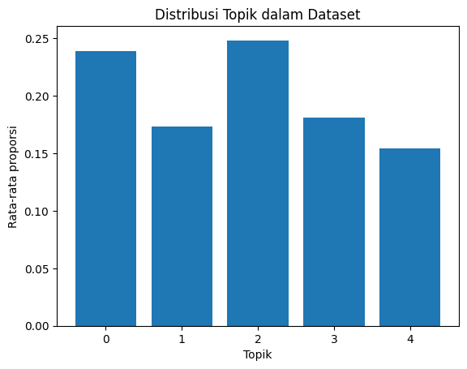
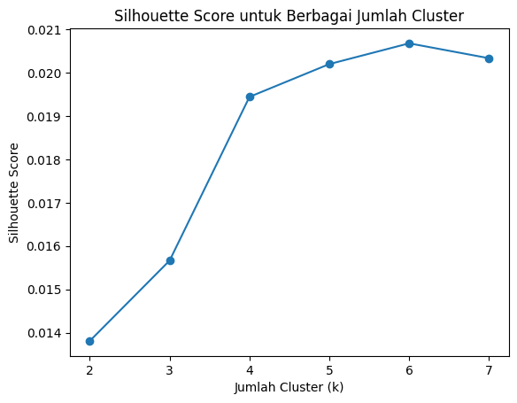
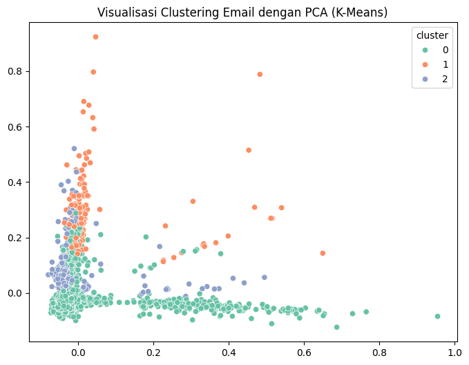

UTS#
1. Klasifikasikan berita menggunakan classifier naïve bayes dan SVM#
!pip install gensim
Requirement already satisfied: gensim in /usr/local/lib/python3.12/dist-packages (4.3.3)
Requirement already satisfied: numpy<2.0,>=1.18.5 in /usr/local/lib/python3.12/dist-packages (from gensim) (1.26.4)
Requirement already satisfied: scipy<1.14.0,>=1.7.0 in /usr/local/lib/python3.12/dist-packages (from gensim) (1.13.1)
Requirement already satisfied: smart-open>=1.8.1 in /usr/local/lib/python3.12/dist-packages (from gensim) (7.3.1)
Requirement already satisfied: wrapt in /usr/local/lib/python3.12/dist-packages (from smart-open>=1.8.1->gensim) (1.17.3)
import pandas as pd
import numpy as np
import re
import nltk
from sklearn.model_selection import train_test_split
from sklearn.feature_extraction.text import CountVectorizer
from sklearn.naive_bayes import MultinomialNB
from sklearn.svm import LinearSVC
from sklearn.metrics import classification_report, accuracy_score
from gensim import corpora, models
from nltk.corpus import stopwords
# Tambahkan tiga baris ini (agar tokenisasi dan stopword berfungsi)
nltk.download('punkt')
nltk.download('punkt_tab') # penting untuk versi NLTK baru
nltk.download('stopwords')
[nltk_data] Downloading package punkt to /root/nltk_data...
[nltk_data] Unzipping tokenizers/punkt.zip.
[nltk_data] Downloading package punkt_tab to /root/nltk_data...
[nltk_data] Unzipping tokenizers/punkt_tab.zip.
[nltk_data] Downloading package stopwords to /root/nltk_data...
[nltk_data] Unzipping corpora/stopwords.zip.
True
nltk.download('stopwords')
nltk.download('punkt')
[nltk_data] Downloading package stopwords to /root/nltk_data...
[nltk_data] Package stopwords is already up-to-date!
[nltk_data] Downloading package punkt to /root/nltk_data...
[nltk_data] Package punkt is already up-to-date!
True
dataset#
import pandas as pd
# Set opsi untuk menampilkan semua baris dan kolom
pd.set_option('display.max_rows', None)
pd.set_option('display.max_columns', None)
# Membaca file CSV
df = pd.read_csv('Berita.csv')
# Menampilkan seluruh DataFrame
print(df)
No judul \
0 1 Airlangga Harap Kenaikan UMP Tingkatkan Daya B...
1 2 PT SIER Beri Penghargaan untuk 50 Tenant Terba...
2 3 Prabowo Bakal Bentuk Kementerian Penerimaan Ne...
3 4 Sinergi Kemenag & BPJS Ketenagakerjaan Lindung...
4 5 Pemerintah Segera Bentuk Satgas PHK Usai Tetap...
5 6 AHY Buka-bukaan Nasib Kelanjutan Pembangunan I...
6 7 Badan Gizi Soal Biaya Makan Gratis Rp10 Ribu: ...
7 8 Zulhas Minta Tambahan Anggaran Rp510 M Demi Ca...
8 9 PLN Akan Uji Coba PLTS IKN 22 Desember
9 10 Profil Jhony Saputra, Anak Haji Isam yang Jadi...
10 11 Kemendag Dorong UMKM Go Global Lewat Pekan Pen...
11 12 RDP Perdana, Komisi VI Beri Lampu Hijau Progra...
12 13 Mendag Pastikan Harga Bapok di Surabaya Stabil...
13 14 Investasi Pertamina Tembus Rp74 T per Oktober ...
14 15 Dirut Bulog Jamin Stok Beras Aman Sampai Lewat...
15 16 Airlangga Nilai Ketegangan Politik di Korsel J...
16 17 Menaker Ancam Sanksi Pengusaha Bandel Tak Mau ...
17 18 UMP 2025 Bisa Naik Lebih dari 6,5 Persen, Ini ...
18 19 Menaker Ungkap Skema Jika Pengusaha Tak Sanggu...
19 20 Gubernur Harus Tetapkan UMP 2025 Paling Lambat...
20 21 BPJS Ketenagakerjaan Borong 14 Penghargaan di ...
21 22 Erick Gandeng Airbus Hingga Comac Genjot Jumla...
22 23 Erick Thohir Tantang Intel Bangun Industri Sem...
23 24 Menteri UMKM Bakal Bertemu Ojol Bahas Wacana P...
24 25 Pemerintah Kaji PPN Multitarif 2025
25 26 Prabowo Bertemu Pengusaha Jepang di Istana, Ap...
26 27 Menkop Apresiasi Dukungan Muslimat NU di Progr...
27 28 Menteri PU Blak-blakan Proyek IKN Bakal Molor ...
28 29 Mandiri Tunas Finance Salurkan Pembiayaan Rp26...
29 30 Skema Bansos Mau Diubah, Ini Bantuan Buat Peng...
30 31 Petani Khawatir Harga Cabai 'Terbang' Gegara T...
31 32 Tol Padang-Sicincin Uji Coba 15 Desember, Tak ...
32 33 Crazy Rich Vietnam Bebas dari Vonis Mati Asalk...
33 34 Google Gugat Biro Perlindungan Keuangan Konsum...
34 35 PNM Beri Penghargaan Ibadah Umrah untuk Nasaba...
35 36 Telkomsel Luncurkan IndonesiaNEXT ke-9 dengan ...
36 37 Menko AHY Klaim Harga Tiket Pesawat Turun 10 P...
37 38 Bos PLN Pastikan Pasokan Listrik Aman saat Per...
38 39 BRI Hadirkan Program QRIS UMI Bebas Biaya MDR,...
39 40 Daftar 3 KEK yang Dilaporkan Airlangga ke Prabowo
40 41 Wamen P2MI Sebut Jerman dan Jepang Butuh Nakes...
41 42 UMP Sultra 2025 Naik 6,5 Persen Jadi Rp3 Juta
42 43 Freeport Gelontorkan Rp3,17 M per Ha Reklamasi...
43 44 Sri Mulyani Ingin Anggaran Makan Gratis Rp71 T...
44 45 Prabowo Targetkan Pendapatan Negara Rp3 Ribu T...
45 46 Rosan Beber Kunci Pengusaha Agar Mau Investasi...
46 47 Menperin Tekankan Apple Wajib Bangun Pabrik di RI
47 48 UMP Jawa Tengah 2025 Naik 6,5 Persen, Jadi Rp2...
48 49 AS dan Jepang Bakal Investasi Nuklir di Indonesia
49 50 Airlangga Bidik Investasi Tahun Depan Tembus R...
50 51 ESDM Pastikan Tak Ada Pembatasan Beli LPG 3 Kg...
51 52 Wamenaker Bela Eks Pekerja John LBF yang Jadi ...
52 53 4 Provinsi Belum Tetapkan UMP 2025
53 54 Pj Gubernur Tetapkan UMP Sumut Naik 6,5 Persen...
54 55 SMI Kucur Pinjaman Reguler Rp150 M ke RSUD San...
55 56 Freeport Pastikan Tailing Aman
56 57 Libur Nataru, Penumpang di Bandara Bali Dipred...
57 58 PPN 12 Persen Pengaruhi Daya Beli, OJK Wanti-w...
58 59 Wamen UMKM Nilai Kolaborasi Kunci Wujudkan Kot...
59 60 Bahlil Ungkap Skema 'Blending' Subsidi BBM Ham...
60 61 Basuki: Kantor Legislatif-Yudikatif Mulai Diba...
61 62 Bandara Bali Layani 21 Juta Penumpang Sepanjan...
62 63 HUT ke-129, BRI Sedia Beragam Promo yang Manja...
63 64 Pertamina Umumkan 25 Pemenang AJP 2024
64 65 Jasa Raharja & Kemenhub Tinjau Pelabuhan Merak...
65 66 Bank Sentral Korea Janji Pasar Tetap Stabil Us...
66 67 Fed Diprediksi Potong Suku Bunga 0,25 Persen S...
67 68 Dirut Pertamina Simon Mantiri Kunjungi Desa En...
68 69 Pemerintah Gelontorkan Insentif Rp265 T Usai P...
69 70 Merdeka Copper Gold Beber Progres Tambang Emas...
70 71 PNM & BPOM Tingkatkan Literasi UMKM Pangan Ten...
71 72 Tarif PPh Final 0,5 Persen UMKM Diperpanjang S...
72 73 KCIC Buka Suara Soal Dugaan Persekongkolan di ...
73 74 Kementan dan Kementrans Sinergi Bangun Kawasan...
74 75 AHY Jajal Direct Train Jakarta-Yogya, Menhub E...
75 76 Pemerintah Susun Kriteria Barang Premium yang ...
76 77 Wamenperin Pede RI Bisa Menang Rebutan Investo...
77 78 Wamen ESDM Ungkap 1,6 Juta Masyarakat Belum Da...
78 79 KAI Siapkan 3,5 Juta Tiket untuk Nataru, Baru ...
79 80 Warga Terluar Maluku Kini Bisa Beli Pertalite ...
80 81 Zulhas Lantik 8 Pejabat Kemenko Pangan, Ada Ek...
81 82 DJPPR Kemenkeu Dorong Inovasi Dalam Pendanaan ...
82 83 Menkop Pastikan Ratusan Koperasi Siap Pasok Ba...
83 84 BPJS Ketenagakerjaan Tingkatkan Literasi Jamso...
84 85 Investasi Rp12 T Masuk ke 3 Klaster Industri D...
85 86 Kementerian PU Pastikan Tak Ada Proyek Setop B...
86 87 Wamenaker: Mumet Gua soal Sritex
87 88 BI Bersuara soal Uang Palsu di UIN Makassar: B...
88 89 Bahlil Ungkap Cara Agar Indonesia Bisa Swasemb...
89 90 Kementrans Jadi Mitra Strategis Kementan, Foku...
90 91 ESDM Ungkap Nasib Badan Nuklir: Tunggu Kesesua...
91 92 Wamentan: Anggaran Ketahanan Pangan Rp139 T, J...
92 93 Geo Dipa Energi Ungkap Strategi Maksimalkan Po...
93 94 Bos MIND ID Klaim Sudah Lakukan Upaya Hilirisa...
94 95 Bos Badan Pangan Beber Jenis Beras yang Dikena...
95 96 PPN 12 Persen Berlaku, Beli Barang Rp5 Juta Ba...
96 97 Mandiri Bagikan Ribuan Paket Natal, Sembako hi...
97 98 Iuran BPJS Ketenagakerjaan untuk Sektor Padat ...
98 99 Hari Pertama Dibuka, 15 Ribu Mobil Lewati Tol ...
99 100 Menteri ESDM Cek Terminal Pertamina, Pastikan ...
100 101 Transmart Full Day Sale Balik Lagi, Diskon Spe...
101 102 PPN 12 Persen, Bagaimana Hitung-hitungan Top U...
102 103 Stasiun Whoosh Karawang Beroperasi 24 Desember...
103 104 Peran Ibu-Ibu PNM Mekaar Lebih dari Sekadar Pa...
104 105 PDIP: UU HPP Memungkinkan Pemerintah Tekan PPN...
105 106 Wamen ESDM Sebut Stok BBM di Medan Tambah 5 Pe...
106 107 Harga Telur Sentuh Rp30 Ribu Jelang Nataru, St...
107 108 DJP Pastikan PPN 12 Persen Atas Transaksi QRIS...
108 109 Menteri Rosan Bawa Komitmen Investasi Rp120 Tr...
109 110 Bulog Jamin Stok Beras di Makassar Cukup 6 Bul...
110 111 Unilever Bakal Rombak Susunan Direksi Awal 2025
111 112 Stasiun Whoosh Karawang Dibuka, Penumpang Dita...
112 113 Demi Swasembada Pangan, Zulhas Minta Laporan K...
113 114 Menko Zulhas Tegaskan Distribusi Pupuk ke Peta...
114 115 Target KUR Naik Jadi Rp300 T pada 2025
115 116 Bahlil Dorong Izin Pembangunan SPBUN untuk Kes...
116 117 Cak Imin Pastikan Tak Ada Bansos Khusus PPN 12...
117 118 Badan Gizi Minta Warga Waspada Penipuan Usai V...
118 119 Wayang Kulit Meriahkan HUT ke-129 BRI, Lestari...
119 120 Viral Pungli Kotak Makan di Sekolah, Badan Giz...
120 121 Tutorial Batalkan PPN 12 Persen Buat Prabowo
121 122 Wamen BUMN Pastikan Listrik PLN Aman Selama Na...
122 123 Badan Gizi Bantah Tunjuk Ormas Tangani Makan B...
123 124 Komisi VII Minta Prabowo Kawal Langsung Penyel...
124 125 Viral Pungli Wadah Makan Siang Gratis, Badan G...
125 126 Japan Airlines Diserang Hacker, Penerbangan Te...
126 127 16 Juta Keluarga Bakal Terima Bantuan Pangan M...
127 128 Wamen BUMN Cek Pasokan BBM Jelang Tahun Baru d...
128 129 PHRI Prediksi PPN 12 Persen Bikin Tarif Hotel ...
129 130 Kadin Prediksi Perputaran Uang Saat Libur Nata...
130 131 Menteri PU Respons Tarif Air PAM di Jakarta Na...
131 132 Menteri PU Tepis Kabar Prabowo Bakal Setop Pro...
132 133 INALUM Cetak Kinerja All-Time High, Bukti Duku...
133 134 Menkeu Pertama Jokowi Ungkap Sosok Misterius d...
134 135 Pertamina dan 13 Kelompok Perhutanan Sosial Pe...
135 136 Riset Binus: AI Bisa Antar Indonesia Pimpin Hi...
136 137 BI Beber Seluk Beluk Tata Kelola CSR di Tengah...
137 138 KAI: 2,9 Juta Tiket KA Terjual selama Periode ...
138 139 Daftar Komoditas yang Mau Zulhas Setop Impor d...
139 140 Harga Cabai Makin 'Pedas' Jelang Tahun Baru
140 141 KAI Pastikan Tiket Kereta Api Tidak Kena PPN 1...
141 142 Prabowo Kerek Harga Gabah Jadi Rp6.500 per Kg,...
142 143 Prabowo soal Penyelundupan Tekstil Ancam Peker...
143 144 Kebun Gizi, Inisiatif PT GNI Penuhi Nutrisi An...
144 145 Penumpang Pesawat Naik 10 Persen Usai Pemerint...
145 146 Pakar Ungkap Makan Gratis Rp10 Ribu Tak Cukup,...
146 147 Prabowo Panggil Zulhas-Raja Juli ke Istana, Ba...
147 148 IHSG Naik ke 7.079 Ditopang 338 Saham Sore Ini
148 149 Siap-siap, Makan Bergizi Gratis Dimulai 6 Janu...
149 150 Ajaib Group Terima Izin Bappebti, Peluang Resm...
150 151 Daftar Lengkap Barang Mewah yang Kena PPN 12 P...
151 152 Daftar Lengkap Sri Mulyani soal Barang/Jasa Ta...
152 153 Prabowo Tegaskan Barang dan Jasa Bahan Pokok T...
153 154 Prabowo: PPN 12 Persen Hanya Buat Barang Mewah...
154 155 Nusron Ungkap Nasib Proyek PIK 2 Milik Aguan y...
155 156 Prabowo Sambangi Kantor Sri Mulyani Jelang Ken...
156 157 Rupiah Nangkring di Rp16.132 pada Perdagangan ...
157 158 Prabowo Akan Bicara soal PPN Jadi 12 Persen di...
158 159 Harga Minyak Mentah Merambat Naik Imbas Geliat...
159 160 Tarif MRT, LRT hingga Transjakarta Hanya Rp1 S...
160 161 Menperin Bakal Panggil Kurator Sritex usai Kas...
161 162 Rupiah Tersenyum ke Rp16.115 per Dolar AS Jela...
162 163 Penumpang Garuda Melonjak 24 Persen Selama Per...
163 164 Pendaftaran PPPK Tahap 2 Diperpanjang, Cek Jad...
164 165 Klasterku Hidupku BRI Berhasil Berdayakan Peta...
165 166 Zulhas Soal PPN 12% Hanya untuk Barang Mewah: ...
166 167 OIKN Beber Persiapan Pindahan PNS ke IKN Usai ...
167 168 Komisaris dan Dirut Pertamina Kunjungi Integra...
168 169 Menteri ATR Sebut Cuma Ada 3 Food Estate di Er...
169 170 Harga BBM Terbaru di Pertamina, Shell, BP, dan...
170 171 Apa Saja Barang Mewah yang Terkena PPN 12 Persen?
171 172 Poin-poin Pernyataan Prabowo dan Sri Mulyani s...
172 173 Ini Daftar 4 Pungutan yang Akan Buat Hidup Rak...
173 174 Dirjen Pajak Pastikan Netflix Cs Hanya Kena PP...
174 175 Pemerintah Undang Apple Rapat 7 Januari Bahas ...
175 176 Bos Pajak Bersuara soal Prabowo Tiba-tiba Bata...
176 177 Tembus Rp91,34 T, APBD Jakarta 2025 Tertinggi ...
177 178 Beda dengan Rupiah yang Lesu, IHSG Melesat ke ...
178 179 Jatuh ke Rp16.198, Rupiah Gagal Bersinar di Aw...
179 180 Harga Minyak Menguat di Tengah Optimisme Stimu...
180 181 Bahlil Pamer Lifting Minyak Naik: Insyaallah L...
181 182 Impor Bijih Besi China Bakal Cetak Rekor di Te...
182 183 10 Ribu Buruh Sritex Akan 'Serbu' Istana Hingg...
183 184 Menperin: Isu Sritex Jauh Lebih Complicated da...
184 185 Harga Minyakita Meroket ke Rp19 Ribu per Liter...
185 186 4 Resolusi Keuangan Agar Selamat di Tengah Kon...
186 187 Bahlil Yakin B40 Menuju B50 Akan Bawa RI Tak I...
187 188 Harga Emas Naik Terus, Jam Tangan Rolex Teranc...
188 189 Makan Bergizi Gratis Dimulai Besok, 190 Dapur ...
189 190 Cara Menghitung Opsen Pajak Kendaraan yang Ber...
190 191 Dirjen Pajak Rilis Aturan Pengembalian Lebih B...
191 192 2 Pajak Baru Kendaraan Bermotor Berlaku Mulai ...
192 193 Harga Minyak Mentah Bangkit Imbas Kebijakan Ch...
193 194 Harga PP Gabah Naik Jadi Rp6.500, Beras Rp12 R...
194 195 Prabowo Larang Produk Impor 'Cemari' Makan Ber...
195 196 190 Dapur di 26 Provinsi Pasok Menu Makan Berg...
196 197 600 Ribu Orang Dapat Makan Bergizi Gratis di H...
197 198 Bantuan Beras Akan Diperpanjang dari 2 Menjadi...
198 199 Anak Buah Sri Mulyani: Harga LPG 3 Kg Sesunggu...
199 200 APBN Berhasil Dihemat Rp3,6 T Usai Biaya Perja...
200 201 Badan Gizi Bongkar Sebab Tak Ada Susu di Makan...
201 202 Anggaran Badan Gizi Nasional Rp1,5 T Dialihkan...
202 203 Kemitraan Jadi Fondasi Keberhasilan Hilirisasi...
203 204 Sri Mulyani Akui Setoran Pajak Tertekan di 202...
204 205 Zulhas: Anggaran Makan Bergizi Gratis Bisa Tem...
205 206 Sri Mulyani Klaim Kemiskinan-Pengangguran Turu...
206 207 Aksi Nyata Penerima Beasiswa Pertamina Lestari...
207 208 Zulhas Sebut Susu Makan Gratis Impor: Tapi Tid...
208 209 Badan Gizi Izinkan Masyarakat Foto Menu Makan ...
209 210 Harga Minyak Tertekan Kabar dari AS dan Jerman
210 211 Badan Gizi Pastikan Mitra Makan Bergizi Gratis...
211 212 Zulhas Buka Suara Soal Makan Bergizi Gratis Di...
212 213 Pagar Laut Misterius 30 Km Tangerang Caplok Pe...
213 214 Pembangunan Pagar Laut 30 Km Tangerang Ilegal,...
214 215 Tarif Whoosh Jakarta-Bandung Cuma Rp175 Ribu P...
215 216 Harga Minyak Anjlok 1 Persen Imbas Data AS dan...
216 217 KKP Buka Suara soal Pagar Laut Misterius 30 Km...
217 218 Luhut Sebut Anak-anak Menikmati Makan Bergizi ...
218 219 Jaminan Pensiun Baru Bisa Cair di Usia 59 Tahu...
219 220 Luhut Respons Banyak Wajib Pajak Keluhkan Core...
220 221 Pagar Laut Misterius 30 Km Disegel KKP Atas Pe...
221 222 Makan Bergizi Gratis Buat Ibu Hamil dan Menyus...
222 223 Membentang 30 Km di Tangerang, Pagar Laut untu...
223 224 Cuaca Dingin di AS dan Eropa Bikin Harga Minya...
224 225 Cerita Nelayan Pergoki Pembangunan Pagar Laut ...
225 226 Nelayan Mengaku Diancam Usai Protes Pagar Mist...
226 227 PIK 2 Bantah Bangun Pagar Laut Misterius 30 Km...
227 228 Coretax Susah Diakses, Ditjen Pajak Minta Maaf...
228 229 Fakta-Fakta Pagar Laut Misterius: Pemerintah T...
229 230 5 Fakta Pengakuan Nelayan soal Pagar Laut Mist...
230 231 KKP Selidiki Siapa Aktor di Balik Pagar Laut M...
231 232 Warga Tiba-tiba Klaim Pemilik di Tengah Desaka...
232 233 Harga Minyak Mentah Terbang Imbas Dampak Sanks...
233 234 Respons JRP Dituding Ormas Bodong Usai Ngaku P...
234 235 Mendag Surati Sri Mulyani Demi Tekan Harga Min...
235 236 Sri Mulyani Cuma 'Tumbal' Minyakita Mahal, Apa...
236 237 Harga Minyak Dunia Jatuh Usai Sempat Naik 2 Pe...
237 238 Selain di Tangerang, Pagar Laut 'Misterius' Ju...
238 239 KKP: Sampai Sekarang Belum Ada yang Ngaku Pemi...
239 240 Bos Badan Gizi Buka Peluang Tambah Anggaran Ma...
240 241 52 Persen Penduduk Miskin RI Berkumpul di Jawa
241 242 Coretax, Sistem Pajak Canggih Digadang Tambah ...
242 243 Luhut Tersinggung ke Bank Dunia Gara-gara Pajak
243 244 Pagar Laut Misterius di Bekasi Ternyata Proye...
244 245 Luhut Sindir Pengkritik Makan Gratis: Waktu Ja...
245 246 KKP Segel Pagar Laut di Bekasi
246 247 Harga Minyak Melonjak Imbas Sanksi AS ke Rusia
247 248 Ombudsman: Pagar Laut Bikin Nelayan Rugi Rp9M
248 249 Menteri ATR Belum Bisa Berbuat Apa-apa soal Pa...
249 250 Airlangga soal Pagar Laut Bekasi: Bukan Giant ...
250 251 Data Masyarakat yang Berhak 'Minum' Pertalite ...
251 252 Harga Minyak Naik Imbas Was-was Pasokan dan Su...
252 253 Mau Perkuat Sinergi, Sri Mulyani 'Curi' Ilmu E...
253 254 Modus Penipuan Sistem Coretax Pajak Bermuncula...
254 255 BRI, Satu-Satunya BUMN Penerbit Obligasi Hijau...
255 256 Menko Zulhas Pastikan Harga Bapok Murah dan St...
256 257 Bos Badan Gizi Dipanggil Prabowo ke Istana, Ev...
257 258 Airlangga soal Ketimpangan Naik: Kita Dongkrak...
258 259 Mengenal Pemenang Tender Coretax, Sistem Pajak...
259 260 Pemerintah Perlu Tambah Rp100 T Ongkosi Makan ...
260 261 10 Hari Berjalan, Makan Bergizi Gratis Disalur...
261 262 TRPN Ancam Gugat KKP ke DPR Terkait Kasus Paga...
262 263 Badan Gizi Buka Suara soal Kasus Keracunan Mak...
263 264 Pajak Minimum Global Diterapkan RI, Buat Siapa...
264 265 Ekonom Taksir Kerugian Akibat Pagar Laut Capai...
265 266 KKP soal Ancaman Digugat Kasus Pagar Laut Beka...
266 267 Menteri KKP: Luas Pagar Laut di Bekasi 3 Ribua...
267 268 Daftar Pemilik Sertifikat HGB Pagar Laut Miste...
268 269 Menteri ATR Akui Pagar Laut Bersertifikat HGB,...
269 270 KKP Ultimatum Pemilik Pagar Laut Tangerang 2x2...
270 271 Menteri KKP dan KSAL Sepakat Bongkar Pagar Lau...
271 272 OIKN soal IKN Ditumbuhi Semak: Konsep Forest T...
272 273 Menteri ATR Bakal Tindak Anak Buah Terlibat SH...
273 274 Anak Buah Airlangga Pastikan Evaluasi PIK 2 Ta...
274 275 Menteri ATR Minta Maaf Gaduh Pagar Laut Tanger...
275 276 Siapa di Balik Perusahaan Pemilik Mayoritas HG...
276 277 Harga Minyakita Tembus Rp60 Ribu per Liter di ...
277 278 Menteri KKP Ungkap Arahan Prabowo soal Polemik...
278 279 Menteri KKP soal Sertifikat HGB Pagar Laut: It...
279 280 Airlangga Tak Paham Pagar Laut Bersertifikat, ...
280 281 Perusahaan Aguan Terungkap Punya Sertifikat HG...
281 282 Kemenkeu Raup Rp32,32 T dari Pajak Netflix hin...
282 283 Harga Cabai Makin Pedas di Medan, Tembus Rp56 ...
283 284 Siapa Pemilik Intan Agung Makmur, Pemegang HGB...
284 285 Menteri KKP Curiga Pagar Laut Tangerang untuk ...
285 286 Respons KKP Digugat Buntut Pagar Laut: Itu Sal...
286 287 Harga Minyak Lesu Gara-gara Trump
287 288 2 Perusahaan Pemegang HGB Pagar Laut Terafilia...
288 289 Erick Thohir Perintahkan Bank Negara Blacklist...
289 290 KKP Periksa Kelompok Nelayan Buntut Pagar Laut...
290 291 Erick Thohir Tak Masalah Fly Jaya Jadi Pesaing...
291 292 AHY Mengaku Tak Tahu soal HGB Pagar Laut Saat ...
292 293 Makan Bergizi Gratis Tetap Jalan Saat Ramadan,...
293 294 Pengamat Usul Pupuk Subsidi Dihapus, Ganti BLT...
294 295 WIKA Kantongi Kontrak Baru Rp20,6 T di 2024, G...
295 296 Kenapa Pagar Laut Masih Sengkarut, Siapa 'Tuha...
296 297 Harga Minyak Turun Tipis di Tengah Pasar Menan...
297 298 Menteri ATR Nusron Cabut SHGB Pagar Laut Tange...
298 299 Pejabat ATR/BPN Diperiksa Terkait SHGB Pagar L...
299 300 Menteri KKP Ungkap Usul Asal Dana Pembongkaran...
300 301 Prabowo Targetkan Seluruh Anak Dapat Makan Ber...
301 302 Prabowo Puji Sri Mulyani Berani Pangkas Anggar...
302 303 Mendag Masih Tunggu Respons Sri Mulyani soal R...
303 304 Erick Thohir Pastikan Mudik Gratis Bersama BUM...
304 305 Bos Badan Gizi Beber Kelanjutan Komitmen Jepan...
305 306 Respons Sri Mulyani soal Makan Bergizi Gratis ...
306 307 Dukung PMI, BRI Siapkan Solusi Keuangan Inovat...
307 308 KAI Sediakan 4 Juta Kursi Buat Mudik Lebaran 2025
308 309 Dorong Asta Cita, SGAR Mempawah Pacu Pertumbuh...
309 310 Prabowo Mau Hemat APBN Rp306 T dari Pangkas An...
310 311 Harga Minyak Turun Imbas Was-was Dampak Kebija...
311 312 Prabowo Perintahkan Pemda Pangkas Perjalanan D...
312 313 Pemilik Pagar Laut Tangerang Didenda Rp18 Juta...
313 314 Fakta-fakta SHGB Pagar Laut Tangerang yang Dic...
314 315 Menteri KKP Bakal Panggil 2 Anak Usaha Grup Ag...
315 316 Mudik, Menhub Buka Peluang Harga Tiket Pesawat...
316 317 Kemenperin soal Apple Investasi Rp16 T di Bata...
317 318 Agung Sedayu Bersuara soal Menteri ATR Akan Ca...
318 319 IHSG Lesu ke 7.232 Sore Ini
319 320 Agung Sedayu Akhirnya Akui Anak Usaha Punya HG...
320 321 KKP Baru Bongkar 5 Km Pagar Laut Misterius Tan...
321 322 Menyibak Alasan Prabowo Diet Ketat APBN, Pangk...
322 323 Kemenkeu Akhirnya Ungkap Alasan Prabowo Perint...
323 324 IHSG Diproyeksi Merah Jelang Libur Panjang
324 325 Pengakuan Lengkap Agung Sedayu soal HGB di Pag...
325 326 Revisi UU BUMN Bakal Atur Hak Monopoli Perusah...
326 327 Diet Ketat' APBN Rp306 T, Sri Mulyani Singgung...
327 328 Fly Jaya Bisa Terbang Sebelum Lebaran 2025
328 329 KKP Ungkap Dasar Hitungan Denda Pagar Laut Rp1...
329 330 Prabowo Akan Gelar Rapat Khusus Bahas Evaluasi...
330 331 BPJS Ketenagakerjaan Beri Perlindungan Maksima...
331 332 Harga Minyak Merosot Imbas Trump Tekan Arab Dkk
332 333 Kemenko Ekonomi Evaluasi PSN, Termasuk Tropica...
333 334 Dua Menteri Tunggu 'Surat Cinta' Sri Mulyani s...
334 335 Tak Hanya SHGB, Nusron Cabut 17 SHM di Pagar L...
335 336 Sri Mulyani Dkk Waspadai Kebijakan Trump
336 337 Kementerian BUMN Mulai Terapkan Sistem Kerja 4...
337 338 Mendag Minta Dukungan Erick Thohir Bantu Doron...
338 339 Daftar 19 Belanja KL yang Disikat Prabowo Demi...
339 340 Warga Merasa Nama Dicatut Dalam Penerbitan Ser...
340 341 Sri Mulyani Ungkap Pemicu Prabowo Tiba-tiba Mi...
341 342 Sri Mulyani Akui Penghematan Rp306 T Prabowo D...
342 343 Menteri Nusron Mulai Cabut Sertifikat HGB Paga...
343 344 Mendag Tuding Distributor Nakal Jadi Biang Ker...
344 345 Bos BGN Buka-bukaan Mekanisme Makan Bergizi Gr...
345 346 BGN Buka Peluang Serangga Jadi Menu Makan Grat...
346 347 Pegawai Kementerian BUMN Kerja 4 Hari Seminggu...
347 348 Eks Wamen ATR Raja Juli: Penerbitan SHGB Pagar...
348 349 KKP Bakal Periksa PT TRPN soal Pagar Laut Bekasi
349 350 BGN Ungkap Alasan Susu Tak Diberikan Serentak ...
350 351 Pemerintah Janjikan Modal Awal untuk UMKM Mitr...
351 352 Belalang Akan Jadi Alternatif Protein Menu Mak...
352 353 UMKM Mitra Makan Bergizi Gratis Bisa Dikasih M...
353 354 Sri Mulyani Rilis 16 Belanja yang Harus Dipang...
354 355 Belalang-Ulat Sagu Akan Jadi Bahan Alternatif ...
355 356 AHY Sudah Endus Penerbit HGB dan SHM Pagar Lau...
356 357 KKP Segera Panggil Pihak Terkait di Kasus Paga...
357 358 KKP Ungkap Tak Bisa Selidiki Kasus Pagar Laut:...
358 359 Bos BGN Minta Penerima Makan Gratis Unggah Fot...
359 360 RI Impor 2 Juta Sapi 5 Tahun ke Depan: Swasemb...
360 361 Harga MinyaKita Berstatus Waspada Usai Tembus ...
361 362 Gas LPG 3 Kg Langka di Jakarta, Apa Penyebabnya?
362 363 LPG 3 Kg Langka di Jakarta Beberapa Hari Ini, ...
363 364 Anggaran 2025 Terbatas, Bappenas Ajak Cari Inv...
364 365 Menko Airlangga Buka Suara soal Anggaran Kemen...
365 366 Bahlil Ancam Pengelola Masela: Mau Produksi Ti...
366 367 Airlangga soal BRI Hapus Utang Macet 71 Ribu U...
367 368 Nusron Bongkar Akal-akalan Pengusaha Sawit Ser...
368 369 Bulog Dapat Anggaran Rp16 T Buat Serap 3 Juta ...
369 370 Harga Minyak Menanjak di Tengah Was-was Tarif ...
370 371 Hashim Sentil Pagar Laut: Nelayan Kita Terancam
371 372 Impor Singkong-Gandum Bakal Diperketat Demi Li...
372 373 Pemerintah Siapkan Rp144 T Hadapi Gejolak Pang...
373 374 Realisasi Investasi Tembus Rp1.714 T pada 2024
374 375 Rupiah Melemah ke Rp16.296 Pagi Ini
375 376 Marquez Mau Duel dengan Bagnaia di MotoGP 2025
376 377 Mees Hilgers Absen, Twente Comeback Bungkam Go...
377 378 Hasil Liga Inggris: MU Gulung Everton 4-0, Che...
378 379 Venezia Dibantai Bologna, Kawan Jay Idzes Ingi...
379 380 Link Live Streaming Liverpool vs Manchester City
380 381 Timnas Indonesia Belum Carter Pesawat di Babak...
381 382 Indonesia Lolos ke ASEAN Women's Championship ...
382 383 Jadwal Timnas Indonesia vs Kamboja di Final Pi...
383 384 Hasil Piala AFF Wanita: Timnas Indonesia ke Fi...
384 385 Hasil Liga 1: Hantam Madura United, Persebaya ...
385 386 Timnas Indonesia Belum Ambil Opsi Pemanggilan ...
386 387 Viktor Axelsen Tantang BWF, Protes Keras Soal ...
387 388 Timnas Indonesia Sikat Bali United 2-1, Marsel...
388 389 Hasil Liga 1: Debut Ong Kim Swee, Persis Ditah...
389 390 Top Skor Liga Voli Korea: Megawati dalam Ancam...
390 391 Solidaritas dengan Mazraoui, MU Tolak Pakai At...
391 392 Mantan Juara Dunia Tinju Sebut Mike Tyson Seng...
392 393 Klasemen Liga Voli Korea: Red Sparks Tutup Put...
393 394 Hasil Piala AFF Wanita 2024: Timnas Indonesia ...
394 395 Dihajar Zhejiang, Persib Tersingkir dari Liga ...
395 396 Mohamed Salah Pecahkan Rekor Gol dan Assist da...
396 397 Babak 1 Final Piala AFF Wanita: Indonesia Ungg...
397 398 Babak I: Persib Tertinggal 1-3 dari Zhejiang
398 399 Hasil Liga 1: Gol Injury Time, Bali United Imb...
399 400 5 Fakta Jelang Manchester United vs Nottingham...
400 401 Hasil Babak I Liga Inggris: Crystal Palace vs ...
401 402 Kalahkan Hi Pass, Pelatih Red Sparks Puji Bint...
402 403 Hasil Piala AFF 2024: Mengamuk, Thailand Banta...
403 404 Rafael Struick Sudah Bergabung, Starter di Mya...
404 405 Hasil Liga 1: Kalah dari Persita, Persis Sudah...
405 406 Pemain Naturalisasi dan Keturunan Dominasi Lag...
406 407 Hasil Piala AFF 2024: Malaysia Nyaris Kalah da...
407 408 Jadwal PSS vs Persib di Liga 1
408 409 Hasil Piala AFF: Vietnam Bantai Laos 4-1, Quan...
409 410 Hasil Piala AFF 2024: Jual Beli Serangan, Indo...
410 411 Menit ke-76: Gol Asnawi Bawa Indonesia Unggul ...
411 412 Hasil Liga 1: Tyronne Cetak Gol Indah, Persib ...
412 413 Hasil Liga 1: Diwarnai Kartu Merah, Persija Dr...
413 414 Pesan Hendra untuk Ahsan yang Pensiun dan Gant...
414 415 Pau Marti Cemburu Stadion Kamboja Penuh, Malay...
415 416 Mohammad Ahsan Pensiun, Ikuti Jejak Hendra Set...
416 417 Hasil Piala AFF: Comeback Dramatis, Malaysia H...
417 418 Lemparan Arhan Bikin Ketar-ketir, Pelatih Laos...
418 419 Hasil Liga 1: PSIS Tekuk Bali United 2-1
419 420 Piala AFF 2024: Timor Leste Unggul 2-1 atas Ma...
420 421 Marselino Ferdinan Absen di Vietnam vs Indonesia
421 422 Daftar Top Skor Piala AFF 2024: Ferarri Melesat
422 423 Ferarri Usai Indonesia Ditahan Laos: Banyak Ke...
423 424 2 Kontroversi saat Indonesia Gagal Tekuk Laos ...
424 425 Lemparan Jauh Arhan Kembali Makan Korban di In...
425 426 Hasil Piala AFF: Marselino Kartu Merah, Indone...
426 427 Indonesia Target Juara Umum di Kejuaraan Dunia...
427 428 Erick Thohir soal Target Vietnam vs Indonesia:...
428 429 PB IPSI Lepas 170 Atlet ke Kejuaraan Dunia Sil...
429 430 Daftar 3 Wakil Indonesia di Semifinal BWF Worl...
430 431 Hasil Lengkap Drawing Kualifikasi Piala Dunia ...
431 432 Hasil Piala AFF 2024: Kiper Blunder, Malaysia ...
432 433 Reaksi Kim Sang Sik soal Anggapan Vietnam Bisa...
433 434 Hasil Liga 1: Gulung Madura United 5-0, Borneo...
434 435 Kata-kata Fajar/Rian Usai Kalah Dramatis dari ...
435 436 Hasil Piala AFF: Singapura Menang 3-0, Timor L...
436 437 Erick Thohir Usai Indonesia Kalah dari Vietnam...
437 438 Statistik Piala AFF: Timnas Indonesia Sempat T...
438 439 Reaksi Ronaldo Usai Indonesia Kalah dari Vietn...
439 440 Klasemen Grup B Piala AFF 2024: Timnas Indones...
440 441 Hasil Piala AFF: Main Bertahan, Timnas Indones...
441 442 Erick Thohir Ingatkan STY: Melawan Filipina In...
442 443 Hasil Liga 1: Sananta Kartu Merah, Persis Gaga...
443 444 Erick Thohir: Timnas Indonesia Kalah Terhormat...
444 445 Media Asia Puji Skuad Muda Indonesia Meski Kal...
445 446 Hasil Piala AFF 2024: Thailand Bangkit Perkasa...
446 447 Klasemen Liga Voli Korea usai Red Sparks Hajar...
447 448 Cetak 2 Gol Indah, Singapura Ungguli Thailand ...
448 449 Hasil Piala AFF: Kamboja Gusur Malaysia Usai C...
449 450 Liga Voli Korea: Megawati Impresif, Red Sparks...
450 451 Hasil Piala AFF: Dramatis Vietnam Imbangi Fili...
451 452 Kalah dari Vietnam, Pemain Timnas Malah Makin ...
452 453 Hasil Liga 1: Dedi Kusnandar Patah Kaki, Persi...
453 454 Klasemen Piala AFF 2024 Usai Vietnam Paksa Fil...
454 455 Head to Head Indonesia vs Filipina: Garuda Sup...
455 456 Reaksi Jonatan Usai Irwansyah Tak Lagi Jadi Pe...
456 457 3 Pelatih Top Herry IP, Aryono, Irwansyah Tak ...
457 458 Singo Minta Maaf Usai Brutal Injak Wajah Donna...
458 459 Hasil Undian Piala Asia Bola Pantai 2025: Timn...
459 460 Malaysia Tersingkir dari Piala AFF 2024, Thail...
460 461 Pemain Asing LavAni Transmedia Terkejut Level ...
461 462 Manajer LavAni Livin Transmedia: Proliga 2025 ...
462 463 Pelatih Filipina Sesumbar Ingin Kalahkan Indon...
463 464 Taufik Hidayat Respons Mulyo Handoyo Rangkap J...
464 465 Kronologi Ferarri Diganjar Kartu Merah di Indo...
465 466 Klasemen Akhir Grup B Piala AFF Setelah Indone...
466 467 Hasil Piala AFF: Indonesia Kalah dari Filipina...
467 468 Hasil Piala AFF: Vietnam Juara Grup Usai Banta...
468 469 Hasil Liga Inggris: Aston Villa Gebuk Man City...
469 470 Hasil Liga Inggris: Bournemouth Bantai MU di O...
470 471 Klasemen Liga 1: Persib Tempel Ketat Persebaya
471 472 RD Tuding PSM Mainkan 12 Pemain Saat Hajar Bar...
472 473 Hasil Liga 1: Diwarnai Kartu Merah, Persib Gil...
473 474 Bos Ducati: Martin Akan Menabrak Bagnaia di Mo...
474 475 Timnas Indonesia Gagal di Piala AFF 2024 Bukan...
475 476 Indonesia Pingpong League 2024 Tuntas, Arwana ...
476 477 5 Pemain Timnas Indonesia di Piala AFF Layak N...
477 478 2 Pemain yang 'Diparkir' STY di Piala AFF 2024
478 479 Martinez Sebut Ruang Ganti MU Penuh Amarah Usa...
479 480 Kans Final Ideal Musuh Bebuyutan Vietnam vs Th...
480 481 Bukayo Saka Absen 3 Bulan, Rashford Bisa Jadi ...
481 482 Cristian Gonzales Siap Turun Gunung Bantu Timn...
482 483 Lelang Jersey Marselino, Tawaran Sentuh Rp45 J...
483 484 Gina Schumacher Hamil, Michael Schumacher Baka...
484 485 Jay Idzes Rayakan Kemenangan Kandang Terakhir ...
485 486 Erick Blak-blakan ke Media Tertua Korea Soal R...
486 487 Vietnam Terancam Tak Diperkuat Striker Andalan...
487 488 Di Media Korea, Erick Thohir Ungkap Kans Indon...
488 489 Indonesia Juara Umum Kejuaraan Dunia Pencak Si...
489 490 Kata-kata Pelatih Red Sparks Usai Megawati CS ...
490 491 Imbas Kontroversi, Striker Vietnam Ngamuk Usai...
491 492 Viral Pickford Gagalkan Penalti Haaland Berkat...
492 493 Hasil Piala AFF: Diwarnai Kontroversi, Vietnam...
493 494 Hasil Liga Inggris: Penalti Haaland Gagal, Man...
494 495 Piala AFF: Bek Thailand Enggan Mengeluh Rumput...
495 496 Hasil Piala AFF: Gol Menit Akhir Dramatis, Fil...
496 497 Timnas Futsal Putri Panggil 2 Pemain Sepak Bol...
497 498 Laga Seru, Filipina Imbangi Thailand 1-1 di Ba...
498 499 Curhat STY Setelah Timnas Indonesia Gagal di P...
499 500 Dipercaya STY Main di Piala AFF 2024, Robi Dar...
500 501 Hasil Liga 1: Bali United Tumpas Persebaya 2-0
501 502 Ronaldo Dukung Amorim di MU: Badai Akan Berlal...
502 503 Peringatan Keras Pelatih Singapura: Kami Datan...
503 504 Joe Rogan: Mike Tyson Itu Baik Hati, tapi Dia ...
504 505 Alasan Leo/Bagas dan Daniel/Fikri Batal Ikut M...
505 506 Hasil Piala AFF 2024: Vietnam Lolos ke Final
506 507 Klasemen Liga 1 Paruh Musim: Persib Rebut Punc...
507 508 Hasil Babak 1 Piala AFF: 2 Gol Dianulir, Vietn...
508 509 Hasil Liga 1: Hajar Persis, Persib Juara Paruh...
509 510 Hasil Piala AFF: Dramatis, Thailand ke Final U...
510 511 Hasil Piala AFF 2024: Thailand 2-1 Filipina, L...
511 512 Hasil Babak 1 Piala AFF: Gempur Habis, Thailan...
512 513 Asisten STY Cerita Awal Jadi Pelatih Fisik dan...
513 514 Jakarta Pertamina Enduro Siap Cetak Sejarah di...
514 515 Petinju Wanita Yakin Kalahkan Jake Paul
515 516 3 Pemain Eropa yang Bantah Klaim Berdarah Mala...
516 517 Zirkzee Menangis Dihujat Fans MU saat Ditekuk ...
517 518 Megawati Cetak Poin Terbanyak, Red Sparks Liba...
518 519 Alasan Pelatih Vietnam Tak Pilih Nguyen Filip ...
519 520 Kapten Thailand Soroti 3 Pemain Kunci Vietnam ...
520 521 Pelatih Thailand Simpan Strategi 'Mematikan' N...
521 522 Demi UFC 311, Khabib Tak Beri Libur Tahun Baru...
522 523 Final Piala AFF: Pelatih Vietnam Sebut Thailan...
523 524 Hasil Final Piala AFF: Xuan Son 2 Gol, Vietnam...
524 525 Nasib Dani Olmo di Barcelona: Tak Bisa Didafta...
525 526 Babak I: Xuan Son Banyak Buang Peluang, Vietna...
526 527 Ambisi Besar Megawati di Red Sparks: Mengalahk...
527 528 Hasil Liga Australia: Struick Main 15 Menit, B...
528 529 Masa Depan di MU Tak Jelas, Rashford Tolak 3 T...
529 530 Jadwal Leg Kedua Final Piala AFF 2024: Thailan...
530 531 Momen 'Petarung Tanpa Paru-paru Vietnam' Bikin...
531 532 Xuan Son Tajam, PSSI Ogah Naturalisasi Pemain ...
532 533 Pelatih Oxford Buka Suara Soal Transfer Ole Ro...
533 534 Real Madrid Ajukan Banding untuk Kartu Merah V...
534 535 Pindah Tim Usai Juara MotoGP, Jorge Martin Iku...
535 536 Thailand Pamer Calon Naturalisasi, Diklaim Leb...
536 537 4 Pemain Timnas Indonesia Senior Bakal Ikut TC...
537 538 PSSI Respons Isu Pemecatan Shin Tae Yong dari ...
538 539 Timnas Indonesia Diterpa Isu Soal STY, Bahrain...
539 540 Maarten Paes usai STY Dipecat: Percaya Proses ...
540 541 Prestasi Shin Tae Yong Bersama Timnas Indonesia
541 542 STY di Mata Rizky Ridho: Bukan Sekadar Pelatih
542 543 Komisi X Panggil PSSI Buntut Pecat STY dari Pe...
543 544 Timnas Indonesia Pasca-STY: Garang atau Garing?
544 545 Nova Arianto Mengaku Beruntung Jadi Asisten ST...
545 546 Bagaimana Status Golden Visa Shin Tae Yong Usa...
546 547 Justin Hubner Patah Hati usai STY Dipecat PSSI...
547 548 Ruud Gullit Bantah Van Gaal Gabung Timnas Indo...
548 549 Media Belanda Gempar Van Gaal Diisukan Jadi Di...
549 550 Kasus Judi Patrick Kluivert Diungkit Saat Isu ...
550 551 Top 3 Sports: STY Dipecat, Van Gaal dan Kluive...
551 552 Media Korea Sorot Beda Nasib STY dan Kim Sang ...
552 553 Kenapa PSSI Pecat STY dari Timnas Indonesia?
553 554 STY Dipecat, Elkan Baggott Kembali ke Timnas I...
554 555 AC Milan Juara Piala Super Italia
555 556 Timnas Vietnam Kehilangan Nguyen Xuan Son 8 Bulan
556 557 Pintu Timnas Indonesia Bisa Terbuka Lagi Bagi ...
557 558 Denny Landzaat, Eks Belanda Berdarah Maluku Ca...
558 559 STY Titip Pesan ke Nova Arianto: Jaga Pemain d...
559 560 Media Korea Sebut Kluivert Pelatih 'Bau Kencur...
560 561 Hasil Carabao Cup: Arsenal Digebuk Newcastle 0-2
561 562 Daftar 5 Pelatih Belanda yang Pernah Jadi Pela...
562 563 Arhan Resmi Gabung Bangkok United, Langsung Di...
563 564 Doa Calvin Verdonk untuk Shin Tae Yong
564 565 Jadwal Megawati Cs di Putaran 4 Liga Voli Kore...
565 566 Veddriq Leonardo Masuk Nominasi Atlet Terbaik ...
566 567 PSS Sleman Klaim Bebas dari Sanksi FIFA
567 568 Nguyen Xuan Son Patah Kaki saat Vietnam Juara ...
568 569 STY Diminta Rehat dan Balik ke Korea usai Dipe...
569 570 Eks Pelatih Fisik Timnas Indonesia Kenang Soso...
570 571 Klok: Kendala Bahasa Picu Friksi STY vs Pemain...
571 572 Marc Klok: Kluivert Pelatih yang Tepat untuk I...
572 573 Marciano Vink: Harusnya Pastoor Pelatih Indone...
573 574 Waktu Mepet, Van Dijk Ragu Kluivert Bawa Indon...
574 575 Hasil Liga 1: Drama 5 Gol, Persija Sikat Barit...
575 576 Lanny/Fadia Tumbang, Wakil Indonesia di Malays...
576 577 Hasil Liga 1: Dewa United Libas Arema FC
577 578 Tiba di Indonesia, Patrick Kluivert Ditemani L...
578 579 Menatap Prestasi Internasional dari Pancasila ...
579 580 STY Berterima Kasih ke Pemain: Kita Harus Lolo...
580 581 Erick Thohir Sampaikan Terima Kasih ke STY dan...
581 582 STY Akhirnya Buka Suara, Ucapkan Terima Kasih ...
582 583 Apa Agenda Patrick Kluivert setelah Tiba di In...
583 584 Erick Thohir: Sepak Bola Indonesia Terus Diper...
584 585 Rekrut Herry IP, Usaha Besar Malaysia Rebut Em...
585 586 Hasil Liga 1: 10 Pemain Persib Ditahan PSBS
586 587 Media Korea: Shin Tae Yong Korban Keunikan Sep...
587 588 Link Live Streaming PSS vs Persebaya di Liga 1
588 589 Resmi: Herry IP Latih Malaysia
589 590 Gebrakan Megawati di Red Sparks: Dua Musim Bua...
590 591 Kluivert Temui 5 Pemain Timnas Indonesia, Eric...
591 592 Hasil Liga Italia: Jay Idzes Buat Penyelamatan...
592 593 Hasil Liga Belanda: Thom Haye Main, Almere Imb...
593 594 Hasil Liga 1: Persik Kediri Tembus 4 Besar Usa...
594 595 Respons Kluivert soal Sambutan Heboh Suporter ...
595 596 Top 3 Sports: Shin Tae Yong Buka Suara, Kluive...
596 597 Pelatih Oxford Kecewa Usai Marselino Cs Kalah ...
597 598 Altay Bayindir Gemilang, MU Punya Harapan Raih...
598 599 Daftar 5 Wakil Indonesia di India Open 2025
599 600 Tyson Fury Umumkan Pensiun dari Tinju
600 601 PSSI dan Kluivert Bahas Penerbangan Timnas Ind...
601 602 Satu Penyesalan Kim Sang Sik usai Bantu Vietna...
602 603 Anthony Ginting Mundur dari India Open
603 604 Soal Rumor Asisten Pelatih Lokal, Erick Minta ...
604 605 Quentin Jakoba Klaim Jadi Pelatih Fisik Timnas...
605 606 Kluivert Kembali ke Indonesia Februari, Pantau...
606 607 Patrick Kluivert Beri Peringatan ke Pemain yan...
607 608 Pantau Timnas Indonesia U-20, Kluivert Diskusi...
608 609 Red Sparks Kejar 10 Menang Beruntun, Pelatih I...
609 610 Pelatih Liverpool Sebut Nottingham Forest Kand...
610 611 Jeje Balas Sindiran Bung Towel ke STY: Jaga Etika
611 612 Maldini Cetak Gol dan Bantu Monza Menang, Pela...
612 613 Hai PSSI, Mau Sampai Kapan Naturalisasi?
613 614 Kluivert Perkuat Sinergi Klub Liga 1 demi Lolo...
614 615 Indonesia Bidik Tuan Rumah Reli Dunia WRC 2026
615 616 Kluivert: Mari Kita Bersatu Wujudkan Mimpi Ind...
616 617 STY: Saya Bekerja Keras dan Berhasil dalam 5 T...
617 618 Pratama Arhan Ungkap Alasan Utama Main di Liga...
618 619 STY Merasa Heran Dipecat Mendadak PSSI dari Ti...
619 620 Target Pribadi Indra di Piala Asia U-20: Lolos...
620 621 Klasemen Kualifikasi Piala Asia Futsal Putri U...
621 622 Neymar: Mbappe Cemburu dengan Messi Saat di PSG
622 623 Kata-kata Endrick Usai Jadi Pahlawan Real Madr...
623 624 Posisi Rafael Struick Terancam Jika Naturalisa...
624 625 Lionel Messi Siap Beraksi Lagi di Inter Miami
625 626 Neymar Tolak Rayuan Messi: Saya Tak Mau Jadi P...
626 627 Rara Pawang Hujan Baca Peluang Timnas Indonesi...
627 628 Daftar 16 Pemain Timnas Futsal Indonesia di 4 ...
628 629 Megawati: Terbaik Soal Persentase Serangan, Ka...
629 630 Pelatih Australia Percaya Diri Bungkam Indones...
630 631 Safee Sali: Timnas Malaysia Bisa Lolos ke Pial...
631 632 Jadwal Siaran Langsung Indonesia Masters Hari ...
632 633 Megawati Ungkap Rahasia Red Sparks Menang 11 L...
633 634 Ronaldo Top Skor usai 2 Gol Lawan Al Khaleej, ...
634 635 Top 3 Sports: Islam Sindir Kasus Khabib, Malay...
635 636 Bantu Al Nassr Menang, Ronaldo Sudah Cetak 919...
636 637 Ragnar Terkesan dengan Kualitas dan Keberanian...
637 638 Dua Gol di Akademi Oxford United, Cukup Jamin ...
638 639 Kabar Bagus untuk Indonesia, Mees Hilgers Kemb...
639 640 Megawati Cs Berpotensi Menang 13 Beruntun Akhi...
640 641 Daftar 28 Pemain Timnas Indonesia untuk Mandir...
641 642 Daftar 6 Wakil Tuan Rumah di Perempat Final In...
642 643 Kata-kata Ahsan/Hendra Setelah Resmi Pensiun d...
643 644 Jonatan 'Gendong' Tunggal Putra di Indonesia M...
644 645 Ko Hee Jin Puji Bukilic yang Iri dengan Megawa...
645 646 Momen Penuh Haru Ahsan/Hendra Jalani Laga Tera...
646 647 2 Hal Mengkhawatirkan di Balik 12 Kemenangan B...
647 648 Kata-kata Nova Arianto usai Indonesia Segrup K...
648 649 Tangis Haru Mohammad Ahsan Usai Jalani Laga Te...
649 650 Erspo Luncurkan Jersey Baru Timnas Indonesia
650 651 Hasil Indonesia Open: Menang Dramatis, Fajar/R...
651 652 Hasil Indonesia Masters: Ahsan/Hendra Kalah, D...
652 653 Jadwal Timnas Indonesia vs Yordania di Mandiri...
653 654 Reaksi Mbappe Usai Disebut Neymar Cemburu Pada...
654 655 Link Live Streaming Indonesia vs Yordania di C...
655 656 Rumor: Saudi Siap Tebus Vinicius Rp5,9 T, Peca...
656 657 Indonesia vs Yordania U-20: Meindertsma Percay...
657 658 Top 3 Sports: Bukilic Iri pada Megawati, Ahsan...
658 659 3 Gurauan Ahsan/Hendra Setelah Resmi Pensiun
659 660 Jadwal Siaran Langsung Indonesia vs Yordania d...
660 661 Hasil Liga Inggris: Liverpool Mengamuk, Hajar ...
661 662 Jonatan Christie Sempat Khawatir Perkenalkan '...
662 663 Bos Pertamina Enduro Ungkap Target Tim VR46 di...
663 664 Ole Romeny Debut, Oxford United Catatkan 8 Lag...
664 665 Jojo Sukses Buat Penonton di Istora 'Dag Dig D...
665 666 Pertamina Enduro VR46 Resmi Rilis Livery, Sole...
666 667 Hasil Liga 1: Dihajar Barito 0-3, Persebaya Te...
667 668 Pratama Arhan Main 68 Menit, Eks Persebaya Baw...
668 669 Pemain Timnas U-20 Janji Raih Hasil Lebih Baik...
669 670 Media Korea Puji Megawati: Lebih Murah, Lebih ...
670 671 Pelatih Yordania U-20 Tak Puas Meski Mengalahk...
671 672 Alasan Marcus Gideon Absen di Perpisahan Ahsan...
672 673 Herry IP dan Aryono Miranat Main di Perpisahan...
673 674 Rekor 'Gila' Megawati vs AI Peppers Berlanjut:...
674 675 Ahsan/Hendra: Saatnya Istirahat dan Kumpul Bar...
675 676 Kevin Sanjaya 'Comeback', Curi Perhatian di Pe...
676 677 Duet Megawati-Bukilic 44 Poin, Red Sparks Raih...
677 678 Klasemen Liga Voli Korea: Red Sparks Pepet Hil...
678 679 Hasil Proliga 2025: Hajar Samator 3-0, LavAni ...
679 680 Esok Ketika Ahsan/Hendra Tak Lagi Ada di Arena
680 681 Prestasi Gemilang PB Luluk Hadiyanto di Turnam...
681 682 Hasil Liga Voli Korea: Megawati 21 Poin, Red S...
682 683 Reuni Ganda Putra Dilatih Herry IP-Aryono di P...
683 684 Surat dari Hendra Setiawan
684 685 Daftar 24 Pemain MilkLife Soccer yang Wakili I...
685 686 Pernyataan Klub usai Radja Nainggolan Ditangka...
686 687 2 Laga Beruntun Lawan Pink Spiders, Ujian Peme...
687 688 Susunan Pemain Indonesia vs Suriah U-20: Adria...
688 689 Hasil U-20 Challenge Series: Yordania Bantai I...
689 690 Link Live Streaming Indonesia vs Suriah di U-2...
690 691 MU Diklaim Tertarik Rekrut Bek Tim Papan Bawah...
691 692 Indonesia vs Suriah U-20: Indra Rotasi Pemain,...
692 693 Top 3: Beda Nasib Ragnar dan Eliano, Megawati ...
693 694 Mantra Ko Hee Jin Buat Megawati Cs Bangkit dan...
694 695 Usyk Sebut Anthony Joshua Lebih Jago Ketimbang...
695 696 Dua Gol Ronaldo Dianulir, Al Nassr Susah Payah...
696 697 AFC Pastikan Laga Indonesia vs Bahrain di Jaka...
697 698 Legenda MU: Andai Jadi Rashford, Saya Tuntut A...
698 699 Alasan Kickoff Indonesia vs Bahrain Digelar Le...
699 700 Statistik Minor Neymar di Al Hilal: 7 Kali Mai...
700 701 Resmi: Kickoff Indonesia vs Bahrain Digelar Pu...
701 702 Al Hilal Resmi Pecat Neymar
702 703 Jumpa Kluivert, Erick Thohir Perkenalkan Jerse...
703 704 AFC Rilis Jadwal Indonesia vs Bahrain, Jam Kic...
704 705 Reaksi Jens Raven Usai Timnas U-20 Telan Kekal...
705 706 Pelatih Red Sparks Akui Tekanan Meningkat Usai...
706 707 Kyle Walker Ungkap Obrolan Terakhir dengan Gua...
707 708 Pogba Beri Isyarat Gabung MU, Bisa Main Maret ...
708 709 Jairo Riedewald Terancam Sanksi 3 Pertandingan...
709 710 Erick Rapat dengan Pelatih di Belanda, Bahas K...
710 711 Pelatih Suriah Ungkap Resep Kalahkan Timnas In...
711 712 Radja Nainggolan Ditangkap Polisi Selang 3 Har...
712 713 Rata-rata Poin Megawati Jelang Lawan Pink Spid...
713 714 Kata-kata Indra Sjafri Usai Timnas Indonesia U...
714 715 Pertamina Enduro Antar Pembalap Indonesia Dite...
715 716 Red Sparks Selangkah Lagi Sapu Bersih Putaran ...
716 717 Statistik Jay Idzes vs Verona: 89 Persen Umpan...
717 718 Venezia vs Verona Imbang, Jay Idzes dkk Puasa ...
718 719 Conceicao Ribut dengan Kapten AC Milan, Ibrahi...
719 720 Statistik Liga Korea: Red Sparks Menjulang, Te...
720 721 Legenda Manchester United Puji Elkan Baggott H...
721 722 Elkan Baggot Cetak Assist, Bawa Blackpool Mena...
722 723 Red Sparks vs Pink Spiders: Megawati 'Cuma' 49...
723 724 Radja Nainggolan Tidak Ditanya soal Jual Beli ...
724 725 Jadwal Liga Champions: Matchday Terakhir, Pene...
725 726 Sempat Ditangkap Polisi, Radja Nainggolan Baka...
726 727 Jadwal Red Sparks vs Pink Spiders: Momen Megaw...
727 728 David Raya Diragukan Tampil di Arsenal vs Man ...
728 729 2 Bintang Pink Spiders Bahu-membahu Putus Reko...
729 730 Klasemen Akhir U-20 Challenge Series Usai Indo...
730 731 Hasil U-20 Challenge Series: Tampil Dominan, I...
731 732 Pelatih Bangkok Utd Selalu Bawa Arhan ke 5 Lag...
732 733 Media Vietnam: Indonesia vs Belanda Sangat Mun...
733 734 Terancam Pemecatan, Munster Yakin Persebaya Ge...
734 735 Setop Rekor Red Sparks, Pink Spiders Masih Jad...
735 736 Link Live Streaming Indonesia vs India U-20 di...
736 737 Insiden Pesawat-Black Hawk, 2 Mantan Juara Dun...
737 738 Alasan Pelatih Bangkok United Terus Mainkan Pr...
738 739 Megawati Terluka saat Red Sparks Dikalahkan Pi...
739 740 Rekor Kemenangan Red Sparks Terhenti di Tangan...
740 741 Pelatih Bangkok United Curhat Usai Arhan Cs Me...
741 742 Top Skor Liga Voli Korea: Kukuh di 3 Besar, Me...
742 743 Alex Pastoor: Formasi 5-3-2 Tak Berarti Defensif
743 744 Veddriq Leonardo Sabet Penghargaan Athlete of ...
744 745 Hasil Drawing Playoff 16 Besar Liga Europa: Po...
745 746 Menpora: Dokumen Jairo Riedewald Belum Masuk, ...
746 747 Hasil Drawing Playoff 16 Besar Liga Champions:...
747 748 Megawati Tak Perlu Jadi yang Pertama untuk Rai...
748 749 Hasil Liga 1: Barito Putera Curi Poin dari Mar...
749 750 Venezia 'Diserbu' Bek Tengah pada Transfer Awa...
750 751 Kasus Anak Bunuh Ayah dan Nenek di Cilandak, P...
751 752 PDIP Akan Kawal Connie Diperiksa Polisi Besok:...
752 753 Pendukung Paslon Kepung Kantor Camat di Tengah...
753 754 PDIP Sentil Sikap Politik Effendi Simbolon Ber...
754 755 Gus Salam: Muktamar Luar Biasa PBNU Tetap Dige...
755 756 KPU Tetapkan Pramono-Rano Raih Suara Terbanyak...
756 757 Wakil Ketua KPK: OTT Itu Efektif, Tidak Ada Pe...
757 758 OTT KPK di Pekanbaru Riau, Pj Wali Kota Ditangkap
758 759 KPK Dalami Dugaan Permainan Lelang Izin Tamban...
759 760 Istana Jawab Anggaran 'Tas Biru' Gibran: Biaya...
760 761 25 Prajurit TNI Jadi Tersangka Penyerangan War...
761 762 Keluarga Gamma Mengaku Belum Terima Hasil Autopsi
762 763 Imbas Cuaca Buruk, Kapal Sempat Sulit Sandar d...
763 764 Ramai Netizen Kritik Gus Miftah yang Olok-olok...
764 765 Tukang Telur Gulung Tewas di Kontrakan Tebet, ...
765 766 Rekapitulasi Pilgub Jatim di Surabaya: Risma U...
766 767 7 Petisi Desak Prabowo Copot Miftah dari Utusa...
767 768 PDIP Pecat 27 Kader pada 17 Desember: Dukung P...
768 769 PDIP Berpeluang Tak Terbitkan Surat Pemecatan ...
769 770 Polisi Usut Dugaan Pembunuhan yang Buat Satu K...
770 771 Nataru 2024, Pemerintah Fasilitasi Angkut Moto...
771 772 Ramai Sopir Truk Robek Stiker Wajah Miftah Usa...
772 773 Puan Wanti-wanti Pimpinan KPK Baru Tak Politis...
773 774 Polda Jatim Buka Suara soal Polisi Pengendali ...
774 775 Prabowo Pastikan Gerindra Terbuka Jika Jokowi ...
775 776 Wali Kota Semarang Tersangka KPK Ajukan Praper...
776 777 Jokowi Temui Prabowo di Kertanegara Malam Ini
777 778 Rekapitulasi Pilgub Jakarta: Pramono Menang di...
778 779 Status Wajib Lapor LHKPN Miftah Gugur Usai Mun...
779 780 Bawaslu Temukan Dugaan Tindak Pidana KPPS Jakt...
780 781 KPU Tetapkan Hasil Pilgub Lampung, Mirza-Jihan...
781 782 Bawaslu Panggil Grace dan Cheryl PSI soal Duga...
782 783 Petugas TPS Jatim yang Meninggal Dunia Bertamb...
783 784 Bobby Nasution-Surya Unggul di Medan, Peroleh ...
784 785 Anis Matta Terpilih Secara Aklamasi Jadi Ketum...
785 786 Tim RK-Suswono: Golput Pemenang Pilgub Jakarta
786 787 Timses: Pramono-Rano Langsung Tancap Gas Usai ...
787 788 Korupsi Timah, 3 Terdakwa dari CV Venus Ditunt...
788 789 Dirut PT RBT Dituntut 14 Tahun Bui dan Uang Pe...
789 790 Selain Dipecat, Polisi Penembak Siswa SMK Sema...
790 791 Kronologi 2 WNA Tewas Tertimpa Pohon Roboh di ...
791 792 Kakorlantas Ungkap 3 Klaster Pengamanan Libur ...
792 793 Pemkab Pasuruan Optimalkan DBHCHT untuk Progra...
793 794 Puan: DPR Siap Ikuti Keputusan Pemerintah untu...
794 795 DPD RI Ungkap Hasil Sidak Proyek Strategis Nas...
795 796 Golkar dan PKS Tak Sepakat dengan Wacana KPK P...
796 797 16 Pengacara Bela Agus Difabel Hadapi Kasus Pe...
797 798 Usut Ledakan Tempat Spa di Jaksel, Polisi Olah...
798 799 Aksi Kamisan di Depan Polda Jateng, Sindir Kap...
799 800 Megawati Akan Turun Tangan jika Hasto Ditangka...
800 801 Prabowo Puji Bahlil, Pilih Menteri Tak Cuma da...
801 802 Prabowo Hormati PDIP Jadi Oposisi: Check and B...
802 803 Prabowo Akui Sempat Heran Bahlil Pernah Jadi M...
803 804 Prabowo Puji Bahlil di HUT Golkar: Operasinya ...
804 805 KPU RI: Rekapitulasi Suara Tingkat Provinsi Su...
805 806 PDIP Ungkap Dugaan Kekerasan Polisi Saat Rekap...
806 807 Mitora Tunggu Putusan Hukum Museum Soeharto un...
807 808 Petak Umpet dan Canda Tawa Tersangka Sebelum P...
808 809 Mahasiswa Koas Terima Intimidasi dari Ibu Lady...
809 810 Satgas Cartenz Tembak Mati KKB Penyerang Anggo...
810 811 Polisi Ungkap Motif Pria Kaos Merah Pukul Maha...
811 812 Gunung Semeru Erupsi Lagi, Tinggi Letusannya C...
812 813 Steven Kandouw Ucapkan Selamat ke Pemenang Pil...
813 814 Tersangka, Pria Kaos Merah Pemukul Mahasiswa K...
814 815 Polisi: Kampus UIN Makassar Diduga Jadi Lokasi...
815 816 Korban Penganiayaan Anak Bos Toko Roti Jaktim:...
816 817 KPK Cek Anomali Harta Dedy Mandarsyah, Gelar K...
817 818 Dedy Mandarsyah Pemicu Kasus Aniaya Dokter Per...
818 819 Makassar Dikepung Banjir, Pasien Rumah Sakit D...
819 820 Pimpinan dan Dewas KPK 2024-2029 Akan Jalani I...
820 821 Peradi SAI Usul Pembentukan Dewan Advokat Nasi...
821 822 Alasan Anak Bos Toko Roti Aniaya Karyawan Perg...
822 823 Eks Bupati Sidoarjo Gus Muhdlor Terisak Baca P...
823 824 1.138 Hektare Sawah di Jawa Timur Terdampak Ba...
824 825 Kapolri Ingin Perlindungan Perempuan Anak di T...
825 826 Mary Jane Nyanyi Indonesia Raya Sebelum Pulang...
826 827 ASN Diduga Ikut Jaringan Uang Palsu UIN Makass...
827 828 DPR Buka Peluang Panggil Kapolri soal Evaluasi...
828 829 RI Resmi Kembalikan Terpidana Mati Mary Jane k...
829 830 KPK Periksa Direktur Perencanaan dan Pengemban...
830 831 Polisi Tangkap Pembuat Benang Jaringan Uang Pa...
831 832 Kejati Geledah Kantor Dinas Kebudayaan DKI Ter...
832 833 Kapolresta: Kondisi Keamanan Kampung di Rempan...
833 834 PKB Dukung Prabowo soal Pilgub Lewat DPRD: Pil...
834 835 Yusril: Koruptor Dimaafkan asal Uang Negara Ba...
835 836 Jalin Sinergi Internasional, Pemprov DKI Jadik...
836 837 Diperiksa Sebagai Saksi, Budi Arie Dicecar 18 ...
837 838 Jadi Kota Global, Pj Gubernur DKI Minta Kolabo...
838 839 Setyo Budiyanto soal Tangkap Harun Masiku: Ini...
839 840 KPK Usut Dugaan Korupsi Proyek di Divisi EPC P...
840 841 PKS Respons Prabowo Maafkan Koruptor, Minta Ta...
841 842 Kronologi Bentrok Maut Pekerja Proyek dan Warg...
842 843 Menteri Agama: Sekitar Seribu Hektare di PIK T...
843 844 Modus Tersangka Selundupkan Mesin Cetak Uang P...
844 845 18,4 Juta Warga Diprediksi Tinggalkan Jakarta ...
845 846 Yenny Wahid Sorot Kenaikan PPN 12 Persen di Ha...
846 847 Isi Pasal 55 KUHP yang Bisa Bahayakan Prabowo ...
847 848 Jadwal Pembatasan Kendaraan Puncak-Cipanas, Tr...
848 849 Menag, Pramono hingga Veronica Tan Hadiri Haul...
849 850 Polisi di Bintan Ditangkap terkait Kasus PMI I...
850 851 Bupati Nonaktif Sidoarjo Muhdlor Ali Divonis 4...
851 852 Warga Terdampak Banjir Makassar 2.551 Jiwa, Di...
852 853 Tabrak Lari Berujung Kecelakaan Beruntun di Su...
853 854 Elite PDIP: Kita Lagi Sibuk Natalan Dikasih 'H...
854 855 Propam Masih Dalami Motif 18 Polisi Peras Peno...
855 856 Kadiv Propam: 18 Anggota Polisi Peras Penonton...
856 857 Pj Gubernur Jateng Cek Arus Mudik Nataru, Lalu...
857 858 Dokter Koas Pernah Ngamuk di Parkiran, Kini Di...
858 859 Kapal Angkut 122 Pemudik Natal di Batam Terbak...
859 860 Pasutri di Simalungun Tewas Terseret Luapan Su...
860 861 Kapal Roro Angkut 122 Penumpang Mudik Natal Te...
861 862 Korban Cairan Kimia di Bandung Barat: 104 Luka...
862 863 Kapolda Metro Lantik 3 Kasubdit Narkoba Baru B...
863 864 Haris Rusly Moti Optimis Prabowo Hati-hati Ter...
864 865 Sekjen PDIP Hasto Jadi Tersangka KPK, Mahfud M...
865 866 Polisi Bekuk Pelaku TPPO PSK untuk Turis Asing...
866 867 Catatan Akhir Tahun Komisi III DPR: Polri Pali...
867 868 JPPI Catat Kasus Kekerasan Sekolah-Pesantren d...
868 869 Prabowo Mau Bikin Perkampungan RI di Saudi unt...
869 870 Mensesneg Ragu Hasto Punya Video Korupsi Pejab...
870 871 Hanyut di Sungai Ciliwung, ABG Bogor Ditemukan...
871 872 Prabowo Buka Suara Soal Pertemuan di Kertanega...
872 873 Ketum Parpol KIM Plus Temui Prabowo di Kertane...
873 874 Prabowo Sindir Orang di Jalan Gelap: Jalan Kor...
874 875 Daftar 33 Kantong Parkir saat Pesta Tahun Baru...
875 876 Rieke Diah Pitaloka Dilaporkan ke MKD DPR soal...
876 877 Rekayasa Lalu Lintas di DKI Jakarta Saat Malam...
877 878 BMKG Prediksi Mayoritas Wilayah Pesisir Banjir...
878 879 KPK Buka Suara soal Rencana Pemeriksaan Hasto ...
879 880 Bareskrim Sita Rumah Mewah Rp15 M di Alam Sute...
880 881 Imigrasi: Warga Korsel Dominasi Izin Tinggal d...
881 882 Pimpinan DPR Minta Pemerintah Hitung Ulang Ong...
882 883 Jubir PDIP soal Hasto bersama Harun Masiku: Ta...
883 884 Warga Tumpah Ruah di Bundaran HI-Monas Rayakan...
884 885 Prabowo Sapa Warga Rayakan Malam Tahun Baru di...
885 886 Jelang Pergantian Tahun Gunung Marapi Erupsi, ...
886 887 LBH Akan Ambil Langkah Hukum Usai Polda Setop ...
887 888 Truk Rem Blong Tabrak Mobil-Motor di Pidie Ace...
888 889 Pengacara di Bone Sulsel Tewas Ditembak di Sam...
889 890 Demokrat Minta Pemerintah Pastikan PPN Selain ...
890 891 Kejagung Tindak 153 Jaksa Langgar Disiplin Sep...
891 892 Balon Meletus saat Malam Tahun Baru di Bundara...
892 893 Kapolri Perintahkan Anggota Responsif, Tak Per...
893 894 Gunung Semeru Erupsi 10 Kali di Awal Tahun 2025
894 895 Satgas BLBI Kembalikan Puluhan Triliun Uang ke...
895 896 Mobil Tabrak Motor Tewaskan Satu Keluarga di R...
896 897 Polisi Respons Pengacara di Bone Tewas Ditemba...
897 898 Polisi Sebut Korban Penembakan di Tol Tangeran...
898 899 Dosen di Mataram Dipolisikan, Diduga Lecehkan ...
899 900 Kompolnas Sebut Satu Anggota Polri Disanksi De...
900 901 Said Abdullah Nilai Putusan MK Hapus Ambang Ba...
901 902 800 Hewan Ternak Jatim Terjangkit Virus PMK
902 903 Golkar soal MK Hapus Presidential Threshold: S...
903 904 Ganjar Minta Parpol Siapkan Diri Usai MK Hapus...
904 905 Pengacara Tewas Ditembak di Bone, Pelaku Pakai...
905 906 Kemenag: Gelombang Pertama Haji 2025 Berangkat...
906 907 Pemkot Solo Harap UN Tak Jadi Penentu Kelulusa...
907 908 Polisi Ungkap Peran Iptu SM dan Brigadir FRS d...
908 909 Turis Singapura Dilecehkan di Braga Bandung, A...
909 910 Kapolda Metro Jaya Rotasi 13 Perwira, Kapolsek...
910 911 Bahlil Buka Suara Soal Putusan MK Hapus Ambang...
911 912 Turis China Diduga Diperkosa Tukang Ojek Saat ...
912 913 TNI AL Buka Suara Soal Viral Proyek Buzzer Rp1...
913 914 KPK Tak Mau Berlarut-larut Tuntaskan Kasus Has...
914 915 Pemerintah Belum Perketat Keluar Masuk China B...
915 916 Program Cek Kesehatan Gratis Mulai Digelar Feb...
916 917 Panglima TNI Mutasi 101 Pati, Kepala BSSN dan ...
917 918 Gunung Semeru Erupsi Sabtu Malam, Tinggi Letus...
918 919 PKB Ingin Usung Kader di Pilpres Usai MK Hapus...
919 920 Tiga Terduga Pelecehan Turis Singapura di Brag...
920 921 Pengumuman Tes CPNS Mulai Besok, Cek di Link B...
921 922 Anak Bos Rental Tegaskan Bawa Dokumen Mobil Sa...
922 923 Ada Dua Anggota TNI AL yang Diamankan di Kasus...
923 924 Truk Tak Kuat Nanjak Jadi Sebab Kecelakaan Ber...
924 925 Kecelakaan Beruntun Terjadi di Tol Cipularang,...
925 926 Kesaksian Anak Bos Rental Ayah Tewas Ditembak-...
926 927 Polisi Bekuk Guru Cabuli Anak di Bawah Umur Se...
927 928 Fakta-fakta Terbaru Penembakan Bos Mobil Renta...
928 929 Makan Bergizi Gratis Targetkan 3 Juta Penerima...
929 930 Tiga Pelaku yang Bacok dan Lindas Pelajar SMA ...
930 931 Diperiksa Kasus Hasto, Wahyu Setiawan Klaim Ta...
931 932 Aiptu Armadi & Bripka Wahyu Disanksi Demosi 5 ...
932 933 Viral Diduga Bar LGBT Digerebek Warga di Jakse...
933 934 Hanya 12 Sekolah di NTT Dapat Makanan Bergizi ...
934 935 TNI AL Sebut Ada Dugaan Pengeroyokan di Penemb...
935 936 Makan Gizi Gratis Solo Dimulai Pekan Depan, Pe...
936 937 Pesawat Super Air Jet Mendarat Darurat di Band...
937 938 Kick Off Makan Bergizi Gratis, Gibran Kirim Pe...
938 939 Kasus Sekeluarga Tewas di Ciputat, Sempat Akse...
939 940 KPK Pastikan Penjadwalan Ulang Pemeriksaan Has...
940 941 Porsi Lauk Program MBG di Paud Cakung Belum Me...
941 942 Kabupaten TTS Tak Jalankan MBG Bagi Siswa kare...
942 943 DPR Berencana Atur Harga Tertinggi Haji Furoda...
943 944 Kapolsek Cinangka dan 2 Anggota Dimutasi Buntu...
944 945 DPR Klaim Prabowo Beri Sinyal Ingin Turunkan L...
945 946 Pilkada Tangsel, Pandeglang, Kab Serang Diguga...
946 947 KPK Imbau Satgas PDIP Tak Halangi Penyidik Gel...
947 948 Kesaksian Istri Hakim PN Surabaya Pemvonis Beb...
948 949 Ronny Talapessy Harap KPK Tak Jadi Remote Piha...
949 950 4 Orang Tewas Usai Bus Pariwisata Tabrak Motor...
950 951 KPK Jadwal Ulang Pemeriksaan Sekjen PDIP Hasto...
951 952 Bus Tabrak Motor & Mobil di Batu Malang, Korba...
952 953 Petahana Pilbup Tapteng Minta Masinton Pasarib...
953 954 Polisi: KIR & Surat Izin Angkut Bus Kecelakaan...
954 955 Petugas Dishub Depok Nemplok di Mobil Pikap ya...
955 956 KSAU Sebut Tak Ada Lagi Blind Spot di Selat Ma...
956 957 Megawati soal Kader PDIP Dipecat: Pilih Aja, M...
957 958 Megawati Singgung Kasus Hasto: Hanya Kita Aja ...
958 959 Tak Ada Kolom Kosong, Warga Gugat ke MK Minta ...
959 960 Said Sebut Terima Kasih Mega ke Prabowo Tunjuk...
960 961 Polisi Cari Tahu Sosok di Mobil Pelat RI 36 Bu...
961 962 Puan Respons Ucapan HUT PDIP dari Jokowi: Teri...
962 963 Mega Tanya Kader soal Ketum Baru: Mau Enggak S...
963 964 Menteri Imipas Lantik 7 Pimpinan Tinggi: Sekje...
964 965 Kapal Isap Timah Tenggelam di Kepri, 16 Orang ...
965 966 Satu RT di Pluit, Jakarta Utara Terendam Banji...
966 967 Pramono Rogoh Kocek Pribadi untuk Operasional ...
967 968 Pramono: Tim Transisi Bakal Minta Pendapat Par...
968 969 Pram Janji Tuntaskan Masalah Jakarta: Kampung ...
969 970 Anggota Pemuda Pancasila Minta Maaf Usik Warga...
970 971 Kapolda Metro Jaya Rotasi Besar-besaran, 24 Ka...
971 972 Anggota TNI di NTT Ditemukan Gantung Diri, Did...
972 973 Aktor Sandy Permana Ditemukan Tewas Bersimbah ...
973 974 Tiga Pejabat Eselon II KPK Dilantik jadi Pj Bu...
974 975 Tim Bobby Nasution Tepis Tudingan Cawe-cawe Ap...
975 976 KPK Ungkap Isi Pemeriksaan Sekjen PDIP Hasto 3...
976 977 Alasan KPK Belum Tahan Hasto: Masih Perlu Kete...
977 978 Sekjen PDIP Hasto Kristiyanto Tak Ditahan KPK
978 979 PBNU Terima Laporan Banyak Masalah di Program ...
979 980 Eks Ketua PN Surabaya Resmi Jadi Tersangka di ...
980 981 KLH Ikut Dalami Keberadaan Pagar Laut Misteriu...
981 982 Aipda Lutfi dan Hadi Disanksi Demosi Buntut Ka...
982 983 Ricuh Ormas di Blora Jateng, Mobil dan Motor D...
983 984 KPK Tahan Dirut PT IIM Ekiawan, Tersangka Koru...
984 985 KPK Optimistis Menang Praperadilan Lawan Hasto...
985 986 Khofifah Bicara Makan Gratis Jatim Belum Merat...
986 987 Ketua KPK Tegaskan Penahanan Hasto PDIP Tergan...
987 988 Guyon Hakim MK di Sidang Pilkada 2024: Yang Di...
988 989 Adian PDIP Akui Ada Komunikasi Megawati-Prabow...
989 990 Wali Kota Semarang Ita & Suami Diduga Terima G...
990 991 5 Polisi Ditetapkan Tersangka Pengeroyokan Kad...
991 992 Ruas Jalan Depan JIS Terendam Banjir Rob, Keti...
992 993 Benarkah Siswa Perlu Libur Satu Bulan Saat Ram...
993 994 Korban Tabrakan Darso Minta Kasus Tetap Diusut
994 995 Prajurit TNI Kawal Makan Bergizi Gratis hingga...
995 996 Ditangkap saat Sembunyi di Karawang, Ini Penam...
996 997 PKS Evaluasi Makan Bergizi Gratis: Soal Rasa, ...
997 998 SPPG Solo Butuh Rp250 Juta Sehari untuk MBG, M...
998 999 Wacana Dana Zakat Buat MBG, Baznas Sebut Tak S...
999 1000 Status Gunung Ibu Halmahera Maluku Utara Naik ...
1000 1001 Keluarga Bantah Polisi soal Darso Terlibat Kec...
1001 1002 Hakim MK Ridwan Mansyur Diperiksa KPK Jadi Sak...
1002 1003 Perempuan Asal Jaksel Diperkosa saat Cek Proye...
1003 1004 KPK Panggil Maria Lestari dan Arif Wibowo PDIP...
1004 1005 Koalisi Desak Polisi Setop Kasus Guru Besar IP...
1005 1006 Pelapor Guru Besar IPB di Komisi III: Prabowo ...
1006 1007 Anggota DPR PDIP Maria Lestari Kembali Mangkir...
1007 1008 Jembatan Merah Tempat Wisata di Bandar Lampung...
1008 1009 Pemilik PO Bus Pariwisata Kecelakaan Maut Batu...
1009 1010 DPR Desak Bawas MA Periksa Hakim Vonis Bebas W...
1010 1011 Satu Orang Tewas Kesetrum Imbas Banjir Bandar ...
1011 1012 Banjir Kepung Lampung, Jalan Lintas Sumatera L...
1012 1013 Banjir Bandar Lampung, Mobil hingga Kapal Nela...
1013 1014 KPK Tahan 2 Tersangka Pihak Swasta di Kasus Pe...
1014 1015 Wali Kota Semarang dan Suami Minta Jadwal Ulan...
1015 1016 Kejagung Limpahkan Eks Pejabat MA Zarof Ricar ...
1016 1017 Enam Kabupaten-Kota di Lampung Kebanjiran, Ter...
1017 1018 Profil & Kekayaan Eks Ketua PN Surabaya Tersan...
1018 1019 Belum Ada Tanda Jokowi-Gibran Gabung Golkar Le...
1019 1020 BNPB: 2.959 Warga Harus Mengungsi Imbas Status...
1020 1021 Arahan Prabowo: Eksekutif, Legislatif, Yudikat...
1021 1022 Pemerhati Soroti Pergub PNS Jakarta Poligami: ...
1022 1023 Presiden Prabowo Disebut Akan Resmi Berkantor ...
1023 1024 Banjir di Kabupaten dan Kota Cirebon, Ribuan R...
1024 1025 Nelayan Bantu Buru Buaya Lepas dari Penangkara...
1025 1026 Gempa M5,4 di Samudera Hindia Barat Aceh, Tak ...
1026 1027 Belasan Rumah di Sergai Terendam Banjir Usai H...
1027 1028 Gunung Ibu 11 Kali Erupsi hingga Siang Ini, Ko...
1028 1029 Polisi Bongkar Penipuan Skema Ponzi Modus Aris...
1029 1030 Viral Deddy Corbuzier Singgung Siswa soal Menu...
1030 1031 Ratusan Hektar Sawah di Lampung Selatan Terend...
1031 1032 Tragedi Kakek Penjual Bubur Terseret Banjir Hi...
1032 1033 MKGR Tegaskan Dukung Ketum Golkar dan Pemerint...
1033 1034 Mendikdasmen: Ada Kebijakan untuk Siswa non-Mu...
1034 1035 Polisi Belum Mau Usut Pagar Laut Misterius, Tu...
1035 1036 Skandal Pagar Laut di Tangerang, Negara Terlib...
1036 1037 Firasat Aneh Jelang Oshima Yukari Hilang di Ke...
1037 1038 Menteri Satryo Diteriaki 'Turun' oleh Para Peg...
1038 1039 Prabowo: Dalam 5 Tahun Kita Tak Akan Impor BBM...
1039 1040 Mendikdasmen Hilangkan Kata 'Zonasi' dan 'Ujia...
1040 1041 Beda Sikap KKP & TNI soal Pembongkaran Pagar L...
1041 1042 Litbang Kompas: 80,9 Persen Masyarakat Puas 10...
1042 1043 Prabowo Disebut Tak Akan Temui Megawati Kala U...
1043 1044 Boyamin dkk Gugat Praperadilan KKP Buntut Pole...
1044 1045 Kejagung Umumkan Kerugian Final Kasus Impor Gu...
1045 1046 KPK Perpanjang Pencegahan Wali Kota Semarang d...
1046 1047 Banjir Rendam 100 Rumah Warga di Tolitoli Sulteng
1047 1048 KPK Sita Moge dan Mercy di Kasus LPEI
1048 1049 Tim Transisi Pramono-Rano Wacanakan 4 Hari Ker...
1049 1050 KPK Usut Kasus Proyek Digitalisasi SPBU Pertam...
1050 1051 KPK Tahan Bupati Situbondo Karna Suswandi
1051 1052 Prabowo Target IKN Jadi Ibu Kota Politik Tahun...
1052 1053 KPK: Ada Pejabat di Kabinet Merah Putih Berhar...
1053 1054 Banjir & Longsor Kepung Jateng, Belasan Tewas ...
1054 1055 Air Sungai Meluap, 4 Desa di Gorontalo Utara T...
1055 1056 Alasan KPK Tak Hadir di Sidang Praperadilan Hasto
1056 1057 WN China Bikin Konten soal Suap Petugas Imigra...
1057 1058 Pengemudi Mobil Pelat Dinas Ugal-ugalan di Pal...
1058 1059 Prabowo Minta Biaya Haji Diturunkan Lagi: Saya...
1059 1060 Hampir Separuh Anggota DPR Absen di Paripurna ...
1060 1061 Kejagung Bantah Penetapan Tersangka Tom Lembon...
1061 1062 Arogansi Mendiktisaintek Satryo Coreng Wajah P...
1062 1063 KPK Absen, Sidang Praperadilan Hasto Ditunda J...
1063 1064 KPK Periksa Pj Bupati Usut Kredit Fiktif BPR B...
1064 1065 Usai Tangerang, Muncul HGB 656 Hektare di Laut...
1065 1066 Banjir Terjang Grobogan, Rel Kereta Semarang-S...
1066 1067 Tanggul Jebol, Tiga Desa di Demak Dilanda Banjir
1067 1068 Jokowi Ngaku Sudah Feeling Approval Rating Pra...
1068 1069 Ketua KPK soal Djan Faridz di Kasus Harun Masi...
1069 1070 Aksi Pasukan Katak hingga Said Didu Bongkar Pa...
1070 1071 Sengkarut Pagar Laut di Tangerang, Jakarta hin...
1071 1072 Kemendikdasmen Ungkap Rencana PPDB Baru, Zonas...
1072 1073 Prabowo Lantik Serentak 270 Kepala Daerah, Bak...
1073 1074 Gempa M 5,2 Guncang Kolaka Timur Sultra, RSUD ...
1074 1075 DKPP Pecat 3 Komisioner KPU Palopo Imbas Ijaza...
1075 1076 Usut Dugaan Korupsi, Polda Sulteng Periksa Pej...
1076 1077 KPK Cegah 5 Tersangka Korupsi Proyek Flyover S...
1077 1078 Hubinter Polri Sebut Paulus Tannos Terdeteksi ...
1078 1079 TNI AL: Pagar Laut Tangerang Sudah Terbongkar ...
1079 1080 Yusril soal Tannos Diduga Bukan WNI Lagi: Saat...
1080 1081 Polri Beber Kronologi Paulus Tannos Bisa Ditan...
1081 1082 Pemilik Glodok Plaza Belum Bisa Pastikan Kerug...
1082 1083 TNI AL-Warga Sudah Bongkar Pagar Laut Tangeran...
1083 1084 Sebaran Laut yang Tercatat Miliki HGB dan SHM ...
1084 1085 Ahmed Zaki Sebut Pagar Laut di Tangerang Sudah...
1085 1086 Jalur Kereta Api Grobogan Kembali Ditutup Usai...
1086 1087 LSI Denny JA: Publik Respons Negatif Isu Guber...
1087 1088 22 Penyu Hijau dan Sisik Diduga Selundupan Dit...
1088 1089 Polisi Cari Bagian Tubuh Wanita Korban Mutilas...
1089 1090 Saut Situmorang Sebut Fungsi Intelijen Kejaksa...
1090 1091 Anggota Polres Merangin Diperiksa Usai Mainkan...
1091 1092 Banjir Landa 3 Desa di Gorontalo, 3.396 Warga ...
1092 1093 14 Orang Dicegat BP3MI Kepri saat Mau Jadi TKI...
1093 1094 Polisi Tangkap Terduga Pelaku Mutilasi Perempu...
1094 1095 ASN Tak Boleh Pindah Instansi 10 Tahun
1095 1096 Thariqat Naqsabandiyah Tetapkan Puasa Ramadan ...
1096 1097 BKN: ASN Minta Pindah Sebelum 10 Tahun Akan Di...
1097 1098 Kronologi Paulus Tannos Ditangkap hingga Ditah...
1098 1099 Nelayan Cabut Bambu Budidaya Kerang Hijau, Kha...
1099 1100 KPK: Penahanan Sementara Paulus Tannos Sesuai ...
1100 1101 2 Orang yang Perbaiki Alat Berat Hanyut Terser...
1101 1102 Polisi Usut Tersangka Lain di Kasus Mutilasi W...
1102 1103 DMI Bangun 10 Masjid di Jalur Gaza, Target Sel...
1103 1104 TNI AL: Pagar Laut Ilegal di Tangerang Tersisa...
1104 1105 Indikator Ungkap 7 Menteri Berkinerja Terbaik ...
1105 1106 2 Warga Aceh Jadi Korban Penembakan Aparat Mal...
1106 1107 Polisi: Tersangka Mutilasi Kekasihnya di Ngawi...
1107 1108 Gempa Bumi M 5,2 Guncang Maluku Tengah
1108 1109 Kompolnas Buka Suara soal Dugaan Pemerasan AKB...
1109 1110 AKBP Bintoro Ungkap Anak Bos Terlibat Pembunuh...
1110 1111 AKBP Bintoro Dipatsus Buntut Dugaan Pemerasan ...
1111 1112 Ada ODGJ Masuk Jalur, Kereta Cepat Whoosh Semp...
1112 1113 Prabowo Terima Tanda Kehormatan Darjah Kerabat...
1113 1114 Pelaku Mutilasi Wanita dalam Koper di Ngawi: P...
1114 1115 BNPB-BMKG Khawatir Ancaman Abrasi hingga Rob d...
1115 1116 Eks Pimpinan KPK Dengar Jual Beli Remisi Narap...
1116 1117 Putri Gus Dur Sindir Pagar Laut: Pembiaran Pen...
1117 1118 Eks Pimpinan KPK Buka Suara soal HGB Pagar Lau...
1118 1119 Banjir Terjang Sambas Kalbar, 8.016 Rumah Warg...
1119 1120 Hampir Sebulan, Kenapa Belum Ada yang Dipidana...
1120 1121 Mahfud MD Soal Pidana Pagar Laut: Cek Pejabat ...
1121 1122 Banjir hingga Longsor Terjang Kendari, 12 Kelu...
1122 1123 Banjir Rendam 11 Kecamatan di Bengkayang Kalbar
1123 1124 Gunung Semeru Erupsi Beberapa Kali, Letusan Ab...
1124 1125 Banjir Kepung Sumatera, Jawa, Kalimantan, Sula...
1125 1126 100 Warga Afghanistan Ditangkap karena Tanam B...
1126 1127 Daftar Negara yang Mengakui Negara Palestina d...
1127 1128 Sidang Pembelaan Eks PM Malaysia Najib Razak A...
1128 1129 Pengungsi Israel Tetap Takut Pulang Usai Ada G...
1129 1130 Donald Trump Tunjuk Loyalis MAGA Kash Patel Ja...
1130 1131 Pertama di Dunia, Pekerja Seks di Belgia Dapat...
1131 1132 Menlu Sebut Prabowo Presiden RI Pertama yang K...
1132 1133 DPR Sebut RI Gabung BRICS Cuma Jadi Pengikut, ...
1133 1134 Rusia Tambah Bujet Pertahanan Jadi Rp2.000 T, ...
1134 1135 Isi Dekrit Komando Darurat Militer Korea Selatan
1135 1136 Alasan Korea Selatan Tetapkan Status Darurat M...
1136 1137 Israel Cegat Pesawat Iran Diduga Bawa Senjata ...
1137 1138 PM Singapura Lawrence Wong Positif COVID-19
1138 1139 Presiden Iran Kritik RUU yang Lebih Ketat soal...
1139 1140 Korut Masih Bungkam Pasca Darurat Militer Korsel
1140 1141 AS soal Status Darurat Militer Korsel: Tak Ada...
1141 1142 Media Korsel Ikut Desak Yoon Mundur: Kita Pera...
1142 1143 Presiden Korsel Sempat Umumkan Darurat Militer...
1143 1144 Menteri Yusril: Pemindahan Bali Nine Tunggu Pe...
1144 1145 RI-Filipina Sepakati Perjanjian, Mary Jane Bis...
1145 1146 Pasukan Pemberontak Rebut Kota Penting Hama di...
1146 1147 Israel Serang Lagi RS Indonesia di Gaza, Picu ...
1147 1148 Kemlu Sebut 8 Provinsi di Suriah Siaga 1, Siap...
1148 1149 Parlemen Korsel Bakal Voting Pemakzulan Presid...
1149 1150 Marah Sinagoge Dibakar, Netanyahu Tuduh Rezim ...
1150 1151 Polisi Tangkap 25 Tersangka Geng Mafia Ndrangh...
1151 1152 Apakah Presiden Korsel Yoon Bakal Langsung Len...
1152 1153 6 Tentara Tewas Ditembak Kelompok Bersenjata d...
1153 1154 Pemberontak Klaim Mulai Kepung Damaskus, Pukul...
1154 1155 Katedral Notre Dame Paris Kembali Dibuka 5 Tah...
1155 1156 Parlemen Korsel Terancam Gagal Lengserkan Pres...
1156 1157 Assad Digulingkan, Tentara Israel Terobos Perb...
1157 1158 Rezim Assad Digulingkan, Kedubes Iran di Damas...
1158 1159 Joe Biden Ikut Pantau Konflik Suriah, Trump Bi...
1159 1160 KBRI Damaskus Kena Peluru Nyasar di Tengah Pem...
1160 1161 Milisi Suriah HTS Pastikan Tak Terkait Al Qaed...
1161 1162 Bagaimana Pemberontak Suriah HTS Gulingkan Ass...
1162 1163 AS-Israel Syok Lihat Milisi Suriah Bisa Guling...
1163 1164 Kenapa Milisi Suriah Minta Eks PM Pegang Pemer...
1164 1165 Partai Usul Presiden Korsel Yoon Suk Yeol Mund...
1165 1166 Pusat Penelitian Kemhan Suriah Hancur Gegara B...
1166 1167 Mohammed Al Bashir Jadi Perdana Menteri Suriah...
1167 1168 WHO Kirim Tim Selidiki Penyakit Misterius Tewa...
1168 1169 Kapal Perang China 'Kepung' Taiwan, Taipei Sia...
1169 1170 Polisi Korsel Klaim Paspampres Halangi Penggel...
1170 1171 Ibu Kota Jepang Terapkan 4 Hari Kerja dalam Se...
1171 1172 Apa yang Terjadi Setelah Rezim Assad Jatuh dan...
1172 1173 Suami Ditekan Mundur, Ibu Negara Korsel Minta ...
1173 1174 Milisi Suriah Bakal Bubarkan Pasukan Keamanan ...
1174 1175 SMA Almamater Presiden Korsel Dihujat Hingga T...
1175 1176 Dubes RI Sebut Kejatuhan Rezim Suriah Mirip Pe...
1176 1177 Presiden Yoon Benarkan Darurat Militer Korsel ...
1177 1178 Menlu Korsel Respons Drama Darurat Militer: Ad...
1178 1179 Trump Undang Xi Jinping Hadiri Pelantikannya p...
1179 1180 Pakar dari Korsel Ungkap Strategi Jitu Tarik I...
1180 1181 Kenapa Israel Getol Kuasai Dataran Tinggi Gola...
1181 1182 Eks Striker Manchester City Resmi Terpilih Jad...
1182 1183 Eks Kepala Intelijen Militer Korsel Ditangkap ...
1183 1184 Pengadilan Korea Selatan Didesak Resmikan Pema...
1184 1185 Pemerintahan Baru Buka Sekolah di Suriah Sepek...
1185 1186 Daftar Negara yang Berbatasan Langsung dengan ...
1186 1187 Taiwan Dapat 38 Tank Abrams dari AS, Bikin Chi...
1187 1188 Kapal Perang AS Berlabuh di Kamboja yang Kian ...
1188 1189 Mangkir Panggilan Jaksa, Presiden Korsel Yoon ...
1189 1190 Filipina Soal Pemulangan Mary Jane: Kami Akan ...
1190 1191 AS Klaim Israel-Hamas Segera Sepakati Gencatan...
1191 1192 Netizen Berduka, Kakek Ikonik Gaza Khaled Nabh...
1192 1193 Prabowo Puji Peran Aktif Mesir sebagai Hub Ban...
1193 1194 Iran Tunda Penerapan RUU Baru Wajib Hijab
1194 1195 Rusia Tangkap Warga Uzbekistan Diduga Pelaku P...
1195 1196 Presiden Yoon Suk Yeol Kini Mangkir Panggilan ...
1196 1197 Istri Eks PM Malaysia Bebas 12 Dakwaan Pencuci...
1197 1198 Israel Bombardir Pelabuhan Yaman, Balas Rudal ...
1198 1199 Korea Utara Hukum Berat Pasangan Cerai ke Kamp...
1199 1200 Netanyahu Ogah Tarik Pasukan dari Gunung Hermo...
1200 1201 Rusia Ngamuk, Bombardir Ukraina Pakai Rudal Ba...
1201 1202 RS Indonesia di Gaza Kembali Diserang Israel, ...
1202 1203 FAO Tunjuk Alumni IPB Jadi Direktur Produksi P...
1203 1204 Korban Tewas Serangan Mobil di Jerman Kini Men...
1204 1205 RI Kembali Evakuasi 91 WNI dari Suriah, Total ...
1205 1206 Paus Kutuk Israel Bombardir Jabalia Hingga Tew...
1206 1207 2 Warga Malaysia Terlibat Bom Bali Dikeluarkan...
1207 1208 Kota di Jepang Ini Bakal Permalukan Orang yang...
1208 1209 Rusia Klaim Caplok Lagi 2 Desa di Timur Ukraina
1209 1210 Kemlu Jelaskan Video Viral Erdogan WO Saat Pra...
1210 1211 Helikopter Tabrak Rumah Sakit di Turki, 4 Oran...
1211 1212 Acara Bagi-bagi Beras di Nigeria Tewaskan 22 W...
1212 1213 Iran Protes 2 Warganya Ditangkap AS Gara-gara ...
1213 1214 Israel Gempur Sekolah di Gaza, 17 Orang Termas...
1214 1215 Korsel Sebut Korut Akan Tambah Tentara dan Dro...
1215 1216 Atheist Refugee Relief, LSM yang Sempat Dibaha...
1216 1217 Alasan Filipina Mau Beli Rudal Typhon AS yang ...
1217 1218 Oposisi Ancam Makzulkan PM Korsel Jika Tak Tek...
1218 1219 China Ingatkan Risiko Besar Gegara Filipina Ma...
1219 1220 Turki Bantah Ada Sabotase dalam Ledakan Pabrik...
1220 1221 Pesawat Nyungsep di Belfast Irlandia gegara Cu...
1221 1222 Benny Gantz Desak Israel Serang Langsung Iran
1222 1223 Zelensky: 3 Ribu Tentara Korut Tewas di Rusia,...
1223 1224 PM Thailand Dicap Memimpin 'Di Bawah Ketek' Ay...
1224 1225 AS Gempur Suriah, Klaim Bunuh 2 Teroris ISIS
1225 1226 Kemlu RI Beber Ribuan WNI Sengaja Pilih Jadi '...
1226 1227 Houthi Klaim Gempur Militer Israel di Tel Aviv...
1227 1228 Update Korban Pesawat Azerbaijan Airlines yang...
1228 1229 2 Dugaan Penyebab Pesawat Azerbaijan Airlines ...
1229 1230 Israel Panggil Dubes Vatikan usai Komentar Pau...
1230 1231 Kereta 'Ratu Samudera', Pengingat Dahsyat Tsun...
1231 1232 Peringatan Serentak 20 Tahun Tsunami 2004 di B...
1232 1233 Maskapai AS Temukan Mayat di Roda Pesawat yang...
1233 1234 Media Malaysia Sorot Tajam Kasus Dugaan Polisi...
1234 1235 Kotak Hitam Ditemukan, Azerbaijan Airlines Did...
1235 1236 Alasan Pemimpin Oposisi Makzulkan Plt Presiden...
1236 1237 Wakil PM Sebut Pemakzulan Plt Presiden Pukulan...
1237 1238 WHO Kutuk Serangan ke RS Kamal Adwan Faskes Ut...
1238 1239 Netanyahu Tangkap 5 Warga yang Demo di Depan R...
1239 1240 Diduga Bantu Darurat Militer, Eks Menhan Korse...
1240 1241 WNI Asal Tanjung Pinang Ngaku Disekap di Kambo...
1241 1242 PM Israel Benjamin Netanyahu Jalani Operasi Pe...
1242 1243 Pesawat KLM Royal Dutch Tergelincir Saat Menda...
1243 1244 Pesawat Air Canada Terbakar Saat Mendarat Daru...
1244 1245 Korban Selamat Pesawat Jeju Air: Saat Tersadar...
1245 1246 Dua Black Box Jeju Air Ditemukan Usai Kecelakaan
1246 1247 Ramai Penumpang Batalkan 68 Ribu Tiket Jeju Ai...
1247 1248 Pesawat Jeju Air Kembali Bermasalah, Batal Ter...
1248 1249 Pengamat Sebut Kecelakaan Jeju Air Tak Mungkin...
1249 1250 Menara Pengawas Peringatkan Bird Strike Sebelu...
1250 1251 Korsel Inspeksi Semua Pesawat Boeing 737-800 u...
1251 1252 Tim Hukum Presiden Yoon Sebut Surat Perintah P...
1252 1253 Dubes RI untuk Nigeria Diduga Lakukan Peleceha...
1253 1254 Kondisi Terkini Dua Korban Selamat Kecelakaan ...
1254 1255 Asal Usul Covid-19 Belum Diketahui, WHO Desak ...
1255 1256 Wabah Metapneumovirus HMPV Meledak di China, G...
1256 1257 AS Tuduh China Sponsori Hacker Retas Dokumen K...
1257 1258 Tolak Perbarui Kerja Sama, Ukraina Setop Jalur...
1258 1259 Polisi New Orleans Sebut Pelaku Penabrak Kerum...
1259 1260 Insiden Tabrak Kerumunan Tahun Baru Terjadi di...
1260 1261 5 Orang Tewas di Jerman karena Kecelakaan Kemb...
1261 1262 Nestapa Warga Gaza Hadapi Badai Musim Dingin T...
1262 1263 Angka Kelahiran Vietnam Nge-drop Capai Rekor T...
1263 1264 26 Warga Palestina Tewas karena Serangan Israe...
1264 1265 FBI Sebut Tragedi Truk Tabrak Massa di New Orl...
1265 1266 KPK Korsel Bersiap Tangkap Presiden Yoon Suk Y...
1266 1267 Polisi Korsel Gerebek Kantor-Bandara Jeju Air ...
1267 1268 MK Korsel Gelar Sidang Lisan Perdana Pemakzula...
1268 1269 China Klaim HMPV Terkendali di Tengah Lonjakan...
1269 1270 KPK Korsel Minta Tolong Plt Presiden buat Tang...
1270 1271 PM Paetongtarn Shinawatra Berharta Rp6,4 T, Wa...
1271 1272 Pendukung Fanatik Minta Trump Selamatkan Yoon ...
1272 1273 KPK Korsel Buka Suara usai Gagal Tangkap Presi...
1273 1274 PBB Sebut Israel Tak Berikan Bukti RS di Gaza ...
1274 1275 Puing Pesawat Jeju Air Mulai Diangkat Pasca Ke...
1275 1276 PBB Tuduh Israel Langgar Gencatan Senjata, Hiz...
1276 1277 Hampir 1.000 Masjid di Jalur Gaza Hancur Imbas...
1277 1278 Korut Tes Perdana Rudal Balistik Tahun Ini, Ja...
1278 1279 Israel Bom Al Awda, RS Terakhir di Gaza Utara ...
1279 1280 Pasukan Ukraina Serbu Kursk Rusia Tewaskan Rat...
1280 1281 PM Kanada Justin Trudeau Ajukan Pengunduran Di...
1281 1282 Kongo Eksekusi Mati 102 Anggota Gangster Kota,...
1282 1283 Diselidiki soal Kejahatan di Gaza, Tentara Isr...
1283 1284 Geger Isu Aksi Kanibal di Tetangga RI Bikin Me...
1284 1285 Presiden Yoon Minta Ketua KPK Korsel dan 150 P...
1285 1286 RI Satu-satunya Negara di Asia Tenggara Jadi A...
1286 1287 China Beri Selamat ke Indonesia Resmi Jadi Ang...
1287 1288 Indonesia Resmi Jadi Anggota Penuh BRICS, Apa ...
1288 1289 Kemlu RI Buka Suara soal Indonesia Jadi Anggot...
1289 1290 Indonesia Jadi Anggota Penuh BRICS hingga PM K...
1290 1291 Brasil Umumkan Indonesia Resmi Jadi Anggota Pe...
1291 1292 Daftar Terbaru Negara Anggota Penuh BRICS
1292 1293 Kemenhan Ungkap Isi Pertemuan Menhan RI dengan...
1293 1294 Venezuela Putus Hubungan Diplomatik dengan Par...
1294 1295 Korban Tewas Gempa Tibet China Tembus 126 Jiwa
1295 1296 Korban Tewas Gempa Tibet China Bertambah Jadi ...
1296 1297 4 Keuntungan RI Jadi Anggota Penuh BRICS dari ...
1297 1298 Menlu Sugiono Berduka atas Gempa M 7,1 di Tibe...
1298 1299 Menhub Korea Selatan Siap Mundur Imbas Kecelak...
1299 1300 Bagaimana Sikap AS Cs usai RI Resmi Gabung BRI...
1300 1301 Otoritas Terusan Panama Beber Konsekuensi Besa...
1301 1302 Prabowo Dijamu PM Anwar Ibrahim Diiringi Gamel...
1302 1303 Trump Ultimatum Hamas: Bebaskan Sandera atau '...
1303 1304 Kebakaran di LA Makin Gawat Merambat ke Bukit ...
1304 1305 Wali Kota Karen Bass Dikecam Gegara ke Afrika ...
1305 1306 Prabowo Temui PM Malaysia Anwar Ibrahim Hari Ini
1306 1307 Indonesia Siap Kirim Pasukan ke Palestina, Tap...
1307 1308 Alasan Sejumlah Warga Greenland Setuju Rencana...
1308 1309 Duduk Perkara Trump Mau Caplok Greenland, Teru...
1309 1310 Trump Klaim Putin Minta Segera Bertemu
1310 1311 Menlu Sugiono: RI Tak Akan Tinggalkan Perjuang...
1311 1312 Menlu RI Sugiono Jawab Kritik soal Indonesia G...
1312 1313 Rusia Girang Indonesia Gabung Jadi Anggota Pen...
1313 1314 RI Resmi Gabung BRICS Bareng Rusia-China, Meng...
1314 1315 KJRI Los Angeles Ungkap 97 WNI Terdampak Kebak...
1315 1316 Fakta Terbaru Kebakaran Los Angeles, Korban hi...
1316 1317 Divonis Bersalah, Trump Akan Jadi Presiden Per...
1317 1318 Los Angeles, Kawasan Elite AS Jadi 'Neraka' Ak...
1318 1319 Korban Tewas Kebakaran Los Angeles Bertambah, ...
1319 1320 Korban Tewas Kebakaran di LA Mencapai 16 Orang
1320 1321 Langka, Demo Rusuh Pecah di Shaanxi China Imba...
1321 1322 Cuaca Bikin Kacau Kebakaran di LA, Ada Potensi...
1322 1323 Apa Kata Negara-negara NATO soal Trump Mau Cap...
1323 1324 Neraka' di Los Angeles, WNI Dievakuasi dan Tid...
1324 1325 14 Ribu Pemadam Meksiko Bantu Padamkan 'Neraka...
1325 1326 Black Box Jeju Air Mati Sebelum Jatuh, Apa Kot...
1326 1327 Kebakaran Hutan Los Angeles Masih Berbahaya, A...
1327 1328 2 Trem di Strasbourg Prancis Tabrakan, 68 Oran...
1328 1329 Presiden Korsel Yoon Naik Gaji di Tengah Pemak...
1329 1330 Kebakaran Los Angeles, Harga Sewa Rumah di AS ...
1330 1331 Siaga Perang, Iran Gelar Latihan Militer di Du...
1331 1332 Kotak Hitam Jeju Air Mati Sebelum Jatuh, Pakar...
1332 1333 Kronologi Muncul Pusaran Api 'Firenado' di ten...
1333 1334 300 Pasukan Elite Korut Storm Corps Tewas saat...
1334 1335 Menlu Sampai Luhut Hadiri Pemakaman Diplomat S...
1335 1336 3 Penyebab Kebakaran Dahsyat di Los Angeles AS...
1336 1337 Sidang Pemakzulan Presiden Korsel Yoon Suk Yeo...
1337 1338 Kebakaran Belum Padam, Kini Los Angeles 'Diter...
1338 1339 Trump Salahkan Pejabat Tak Becus Tangani Kebak...
1339 1340 Jelang Lengser, Biden Desak Netanyahu Sepakati...
1340 1341 Fakta Terbaru Kebakaran di LA: 16 Tewas-105 Ri...
1341 1342 10 Orang Tewas Tertimbun Tanah Longsor di Brasil
1342 1343 Kebakaran di Los Angeles Sulit Padam sampai Fa...
1343 1344 Hasjim Djalal Dimakamkan di TMP Kalibata, Menl...
1344 1345 PM Swedia Klaim Jadi Sasaran Serangan Hibrida ...
1345 1346 Kebakaran Hutan Los Angeles, 105 Ribu Penduduk...
1346 1347 Arab Saudi Dorong Pencabutan Sanksi Terhadap S...
1347 1348 Kebakaran LA Sudah Lahap Lahan Lebih Luas dari...
1348 1349 Thailand Bakal Legalkan Judi Demi Gaet Wisataw...
1349 1350 Menlu Kenang Mendiang Diplomat RI Hasjim Djala...
1350 1351 Fakta Terkini Kebakaran Los Angeles, Korban Te...
1351 1352 Trump Akan ke California, Tengok Langsung Keba...
1352 1353 Trump Beber Akan Segera Bertemu Putin setelah ...
1353 1354 Zelensky Bertemu Macron Bahas Pengerahan Pasuk...
1354 1355 Biang Kerok Kebakaran Los Angeles Sulit Padam ...
1355 1356 Hamas & Israel Disebut Kian Dekat Sepakati Gen...
1356 1357 Nawaf Salam Presiden ICJ Terpilih Jadi Perdana...
1357 1358 Hamas dan Israel Diberi Rancangan Naskah Genca...
1358 1359 Trump Janji Hamas-Israel Gencatan Senjata Akhi...
1359 1360 Sepekan Kebakaran Los Angeles Hanguskan Lahan ...
1360 1361 Fakta-fakta Terbaru Sepekan Kebakaran Los Ange...
1361 1362 Korban Tewas Kebakaran Los Angeles Jadi 25 Ora...
1362 1363 Gencatan Senjata Gaza Tunggu Keputusan Bos Ham...
1363 1364 Polisi Tangkap 10 Pelaku Penjarahan di Kebakar...
1364 1365 Dibagi 3 Fase, Ini Isi Lengkap Gencatan Senjat...
1365 1366 Israel Bom Gaza saat Sepakat Gencatan, 27 Tewa...
1366 1367 Israel dan Hamas Resmi Sepakat Gencatan Senjat...
1367 1368 Netizen Bandingkan Kebakaran Parah Los Angeles...
1368 1369 Penculikan Aktor China Wang Xing di Thailand J...
1369 1370 Gencatan Israel-Hamas hingga Wali Kota LA Pest...
1370 1371 Kata Saksi soal Awal Mula Kebakaran Los Angeles
1371 1372 Israel Perdana Serang Militer Baru Suriah, 3 T...
1372 1373 Deal, Gencatan Senjata Gaza Berlaku Mulai 19 J...
1373 1374 Hamas Beber Tahap Awal Pembebasan Sandera sela...
1374 1375 Berapa Lama Gencatan Senjata Israel-Hamas di G...
1375 1376 Warga Gaza hingga Israel Sambut Suka Cita Genc...
1376 1377 Pernyataan Lengkap Hamas soal Gencatan Senjata...
1377 1378 Israel Bantai 77 Warga Gaza Usai Pengumuman Ge...
1378 1379 Paus Fransiskus Cedera Lengan Usai Jatuh di Va...
1379 1380 Menlu Sugiono Sambut Baik Gencatan Senjata Isr...
1380 1381 Kebakaran LA Belum Padam, 11 Titik Api Baru Mu...
1381 1382 Kata-kata China usai Israel-Hamas Gencatan Sen...
1382 1383 Menteri Israel Terpecah Voting Gencatan Senjat...
1383 1384 Ini Komentar Houthi Yaman soal Israel-Hamas Ge...
1384 1385 Iran soal Gencatan Senjata: Kemenangan Palesti...
1385 1386 Gencatan Senjata Gaza Berlaku Sehari Sebelum P...
1386 1387 RI Sambut Baik Gencatan Senjata di Gaza: Laksa...
1387 1388 Cerita di Balik Biden-Trump Akur Demi Israel-H...
1388 1389 Biden dan Trump Berebut Klaim soal Gencatan Se...
1389 1390 Mobil Van Biru Selamat di Tengah Kobaran Api K...
1390 1391 Houthi Ancam Sikat Israel jika Gencatan Senjat...
1391 1392 Kebakaran Los Angeles Hanguskan Masjid, Umat M...
1392 1393 Tambah Lagi Menteri Israel yang Tolak Gencatan...
1393 1394 Kabinet Israel Gelar Rapat Hari Ini dan Voting...
1394 1395 Kebakaran Pembangkit Listrik di California, Ri...
1395 1396 Trump Semprot Biden usai Ngaku Punya Peran Gen...
1396 1397 Presiden Korea Selatan Ditangkap, Ibu Negara J...
1397 1398 Kabinet Keamanan Israel Setujui Gencatan Senja...
1398 1399 Gencatan Senjata Gaza Resmi Berlaku 19 Januari...
1399 1400 Fakta Terkini Gencatan Senjata Israel-Hamas ya...
1400 1401 Amerika Serikat Resmi Blokir TikTok Besok
1401 1402 Kabinet Israel Setuju Gencatan Senjata usai De...
1402 1403 Menlu Israel Pilih Dukung Gencatan Senjata den...
1403 1404 Israel Rilis Daftar 95 Tahanan Palestina yang ...
1404 1405 Putin Respons Gencatan Senjata Israel dengan H...
1405 1406 Truk BBM Terbalik Diserbu Warga Miskin Nigeria...
1406 1407 Media Asing Soroti Murid SD Sukoharjo Keracuna...
1407 1408 Israel Mulai Tarik Pasukan dari Kota Rafah Jel...
1408 1409 Jelang Gencatan, Netanyahu Sebut Israel Punya ...
1409 1410 TikTok Resmi Diblokir di AS Hari Ini
1410 1411 Gencatan Senjata Israel-Hamas Resmi Berlaku Ha...
1411 1412 Hamas Belum Kirim Daftar Sandera, Israel Ancam...
1412 1413 Genjatan Senjata, Israel Disebut Bakal Bebaska...
1413 1414 Israel Tunda Gencatan Senjata, Lanjut Bombardi...
1414 1415 Erdogan Wanti-wanti Potensi Israel Langgar Gen...
1415 1416 Hamas Bebaskan 3 Sandera Israel Usai Perjanjia...
1416 1417 Truk Bantuan Kemanusiaan Pertama Dijadwalkan T...
1417 1418 Kebakaran Susulan Akibat Angin Santa Ana Ancam...
1418 1419 Gencatan Senjata, Hamas Beri Hadiah saat Bebas...
1419 1420 Tak Setuju Gencatan Senjata, Menteri Israel An...
1420 1421 Kata-kata Presiden Palestina usai Israel-Hamas...
1421 1422 Gencatan Senjata Israel-Hamas Resmi Berlaku us...
1422 1423 Gencatan Senjata di Gaza Resmi Berlaku sampai ...
1423 1424 Hamas soal Patuhi Perjanjian Gencatan Senjata:...
1424 1425 Eks Jenderal Israel: Hamas Menang dalam Perang...
1425 1426 Gencatan Senjata dan Haru Warga Gaza yang Rind...
1426 1427 80 Orang Tewas Dibunuh Kelompok Bersenjata di ...
1427 1428 Menlu Israel Masih Tak Rela Hamas Tetap Berkua...
1428 1429 Resmi Jadi Presiden AS, Trump Langsung Ditanta...
1429 1430 Gempa Magnitudo 6,4 Guncang Taiwan
1430 1431 Hari Kedua Gencatan Senjata Gaza, Warga Cari K...
1431 1432 Trump soal Putin: Dia Menderita Bikin Sengsara...
1432 1433 Semakin Banyak Perempuan Lansia Jepang Pilih D...
1433 1434 Irak Sahkan UU Baru Pernikahan, Dinilai Legalk...
1434 1435 Singapura Larang Bayi di Bawah 18 Bulan Terpap...
1435 1436 Gestur Elon Musk Mirip Salam Nazi di Pelantika...
1436 1437 China Buka Suara usai Dituduh Trump Intervensi...
1437 1438 Trump Setujui Aturan Hukuman Mati Pelaku Krimi...
1438 1439 Panama Mengadu ke PBB Gegara Trump Mau Kuasai ...
1439 1440 Trump Blak-blakan Tak Yakin Gencatan Senjata G...
1440 1441 Panglima Militer Israel Mundur saat Gencatan S...
1441 1442 Menlu AS Telepon Menlu RI Sugiono usai Resmi M...
1442 1443 Fakta Terkini Titik Api Baru Kebakaran di LA, ...
1443 1444 Trump Setop Bantuan Luar Negeri, Ukraina-Israe...
1444 1445 Ratusan Pasangan Sesama Jenis Menikah di Thail...
1445 1446 Diisukan Tewas Dibunuh Israel, Komandan Hamas ...
1446 1447 Titik Api Baru Berkobar di Los Angeles, 3.200 ...
1447 1448 Israel Serang Jenin saat Gencatan Senjata di G...
1448 1449 Trump Pesimis soal Gencatan Senjata Gaza sampa...
1449 1450 Trump Cabut Sanksi AS ke Pemukim Ilegal Israel...
1450 1451 Prabowo ke India Temui PM Narendra Modi
1451 1452 Isi Aturan Legalisasi Pernikahan Sesama Jenis ...
1452 1453 4 Update Baru Kebakaran Los Angeles sampai Tit...
1453 1454 Putin Siap Berunding dengan Trump Tentang Masa...
1454 1455 Paulus Tannos Ngaku Punya Paspor Diplomat saat...
1455 1456 Media Asing Soroti RI Tolak Usul Trump buat Ta...
1456 1457 Anggota Kongres AS Pendukung Trump Klaim Ada A...
1457 1458 Baru Jadi Presiden AS, Trump Tangkap dan Depor...
1458 1459 146 WNI Overstay Dipulangkan dari Arab Saudi
1459 1460 Kamboja Rancang UU, Sangkal Kejahatan Khmer Me...
1460 1461 Intelijen AS Sebut Hamas Rekrut 15 Ribu Anggot...
1461 1462 Trump Girang Menhan Pilihannya yang Banyak Ska...
1462 1463 2 Perempuan Iran Ditangkap Polisi Usai Joget d...
1463 1464 Prabowo Ketemu Murmu dan Modi: India Akui Awal...
1464 1465 Israel Usir UNRWA dari Yerusalem, Wajib Angkat...
1465 1466 Jaksa Minta Perpanjangan Masa Penahanan Yoon S...
1466 1467 Trump Setop Seluruh Bantuan Luar Negeri AS, Ke...
1467 1468 Meksiko Tolak Izin Mendarat Pesawat yang Bawa ...
1468 1469 Geger Penyakit Misterius Serang Jammu Kashmir ...
1469 1470 5 Fakta Trump Mau Buka Dokumen Rahasia Pembunu...
1470 1471 Siapa Saja Sandera Tentara Perempuan Israel ya...
1471 1472 Indonesia-India Resmi Jalin Aliansi Strategis ...
1472 1473 Thailand Sahkan Pernikahan Sesama Jenis, Tetan...
1473 1474 WNI Tewas Ditembak Aparat Malaysia, RI Kirim N...
1474 1475 Aparat Agensi Maritim Malaysia Diduga Tembak M...
1475 1476 WNI Ditembak di Perairan Malaysia, 1 Tewas dan...
1476 1477 Iran: Hamas Masih Ada dan Jadi Lebih Kuat
1477 1478 Candu Vape Melonjak di Malaysia, Bea Cukai Dis...
1478 1479 Prabowo dan Anwar Ibrahim Sepakat Perkuat Indu...
1479 1480 China Bantah CIA: Covid-19 Tak Mungkin dari Ke...
1480 1481 Pemandangan Bersejarah, Ribuan Warga Gaza Jala...
1481 1482 Pesawat Terbakar di Bandara Busan Korsel, Tak ...
1482 1483 Menteri Israel Batal ke Belgia karena Takut Di...
1483 1484 300 Ribu Pengungsi Palestina Telah Pulang ke G...
1484 1485 Menlu Iran Ejek Ide Trump soal Gaza, Usul Usir...
1485 1486 4 WNI Korban Luka dari Aparat Maritim Malaysia...
1486 1487 Warga Malaysia Mengeluh Premi Asuransi Naik 14...
1487 1488 KemenHAM Tuntut Tanggung Jawab Hukum Malaysia ...
1488 1489 15 Orang Tewas Terinjak Akibat Kerusuhan di Ac...
1489 1490 Fakta-fakta Terbaru Kasus Penembakan WNI di Ma...
1490 1491 Trump Bakal Bertemu PM Israel Benjamin Netanya...
1491 1492 Hamas Bebaskan Tentara Perempuan Israel & 4 WN...
1492 1493 Negara Tetangga RI Geger Ritual Sekte Sesat Bi...
1493 1494 Serikat Pekerja AS Desak PNS Tolak Tawaran Tru...
1494 1495 Pembakar Al Quran Salwan Momika Tewas Ditembak...
1495 1496 Laporan Sebab Tabrakan Pesawat-Black Hawk Dita...
1496 1497 Israel Bebaskan 110 Sandera Palestina, Diantar...
1497 1498 Hamas Konfirmasi Kematian Komandan Al Qassam M...
1498 1499 Black Box American Airlines Ditemukan Usai Tab...
1499 1500 Trump Salahkan Biden soal Penurunan Standar Ke...
berita \
0 Menteri Koordinator (Menko) Bidang Perekonomia...
1 Dalam rangka memeriahkan hari jadi ke-50, PT S...
2 Wacana Presiden Prabowo Subianto akan membentu...
3 BPJS Ketenagakerjaan dan Kementerian Agama (Ke...
4 Pemerintah akan segera membentuk Satuan Tugas ...
5 Menko Bidang Infrastruktur dan Pembangunan Kew...
6 Kepala Badan Gizi Nasional Dadan Hindayana men...
7 Menteri Koordinator Bidang Pangan Zulkifli Has...
8 Uji coba alias commissioning pembangkit listri...
9 Anak crazy rich pengusaha sawit Kalimantan Sam...
10 Menteri Perdagangan (Mendag) Budi Santoso seca...
11 Dalam Rapat Dengar Pendapat (RDP) perdana bers...
12 Menteri Perdagangan (Mendag) Budi Santoso mema...
13 PT Pertamina (Persero) mencatat realisasi inve...
14 Direktur Utama Perum Bulog Wahyu Suparyono men...
15 Menteri Koordinator Bidang Perekonomian Airlan...
16 Menteri Ketenagakerjaan (Menaker) Yassierli me...
17 Kementerian Ketenagakerjaan (Kemnaker) mengung...
18 Menteri Ketenagakerjaan (Menaker) Yassierli me...
19 Menteri Ketenagakerjaan (Menaker) Yassierli me...
20 BPJS Ketenagakerjaan kembali mengukir prestasi...
21 Kementerian BUMN akan menggandeng sejumlah pab...
22 Menteri Badan Usaha Milik Negara (BUMN) Erick ...
23 Menteri Usaha Mikro, Kecil, dan Menengah (UMKM...
24 Menteri Koordinator Bidang Perekonomian Airlan...
25 Presiden Prabowo Subianto bertemu dengan deleg...
26 Menteri Koperasi (Menkop) Budi Arie Setiadi me...
27 Menteri Pekerjaan Umum (PU) Dody Hanggodo blak...
28 PT Mandiri Tunas Finance (MTF) mencatat total ...
29 Pemerintah Indonesia tengah memutar otak dalam...
30 Asosiasi Agribisnis Cabai Indonesia (AACI) kha...
31 Uji coba Jalan Tol Padang-Sicincin dijadwalkan...
32 Crazy Rich Vietnam Truong My Lan bisa bebas da...
33 Google Google menggugat Biro Perlindungan Keua...
34 PT Permodalan Nasional Madani (PNM) kembali me...
35 Telkomsel kembali menghadirkan program Corpora...
36 Menteri Koordinator (Menko) Bidang Infrastrukt...
37 Direktur Utama PT PLN (Persero) Darmawan Praso...
38 PT. Bank Rakyat Indonesia (Persero) Tbk (BRI) ...
39 Menteri Koordinator Bidang Perekonomian Airlan...
40 Wakil Menteri Perlindungan Pekerja Migran Indo...
41 Pemerintah Provinsi Sulawesi Tenggara (Sultra)...
42 PT Freeport Indonesia (PTFI) mengklaim menggel...
43 Menteri Keuangan Sri Mulyani berharap anggaran...
44 Pemerintahan Prabowo Subianto menargetkan pend...
45 Menteri Investasi dan Hilirisasi Rosan Roeslan...
46 Menteri Perindustrian Agus Gumiwang menekankan...
47 Pemerintah Provinsi Jawa Tengah menetapkan UMP...
48 Menteri Koordinator Bidang Perekonomian Airlan...
49 Menteri Koordinator Bidang Perekonomian Airlan...
50 Kementerian ESDM memastikan tidak ada pembatas...
51 Wakil Menteri Ketenagakerjaan (Wamenaker) Imma...
52 Kementerian Ketenagakerjaan (Kemnaker) mencata...
53 Penjabat (Pj) Gubernur Sumatera Utara (Sumut) ...
54 PT Sarana Multi Infrastruktur (Persero) alias ...
55 PT Freeport Indonesia (PTFI) memastikan limbah...
56 Operator Bandara Internasional I Gusti Ngurah ...
57 Otoritas Jasa Keuangan (OJK) mengingatkan kena...
58 Wakil Menteri Usaha Mikro, Kecil, dan Menengah...
59 Menteri Energi dan Sumber Daya Mineral (ESDM) ...
60 Kepala Otorita Ibu Kota Nusantara (OIKN) Basuk...
61 Bandara internasional I Gusti Ngurah Rai, Bali...
62 PT Bank Rakyat Indonesia (Persero) Tbk atau BR...
63 PT Pertamina (Persero) mengumumkan para pemena...
64 Jasa Raharja, Kementerian Perhubungan, dan Kor...
65 Bank sentral Korea Selatan berjanji untuk menj...
66 Bank sentral Amerika Serikat (AS), Federal Res...
67 PT Pertamina (Persero) terus menunjukkan komit...
68 Pemerintah menggelontorkan Rp265,6 triliun unt...
69 PT Merdeka Copper Gold Tbk (MDKA) membeberkan ...
70 PT Permodalan Nasional Madani (PNM) berkolabor...
71 Pemerintah memperpanjang masa berlaku Pajak Pe...
72 PT Kereta Cepat Indonesia China (KCIC) buka su...
73 Kementerian Pertanian (Kementan) dan Kementeri...
74 Menteri Koordinator Bidang Infrastruktur dan P...
75 Pemerintah tengah kebut aturan detail kriteria...
76 Wakil Menteri Perindustrian (Wamenperin) Faiso...
77 Wakil Menteri Energi dan Sumber Daya Mineral (...
78 PT Kereta Api Indonesia (KAI) mencatat sekitar...
79 Menteri Energi dan Sumber Daya (ESDM) Bahlil L...
80 Menteri Koordinator Bidang Pangan Zulkifli Has...
81 Direktorat Jenderal Pengelolaan Pembiayaan dan...
82 Menteri Koperasi Budi Arie Setiadi mengungkap ...
83 Dalam rangka memperingati Hari Migran Internas...
84 Kementerian Perindustrian (Kemenperin) mencata...
85 Kementerian Pekerjaan Umum (PU) memastikan tid...
86 Wakil Menteri Ketenagakerjaan (Wamenaker) Imma...
87 Bank Indonesia memastikan uang palsu yang dice...
88 Menteri Energi dan Sumber Daya Mineral (ESDM) ...
89 Kementerian Transmigrasi (Kementrans) terus me...
90 Kementerian ESDM mengungkapkan progres pembent...
91 Wakil Menteri Pertanian (Wamentan) Sudaryono m...
92 PT Geo Dipa Energi (Persero) mengungkap strate...
93 Direktur Utama MIND ID Hendi Prio Santoso meng...
94 Kepala Badan Pangan Nasional (Bapanas) Arief P...
95 Kenaikan tarif pajak pertambahan nilai (PPN) d...
96 Bank Mandiri melalui program Tanggung Jawab So...
97 Pemerintah mengadakan paket kebijakan ekonomi ...
98 PT Jasamarga mencatat 15 ribu lebih kendaraan ...
99 Jajaran pemimpin Pertamina mendampingi Menteri...
100 Jelang akhir tahun, Transmart Full Day Sale ba...
101 Kenaikan Pajak Pertambahan Nilai (PPN) menjadi...
102 Stasiun Whoosh Karawang akan mulai melayani na...
103 Peran seorang ibu dalam membangun kesejahteraa...
104 Wakil Ketua Komisi XI DPR dari F-PDIP Dolfie O...
105 Wakil Menteri Energi Sumber Daya Mineral (ESDM...
106 Menteri Koordinator Bidang Pangan Zulkifli Has...
107 Direktorat Jenderal Pajak (DJP) Kementerian Ke...
108 Dalam lawatannya di Republik Rakyat Tiongkok (...
109 Perum Bulog Cabang Makassar memastikan keterse...
110 PT Unilever Indonesia Tbk akan mengubah susuna...
111 Stasiun Whoosh Karawang resmi dibuka pada Sela...
112 Menteri Koordinator Bidang Pangan, Zulkifli Ha...
113 Menteri Koordinator Bidang Pangan Zulkifli Has...
114 Pemerintah resmi menetapkan target penyaluran ...
115 Menteri Energi dan Sumber Daya Mineral (ESDM) ...
116 Menteri Koordinator Bidang Pemberdayaan Masyar...
117 Badan Gizi Nasional (BGN) meminta masyarakat w...
118 PT Bank Rakyat Indonesia (Persero) Tbk menggel...
119 Badan Gizi Nasional (BGN) mengklarifikasi soal...
120 Presiden Prabowo Subianto punya wewenang untuk...
121 Wakil Menteri Badan Usaha Milik Negara (BUMN) ...
122 Badan Gizi Nasional (BGN) membantah kabar penu...
123 Ketua Komisi VII DPR RI Saleh Partaonan Daulay...
124 Badan Gizi Nasional (BGN) memberikan klarifika...
125 Maskapai Japan Airlines mengumumkan tengah dis...
126 Pemerintah bakal membagikan bantuan pangan ber...
127 Menjelang perayaan Tahun Baru 2025, kesiapan e...
128 Wakil Ketua Perhimpunan Hotel dan Restoran Ind...
129 Kamar Dagang dan Industri (Kadin) Indonesia me...
130 Menteri Pekerjaan Umum (PU) Dody Hanggodo mere...
131 Menteri Pekerjaan Umum (PU) Dody Hanggodo memb...
132 PT Indonesia Asahan Aluminium (INALUM) mencata...
133 Menteri Keuangan pertama era pemerintahan Joko...
134 PT Pertamina (Persero) melalui program Hutan L...
135 Teknologi kecerdasan buatan (Artificial Intell...
136 Bank Indonesia (BI) membeberkan jenis program ...
137 PT Kereta Api Indonesia (KAI) mencatat penjual...
138 Menteri Koordinator Bidang Pangan Zulkifli Has...
139 Sejumlah harga pangan utama menanjak pada perd...
140 PT Kereta Api Indonesia (Persero) atau KAI mem...
141 Menteri Koordinator Bidang Pangan Zulkifli Has...
142 Presiden Prabowo Subianto berjanji bakal tegas...
143 Di salah satu rumah kader Posyandu Desa Tanaug...
144 Penumpang di 37 bandara yang dikelola PT Angka...
145 Center of Economic and Law Studies (Celios) me...
146 Presiden Prabowo Subianto memanggil jajaran me...
147 Indeks harga saham gabungan (IHSG) ditutup di ...
148 Kepala Badan Gizi Nasional Dadan Hindayana mem...
149 Platform investasi Ajaib mengumumkan bahwa tel...
150 Daftar Isi PPnBM 20 persen PPnBM 40 persen PPn...
151 Presiden RI Prabowo Subianto menyatakan rencan...
152 Presiden RI Prabowo Subianto menyatakan rencan...
153 Presiden Prabowo Subianto akhirnya memutuskan ...
154 Menteri ATR/Kepala BPN Nusron Wahid membeberka...
155 Presiden Prabowo Subianto menyambangi Kementer...
156 Nilai tukar rupiah bertengger di Rp16.132 per ...
157 Presiden Prabowo Subianto akan segera mengumum...
158 Harga minyak mentah dunia bangkit pada perdaga...
159 Tarif MRT, LRT dan Transjakarta hanya Rp1 sela...
160 Kementerian Perindustrian (Kemenperin) bakal m...
161 Nilai tukar rupiah dibuka berada di posisi Rp1...
162 Jumlah penumpang pesawat Garuda Indonesia mele...
163 Pendaftaran seleksi Pegawai Pemerintah dengan ...
164 Di tengah perbukitan Kabupaten Probolinggo, Ja...
165 Menteri Koordinator Bidang Pangan Zulkifli Has...
166 Otorita IKN membeberkan persiapan pemindahan a...
167 Komisaris Utama Pertamina Mochamad Iriawan dan...
168 Menteri ATR/Kepala BPN Nusron Wahid menyebut P...
169 Daftar Isi 1. Pertamina 2. Shell 3. BP 4. Vivo...
170 Daftar Isi 1. PPnBM 20 persen 2. PPnBM 40 pers...
171 Presiden Prabowo Subianto akhirnya memutuskan ...
172 Daftar Isi 1. Opsen pajak 2. Harga rokok 3. As...
173 Direktur Jenderal Pajak Kementerian Keuangan S...
174 Pemerintah mengundang raksasa bisnis teknologi...
175 Bos Direktorat Jenderal Pajak (DJP) Kementeria...
176 Pemerintah Provinsi (Pemprov) DKI Jakarta meny...
177 Indeks harga saham gabungan (IHSG) ditutup di ...
178 Nilai tukar rupiah bertengger di Rp16.198 per ...
179 Harga minyak memperpanjang penguatannya di per...
180 Menteri ESDM Bahlil Lahadalia pamer lifting mi...
181 China akan mencatat rekor tertinggi impor biji...
182 Serikat pekerja PT Sri Isman Rejeki Tbk atau S...
183 Menteri Perindustrian (Menperin) Agus Gumiwang...
184 Menteri Perdagangan (Mendag) Budi Santoso memb...
185 Daftar Isi 1. Tentukan Skala Prioritas Kebutuh...
186 Menteri ESDM Bahlil Lahadalia yakin penerapan ...
187 Jam tangan Rolex terkenal dengan harganya yang...
188 Program Makan Bergizi Gratis (MBG) bakal dimul...
189 Tambahan pajak (opsen) pajak kendaraan bermoto...
190 Direktorat Jenderal Pajak (DJP) Kementerian Ke...
191 Masyarakat akan terkena dua pajak kendaraan be...
192 Harga minyak mentah merangkak naik pada perdag...
193 Pemerintah akan menaikkan Harga Pembelian Peme...
194 Menteri Koperasi Budi Arie Setiadi mengatakan ...
195 Sebanyak 190 titik Satuan Pelayanan Pemenuhan ...
196 Kepala Badan Gizi Nasional (BGN) Dadan Hindaya...
197 Pemerintah bakal memperpanjang waktu penyalura...
198 Kementerian Keuangan (Kemenkeu) membeberkan ha...
199 Kementerian Keuangan (Kemenkeu) mengklaim berh...
200 Kepala Badan Gizi Nasional (BGN) Dadan Hindaya...
201 Kepala Badan Gizi Nasional (BGN) Dadan Hindaya...
202 Tim dosen dari Fakultas Ekonomi dan Bisnis (FE...
203 Menteri Keuangan Sri Mulyani mengakui setoran ...
204 Menteri Koordinator Bidang Pangan Zulkifli Has...
205 Menteri Keuangan (Menkeu) Sri Mulyani menyebut...
206 Para penerima Beasiswa Pertamina Sobat Bumi (S...
207 Menteri Koordinator Bidang Pangan Zulkifli Has...
208 Badan Gizi Nasional (BGN) mengizinkan masyarak...
209 Harga minyak melemah dalam perdagangan yang be...
210 Kepala Badan Gizi Nasional (BGN) Dadan Hindaya...
211 Menteri Koordinator Bidang Pangan, Zulkifli Ha...
212 Pagar laut misterius yang membentang sepanjang...
213 Pembangunan pagar laut misterius di Kabupaten ...
214 Penumpang kereta cepat Whoosh cukup membayar R...
215 Harga minyak anjlok lebih dari 1 persen pada R...
216 Kementerian Kelautan dan Perikanan (KKP) buka ...
217 Ketua Dewan Ekonomi Nasional (DEN) Luhut Pandj...
218 Jaminan pensiun yang diselenggarakan BPJS Kete...
219 Ketua Dewan Ekonomi Nasional (DEN) Luhut Pandj...
220 Kementerian Kelautan dan Perikanan (KKP) menye...
221 Program makan bergizi gratis (MBG) dibagikan k...
222 Pagar laut sepanjang 30 kilometer yang membent...
223 Harga minyak mentah dunia naik pada perdaganga...
224 Sejumlah nelayan di Desa Ketapang memberi kesa...
225 Sejumlah nelayan di pesisir Kabupaten Tangeran...
226 Pantai Indah Kapuk Dua 2 (PIK 2) akhirnya bers...
227 Direktorat Jenderal Pajak (DJP) Kementerian Ke...
228 Masyarakat Tangerang dihebohkan dengan keberad...
229 Daftar Isi Berikut fakta-fakta pengakuan nelay...
230 Kementerian Kelautan dan Perikanan (KKP) terus...
231 Kementerian Kelautan dan Perikanan (KKP) tenga...
232 Harga minyak mentah dunia melonjak 2 persen pa...
233 Jaringan Rakyat Pantura (JRP) akhirnya buka su...
234 Menteri Perdagangan (Mendag) Budi Santoso meng...
235 Kementerian Perdagangan (Kemendag) mencari 'ka...
236 Harga minyak mentah dunia turun pada perdagang...
237 Kementerian Kelautan dan Perikanan menemukan p...
238 Kementerian Kelautan dan Perikanan (KKP) hingg...
239 Kepala Badan Gizi Nasional (BGN) Dadan Hindaya...
240 Pulau Jawa jadi tempat paling banyak orang mis...
241 Daftar Isi 1. Integrasi 2. Tambah Cuan Negara ...
242 Ketua Dewan Ekonomi Nasional (DEN) Luhut Binsa...
243 Dinas Kelautan dan Perikanan (DKP) Jawa Barat ...
244 Ketua Dewan Ekonomi Nasional (DEN) Luhut Binsa...
245 Kementerian Kelautan dan Perikanan menyegel pr...
246 Harga minyak mentah dunia turun lebih dari 2 p...
247 Ombudsman RI mengungkapkan pagar laut misteriu...
248 Menteri Agraria dan Tata Ruang/Kepala Badan Pe...
249 Menteri Koordinator Bidang Perekonomian Airlan...
250 Menteri ESDM Bahlil Lahadalia mengatakan sampa...
251 Harga minyak mentah dunia kembali naik pada pe...
252 Menteri Keuangan Sri Mulyani mengumpulkan para...
253 Direktorat Jenderal Pajak (DJP) Kementerian Ke...
254 PT Bank Rakyat Indonesia (Persero) Tbk atau (B...
255 Menteri Koordinator Bidang Pangan, Zulkifli Ha...
256 Kepala Badan Gizi Nasional (BGN) Dadan Hindaya...
257 Menteri Koordinator Bidang Perekonomian Airlan...
258 LG CNS-Qualysoft Consortium adalah pemenang te...
259 Pemerintah berencana menambah anggaran Makan B...
260 Kepala Badan Gizi Nasional (BGN) Dadan Hindaya...
261 PT Tunas Ruang Pelabuhan Nusantara (TRPN) mela...
262 Kepala Badan Gizi Nasional (BGN) Dadan Hindaya...
263 Pajak minimum global alias global minimum tax ...
264 Ekonom dan Pakar Kebijakan Publik dari UPN Vet...
265 Menteri Kelautan dan Perikanan Sakti Wahyu Tre...
266 Menteri Kelautan dan Perikanan Sakti Wahyu Tre...
267 Menteri Agraria dan Tata Ruang/ Kepala BPN Nus...
268 Menteri Agraria dan Tata Ruang/ Kepala BPN Nus...
269 Menteri Kelautan dan Perikanan Sakti Wahyu Tre...
270 Menteri Kelautan dan Perikanan Sakti Wahyu Tre...
271 Otorita Ibu Kota Nusantara (OIKN) membantah ka...
272 Menteri Agraria dan Tata Ruang/ Kepala Badan P...
273 Proyek Pantai Indah Kapuk (PIK) 2 garapan Agun...
274 Menteri Agraria dan Tata Ruang/Kepala Badan Pe...
275 Menteri Agraria dan Tata Ruang/Kepala Badan Pe...
276 Badan Pusat Statistik (BPS) mencatat harga Min...
277 Menteri Kelautan dan Perikanan Sakti Wahyu Tre...
278 Menteri KKP Sakti Wahyu Trenggono menyatakan s...
279 Menteri Koordinator Bidang Perekonomian Airlan...
280 Perusahaan milik Sugianto Kusuma alias Aguan t...
281 Kementerian Keuangan (Kemenkeu) mengumpulkan R...
282 Cabai merah di sejumlah pasar tradisional Meda...
283 Menteri Agraria dan Tata Ruang/Kepala BPN Nusr...
284 Menteri Kelautan dan Perikanan Sakti Wahyu Tre...
285 Kementerian Kelautan dan Perikanan buka suara ...
286 Harga minyak dunia turun pada perdagangan Sela...
287 Dua perusahaan yang mengantongi sertifikat hak...
288 Menteri BUMN Erick Thohir meminta Himpunan Ban...
289 Kementerian Kelautan dan Perikanan (KKP) memer...
290 Menteri BUMN Erick Thohir menyambut baik kemun...
291 Menko Bidang Infrastruktur dan Pembangunan Kew...
292 Kepala Badan Gizi Nasional (BGN) Dadan Hindaya...
293 Center of Reform on Economics (CORE) Indonesia...
294 PT Wijaya Karya (Persero) Tbk (WIKA) berhasil ...
295 Misteri pagar laut yang membentang sepanjang 3...
296 Harga minyak dunia turun tipis pada perdaganga...
297 Menteri Agraria dan Tata Ruang/ Kepala Badan P...
298 Menteri Agraria dan Tata Ruang/Kepala Badan Pe...
299 Menteri Kelautan dan Perikanan Sakti Wahyu Tre...
300 Presiden Prabowo Subianto menargetkan seluruh ...
301 Presiden Prabowo Subianto memuji keberanian Me...
302 Menteri Perdagangan (Mendag) Budi Santoso meny...
303 Menteri BUMN Erick Thohir memastikan perusahaa...
304 Kepala Badan Gizi Nasional (BGN) Dadan Hindaya...
305 Menteri Keuangan Sri Mulyani merespons kebutuh...
306 PT Bank Rakyat Indonesia (Persero) Tbk atau BR...
307 PT Kereta Api Indonesia (KAI) akan menyediakan...
308 Proyek Smelter Grade Alumina Refinery (SGAR) F...
309 Presiden Prabowo Subianto menargetkan penghema...
310 Harga minyak mentah dunia kembali turun pada p...
311 Presiden Prabowo Subianto mengeluarkan instruk...
312 Menteri Kelautan dan Perikanan Sakti Wahyu Tre...
313 Daftar Isi 1. SHGB dinyatakan cacat prosedur d...
314 Menteri Kelautan dan Perikanan Sakti Wahyu Tre...
315 Menteri Perhubungan (Menhub) Dudy Purwagandhi ...
316 Kementerian Perindustrian buka suara soal renc...
317 Agung Sedayu Group melalui kuasa hukumnya, Mua...
318 Indeks Harga Saham Gabungan (IHSG) ditutup di ...
319 Agung Sedayu Group akhirnya mengakui anak usah...
320 Menteri Kelautan dan Perikanan Sakti Wahyu Tre...
321 Presiden Prabowo Subianto menargetkan penghema...
322 Kementerian Keuangan (Kemenkeu) akhirnya bersu...
323 Indeks Harga Saham Gabungan (IHSG) diprediksi ...
324 Agung Sedayu Group melalui kuasa hukumnya Muan...
325 Komisi VI DPR RI bersama pemerintah tengah men...
326 Presiden Prabowo Subianto menargetkan menghema...
327 Maskapai baru Fly Jaya berpotensi terbang sebe...
328 Kementerian Kelautan dan Perikanan (KKP) mengu...
329 Menko Bidang Infrastruktur dan Pembangunan Kew...
330 BPJS Ketenagakerjaan menjamin perlindungan sel...
331 Harga minyak mentah dunia kembali merosot pada...
332 Pemerintah Indonesia disebut tengah melakukan ...
333 Menteri Pekerjaan Umum (PU) Dody Hanggodo dan ...
334 Menteri Agraria dan Tata Ruang/ Kepala Badan P...
335 Menteri Keuangan Sri Mulyani dan jajaran Komit...
336 Kementerian BUMN sudah mulai menerapkan sistem...
337 Menteri Perdagangan Budi Santoso meminta bantu...
338 Daftar Isi 1. Kegiatan seremonial 2.Biaya sewa...
339 Warga pesisir Kabupaten Tangerang girang menya...
340 Menteri Keuangan Sri Mulyani mengungkapkan pem...
341 Menteri Keuangan Sri Mulyani mengakui Presiden...
342 Menteri Agraria dan Tata Ruang/ Kepala Badan P...
343 Menteri Perdagangan Budi Santoso mengungkapkan...
344 Kepala Badan Gizi Nasional (BGN) Dadan Hindaya...
345 Kepala Badan Gizi Nasional (BGN) Dadan Hindaya...
346 Kementerian BUMN telah menerapkan sistem kerja...
347 Mantan Wakil Menteri ATR/BPN Raja Juli Antoni ...
348 Kementerian Kelautan dan Perikanan (KKP) melal...
349 Kepala Badan Gizi Nasional (BGN) Dadan Hindaya...
350 Menteri Usaha Mikro, Kecil dan Menengah (UMKM)...
351 Kepala Badan Gizi Nasional (BGN), Dadan Hinday...
352 Menteri Usaha Mikro Kecil dan Menengah (UMKM) ...
353 Menteri Keuangan Sri Mulyani resmi merilis daf...
354 Kepala Badan Gizi Nasional (BGN) Dadan Hindaya...
355 Menteri Koordinator Bidang Infrastruktur dan P...
356 Kementerian Kelautan dan Perikanan (KKP) melur...
357 Kementerian Kelautan dan Perikanan (KKP) menje...
358 Kepala Badan Gizi Nasional (BGN) Dadan Hindaya...
359 Indonesia bakal mendatangkan dua juta sapi dar...
360 Harga minyak goreng kemasan merek MinyaKita te...
361 Kepala Dinas Tenaga Kerja, Transmigrasi, dan E...
362 Kepala Dinas Tenaga Kerja, Transmigrasi, dan E...
363 Badan Perencanaan Pembangunan Nasional (Bappen...
364 Menteri Koordinator Bidang Perekonomian Airlan...
365 Menteri Energi dan Sumber Daya Mineral (ESDM) ...
366 PT Bank Rakyat Indonesia (Persero) Tbk (BRI) m...
367 Menteri Agraria dan Tata Ruang/Kepala Badan Pe...
368 Pemerintah menyiapkan anggaran Rp16 triliun ba...
369 Harga minyak dunia naik pada perdagangan awal ...
370 Utusan Khusus Presiden Bidang Iklim dan Energi...
371 Pemerintah berencana memperketat impor singkon...
372 Menteri Koordinator Bidang Perekonomian Airlan...
373 Indonesia mencatat realisasi investasi yang ma...
374 Nilai tukar rupiah berada di level Rp16.296 do...
375 Marc Marquez mengungkapkan perihal hubungan de...
376 FC Twente yang tidak diperkuat Mees Hilgers me...
377 Manchester United meraih kemenangan 4-0 atas E...
378 Kekalahan telak dari Bologna membuat rekan Jay...
379 Liverpool dan Manchester City akan bertemu dal...
380 Ketua Badan Tim Nasional (BTN) PSSI Sumardji m...
381 Keberhasilan Timnas Putri Indonesia lolos ke f...
382 Timnas Indonesia akan menghadapi Kamboja di fi...
383 Timnas Indonesia berhasil melaju ke final Pial...
384 Persebaya Surabaya mengalahkan Madura United 2...
385 Ketua Badan Tim Nasional (BTN) PSSI Sumardji m...
386 Viktor Axelsen melakukan protes keras terhadap...
387 Timnas Indonesia menang 2-1 atas Bali United d...
388 Debut Ong Kim Swee bersama Persis Solo di Liga...
389 Top Skor Liga Voli Korea memanas usai Red Spar...
390 Manchester United menolak mengenakan atribut L...
391 Mantan juara dunia tinju Carl Froch menyebut d...
392 Red Sparks menempel ketat IBK Altos dalam klas...
393 Timnas Indonesia berhasil jadi juara Piala AFF...
394 Persib Bandung tersingkir dari Liga Champions ...
395 Mohamed Salah kembali memberi bukti bahwa ia l...
396 Timnas Indonesia unggul 2-1 atas Kamboja pada ...
397 Persib Bandung untuk sementara tertinggal 1-2 ...
398 Bali United berhasil terhindar dari kekalahan ...
399 Manchester United akan menghadapi Nottingham F...
400 Manchester City untuk sementara bermain imbang...
401 Pelatih Red Sparks Ko Hee Jin memuji penampila...
402 Thailand membuktikan diri sebagai tim favorit ...
403 Rafael Struick sudah tiba di Myanmar untuk ber...
404 Tren negatif Persis Solo berlanjut setelah men...
405 Pemain berstatus naturalisasi dan keturunan me...
406 Malaysia nyaris menelan kekalahan saat bermain...
407 Duel PSS Sleman vs Persib Bandung dalam matchd...
408 Vietnam menghajar Laos 4-1 dalam pertandingan ...
409 Timnas Indonesia hajar Myanmar 1-0 di pertandi...
410 Timnas Indonesia berhasil unggul 1-0 atas Myan...
411 Persib Bandung mendekati Persebaya setelah mer...
412 Persija Jakarta secara dramatis bermain imbang...
413 Hendra Setiawan membalas unggahan sang partner...
414 Pelatih timnas Malaysia, Pau Marti Vicente, ce...
415 Atlet bulu tangkis spesialis ganda putra Moham...
416 Malaysia menang 3-2 atas Timor Leste pada laga...
417 Timnas Laos menganggap lemparan ke dalam dari ...
418 PSIS Semarang menang 2-1 atas Bali United pada...
419 Timor Leste unggul 2-1 atas timnas Malaysia pa...
420 Marselino Ferdinan bakal absen saat Timnas Ind...
421 Kapten Timnas Indonesia Muhammad Ferarri masuk...
422 Wakil kapten Timnas Indonesia Muhammad Ferarri...
423 Kontroversi mencuat saat Timnas Indonesia haru...
424 Lemparan jauh Pratama Arhan kembali menelan ko...
425 Timnas Indonesia harus puas bermain imbang 3-3...
426 Manajer tim Pencak Silat Indonesia, Arisandi, ...
427 Ketua Umum PSSI Erick Thohir bicara soal targe...
428 Wakil Ketua Umum Pengurus Besar Ikatan Pencak ...
429 Sebanyak tiga wakil Indonesia memastikan lolos...
430 Drawing Kualifikasi Piala Dunia 2026 Zona Erop...
431 Malaysia menelan kekalahan 0-1 dari tuan rumah...
432 Pelatih Vietnam Kim Sang Sik merespons prediks...
433 Borneo FC meraih kemenangan 5-0 atas Madura Un...
434 Fajar Alfian/Muhammad Rian Ardianto mengatakan...
435 Singapura mengalahkan Timor Leste 3-0 dalam la...
436 Ketua PSSI Erick Thohir menilai permainan para...
437 Timnas Indonesia menelan kekalahan di markas V...
438 Winger Timnas Indonesia Ronaldo Kwateh bereaks...
439 Timnas Indonesia kalah di markas Vietnam dalam...
440 Timnas Indonesia kalah dari Vietnam pada laga ...
441 Ketua Umum PSSI Erick Thohir mengingatkan pela...
442 Persis Solo harus puas bermain imbang 1-1 lawa...
443 Ketua Umum PSSI Erick Thohir menyebut Timnas I...
444 Media Asia memuji penampilan skuad muda Timnas...
445 Thailand mengalahkan Singapura bermain imbang ...
446 Klasemen Liga Voli Korea mengalami perubahan s...
447 Singapura unggul 2-1 atas Thailand pada babak ...
448 Kamboja menggeser Malaysia dari peringkat keti...
449 Red Sparks yang diperkuat Megawati Hangestri P...
450 Vietnam secara dramatis menahan imbang Filipin...
451 Kekalahan dari Vietnam tak lantas membuat Timn...
452 Duel Barito Putera kontra Persib Bandung di St...
453 Klasemen Piala AFF 2024 mengalami perubahan se...
454 Timnas Indonesia akan menghadapi laga penentua...
455 Jonatan Christie menyampaikan pesan usai Irwan...
456 Tiga pelatih top badminton Indonesia, Herry Im...
457 Bek AS Monaco Wilfried Singo meminta maaf atas...
458 Timnas Indonesia tergabung di Grup C Piala Asi...
459 Timnas Malaysia tersingkir dari Piala AFF 2024...
460 Mantan bintang timnas voli Amerika Serikat yan...
461 Penurunan jumlah kontestan Proliga 2025, dari ...
462 Pelatih Filipina Albert Capellas Herms menarge...
463 Wakil Ketua PBSI Taufik Hidayat memberi tangga...
464 Timnas Indonesia harus bermain dengan 10 orang...
465 Timnas Indonesia gagal meraih kemenangan pada ...
466 Timnas Indonesia kalah dari Filipina pada laga...
467 Vietnam keluar sebagai juara grup usai menang ...
468 Manchester City masih belum bisa mengakhiri tr...
469 Bournemouth menang telak 3-0 atas Manchester U...
470 Klasemen Liga 1 mengalami perubahan setelah Pe...
471 Pelatih Barito Putera, Rahmad Darmawan menyebu...
472 Persib Bandung menang 3-1 atas Persita Tangera...
473 Manajer tim Ducati Davide Tardozzi berpesan ke...
474 Timnas Indonesia menutup 2024 dengan kenyataan...
475 Kompetisi tenis meja pertama di Indonesia, Ind...
476 Sejumlah pemain Timnas Indonesia yang berlaga ...
477 Setidaknya dua pemain tidak mendapatkan kesemp...
478 Bek Manchester United Lisandro Martinez menyeb...
479 Final ideal Piala AFF 2024 antara musuh bebuyu...
480 Marcus Rashford bisa menjadi pengganti penyera...
481 Legenda sepak bola Indonesia dan mantan penyer...
482 Gabungan komunitas pecinta jersey melakukan le...
483 Gina Schumacher, putri dari legenda Formula 1 ...
484 Bek Timnas Indonesia Jay Idzes memamerkan mome...
485 Erick Thohir mengungkapkan dua hal penting dal...
486 Vietnam terancam tak diperkuat striker andalan...
487 Ketua Umum PSSI Erick Thohir membeberkan pelua...
488 Tim Indonesia berhasil keluar sebagai juara um...
489 Pelatih Red Sparks Ko Hee Jin belum 100 persen...
490 Penyerang naturalisasi Vietnam Nguyen Xuan Son...
491 Kiper Everton Jordan Pickford menjadi sorotan ...
492 Vietnam menang atas Singapura pada pertandinga...
493 Manchester City ditahan imbang Everton pada pe...
494 Bek Thailand Saringkarn Phromsupa enggan menge...
495 Filipina menang 2-1 atas Thailand pada pertand...
496 Asisten Pelatih Timnas Futsal Putri Indonesia,...
497 Timnas Filipina mengimbangi Thailand 1-1 dalam...
498 Pelatih Shin Tae Yong mengungkapkan curahan ha...
499 Gelandang Robi Darwis mengaku makin percaya di...
500 Bali United menang 2-0 atas Persebaya Surabaya...
501 Cristiano Ronaldo memberikan dukungan kepada R...
502 Pelatih Singapura Tsutomu Ogura memberikan per...
503 Komentator Ultimate Fighting Championship (UFC...
504 PBSI mengungkapkan alasan dua ganda putra: Leo...
505 Vietnam berhasil melaju ke final Piala AFF 202...
506 Persib Bandung berhasil merebut posisi puncak ...
507 Vietnam unggul 1-0 atas Singapura pada babak p...
508 Persib Bandung menang 1-0 atas Persis Solo pad...
509 Timnas Thailand lolos ke final Piala AFF 2024 ...
510 Laga leg kedua semifinal Piala AFF 2024 antara...
511 Thailand unggul 1-0 atas Filipina di babak per...
512 Pelatih fisik Timnas Indonesia, Shin Sang Gyu ...
513 Jakarta Pertamina Enduro (JPE) meluncurkan sku...
514 Petinju wanita asal Amerika Serikat, Claressa ...
515 Daftar Isi 1. Josh Brownhill 2. Iggy Houben 3....
516 Striker Manchester United Joshua Zirkzee dikab...
517 Megawati Hangestri Pertiwi menjadi pendulang p...
518 Pelatih Timnas Vietnam, Kim Sang Sik, mengungk...
519 Kapten Thailand Peeradon Chamratsamee menyebut...
520 Pelatih Thailand Masatada Ishii mengaku sudah ...
521 Khabib Nurmagomedov mempersiapkan Islam Makhac...
522 Pelatih Vietnam Kim Sang Sik menyebut Thailand...
523 Timnas Vietnam menang 2-1 atas Thailand dalam ...
524 Dani Olmo dan Pau Victor mengalami nasib sedih...
525 Thailand mengimbangi Vietnam 0-0 di babak pert...
526 Megawati Hangestri Pertiwi buka-bukaan soal mo...
527 Penyerang naturalisasi Timnas Indonesia Rafael...
528 Marcus Rashford dilaporkan menolak tawaran men...
529 Thailand dan Vietnam akan kembali bersua pada ...
530 Media Vietnam menyoroti momen Doan Ngoc Tan "S...
531 Kendati Nguyen Xuan Son tampil tajam bersama V...
532 Pelatih Oxford United, Gary Rowett, buka suara...
533 Real Madrid akan mengajukan banding terhadap k...
534 Pembalap Aprilia asal Spanyol Jorge Martin men...
535 Presiden Asosiasi Sepak Bola (FA) Thailand, Nu...
536 Empat pemain yang sempat mendapat panggilan me...
537 PSSI merespons kabar soal pergantian pelatih T...
538 Nasib Timnas Indonesia di Kualifikasi Piala Du...
539 Kiper Timnas Indonesia Maarten Paes ikut buka ...
540 Shin Tae Yong tercatat belum pernah mempersemb...
541 Bek Timnas Indonesia Rizky Ridho turut merespo...
542 Wakil Ketua Komisi X Lalu Hadrian Irfan menyat...
543 PSSI telah mengambil sikap, memecat Shin Tae Y...
544 Nova Arianto yang sebelumnya menjabat sebagai ...
545 Shin Tae Yong memiliki golden visa alias visa ...
546 Salah satu pemain Timnas Indonesia Justin Hubn...
547 Legenda sepak bola Belanda Ruud Gullit menilai...
548 Berbagai media Belanda memberitakan rumor Loui...
549 Patrick Kluivert digadang-gadang bakal menjadi...
550 Daftar Isi 1. Louis van Gaal Dirtek, Patrick K...
551 Media Korea Selatan menyoroti nasib berbeda ya...
552 Shin Tae Yong (STY) resmi dipecat dari kursi p...
553 Peluang Elkan Baggott kembali ke Timnas Indone...
554 AC Milan menjadi juara Piala Super Italia 2024...
555 Striker Vietnam, Nguyen Xuan Son dipastikan ba...
556 Pintu membela Timnas Indonesia lagi kini terbu...
557 Denny Landzaat diisukan bakal menjadi asisten ...
558 Shin Tae Yong menyampaikan pesan menyentuh kep...
559 Media Korea Selatan mengkritik keputusan PSSI ...
560 Arsenal dipaksa menyerah 0-2 dari Newcastle Un...
561 Timnas Indonesia akan dilatih oleh pelatih asa...
562 Asnawi Mangkualam langsung 'menantang' Pratama...
563 Calvin Verdonk baru-baru ini turut menyampaika...
564 Jadwal Jung Kwan Jang Red Sparks pada putaran ...
565 Veddriq Leonardo masuk daftar nominasi atlet t...
566 PSS Sleman mengklaim telah terbebas dari sanks...
567 Vietnam harus menerima kenyataan pahit karena ...
568 Shin Tae Yong diharapkan sang anak Shin Jae Wo...
569 Eks pelatih fisik Timnas Indonesia Lee Jae Hon...
570 Gelandang Persih Bandung, Marc Klok, mengataka...
571 Gelandang Persib Bandung, Marc Klok, yakin kep...
572 Mantan pemain timnas Belanda, Marciano Vink, m...
573 Mantan pemain Timnas Indonesia Sergio van Dijk...
574 Persija Jakarta menang 3-2 atas Barito Putera ...
575 Lanny Tria Mayasari/Siti Fadia Silva Ramadhant...
576 Dewa United meraih tiga poin saat menjamu Arem...
577 Patrick Kluivert tiba di Bandara Soekarno-Hatt...
578 Kejuaraan taekwondo Pancasila Cup 2025 diyakin...
579 Shin Tae Yong menyematkan rasa terima kasih ke...
580 Ketua Umum PSSI Erick Thohir menyampaikan teri...
581 Shin Tae Yong akhirnya mengeluarkan komentar s...
582 Pelatih baru Timnas Indonesia Patrick Kluivert...
583 Pengakuan FIFA atas National Dispute Resolutio...
584 Malaysia adalah negara besar di dunia badminto...
585 PSBS Biak bermain imbang dengan Persib Bandung...
586 Salah satu media Korea Selatan menyebut sepak ...
587 Laga Liga 1 hari ini, Sabtu (11/1), bakal mena...
588 Asosiasi Bulu Tangkis Malaysia (BAM) merilis p...
589 Kehadiran Megawati Hangestri Pertiwi di Red Sp...
590 Patrick Kluivert menemui lima pemain Timnas In...
591 Pemain naturalisasi Timnas Indonesia Jay Idzes...
592 Pemain naturalisasi Timnas Indonesia Thom Haye...
593 Persik Kediri berhasil membuat kejutan di peka...
594 Patrick Kluivert mengagumi gairah suporter Tim...
595 Shin Tae Yong buka suara usai dipecat dari pos...
596 Pelatih Oxford United Gary Rowett kecewa usai ...
597 Kiper Altay Bayindir menjadi pahlawan kemenang...
598 Tim Badminton Indonesia tidak menurunkan kekua...
599 Mantan juara dunia tinju kelas berat versi WBA...
600 Ketua Umum PSSI Erick Thohir menyebut pihaknya...
601 Kim Sang Sik mengungkapkan satu penyesalan di ...
602 Anthony Ginting mundur dari turnamen India Ope...
603 Ketua Umum PSSI Erick Thohir membantah kabar b...
604 Mantan pelatih fisik timnas Curacao, Quentin J...
605 Pelatih Timnas Indonesia Patrick Kluivert baka...
606 Pelatih Timnas Indonesia Patrick Kluivert memb...
607 Pelatih Timnas Indonesia Patrick Kluivert meng...
608 Pelatih Red Sparks Koo Hee Jin bersemangat men...
609 Pelatih Liverpool Arne Slot menilai lawan yang...
610 Penerjemah Shin Tae Yong saat masih melatih Ti...
611 Daniel Maldini yang mencetak satu gol saat mem...
612 Pelatih Timnas Indonesia sudah berganti, dari ...
613 Pelatih baru Timnas Indonesia Patrick Kluivert...
614 Indonesia berpeluang jadi tuan rumah World Ral...
615 Pelatih Timnas Indonesia Patrick Kluivert meng...
616 Pelatih Shin Tae Yong mengaku bangga dengan pe...
617 Pemain Timnas Indonesia Pratama Arhan mengungk...
618 Pelatih Shin Tae Yong merasa heran dipecat sec...
619 Indra Sjafri mematok target pribadi membawa Ti...
620 Klasemen kualifikasi Piala Asia Futsal Putri 2...
621 Neymar mengungkapkan bahwa Kylian Mbappe cembu...
622 Endrick jadi pahlawan kemenangan Real Madrid d...
623 Rafael Struick harus bersaing lebih keras mene...
624 Lionel Messi siap beraksi kembali bersama Inte...
625 Neymar membuka kisah saat dirinya memutuskan m...
626 Rara Istiati Wulandari atau dikenal sebagai Ra...
627 Pelatih Timnas Futsal Indonesia Hector Souto m...
628 Megawati Hangestri Pertiwi benar-benar makin m...
629 Pelatih Australia Tony Popovic percaya diri je...
630 Legenda timnas Malaysia Safee Sali menyebut pe...
631 Indonesia Masters 2025 akan dimulai hari ini S...
632 Megawati Hangestri Pertiwi mengungkapkan kunci...
633 Cristiano Ronaldo menjadi top skor liga Arab S...
634 Aksi Islam Makhachev yang menyindir kasus peng...
635 Cristiano Ronaldo mencetak dua gol saat memban...
636 Ragnar Oratmangoen mengaku terkesan dengan kua...
637 Marselino Ferdinan mencetak dua gol untuk tim ...
638 Kabar bagus didapat Timnas Indonesia jelang me...
639 Red Sparks berpotensi melanjutkan tren kemenan...
640 Timnas Indonesia U-20 tampil di Mandiri U-20 C...
641 Tim Badminton Indonesia meloloskan enam wakil ...
642 Ganda putra Indonesia, Mohammad Ahsan/Hendra S...
643 Tunggal putra Indonesia, Jonatan Christie, bak...
644 Ko Hee Jin membeberkan peran penting Vanja Buk...
645 Ganda putra Indonesia, Mohammad Ahsan/Hendra S...
646 Red Sparks bersama Megawati Hangestri Pertiwi ...
647 Pelatih Timnas Indonesia U-17 Nova Arianto pan...
648 Mohammad Ahsan tak kuasa menahan tangis haru s...
649 Erspo selaku mitra PSSI yang menyediakan appar...
650 Fajar Alfian/Muhammad Rian Ardianto lolos ke p...
651 Mohammad Ahsan/Hendra Setiawan kalah dari Roy ...
652 Timnas Indonesia U-20 akan menghadapi Yordania...
653 Kylian Mbappe memberikan tanggapan soal Neymar...
654 Timnas Indonesia U-20 akan menghadapi Yordania...
655 Arab Saudi dilaporkan siap memecahkan rekor tr...
656 Pelatih timnas Yordania U-20 Peter Meindertsma...
657 Vanja Bukilic iri dengan Megawati Hangestri Pe...
658 Ganda putra Indonesia, Mohammad Ahsan/Hendra S...
659 Timnas Indonesia U-20 akan bertemu dengan Yord...
660 Liverpool memastikan tiga poin saat menjamu Ip...
661 Tunggal putra Indonesia, Jonatan Christie, men...
662 Direktur Utama PT Pertamina Lubricants, Werry ...
663 Pemain yang bakal dinaturalisasi dan menjadi p...
664 Jonatan Christie berhasil lolos ke final Indon...
665 Pertamina Enduro VR46 Racing Team resmi merili...
666 Persebaya Surabaya menelan empat kekalahan ber...
667 Pratama Arhan bermain selama 68 menit saat Ban...
668 Pemain Timnas Indonesia U-20 Toni Firmansyah b...
669 Media Korea Selatan memberi pujian untuk pemai...
670 Pelatih timnas Yordania U-20 Peter Meindertsma...
671 Legenda bulutangkis Indonesia Hendra Setiawan ...
672 Dua pelatih badminton legendaris dari Indonesi...
673 Opposite Red Sparks Megawati Hangestri Pertiwi...
674 Ganda putra Indonesia Mohammad Ahsan/Hendra Se...
675 Mantan atlet badminton Indonesia, Kevin Sanjay...
676 Megawati Hangestri Pertiwi dan Vanja Bukilic t...
677 Klasemen Liga Voli Korea mengalami perubahan s...
678 Jakarta LavAni Livin Transmedia memastikan lol...
679 Artikel ini merupakan opini pribadi penulis da...
680 PB Luluk Hadiyanto, klub satelit di bawah naun...
681 Megawati Hangestri Pertiwi menyumbang 21 poin ...
682 Laga ekshibisi perpisahan Mohammad Ahsan/Hendr...
683 Di tahun 2024, saya tidak lolos Olimpiade. Say...
684 Timo Scheunemann resmi umumkan daftar 24 pemai...
685 Lokeren-Temse memberikan pernyataan resmi usai...
686 Red Sparks tak bisa dihentikan di Liga Voli Ko...
687 Pelatih Timnas Indonesia U-20 Indra Sjafri tel...
688 Yordania menang telak 5-0 atas India di Mandir...
689 Laga Timnas Indonesia U-20 vs Suriah U-20 pada...
690 Manchester United (MU) dikabarkan sedang mengi...
691 Pelatih Timnas Indonesia U-20 Indra Sjafri men...
692 Daftar Isi 1. Beda Nasib Ragnar dan Eliano di ...
693 Megawati Hangestri Pertiwi dan kawan-kawan di ...
694 Juara dunia tinju kelas berat Oleksandr Usyk t...
695 Dua gol Cristiano Ronaldo dianulir saat Al Nas...
696 Asosiasi Sepak Bola Bahrain (BFA) harus gigit ...
697 Mantan pemain Manchester United Rio Ferdinand ...
698 Manajer Timnas Indonesia Sumardji mengungkap a...
699 Al Hilal resmi melepas Neymar dengan statistik...
700 AFC melalui situs resmi mereka telah merilis j...
701 Al Hilal resmi melepas Neymar lebih cepat dari...
702 Ketua Umum PSSI Erick Thohir memanfaatkan kese...
703 AFC merilis jadwal Timnas Indonesia vs Bahrain...
704 Jens Raven turut buka suara soal dua kekalahan...
705 Pelatih Red Sparks Ko Hee Jin mengatakan tekan...
706 Kyle Walker blak-blakan soal isi obrolan terak...
707 Paul Pogba beri isyarat kembali ke Manchester ...
708 Pemain Royal Antwerp FC Jairo Riedewald teranc...
709 Ketua Umum PSSI Erick Thohir menggelar rapat d...
710 Pelatih Suriah Mohamad Ismaeil Kwid mengaku su...
711 Radja Nainggolan melakoni debut bersama klub b...
712 Megawati Hangestri Pertiwi terus menunjukkan k...
713 Pelatih Timnas Indonesia U-20 Indra Sjafri men...
714 Kerja sama Pertamina Enduro dengan VR46 Riders...
715 Red Sparks terus mengukir catatan kemenangan b...
716 Jay Idzes dipercaya tampil penuh dalam laga Ve...
717 Venezia bermain imbang lawan Verona dalam laga...
718 Bali United berhasil mengalahkan Borneo FC 3-2...
719 Red Sparks yang diperkuat Megawati Hangestri P...
720 Kemenangan Blackpool atas Lincoln City pada la...
721 Elkan Baggott tampil apik selama 90 menit memb...
722 Megawati Hangestri Pertiwi meraih poin yang te...
723 Radja Nainggolan tidak mendapat pertanyaan soa...
724 Liga Champions akan memasuki matchday terakhir...
725 Pesepak bola Radja Nainggolan bakal kembali be...
726 Setelah meraih 13 kemenangan beruntun, Red Spa...
727 Arsenal diragukan bisa diperkuat kiper utama D...
728 Kim Yeon-koung dan Anilis Peach jadi faktor pe...
729 Klasemen Mandiri U-20 Challenge Series mengala...
730 Timnas Indonesia U-20 mengalahkan India 4-0 pa...
731 Pelatih Bangkok United Totchtawan Sripan selal...
732 Media Vietnam turut membahas kerja sama PSSI d...
733 Pelatih Persebaya Surabaya Paul Munster percay...
734 Pink Spiders masih menjadi sandungan Megawati ...
735 Timnas Indonesia U-20 akan menghadapi India pa...
736 Dua mantan juara dunia figure skating asal Rus...
737 Pelatih Bangkok United Totchtawan Sripan membu...
738 Megawati Hangestri Pertiwi mengalami luka saat...
739 Rekor kemenangan fantastis Red Sparks di Liga ...
740 Pelatih Bangkok United Totchtawan Sripan menya...
741 Setelah pertandingan Red Sparks vs Pink Spider...
742 Asisten pelatih Timnas Indonesia Alex Pastoor ...
743 Atlet panjat tebing Indonesia Veddriq Leonardo...
744 Drawing fase knockout Liga Europa telah digela...
745 Menpora RI Dito Ariotedjo menyebut dokumen nat...
746 Daftar Isi Hasil Drawing 16 Besar Liga Champio...
747 Megawati Hangestri Pertiwi menjadi pemain terb...
748 Persik Kediri bermain imbang 1-1 melawan Barit...
749 Venezia resmi merekrut dua pemain berposisi be...
750 Remaja berinisial MAS (14) diklaim menyesal at...
751 DPP PDI Perjuangan (PDIP) menyatakan akan memb...
752 Massa pendukung pasangan calon Bupati dan Waki...
753 Juru Bicara DPP PDIP Aryo Seno Bagaskoro menga...
754 Rencana Muktamar Luar Biasa (MLB) Pengurus Bes...
755 Komisi Pemilihan Umum (KPU) Kepulauan Seribu m...
756 Wakil Ketua Komisi Pemberantasan Korupsi (KPK)...
757 Komisi Pemberantasan Korupsi (KPK) membenarkan...
758 Komisi Pemberantasan Korupsi (KPK) menyebut ad...
759 Kepala Kantor Komunikasi Kepresidenan Hasan Na...
760 Polisi Militer Kodam (Pomdam) 1 Bukit Barisan ...
761 Bambang, ayah dari Gamma Rizkynata Oktafandy (...
762 Cuaca buruk di perairan Selat Sunda menyebabka...
763 Netizen ramai-ramai mengkritik keras pernyataa...
764 Seorang pedagang telur gulung berinisial MR (3...
765 Komisi Pemilihan Umum (KPU) Kota Surabaya tela...
766 Petisi yang mendesak Presiden Prabowo Subianto...
767 Dewan Pimpinan Pusat (DPP) PDIP akan segera me...
768 Dewan Pimpinan Pusat (DPP) PDIP berpeluang tak...
769 Kepolisian mengusut dugaan kasus pembunuhan ya...
770 Pemerintah melalui Direktorat Jenderal Perkere...
771 Beredar video viral di media sosial aksi sopir...
772 Ketua DPR Puan Maharani mewanti-wanti pimpinan...
773 Polda Jawa Timur (Jatim) mengonfirmasi soal sa...
774 Presiden sekaligus Ketua Umum Gerindra Prabowo...
775 Wali Kota Semarang Hevearita Gunaryanti Rahayu...
776 Presiden Prabowo Subianto menggelar pertemuan ...
777 Pasangan calon gubernur-wakil gubernur Pramono...
778 Komisi Pemberantasan Korupsi (KPK) menyampaika...
779 Anggota Bawaslu DKI Jakarta Quin Pegagan menye...
780 Pasangan calon (Paslon) Gubernur-Wakil Gubernu...
781 Bawaslu DKI Jakarta memanggil dua politikus PS...
782 Sebanyak 10 petugas Tempat Pemungutan Suara (T...
783 Komisi Pemilihan Umum (KPU) Kota Medan telah m...
784 Anis Matta terpilih secara aklamasi untuk kemb...
785 Tim Ridwan Kamil-Suswono (RIDO) menganggap Pil...
786 Bendahara Tim Pemenangan Pramono-Rano, Charles...
787 Tiga terdakwa kasus dugaan korupsi pengelolaan...
788 Terdakwa dugaan korupsi kasus PT Timah tbk, Su...
789 Polda Jawa Tengah menetapkan Aipda Robig Zaenu...
790 Pihak kepolisian Polres Gianyar, Bali, meneran...
791 Kepala Korps Lalu Lintas (Kakorlantas) Polri I...
792 Kabupaten Pasuruan berkomitmen untuk memanfaat...
793 Ketua DPR RI Puan Maharani mengatakan pihaknya...
794 Dewan Pimpinan Daerah (DPD) RI mengungkap hasi...
795 Fraksi Golkar dan PKS di Komisi III DPR mengkr...
796 Sebanyak 16 pengacara akan membela pria difabe...
797 Polisi telah melakukan olah tempat kejadian pe...
798 Massa Aksi Kamisan menggelar aksi menuntut kea...
799 Ketua Umum PDIP, Megawati Soekarnoputri mengak...
800 Presiden Republik Indonesia Prabowo Subianto t...
801 Presiden Republik Indonesia Prabowo Subianto m...
802 Presiden Prabowo Subianto blak-blakan mengaku ...
803 Presiden RI Prabowo Subianto memuji Ketua Umum...
804 Komisi Pemilihan Umum (KPU) RI mengumumkan hin...
805 PDI Perjuangan (PDIP) mengungkap dugaan aksi k...
806 Mitora Pte., Ltd tengah menantikan putusan Pen...
807 Polisi mengungkap remaja berinisial MAS (14) t...
808 Polisi menyebut mahasiswa koas korban pengania...
809 Satgas Operasi Damai Cartenz menembak mati ang...
810 Polda Sumatera Selatan mengungkap motif pemuku...
811 Gunung Semeru kembali erupsi dengan letusan se...
812 Calon Gubernur Sulawesi Utara, Steven Kandouw ...
813 Polda Sumatera Selatan langsung menahan pria b...
814 Kampus Universitas Islam Negeri (UIN) Alauddin...
815 Wanita D pegawai toko roti di Penggilingan, Ca...
816 Komisi Pemberantasan Korupsi (KPK) menyatakan ...
817 Nama Kepala Balai Pelaksanaan Jalan Nasional (...
818 Hujan intensitas lebat mengguyur Kota Makassar...
819 Pimpinan Komisi Pemberantasan Korupsi (KPK) da...
820 Dewan Pimpinan Nasional Perhimpunan Advokat In...
821 Polisi mengungkap alasan lain terkait keberada...
822 Isak tangis mewarnai sidang pembacaan nota pem...
823 Lahan persawahan seluas 1.138,61 hektare di Ja...
824 Kapolri Jenderal Pol Listyo Sigit Prabowo mere...
825 Terpidana mati kasus penyelundupan narkoba Mar...
826 Empat orang diduga anggota jaringan peredaran ...
827 Komisi III DPR membuka peluang kembali memangg...
828 Pemerintah Indonesia resmi mengembalikan terpi...
829 KPK memeriksa Direktur Perencanaan dan Pengemb...
830 Polisi menangkap satu pelaku jaringan uang pal...
831 Kejaksaan Tinggi (Kejati) DKI Jakarta menggele...
832 KapolrestaBarelang Kombes Pol HeribertusOmpusu...
833 Anggota Komisi II DPR RI dari Fraksi PKB, Indr...
834 Menteri Koordinator bidang Hukum, Hak Asasi Ma...
835 Pemerintah Provinsi (Pemprov) DKI Jakarta dala...
836 Pihak kepolisian mengajukan 18 pertanyaan kepa...
837 Kolaborasi ditegaskan menjadi kunci perwujudan...
838 Ketua Komisi Pemberantasan Korupsi (KPK) Setyo...
839 Komisi Pemberantasan Korupsi (KPK) membuka pen...
840 Anggota Komisi III DPR dari Fraksi PKS, Nasir ...
841 Polisi telah menangkap tiga orang pelaku terka...
842 Menteri Agama (Menag) Nasaruddin Umar menyayan...
843 Kepolisian membongkar praktik produksi uang pa...
844 Sekitar 18,4 juta warga diperkirakan akan meni...
845 Putri Presiden keempat RI Abdurrahman Wahid (G...
846 Pasal 55 Kitab Undang-Undang Hukum Pidana (KUH...
847 Kepolisian Resort Cianjur, Jawa Barat membatas...
848 Sejumlah tokoh menghadiri Haul ke-15 Abdurrahm...
849 Seorang oknum Polisi yang bertugas di Satlanta...
850 Bupati Sidoarjo nonaktif Ahmad Muhdlor Ali ali...
851 Jumlah warga terdampak banjir di empat kecamat...
852 Kecelakaan beruntun melibatkan empat mobil, em...
853 Ketua DPP PDIP Bidang Kehormatan Partai, Komar...
854 Divisi Propam Polri mengaku masih terus mendal...
855 Kepala Divisi Propam Polri Irjen Abdul Karim m...
856 Pj Gubernur Jawa Tengah, Nana Sudjana, melakuk...
857 Dokter koas RSUD Dr Pirngadi Medan bernama Fla...
858 Polisi memastikan tidak ada korban dalam insid...
859 Pasangan suami istri (pasutri) terseret luapan...
860 Kapal Roro dengan nama lambung KMP Mulia Nusan...
861 Polisi menyatakan sebanyak 104 orang mengalami...
862 Kapolda Metro Jaya Irjen Karyoto melantik tiga...
863 Haris Rusly Moti menyampaikan optimisme bahwa ...
864 Mantan Menko Polhukam Mahfud MD angkat suara s...
865 Polres Cianjur, Jawa Barat, menangkap sosok in...
866 Komisi III DPR menyampaikan laporan akhir tahu...
867 Jaringan Pemantau Pendidikan Indonesia (JPPI) ...
868 Presiden Prabowo Subianto berencana membangun ...
869 Menteri Sekretaris Negara (Mensesneg) Prasetyo...
870 Tim SAR gabungan menemukan jenazah remaja beru...
871 Presiden Prabowo Subianto buka suara soal pert...
872 Ketua Harian Partai Gerindra Sufmi Dasco Ahmad...
873 Presiden RI Prabowo Subianto menyebut sejumlah...
874 Dinas Perhubungan DKI Jakarta menyediakan 33 k...
875 Anggota DPR RI dari Fraksi PDI Perjuangan Riek...
876 Pemerintah Provinsi DKI Jakarta memberlakukan ...
877 Badan Meteorologi, Klimatologi dan Geofisika (...
878 KPK belum dapat memastikan terkait kapan renca...
879 Direktorat Tindak Pidana Ekonomi Khusus (Ditti...
880 Kantor Imigrasi Kelas I Khusus Non Tempat Peme...
881 Wakil Ketua DPR RI Cucun Ahmad Syamsurijal mem...
882 PDIP membantah Sekretaris Jenderal PDIP Hasto ...
883 Warga dari pelbagai wilayah tumpah ruah memada...
884 Presiden RI Prabowo Subianto menuju kawasan Bu...
885 Gunung Marapi yang terletak di Kabupaten Tanah...
886 Polda Sumatera Barat (Sumbar) menghentikan pen...
887 Kecelakaan lalu lintas yang menyebabkan 5 oran...
888 Pengacara bernama Rudi S Gani (49) tewas ditem...
889 Fraksi Partai Demokrat DPR RI meminta pemerint...
890 Kejaksaan Agung (Kejagung) mengaku telah menin...
891 Polisi menyatakan tak ada korban luka bakar ak...
892 Kapolri Jenderal Listyo Sigit Prabowo meminta ...
893 Gunung Semeru yang memiliki ketinggian 3.676 m...
894 Satgas Bantuan Likuiditas Bank Indonesia (BLBI...
895 Sebuah mobil Toyota Calya pelat F-1817-VI yang...
896 Polisi menyelidiki kasus penembakan yang menew...
897 Polisi menyatakan korban meninggal dunia terka...
898 Seorang dosen pria di Mataram, Nusa Tenggara B...
899 Komisioner Komisi Kepolisian Nasional (Kompoln...
900 Mahkamah Konstitusi (MK) baru saja mengeluarka...
901 Sebanyak 800 ekor hewan ternak di Jawa Timur d...
902 Dewan Pimpinan Pusat (DPP) Partai Golkar kaget...
903 Ketua DPP PDIP Ganjar Pranowo meminta semua pa...
904 Polisi mengungkap senjata yang digunakan oleh ...
905 Direktur Penyelenggaraan Haji dan Umrah Kement...
906 Pemerintah Kota (Pemkot) Solo, Jawa Tengah, me...
907 Kabag Penum Div Humas Polri Kombes Erdi A Chan...
908 Turis asing asal Singapura diduga menjadi korb...
909 Kapolda Metro Jaya Irjen Karyoto melakukan rot...
910 Ketua Umum Partai Golkar Bahlil Lahadalia ikut...
911 Seorang perempuan yang merupakan Warga Negara ...
912 TNI Angkatan Laut (TNI AL) buka suara soal vir...
913 Juru Bicara Komisi Pemberantasan Korupsi (KPK)...
914 Pemerintah melalui Kementerian Kesehatan (Keme...
915 Presiden RI Prabowo Subianto akan melaksanakan...
916 Panglima TNI Jenderal Agus Subiyanto melakukan...
917 Gunung Semeru yang terletak di tengah-tengah K...
918 Partai Kebangkitan Bangsa (PKB) membuka peluan...
919 Turis asing asal Singapura diduga menjadi korb...
920 Pengumuman tes calon pegawai negeri sipil (CPN...
921 Putra dari bos rental mendiang IAR (48), Rizky...
922 Polresta Tangerang, telah menetapkan Ajat Supr...
923 Kecelakaan beruntun yang melibatkan 6 kendaraa...
924 Kecelakaan beruntun yang terjadi di KM 97+200 ...
925 Putra mendiang IAR (48), Rizky Agam memberikan...
926 Penyidik Ditreskrimum Polda NTT menangkap seor...
927 Daftar Isi 1. Penetapan 4 Tersangka 2. Polisi ...
928 Kepala Komunikasi Kepresidenan Republik Indone...
929 Polisi menangkap tiga pelaku yang membacok dan...
930 Komisioner Komisi Pemilihan Umum (KPU) RI peri...
931 Mabes Polri kembali menjatuhkan sanksi demosi ...
932 Pihak kepolisian masih mengusut dugaan aktivit...
933 Pemberian makanan bergizi gratis (MBG) di Kabu...
934 Pangkoarmada RI Laksdya TNI Denih Hendrata men...
935 Pemerintahan Prabowo Subianto-Gibran Rakabumin...
936 Pesawat Super Air Jet nomor penerbangan IU-765...
937 Awal pekan ini adalah adalah kick off program ...
938 Polisi membeberkan fakta terbaru terkait kasus...
939 Komisi Pemberantasan Korupsi (KPK) memastikan ...
940 Porsi daging teriyaki dalam program makan berg...
941 Pemberian makanan bergizi gratis (MBG) bagi si...
942 Ketua Komisi VIII DPR Marwan Dasopang mengaku ...
943 Kapolsek Cinangka AKP Asep Irwan Kurniawan dim...
944 Ketua Komisi VIII DPR Marwan Dasopang mengungk...
945 Penetapan pemenang Pilkada Serentak 2024 untuk...
946 Juru Bicara KPK Tessa Mahardhika Sugiarto tak ...
947 Istri dari dua hakim Pengadilan Negeri (PN) Su...
948 Ketua DPP PDIP Bidang Reformasi Sistem Hukum N...
949 Sebanyak empat orang dilaporkan meninggal duni...
950 Komisi Pemberantasan Korupsi atau KPK menjadwa...
951 Sebuah kecelakaan melibatkan bus pariwisata as...
952 Khairul Kiyedi Pasaribu-Darwin Sitompul memint...
953 Dirlantas Kepolisian Daerah (Polda) Jawa Timur...
954 Sebuah video viral memperlihatkan seorang petu...
955 TNI AU membangun satuan radar (SATRAD) di Desa...
956 Ketua Umum PDIP Megawati Soekarnoputri menying...
957 Ketua Umum PDIP, Megawati Soekarnoputri menyin...
958 Sejumlah warga yang berstatus sebagai perseora...
959 Perayaan hari jadi ke-52 PDI Perjuangan di Sek...
960 Polisi bakal mendalami identitas pengguna mobi...
961 Ketua DPP PDIP Puan Maharani menyampaikan teri...
962 Ketua Umum PDIP Megawati Soekarnoputri menying...
963 Menteri Imigrasi dan Pemasyarakatan (Imipas) A...
964 Kapal isap timah dengan nama lambung KIP Cinta...
965 Satu Rukun Tetangga (RT) di Pluit, Penjaringan...
966 Gubernur Jakarta terpilih Pramono Anung mengat...
967 Gubernur Jakarta terpilih Pramono Anung mengat...
968 Gubernur Jakarta Terpilih Pramono Anung berjan...
969 Anggota Pemuda Pancasila, Rifkyman meminta maa...
970 Daftar Isi Jabatan Kapolsek Jabatan Kasat Lant...
971 Seorang anggota TNI AD di Nusa Tenggara Timur ...
972 Aktor Sandy Permana yang pernah menjadi pemain...
973 Tiga pejabat eselon II Komisi Pemberantasan Ko...
974 Tim kuasa hukum Edy Rahmayadi, Bambang Widjoja...
975 Komisi Pemberantasan Korupsi (KPK) mengungkap ...
976 Komisi Pemberantasan Korupsi (KPK) menyatakan ...
977 Sekretaris Jenderal PDI Perjuangan (PDIP) Hast...
978 Ketua Umum Pengurus Besar Nahdlatul Ulama (PBN...
979 Kejaksaan Agung (Kejagung) resmi menetapkan ma...
980 Kementerian Lingkungan Hidup (KLH) menyatakan ...
981 Majelis Komisi Kode Etik Profesi (KKEP) Polri ...
982 Sekelompok orang menyerang mobil ormas Pemuda ...
983 Komisi Pemberantasan Korupsi (KPK) menahan Dir...
984 Ketua Komisi Pemberantasan Korupsi (KPK) Setyo...
985 Ketua Umum Muslimat Nahdlatul Ulama (NU) Khofi...
986 Ketua Komisi Pemberantasan Korupsi (KPK) Setyo...
987 Hakim Mahkamah Konstitusi (MK), Arief Hidayat ...
988 Wakil Sekretaris Jenderal PDIP, Adian Napitupu...
989 Wali Kota Semarang Hevearita Gunaryanti Rahayu...
990 Sebanyak lima anggota Polda Sulawesi Barat dit...
991 Ruas Jalan RE Martadinata di depan Jakarta Int...
992 Menteri Agama (Menag) Nasaruddin Umar melempar...
993 Tutik Wiyanti (48) menyebut mobil yang ditungg...
994 Prajurit TNI dari Koramil 11/Pebayuran, Kodim ...
995 Polisi menangkap Nanang alias 'Limbad' terduga...
996 Anggota Komisi IX DPR dari Fraksi PKS, Netty P...
997 Pengelola Satuan Pelaksanaan Pemenuhan Gizi (S...
998 Ketua Badan Amil Zakat Nasional (Baznas) RI me...
999 Badan Geologi Kementerian Energi dan Sumber Da...
1000 Pihak keluarga Darso (43) yang meninggal didug...
1001 Hakim Mahkamah Konstitusi (MK) Ridwan Mansyur ...
1002 Seorang perempuan berinisial S (27) asal Kota ...
1003 Komisi Pemberantasan Korupsi (KPK) mengagendak...
1004 Koalisi Perlindungan Pejuang Lingkungan menunt...
1005 Pelapor Guru Besar IPB dan Ahli Lingkungan Bam...
1006 Anggota DPR Fraksi PDIP Maria Lestari kembali ...
1007 Jembatan gantung yang berada di lokasi wisata ...
1008 Polres Batu, Jawa Timur menetapkan satu tersan...
1009 Anggota Komisi III DPR RI Rudianto Lallo mende...
1010 Badan Nasional Pencarian Dan Pertolongan (Basa...
1011 Hujan deras yang mengguyur sebagian besar wila...
1012 Sejumlah kapal nelayan hingga mobil hanyut ter...
1013 Komisi Pemberantasan Korupsi (KPK) menahan dua...
1014 Wali Kota Semarang Hevearita Gunaryanti Rahayu...
1015 Penyidik Jampidsus Kejaksaan Agung (Kejagung) ...
1016 Hujan dengan intensitas lebat yang mengguyur s...
1017 Kejaksaan Agung (Kejagung) RI akhirnya menetap...
1018 Ketua Penyelenggara HUT Musyawarah Kekeluargaa...
1019 Badan Nasional Penanggulangan Bencana (BNPB) m...
1020 Kepala Otorita Ibu Kota Nusantara (IKN) Basuki...
1021 Pemerhati perempuan dan anak, Diah Pitaloka me...
1022 Kepala Otorita Ibu Kota Nusantara (IKN) Basuki...
1023 Banjir melanda hampir seluruh wilayah Kabupate...
1024 Nelayan-nelayan di Pulau Buluh, Kecamatan Bula...
1025 Gempa bumi berkekuatan magnitudo M5,4 terjadi ...
1026 Banjir merendam pemukiman warga di Kecamatan D...
1027 Gunung Ibu di Kabupaten Halmahera Barat, Maluk...
1028 Direktorat Reserse Siber (Ditressiber) Polda M...
1029 Artis Deddy Corbuzier jadi sorotan lantaran me...
1030 Akibat intensitas curah hujan lebat pada Jumat...
1031 Intensitas curah hujan tinggi hingga menyebabk...
1032 Organisasi Kemasyarakatan Musyawarah Kekeluarg...
1033 Menteri Pendidikan Dasar dan Menengah (Mendikd...
1034 Direktorat Kepolisian Air dan Udara (Ditpolair...
1035 Pagar laut misterius membentang sepanjang 30,1...
1036 Kisah pilu datang dari keluarga salah seorang ...
1037 Menteri Pendidikan Tinggi, Sains dan Teknologi...
1038 Presiden RI Prabowo Subianto yakin dalam waktu...
1039 Menteri Pendidikan Dasar dan Menengah (Mendikd...
1040 Kementerian Kelautan dan Perikanan (KKP) dan T...
1041 Hasil survei Litbang Kompas menunjukkan sebany...
1042 Ketua Harian DPP Partai Gerindra Sufmi Dasco A...
1043 Boyamin Saiman dkk mewakili Lembaga Pengawasan...
1044 Kejaksaan Agung (Kejagung) menyatakan nilai fi...
1045 KPK memperpanjang masa pencegahan bepergian ke...
1046 Sebanyak 100 rumah warga Desa Lais, Kecamatan ...
1047 Tim penyidik Komisi Pemberantasan Korupsi (KPK...
1048 Gubernur dan Wakil Gubernur terpilih Jakarta P...
1049 KPK mendalami penyidikan kasus dugaan korupsi ...
1050 Komisi Pemberantasan Korupsi (KPK) resmi menah...
1051 Presiden RI Prabowo Subianto disebut menargetk...
1052 Komisi Pemberantasan Korupsi (KPK) mengungkapk...
1053 Sejumlah wilayah kabupaten dan kota di Jawa Te...
1054 Luapan air sungai merendam sejumlah rumah warg...
1055 Komisi Pemberantasan Korupsi (KPK) mengatakan ...
1056 Kementerian Imigrasi dan Pemasyarakatan menang...
1057 Kementerian Pertahanan (Kemhan) menyatakan mob...
1058 Presiden Prabowo Subianto menyatakan tidak pua...
1059 Sebanyak 287 anggota DPR RI absen dalam rapat ...
1060 Kejaksaan Agung (Kejagung) membantah penetapan...
1061 Dugaan arogansi Menteri Pendidikan Tinggi, Sai...
1062 Hakim tunggal Pengadilan Negeri (PN) Jakarta S...
1063 Komisi Pemberantasan Korupsi (KPK) memeriksa P...
1064 Seorang dosen Fakultas Ekonomi dan Bisnis Univ...
1065 Banjir melanda puluhan desa di Kabupaten Grobo...
1066 Tiga desa di Kabupaten Demak, Jawa Tengah dila...
1067 Joko Widodo (Jokowi) mengaku tak heran dengan ...
1068 Ketua KPK Setyo Budiyanto angkat suara terkait...
1069 TNI Angkatan Laut dan Kementerian Kelautan dan...
1070 Keberadaan pagar laut misterius di sejumlah wi...
1071 Kementerian Pendidikan Dasar dan Menengah (Kem...
1072 Presiden Prabowo Subianto akan melantik secara...
1073 Gempa bumi dengan kekuatan magnitudo 5,2 mengg...
1074 Tiga komisioner Komisi Pemilihan Umum (KPU) Pa...
1075 Polda Sulawesi Tengah mengaku tengah mengusut ...
1076 Komisi Pemberantasan Korupsi (KPK) menyurati K...
1077 Divisi Hubinter Polri menyebut buronan kasus k...
1078 TNI Angkatan Laut menyatakan pagar laut di Kab...
1079 Menteri Koordinator Bidang Hukum, HAM, Imigras...
1080 Divisi Hubungan Internasional Polri membeberka...
1081 PT Surya Semesta Internusa Tbk selaku perusaha...
1082 Sebanyak 750 personel gabungan dari TNI Angkat...
1083 Daftar Isi Laut Tangerang Laut Sumenep Laut Si...
1084 Mantan Bupati Tangerang Ahmed Zaki Iskandar me...
1085 Jalur rel kereta api di perlintasan antara Sta...
1086 Hasil survei LSI Denny JA terkait 100 hari kin...
1087 Sebanyak 22 ekor penyu ditemukan di Banjar Din...
1088 Polres Ngawi sampai saat ini masih mencari bag...
1089 Mantan Komisioner KPK Saut Situmorang mengatak...
1090 Bripda MHBI, anggota Polres Merangin, diperiks...
1091 Tiga kecamatan di Kabupaten Gorontalo, Provins...
1092 Sebanyak 14 orang warga negara Indonesia (WNI)...
1093 Polisi menangkap terduga pelaku pembunuhan dan...
1094 Aparatur sipil negara (ASN) tak diperbolehkan ...
1095 Thariqat Naqsabandiyah Al-Kholidiyah Jalaliyah...
1096 Badan Kepegawaian Negara (BKN) menegaskan lara...
1097 Daftar Isi Perjanjian ekstradisi Singapura-RI ...
1098 Sejumlah nelayan di Kabupaten Serang mencabuti...
1099 Komisi Pemberantasan Korupsi (KPK) menyatakan ...
1100 Dua karyawan PT Sumber Rezeki Alam (PT SRA) ha...
1101 Polisi masih menelusuri potensi adanya tersang...
1102 Dewan Masjid Indonesia (DMI) menyatakan segera...
1103 TNI Angkatan Laut bersama instansi terkait dan...
1104 Indikator Politik Indonesia mengungkapkan tuju...
1105 Dua warga Aceh menjadi korban penembakan yang ...
1106 Tersangka mutilasi kekasihnya yang ditemukan d...
1107 Gempa bumi berkekuatan M 5,2 mengguncang Laut ...
1108 Anggota Kompolnas Choirul Anam buka suara soal...
1109 PT Prodia Widyahusada membantah salah satu ter...
1110 Mantan Kasatreskrim Polres Metro Jakarta Selat...
1111 Kereta cepat Whoosh sempat mengalami gangguan ...
1112 Presiden RI Prabowo Subianto menerima pengharg...
1113 Polisi membekuk pria pelaku mutilasi UK (29) p...
1114 Kementerian Kelautan dan Perikanan (KKP) pada ...
1115 Mantan Wakil Ketua KPK RI Laode M. Syarif meng...
1116 Putri Presiden ke-4 RI Abdurrahman Wahid alias...
1117 Eks pimpinan Komisi Pemberantasan Korupsi (KPK...
1118 Badan Penanggulangan Bencana Daerah (BPBD) Sam...
1119 Pagar laut misterius membentang sepanjang 30 k...
1120 Mantan Menkopolhukam Mahfud MD menyebut pengus...
1121 Sebanyak 13 kelurahan terdampak banjir dan lon...
1122 Badan Penanggulangan Bencana Daerah (BPBD) Kab...
1123 Gunung Semeru di Jawa Timur beberapa kali erup...
1124 Badan Nasional Penanggulangan Bencana (BNPB) m...
1125 Lebih dari 100 warga di Afghanistan ditangkap ...
1126 Tahun ini di tengah agresi Israel yang terus b...
1127 Sidang pembelaan eks Perdana Menteri Malaysia ...
1128 Sejumlah warga Israel yang kabur mengungsi saa...
1129 Presiden Amerika Serikat (AS) terpilih Donald ...
1130 Pemerintah Belgia menerapkan aturan baru di ma...
1131 Menteri Luar Negeri Sugiono mengatakan Preside...
1132 Anggota komisi I DPR RI dari Partai NasDem, Am...
1133 Perlombaan anggaran pertahanan negara menjadi ...
1134 Jenderal Angkatan Darat Korea Selatan Park An-...
1135 Presiden Korea Selatan, Yoon Suk Yeol menetapk...
1136 Israel memblokir pesawat Iran yang diduga meng...
1137 Perdana Menteri Singapura, Lawrence Wong, diny...
1138 Presiden Iran, Masoud Pezeshkian, menyatakan k...
1139 Korea Utara sejauh ini belum berkomentar usai ...
1140 Amerika Serikat mengaku tak diberi informasi m...
1141 Sejumlah perwakilan media berkumpul di luar Pu...
1142 Amerika Serikat buka suara menanggapi keadaan ...
1143 Menteri Koordinator bidang Hukum, HAM, Imigras...
1144 Menteri Koordinator bidang Hukum, HAM, Imigras...
1145 Pasukan pemberontak Hayat Tahrir Al Sham mereb...
1146 Pasukan Israel kembali menyerang Rumah Sakit I...
1147 Kementerian Luar Negeri Republik Indonesia (Ke...
1148 Majelis Nasional atau parlemen Korea Selatan b...
1149 Perdana Menteri Israel Benjamin Netanyahu meng...
1150 Polisi Italia menangkap 25 tersangka diduga te...
1151 Anggota parlemen Korea Selatan memulai langkah...
1152 Kelompok bersenjata menyerang pangkalan milite...
1153 Pemberontak Suriah mengeklaim telah mulai meng...
1154 Lima tahun setelah kebakaran dahsyat yang melu...
1155 Upaya pemakzulan Presiden Korea Selatan Yoon S...
1156 Militer Israel dilaporkan mulai menerobos masu...
1157 Kedutaan Besar Iran di Damaskus diserbu tak la...
1158 Gedung Putih mengklaim Presiden Amerika Serika...
1159 Kedutaan Besar Republik Indonesia (KBRI) di Da...
1160 Pemimpin Hayat Tahrir al-Sham (HTS) Abu Mohamm...
1161 Pemerintahan panjang Presiden Suriah Bashar Al...
1162 Amerika Serikat dan Israel disebut terkejut me...
1163 Pemimpin pejuang Suriah menunjuk mantan Perdan...
1164 Partai berkuasa People Power Party (PPP) menya...
1165 Pasukan Israel menyerang Damaskus dan disebut ...
1166 Mohammed Al Bashir ditunjuk menjadi perdana me...
1167 Organisasi Kesehatan Dunia (WHO) mengirimkan t...
1168 Puluhan kapal Angkatan Laut China dilaporkan b...
1169 Polisi Korea Selatan melaporkan pasukan pengam...
1170 Ibu Kota Tokyo di Jepang akan memberlakukan em...
1171 Kelompok milisi berhasil menumbangkan pemerint...
1172 Ibu negara Korea Selatan sekaligus istri Presi...
1173 Milisi Suriah Hayat Tahrir al Sham (HTS) pada ...
1174 Almameter Presiden Korea Selatan Yoon Suk Yeol...
1175 Duta Besar Republik Indonesia untuk Suriah Waj...
1176 Presiden Korea Selatan Yoon Suk Yeol membenark...
1177 Menteri Luar Negeri Korea Selatan Cho Tae Yul ...
1178 Presiden terpilih Amerika Serikat Donald Trump...
1179 Pakar dari Universitas Yonsei di Korea Selatan...
1180 Israel saat ini telah menguasai buffer zone at...
1181 Mantan penyerang klub Liga Inggris Manchester ...
1182 Mantan Kepala Komando Kontra Intelijen Pertaha...
1183 Pemimpin oposisi Korea Selatan mendesak pengad...
1184 Siswa kembali ke ruang-ruang kelas di Suriah p...
1185 Daftar Isi Israel Suriah Lebanon Yordania Data...
1186 Taiwan telah menerima 38 unit tank tempur cang...
1187 Kapal perang Amerika Serikat berlabuh di Kambo...
1188 Presiden Korea Selatan Yoon Suk Yeol yang dima...
1189 Wakil Menteri Luar Negeri Filipina Urusan Imig...
1190 Amerika Serikat mengklaim Israel dan Hamas seg...
1191 Pasukan Israel membunuh kakek ikonik Palestina...
1192 Presiden Prabowo Subianto memuji peran strateg...
1193 Dewan Keamanan Nasional Iran menghentikan seme...
1194 Pihak berwenang Rusia menangkap seorang warga ...
1195 Presiden Korea Selatan Yoon Suk Yeol lagi-lagi...
1196 Pengadilan Malaysia memutuskan istri mantan Pe...
1197 Militer Israel membombardir pelabuhan dan infr...
1198 Korea Utara disebut menghukum berat pasangan s...
1199 Perdana Menteri Benjamin Netanyahu mengeklaim ...
1200 Rusia dilaporkan mengamuk dan melakukan serang...
1201 Israel kembali melancarkan serangan ke Rumah S...
1202 Organisasi Pangan dan Pertanian Dunia (FAO) re...
1203 Jumlah korban tewas karena serangan penabrakan...
1204 Pemerintah Indonesia kembali mengevakuasi 91 W...
1205 Paus Fransiskus mengutuk Israel yang meluncurk...
1206 Amerika memulangkan dua warga Malaysia yang di...
1207 Kota Fukushima, Jepang mengambil langkah kontr...
1208 Rusia mengklaim berhasil mencaplok lagi dua wi...
1209 Presiden Turki Recep Tayyip Erdogan tampak kel...
1210 Empat orang tewas dalam insiden kecelakaan hel...
1211 Kerumunan massa di pusat pembagian beras untuk...
1212 Otoritas Iran melayangkan protes resmi usai du...
1213 Militer Israel masih terus membombardir wilaya...
1214 Badan intelijen Korea Selatan (Korsel) menyebu...
1215 Organisasi Atheist Refugee Relief kini menjadi...
1216 Militer Filipina pada Senin (23/12) menyatakan...
1217 Partai oposisi terbesar Korea Selatan, Demokra...
1218 China memperingatkan risiko besar dari rencana...
1219 Sebuah ledakan di pabrik senjata di Turki bagi...
1220 Pesawat Aer Lingus Regional ATR 72 mendarat ta...
1221 Mantan Menteri Pertahanan Israel sekaligus pem...
1222 Presiden Ukraina Volodymyr Zelensky mengklaim ...
1223 Daftar Isi Paetong Phoi 1. Menteri Pertahanan ...
1224 Pasukan militer Amerika Serikat dilaporkan tel...
1225 Kementerian Luar Negeri Republik Indonesia men...
1226 Milisi Houthi dari Yaman mengeklaim telah meng...
1227 Sebanyak 32 orang dilaporkan selamat dalam kec...
1228 Penyelidikan masih terus dilakukan untuk menge...
1229 Duta Besar Vatikan dipanggil ke Kementerian Lu...
1230 Sejumlah warga Sri Lanka memperingati tragedi ...
1231 Warga Asia secara serentak mengenang 220.000 o...
1232 Maskapai penerbangan Amerika Serikat (AS) Unit...
1233 Sejumlah media Malaysia mulai menyorot tajam k...
1234 Tim pencari menemukan kotak hitam kedua pesawa...
1235 Pemimpin Partai Demokrat selaku oposisi utama ...
1236 Wakil Perdana Menteri sekaligus Menteri Keuang...
1237 Serangan Israel ke Rumah Sakit (RS) Kamal Adwa...
1238 Aparat Israel menahan setidaknya lima warga ya...
1239 Mantan Menteri Pertahanan Korea Selatan, Kim Y...
1240 Seorang WNI asal Tanjung Pinang, Kepulauan Ria...
1241 Perdana Menteri Israel Benjamin Netanyahu menj...
1242 Pesawat KLM Royal Dutch Airlines tergelincir h...
1243 Pesawat Air Canada terpaksa melakukan pendarat...
1244 Salah satu korban selamat dalam kecelakaan Pes...
1245 Kotak hitam alias black box dari pesawat Jeju ...
1246 Warga Korea Selatan ramai-ramai membatalkan pe...
1247 Sebuah pesawat milik maskapai Jeju Air kembali...
1248 Sejumlah pengamat menyebut kecelakaan pesawat ...
1249 Menara pengawas sempat mengeluarkan peringatan...
1250 Pemerintah Korea Selatan berencana melakukan i...
1251 Tim hukum Presiden Korea Selatan yang dimakzul...
1252 Kementerian Luar Negeri Republik Indonesia buk...
1253 Sebanyak dua korban yang selamat dari kecelaka...
1254 Organisasi Kesehatan Dunia (WHO) mendesak Chin...
1255 Kasus human metapneumovirus (HMPV) dilaporkan ...
1256 Amerika Serikat menuduh China mensponsori pere...
1257 Pemerintah Ukraina memutuskan menghentikan jal...
1258 Pihak kepolisian menyebut pelaku penabrakan ke...
1259 Setidaknya 10 orang meninggal dan 30 orang luk...
1260 Sebanyak lima orang dilaporkan meninggal dunia...
1261 Bertelanjang kaki dengan wadah kosong di tanga...
1262 Angka kelahiran di Vietnam turun hingga mencap...
1263 Militer Israel masih terus saja menggempur sej...
1264 Pihak kepolisian menyebut pelaku penabrakan ke...
1265 Badan anti-korupsi Korea Selatan, Badan Invest...
1266 Polisi Korea Selatan menggerebek kantor Jeju A...
1267 Mahkamah Konstitusi (MK) Korea Selatan akan me...
1268 Kementerian Luar Negeri (Kemlu) China buka sua...
1269 Badan korupsi Korea Selatan, Kantor Investigas...
1270 Perdana Menteri Thailand Paetongtarn Shinawatr...
1271 Pendukung Presiden yang dimakzulkan Yoon Suk Y...
1272 Badan anti korupsi Korea Selatan, Kantor Inves...
1273 Perserikatan Bangsa-bangsa (PBB) mengatakan Is...
1274 Tim investigasi Korea Selatan (Korsel) mulai m...
1275 Pasukan penjaga perdamaian PBB di Lebanon menu...
1276 Agresi brutal Israel ke Jalur Gaza Palestina s...
1277 Korea Utara kembali melancarkan uji coba rudal...
1278 Relief International melaporkan bahwa Israel t...
1279 Pasukan Ukraina dilaporkan kembali menyerbu se...
1280 Perdana Menteri Kanada Justin Trudeau dilapork...
1281 Pemerintah Republik Demokratik Kongo mengeksek...
1282 Seorang tentara Israel yang sedang tersangkut ...
1283 Kabar menggegerkan tentang perilaku kanibal di...
1284 Presiden Korea Selatan yang dimakzulkan, Yoon ...
1285 Indonesia menjadi negara pertama yang bergabun...
1286 China mengucapkan selamat kepada Indonesia kar...
1287 Brasil mengumumkan Indonesia resmi menjadi ang...
1288 Kementerian Luar Negeri Republik Indonesia buk...
1289 Pemerintah Brasil mengumumkan pada Senin (6/1)...
1290 Pemerintah Brasil mengumumkan dalam sebuah per...
1291 Indonesia resmi menjadi anggota penuh forum ek...
1292 Juru Bicara Kementerian Pertahanan Brigjen TNI...
1293 Pemerintah Venezuela mengatakan dalam sebuah p...
1294 Jumlah korban tewas akibat gempa bumi dahsyat ...
1295 Jumlah korban tewas imbas gempa dahsyat yang m...
1296 Daftar Isi 1. Peluang kerja sama lebih luas 2....
1297 Menteri Luar Negeri Sugiono menyampaikan duka ...
1298 Menteri Perhubungan Korea Selatan Park Sang Wo...
1299 Indonesia resmi menjadi anggota penuh forum ek...
1300 Otoritas Terusan Panama memperingatkan konseku...
1301 Presiden Prabowo Subianto menggelar pertemuan ...
1302 Presiden terpilih Amerika Serikat Donald Trump...
1303 Kebakaran hebat di Kota Los Angeles, Californi...
1304 Wali kota Los Angeles, Karen Bass, menuai keca...
1305 Presiden Republik Indonesia Prabowo Subianto a...
1306 Menteri Luar Negeri Republik Indonesia Sugiono...
1307 Sejumlah warga Greenland menyambut rencana Pre...
1308 Presiden terpilih Amerika Serikat Donald Trump...
1309 Presiden terpilih Amerika Serikat Donald Trump...
1310 Menteri Luar Negeri Sugiono mengatakan Indones...
1311 Menteri Luar Negeri Republik Indonesia Sugiono...
1312 Rusia menyambut gembira keputusan Indonesia be...
1313 Indonesia disebut seperti memasuki bipolaritas...
1314 Konsulat Jenderal Republik Indonesia (KJRI) Lo...
1315 Daftar Isi Berikut rangkuman fakta terbaru keb...
1316 Donald Trump bakal jadi Presiden Amerika Serik...
1317 Los Angeles, negara bagian California, Amerika...
1318 Jumlah korban tewas kebakaran Los Angeles, Cal...
1319 Jumlah korban kebakaran hutan di sejumlah temp...
1320 Demonstrasi rusuh pecah di China menyusul pulu...
1321 NWS Storm Prediction Center mewanti-wanti munc...
1322 Daftar Isi Denmark Jerman Prancis Norwegia Pre...
1323 Daftar Isi 1. Warga California ngamuk 2. Ada 9...
1324 Sebanyak 14 ribu personel pemadam kebakaran (d...
1325 Kotak hitam atau black box Jeju Air ditemukan ...
1326 Badan Manajemen Darurat Federal (Federal Emerg...
1327 Dua trem tabrakan di Strasbourg, Prancis. Akib...
1328 Presiden Korea Selatan Yoon Suk Yeol yang kini...
1329 Tuan tanah alias landlord di Amerika Serikat (...
1330 Iran memperluas latihan militer ke dua fasilit...
1331 Sejumlah pakar mengendus ada kejanggalan ketik...
1332 Pusaran api bak tornado api atau 'firenado' te...
1333 Korea Selatan mengungkapkan sekitar 300 tentar...
1334 Ketua Dewan Ekonomi Nasional (DEN) Luhut Binsa...
1335 Kebakaran di sejumlah wilayah Los Angeles, Ame...
1336 Mahkamah Konstitusi Korea Selatan akan menggel...
1337 Fenomena tornado api atau 'firenado' muncul di...
1338 Presiden terpilih Amerika Serikat, Donald Trum...
1339 Presiden Amerika Serikat Joe Biden mendesak Pe...
1340 Daftar Isi 16 orang tewas Peringatan angin ken...
1341 Sebanyak 10 orang tewas akibat tanah longsor y...
1342 Daftar Isi Kenapa Aparat Kelimpungan Padamkan ...
1343 Diplomat senior dan ahli hukum laut dari Repub...
1344 Perdana Menteri (PM) Swedia Ulf Kristersson me...
1345 Sebanyak 105 ribu penduduk diperintahkan untuk...
1346 Arab Saudi menyerukan pencabutan sanksi terhad...
1347 Total wilayah yang terdampak kebakaran dahsyat...
1348 Pemerintah Thailand menyetujui rancangan undan...
1349 Menteri Luar Negeri Republik Indonesia Sugiono...
1350 Kebakaran di Los Angeles, Amerika Serikat, mas...
1351 Presiden terpilih Amerika Serikat Donald Trump...
1352 Presiden terpilih Amerika Serikat Donald Trump...
1353 Presiden Ukraina Volodymyr Zelensky membahas i...
1354 Daftar Isi 3 Penyebab Kebakaran Dahsyat di Los...
1355 Kesepakatan perundingan gencatan senjata antar...
1356 Presiden Lebanon yang baru terpilih Joseph Aou...
1357 Sebanyak 5.000 warga Palestina tewas atau hila...
1358 Presiden terpilih Amerika Serikat Donald Trump...
1359 Kebakaran lahan yang masih berlangsung di Los ...
1360 Pemadam kebakaran di Los Angeles masih berusah...
1361 Korban tewas akibat kebakaran Los Angeles, Ame...
1362 Kesepakatan gencatan senjata antara Israel den...
1363 Kejaksaan Los Angeles County menangkap 10 oran...
1364 Israel dan Hamas resmi sepakat melakukan genca...
1365 Israel kembali membombardir sejumlah wilayah d...
1366 Israel dan Hamas resmi sepakat melakukan genca...
1367 Sejumlah netizen dunia membandingkan kebakaran...
1368 Kasus penculikan aktor muda China Wang Xing di...
1369 Daftar Isi Deal, Gencatan Senjata Gaza Berlaku...
1370 Sejumlah orang memberikan kesaksian mengenai t...
1371 Israel melancarkan serangan perdana ke pasukan...
1372 Israel dan Hamas telah sepakat untuk melakukan...
1373 Milisi Hamas Palestina membeberkan detail taha...
1374 Israel dan kelompok perlawanan Hamas di Palest...
1375 Warga Gaza hingga Israel menyambut dengan penu...
1376 Milisi Hamas Palestina menyatakan kesepakatan ...
1377 Militer Israel masih terus membombardir wilaya...
1378 Paus Fransiskus dikabarkan terjatuh di kediama...
1379 Menteri Luar Negeri RI Sugiono menyambut baik ...
1380 Sebelas titik api baru ditemukan muncul di wil...
1381 China menyambut baik tercapainya kesepakatan g...
1382 Kabinet pemerintahan Perdana Menteri Israel Be...
1383 Milisi Houthi Yaman menyambut baik kesepakatan...
1384 Iran menyambut baik gencatan senjata antara Is...
1385 Hamas dan Israel akhirnya menyepakati gencatan...
1386 Indonesia menyambut baik kesepakatan gencatan ...
1387 Israel dan Hamas akhirnya menyepakati perjanji...
1388 Presiden petahana Amerika Serikat Joe Biden da...
1389 Sebuah mobil van retro biru cerah secara ajaib...
1390 Milisi Houthi Yaman menegaskan bakal menyerang...
1391 Kebakaran Los Angeles yang besar dan membara s...
1392 Semakin banyak menteri kabinet pemerintahan Pe...
1393 Pemerintah Israel menggelar rapat untuk pemung...
1394 Kebakaran terjadi di pembangkit listrik Moss L...
1395 Presiden terpilih Amerika Serikat Donald Trump...
1396 Ibu negara Korea Selatan Kim Keon Hee jatuh sa...
1397 Kabinet keamanan Israel sepakat melakukan genc...
1398 Gencatan senjata kelompok Hamas dan Israel di ...
1399 Daftar Isi Berikut fakta-fakta gencatan senjat...
1400 Amerika Serikat akan resmi memblokir media sos...
1401 Pemerintah Israel akhirnya menyetujui gencatan...
1402 Menteri Luar Negeri Israel Gideon Sa'ar mengon...
1403 Kementerian Kehakiman Israel menerbitkan dafta...
1404 Presiden Rusia Vladimir Putin mengatakan genca...
1405 Setidaknya 70 orang tewas dan banyak orang ter...
1406 Media asing menyoroti puluhan murid yang kerac...
1407 Pasukan militer Israel mulai menarik diri dari...
1408 Perdana Menteri Benjamin Netanyahu menyebut, I...
1409 Amerika Serikat resmi memblokir media sosial b...
1410 Gencatan senjata antara milisi Hamas Palestina...
1411 Perdana Menteri Israel Benjamin Netanyahu memp...
1412 Israel diperkirakan akan membebaskan hampir 2....
1413 Israel menunda gencatan senjata dengan Hamas y...
1414 Presiden Turki Recep Tayyip Erdogan memperinga...
1415 Tiga sandera Israel dibebaskan pada hari Mingg...
1416 Perserikatan Bangsa-Bangsa (PBB) menyampaikan ...
1417 Kebakaran besar susulan akibat angin Santa Ana...
1418 Milisi perlawanan Palestina, Hamas, memberi ha...
1419 Menteri Keuangan Israel, Bezalel Smotrich meng...
1420 Presiden Palestina, Mahmoud Abbas menyatakan s...
1421 Gencatan senjata antara Israel dan Hamas resmi...
1422 Daftar Isi Eks Jenderal Israel: Hamas Menang d...
1423 Sayap bersenjata Hamas mengatakan mematuhi kes...
1424 Mantan kepala Dewan Keamanan Nasional Israel G...
1425 Ribuan warga Palestina yang mengungsi dan lela...
1426 Lebih dari 80 orang tewas di wilayah timur lau...
1427 Menteri Luar Negeri Israel Gideon Saar memperi...
1428 Politikus Partai Republik Donald Trump resmi m...
1429 Gempa bumi berkekuatan 6,4 skala Richter mengg...
1430 Warga Palestina mulai mencari ribuan korban ya...
1431 Presiden Amerika Serikat Donald Trump memberi ...
1432 Sejumlah perempuan lanjut usia (lansia) di Jep...
1433 Irak mengesahkan amandemen undang-undang statu...
1434 Singapura melarang bayi di bawah 18 bulan atau...
1435 Aksi Elon Musk yang membuat isyarat tangan mir...
1436 China buka suara merespons tudingan Presiden A...
1437 Presiden Amerika Serikat Donald Trump menandat...
1438 Pemerintah Panama mengadu ke Perserikatan Bang...
1439 Presiden Amerika Serikat, Donald Trump, mengak...
1440 Kepala staf militer Israel, Herzi Halevi, meny...
1441 Menteri Luar Negeri Amerika Serikat Marco Rubi...
1442 Daftar Isi 4.046 hektare lahan hangus Kebakara...
1443 Presiden Amerika Serikat Donald Trump menandat...
1444 Ratusan pasangan sesama jenis menikah di selur...
1445 Komandan Hamas Hussein Fayyad kembali muncul k...
1446 Titik api baru kembali menyebabkan kebakaran d...
1447 Militer Israel menyerang Jenin di Tepi Barat s...
1448 Daftar Isi Trump Blak-blakan Tak Yakin Gencata...
1449 Presiden Amerika Serikat Donald Trump mencabut...
1450 Presiden Indonesia Prabowo Subianto mengunjung...
1451 Kementerian Dalam Negeri Thailand mengeluarkan...
1452 Kebakaran lahan di Los Angeles, Amerika Serika...
1453 Presiden Rusia Vladimir Putin mengatakan siap ...
1454 Badan anti-korupsi Singapura, Biro Investigasi...
1455 Sejumlah media asing menyoroti sikap Indonesia...
1456 Anggota Kongres Amerika Serikat pendukung Pres...
1457 Pemerintahan Presiden Amerika Serikat Donald T...
1458 Sebanyak 146 Warga Negara Indonesia (WNI) kemb...
1459 Pemerintah Kamboja menyetujui rancangan undang...
1460 Hamas disebut telah merekrut 10 ribu hingga 15...
1461 Presiden Amerika Serikat Donald Trump terlihat...
1462 Dua perempuan Iran dikabarkan telah ditangkap ...
1463 Presiden Prabowo Subianto mengenang India yang...
1464 Badan PBB untuk pengungsi Palestina (UNRWA) ha...
1465 Jaksa mengajukan perpanjangan masa penahanan P...
1466 Presiden Amerika Serikat Donald Trump menerbit...
1467 Pemerintah Meksiko menolak izin pendaratan pes...
1468 Pihak berwenang di wilayah Jammu dan Kashmir y...
1469 Presiden Amerika Serikat Donald Trump baru-bar...
1470 Daftar Isi Liri Albag (19 tahun) Karina Ariev ...
1471 Indonesia dan India meresmikan aliansi strateg...
1472 Thailand membuat sejarah dengan mengesahkan pe...
1473 Kedutaan Besar Republik Indonesia (KBRI) di Ku...
1474 Seorang Warga Negara Indonesia (WNI) tewas dan...
1475 Warga Negara Indonesia (WNI) Pekerja Migran di...
1476 Ketua Parlemen Iran Mohammad Bagher Ghalibaf m...
1477 Candu rokok elektrik jenis vape disebut melonj...
1478 Pemerintah Indonesia bersepakat melakukan seju...
1479 China menepis tuduhan Badan Intelijen Pusat Am...
1480 Warga Palestina mulai kembali ke rumah mereka ...
1481 Pesawat milik maskapai Air Busan terbakar di B...
1482 Seorang menteri Israel terpaksa membatalkan re...
1483 Sebanyak lebih dari 300 ribu warga Palestina s...
1484 Menteri Luar Negeri Iran Abbas Araghchi mengkr...
1485 Warga Negara Indonesia (WNI) berinisial B yang...
1486 Seorang pria Malaysia berusia 55 tahun tengah ...
1487 Kementerian Hak Asasi Manusia (KemenHAM) mende...
1488 Sebuah acara keagamaan terbesar di India, fest...
1489 Daftar Isi 1. Korban tewas berasal dari Riau 2...
1490 Presiden Amerika Serikat (AS) Donald Trump bak...
1491 Hamas membebaskan seorang tentara Israel yang ...
1492 Negara tetangga yang berbatasan laut dengan In...
1493 Dua serikat pekerja federal terbesar di Amerik...
1494 Pelaku pembakar Al Quran asal Irak, Salwan Mom...
1495 Anggota Dewan Keselamatan Transportasi Nasiona...
1496 Israel telah membebaskan 110 tahanan Palestina...
1497 Hamas mengonfirmasi kematian kepala militernya...
1498 Tim penyelam diduga menemukan satu dari dua bl...
1499 Presiden AS Donald Trump menyalahkan pemerinta...
tanggal kategori \
0 Minggu, 01 Des 2024 23:40 WIB Ekonomi
1 Minggu, 01 Des 2024 20:45 WIB Ekonomi
2 Minggu, 01 Des 2024 19:40 WIB Ekonomi
3 Minggu, 01 Des 2024 19:03 WIB Ekonomi
4 Minggu, 01 Des 2024 19:00 WIB Ekonomi
5 Minggu, 01 Des 2024 18:20 WIB Ekonomi
6 Senin, 02 Des 2024 21:00 WIB Ekonomi
7 Senin, 02 Des 2024 20:45 WIB Ekonomi
8 Senin, 02 Des 2024 20:20 WIB Ekonomi
9 Senin, 02 Des 2024 20:00 WIB Ekonomi
10 Selasa, 03 Des 2024 22:05 WIB Ekonomi
11 Selasa, 03 Des 2024 22:02 WIB Ekonomi
12 Selasa, 03 Des 2024 21:56 WIB Ekonomi
13 Selasa, 03 Des 2024 21:00 WIB Ekonomi
14 Rabu, 04 Des 2024 21:15 WIB Ekonomi
15 Rabu, 04 Des 2024 21:00 WIB Ekonomi
16 Rabu, 04 Des 2024 20:37 WIB Ekonomi
17 Rabu, 04 Des 2024 20:15 WIB Ekonomi
18 Rabu, 04 Des 2024 19:59 WIB Ekonomi
19 Rabu, 04 Des 2024 19:26 WIB Ekonomi
20 Kamis, 05 Des 2024 22:10 WIB Ekonomi
21 Kamis, 05 Des 2024 21:16 WIB Ekonomi
22 Kamis, 05 Des 2024 20:50 WIB Ekonomi
23 Kamis, 05 Des 2024 20:35 WIB Ekonomi
24 Kamis, 05 Des 2024 20:17 WIB Ekonomi
25 Kamis, 05 Des 2024 20:00 WIB Ekonomi
26 Jumat, 06 Des 2024 23:30 WIB Ekonomi
27 Jumat, 06 Des 2024 21:38 WIB Ekonomi
28 Jumat, 06 Des 2024 21:28 WIB Ekonomi
29 Jumat, 06 Des 2024 21:03 WIB Ekonomi
30 Jumat, 06 Des 2024 20:37 WIB Ekonomi
31 Sabtu, 07 Des 2024 21:35 WIB Ekonomi
32 Sabtu, 07 Des 2024 19:15 WIB Ekonomi
33 Sabtu, 07 Des 2024 18:30 WIB Ekonomi
34 Minggu, 08 Des 2024 20:10 WIB Ekonomi
35 Minggu, 08 Des 2024 18:55 WIB Ekonomi
36 Minggu, 08 Des 2024 15:31 WIB Ekonomi
37 Senin, 09 Des 2024 21:30 WIB Ekonomi
38 Senin, 09 Des 2024 21:15 WIB Ekonomi
39 Senin, 09 Des 2024 20:05 WIB Ekonomi
40 Senin, 09 Des 2024 19:37 WIB Ekonomi
41 Selasa, 10 Des 2024 21:00 WIB Ekonomi
42 Selasa, 10 Des 2024 20:30 WIB Ekonomi
43 Selasa, 10 Des 2024 19:40 WIB Ekonomi
44 Selasa, 10 Des 2024 19:21 WIB Ekonomi
45 Rabu, 11 Des 2024 23:30 WIB Ekonomi
46 Rabu, 11 Des 2024 23:00 WIB Ekonomi
47 Rabu, 11 Des 2024 22:30 WIB Ekonomi
48 Rabu, 11 Des 2024 21:02 WIB Ekonomi
49 Rabu, 11 Des 2024 20:32 WIB Ekonomi
50 Kamis, 12 Des 2024 21:30 WIB Ekonomi
51 Kamis, 12 Des 2024 21:15 WIB Ekonomi
52 Kamis, 12 Des 2024 20:58 WIB Ekonomi
53 Kamis, 12 Des 2024 20:40 WIB Ekonomi
54 Kamis, 12 Des 2024 20:25 WIB Ekonomi
55 Kamis, 12 Des 2024 20:10 WIB Ekonomi
56 Jumat, 13 Des 2024 20:30 WIB Ekonomi
57 Jumat, 13 Des 2024 19:40 WIB Ekonomi
58 Jumat, 13 Des 2024 19:13 WIB Ekonomi
59 Jumat, 13 Des 2024 18:45 WIB Ekonomi
60 Sabtu, 14 Des 2024 21:01 WIB Ekonomi
61 Sabtu, 14 Des 2024 20:40 WIB Ekonomi
62 Sabtu, 14 Des 2024 16:28 WIB Ekonomi
63 Sabtu, 14 Des 2024 14:06 WIB Ekonomi
64 Minggu, 15 Des 2024 15:05 WIB Ekonomi
65 Minggu, 15 Des 2024 14:30 WIB Ekonomi
66 Minggu, 15 Des 2024 14:20 WIB Ekonomi
67 Minggu, 15 Des 2024 14:05 WIB Ekonomi
68 Senin, 16 Des 2024 21:00 WIB Ekonomi
69 Senin, 16 Des 2024 20:40 WIB Ekonomi
70 Senin, 16 Des 2024 20:22 WIB Ekonomi
71 Senin, 16 Des 2024 20:20 WIB Ekonomi
72 Senin, 16 Des 2024 20:00 WIB Ekonomi
73 Senin, 16 Des 2024 19:21 WIB Ekonomi
74 Selasa, 17 Des 2024 21:15 WIB Ekonomi
75 Selasa, 17 Des 2024 21:01 WIB Ekonomi
76 Selasa, 17 Des 2024 20:45 WIB Ekonomi
77 Selasa, 17 Des 2024 20:30 WIB Ekonomi
78 Selasa, 17 Des 2024 20:15 WIB Ekonomi
79 Rabu, 18 Des 2024 20:39 WIB Ekonomi
80 Rabu, 18 Des 2024 20:10 WIB Ekonomi
81 Rabu, 18 Des 2024 19:40 WIB Ekonomi
82 Rabu, 18 Des 2024 19:10 WIB Ekonomi
83 Rabu, 18 Des 2024 18:59 WIB Ekonomi
84 Kamis, 19 Des 2024 21:00 WIB Ekonomi
85 Kamis, 19 Des 2024 20:15 WIB Ekonomi
86 Kamis, 19 Des 2024 19:51 WIB Ekonomi
87 Kamis, 19 Des 2024 19:45 WIB Ekonomi
88 Jumat, 20 Des 2024 23:12 WIB Ekonomi
89 Jumat, 20 Des 2024 21:35 WIB Ekonomi
90 Jumat, 20 Des 2024 21:00 WIB Ekonomi
91 Jumat, 20 Des 2024 20:45 WIB Ekonomi
92 Jumat, 20 Des 2024 20:15 WIB Ekonomi
93 Jumat, 20 Des 2024 19:48 WIB Ekonomi
94 Jumat, 20 Des 2024 19:24 WIB Ekonomi
95 Sabtu, 21 Des 2024 20:00 WIB Ekonomi
96 Sabtu, 21 Des 2024 19:52 WIB Ekonomi
97 Sabtu, 21 Des 2024 19:36 WIB Ekonomi
98 Sabtu, 21 Des 2024 19:20 WIB Ekonomi
99 Sabtu, 21 Des 2024 18:21 WIB Ekonomi
100 Sabtu, 21 Des 2024 17:58 WIB Ekonomi
101 Minggu, 22 Des 2024 17:53 WIB Ekonomi
102 Minggu, 22 Des 2024 17:30 WIB Ekonomi
103 Minggu, 22 Des 2024 15:40 WIB Ekonomi
104 Minggu, 22 Des 2024 15:10 WIB Ekonomi
105 Senin, 23 Des 2024 20:52 WIB Ekonomi
106 Senin, 23 Des 2024 20:45 WIB Ekonomi
107 Senin, 23 Des 2024 20:09 WIB Ekonomi
108 Senin, 23 Des 2024 18:55 WIB Ekonomi
109 Selasa, 24 Des 2024 21:15 WIB Ekonomi
110 Selasa, 24 Des 2024 21:00 WIB Ekonomi
111 Selasa, 24 Des 2024 20:34 WIB Ekonomi
112 Selasa, 24 Des 2024 20:26 WIB Ekonomi
113 Selasa, 24 Des 2024 20:05 WIB Ekonomi
114 Selasa, 24 Des 2024 19:44 WIB Ekonomi
115 Rabu, 25 Des 2024 16:32 WIB Ekonomi
116 Rabu, 25 Des 2024 16:26 WIB Ekonomi
117 Rabu, 25 Des 2024 16:00 WIB Ekonomi
118 Rabu, 25 Des 2024 14:56 WIB Ekonomi
119 Rabu, 25 Des 2024 10:55 WIB Ekonomi
120 Kamis, 26 Des 2024 14:32 WIB Ekonomi
121 Kamis, 26 Des 2024 14:05 WIB Ekonomi
122 Kamis, 26 Des 2024 12:50 WIB Ekonomi
123 Kamis, 26 Des 2024 10:58 WIB Ekonomi
124 Kamis, 26 Des 2024 10:30 WIB Ekonomi
125 Kamis, 26 Des 2024 09:40 WIB Ekonomi
126 Jumat, 27 Des 2024 20:42 WIB Ekonomi
127 Jumat, 27 Des 2024 20:40 WIB Ekonomi
128 Jumat, 27 Des 2024 20:30 WIB Ekonomi
129 Jumat, 27 Des 2024 20:15 WIB Ekonomi
130 Jumat, 27 Des 2024 19:55 WIB Ekonomi
131 Jumat, 27 Des 2024 19:20 WIB Ekonomi
132 Sabtu, 28 Des 2024 12:59 WIB Ekonomi
133 Sabtu, 28 Des 2024 14:22 WIB Ekonomi
134 Sabtu, 28 Des 2024 14:46 WIB Ekonomi
135 Sabtu, 28 Des 2024 15:51 WIB Ekonomi
136 Minggu, 29 Des 2024 19:00 WIB Ekonomi
137 Minggu, 29 Des 2024 12:43 WIB Ekonomi
138 Minggu, 29 Des 2024 13:08 WIB Ekonomi
139 Senin, 30 Des 2024 14:30 WIB Ekonomi
140 Senin, 30 Des 2024 07:40 WIB Ekonomi
141 Senin, 30 Des 2024 19:30 WIB Ekonomi
142 Senin, 30 Des 2024 19:15 WIB Ekonomi
143 Senin, 30 Des 2024 19:13 WIB Ekonomi
144 Senin, 30 Des 2024 18:50 WIB Ekonomi
145 Senin, 30 Des 2024 17:00 WIB Ekonomi
146 Senin, 30 Des 2024 16:37 WIB Ekonomi
147 Senin, 30 Des 2024 16:30 WIB Ekonomi
148 Senin, 30 Des 2024 15:35 WIB Ekonomi
149 Selasa, 31 Des 2024 19:01 WIB Ekonomi
150 Selasa, 31 Des 2024 18:57 WIB Ekonomi
151 Selasa, 31 Des 2024 18:38 WIB Ekonomi
152 Selasa, 31 Des 2024 18:20 WIB Ekonomi
153 Selasa, 31 Des 2024 18:12 WIB Ekonomi
154 Selasa, 31 Des 2024 17:17 WIB Ekonomi
155 Selasa, 31 Des 2024 16:13 WIB Ekonomi
156 Selasa, 31 Des 2024 16:07 WIB Ekonomi
157 Selasa, 31 Des 2024 15:40 WIB Ekonomi
158 Selasa, 31 Des 2024 11:01 WIB Ekonomi
159 Selasa, 31 Des 2024 10:32 WIB Ekonomi
160 Selasa, 31 Des 2024 10:05 WIB Ekonomi
161 Selasa, 31 Des 2024 09:21 WIB Ekonomi
162 Selasa, 31 Des 2024 08:46 WIB Ekonomi
163 Selasa, 31 Des 2024 08:13 WIB Ekonomi
164 Rabu, 01 Jan 2025 14:40 WIB Ekonomi
165 Rabu, 01 Jan 2025 11:40 WIB Ekonomi
166 Rabu, 01 Jan 2025 11:10 WIB Ekonomi
167 Rabu, 01 Jan 2025 10:01 WIB Ekonomi
168 Rabu, 01 Jan 2025 09:13 WIB Ekonomi
169 Rabu, 01 Jan 2025 09:07 WIB Ekonomi
170 Rabu, 01 Jan 2025 08:40 WIB Ekonomi
171 Rabu, 01 Jan 2025 07:40 WIB Ekonomi
172 Rabu, 01 Jan 2025 07:00 WIB Ekonomi
173 Kamis, 02 Jan 2025 19:40 WIB Ekonomi
174 Kamis, 02 Jan 2025 19:20 WIB Ekonomi
175 Kamis, 02 Jan 2025 17:11 WIB Ekonomi
176 Kamis, 02 Jan 2025 16:40 WIB Ekonomi
177 Kamis, 02 Jan 2025 16:28 WIB Ekonomi
178 Kamis, 02 Jan 2025 15:54 WIB Ekonomi
179 Jumat, 03 Jan 2025 09:53 WIB Ekonomi
180 Jumat, 03 Jan 2025 20:10 WIB Ekonomi
181 Jumat, 03 Jan 2025 19:16 WIB Ekonomi
182 Jumat, 03 Jan 2025 19:06 WIB Ekonomi
183 Jumat, 03 Jan 2025 19:05 WIB Ekonomi
184 Sabtu, 04 Jan 2025 13:05 WIB Ekonomi
185 Sabtu, 04 Jan 2025 09:00 WIB Ekonomi
186 Sabtu, 04 Jan 2025 08:10 WIB Ekonomi
187 Sabtu, 04 Jan 2025 06:20 WIB Ekonomi
188 Minggu, 05 Jan 2025 10:36 WIB Ekonomi
189 Minggu, 05 Jan 2025 10:05 WIB Ekonomi
190 Minggu, 05 Jan 2025 11:46 WIB Ekonomi
191 Minggu, 05 Jan 2025 09:10 WIB Ekonomi
192 Senin, 06 Jan 2025 11:33 WIB Ekonomi
193 Senin, 06 Jan 2025 14:14 WIB Ekonomi
194 Senin, 06 Jan 2025 12:43 WIB Ekonomi
195 Senin, 06 Jan 2025 09:00 WIB Ekonomi
196 Senin, 06 Jan 2025 14:30 WIB Ekonomi
197 Senin, 06 Jan 2025 20:23 WIB Ekonomi
198 Senin, 06 Jan 2025 20:04 WIB Ekonomi
199 Senin, 06 Jan 2025 19:24 WIB Ekonomi
200 Senin, 06 Jan 2025 19:04 WIB Ekonomi
201 Senin, 06 Jan 2025 18:20 WIB Ekonomi
202 Senin, 06 Jan 2025 17:44 WIB Ekonomi
203 Senin, 06 Jan 2025 17:37 WIB Ekonomi
204 Selasa, 07 Jan 2025 14:00 WIB Ekonomi
205 Selasa, 07 Jan 2025 12:00 WIB Ekonomi
206 Selasa, 07 Jan 2025 11:57 WIB Ekonomi
207 Selasa, 07 Jan 2025 11:31 WIB Ekonomi
208 Selasa, 07 Jan 2025 10:45 WIB Ekonomi
209 Selasa, 07 Jan 2025 07:45 WIB Ekonomi
210 Selasa, 07 Jan 2025 17:30 WIB Ekonomi
211 Selasa, 07 Jan 2025 19:36 WIB Ekonomi
212 Rabu, 08 Jan 2025 14:45 WIB Ekonomi
213 Rabu, 08 Jan 2025 18:42 WIB Ekonomi
214 Rabu, 08 Jan 2025 19:56 WIB Ekonomi
215 Kamis, 09 Jan 2025 08:45 WIB Ekonomi
216 Kamis, 09 Jan 2025 10:15 WIB Ekonomi
217 Kamis, 09 Jan 2025 15:16 WIB Ekonomi
218 Kamis, 09 Jan 2025 14:45 WIB Ekonomi
219 Kamis, 09 Jan 2025 14:19 WIB Ekonomi
220 Jumat, 10 Jan 2025 09:54 WIB Ekonomi
221 Jumat, 10 Jan 2025 12:47 WIB Ekonomi
222 Jumat, 10 Jan 2025 12:02 WIB Ekonomi
223 Jumat, 10 Jan 2025 11:28 WIB Ekonomi
224 Jumat, 10 Jan 2025 15:09 WIB Ekonomi
225 Jumat, 10 Jan 2025 14:34 WIB Ekonomi
226 Jumat, 10 Jan 2025 13:57 WIB Ekonomi
227 Jumat, 10 Jan 2025 19:30 WIB Ekonomi
228 Sabtu, 11 Jan 2025 07:00 WIB Ekonomi
229 Sabtu, 11 Jan 2025 07:50 WIB Ekonomi
230 Sabtu, 11 Jan 2025 13:35 WIB Ekonomi
231 Minggu, 12 Jan 2025 07:20 WIB Ekonomi
232 Senin, 13 Jan 2025 09:35 WIB Ekonomi
233 Senin, 13 Jan 2025 14:33 WIB Ekonomi
234 Senin, 13 Jan 2025 17:30 WIB Ekonomi
235 Selasa, 14 Jan 2025 07:40 WIB Ekonomi
236 Selasa, 14 Jan 2025 10:10 WIB Ekonomi
237 Selasa, 14 Jan 2025 13:57 WIB Ekonomi
238 Selasa, 14 Jan 2025 15:34 WIB Ekonomi
239 Rabu, 15 Jan 2025 06:25 WIB Ekonomi
240 Rabu, 15 Jan 2025 19:15 WIB Ekonomi
241 Rabu, 15 Jan 2025 11:31 WIB Ekonomi
242 Rabu, 15 Jan 2025 13:30 WIB Ekonomi
243 Rabu, 15 Jan 2025 13:10 WIB Ekonomi
244 Rabu, 15 Jan 2025 12:55 WIB Ekonomi
245 Rabu, 15 Jan 2025 15:41 WIB Ekonomi
246 Kamis, 16 Jan 2025 10:30 WIB Ekonomi
247 Kamis, 16 Jan 2025 12:00 WIB Ekonomi
248 Kamis, 16 Jan 2025 14:30 WIB Ekonomi
249 Kamis, 16 Jan 2025 19:45 WIB Ekonomi
250 Jumat, 17 Jan 2025 11:42 WIB Ekonomi
251 Jumat, 17 Jan 2025 10:54 WIB Ekonomi
252 Jumat, 17 Jan 2025 10:20 WIB Ekonomi
253 Jumat, 17 Jan 2025 09:50 WIB Ekonomi
254 Jumat, 17 Jan 2025 12:38 WIB Ekonomi
255 Jumat, 17 Jan 2025 13:37 WIB Ekonomi
256 Jumat, 17 Jan 2025 14:36 WIB Ekonomi
257 Jumat, 17 Jan 2025 17:10 WIB Ekonomi
258 Jumat, 17 Jan 2025 17:50 WIB Ekonomi
259 Jumat, 17 Jan 2025 18:45 WIB Ekonomi
260 Jumat, 17 Jan 2025 19:04 WIB Ekonomi
261 Jumat, 17 Jan 2025 20:30 WIB Ekonomi
262 Jumat, 17 Jan 2025 19:55 WIB Ekonomi
263 Jumat, 17 Jan 2025 19:40 WIB Ekonomi
264 Sabtu, 18 Jan 2025 18:10 WIB Ekonomi
265 Minggu, 19 Jan 2025 15:24 WIB Ekonomi
266 Minggu, 19 Jan 2025 16:22 WIB Ekonomi
267 Senin, 20 Jan 2025 11:18 WIB Ekonomi
268 Senin, 20 Jan 2025 10:54 WIB Ekonomi
269 Senin, 20 Jan 2025 10:32 WIB Ekonomi
270 Senin, 20 Jan 2025 12:46 WIB Ekonomi
271 Senin, 20 Jan 2025 12:22 WIB Ekonomi
272 Senin, 20 Jan 2025 11:57 WIB Ekonomi
273 Senin, 20 Jan 2025 11:45 WIB Ekonomi
274 Senin, 20 Jan 2025 13:35 WIB Ekonomi
275 Senin, 20 Jan 2025 16:01 WIB Ekonomi
276 Senin, 20 Jan 2025 17:20 WIB Ekonomi
277 Senin, 20 Jan 2025 17:40 WIB Ekonomi
278 Senin, 20 Jan 2025 17:29 WIB Ekonomi
279 Senin, 20 Jan 2025 18:37 WIB Ekonomi
280 Senin, 20 Jan 2025 20:03 WIB Ekonomi
281 Senin, 20 Jan 2025 20:27 WIB Ekonomi
282 Selasa, 21 Jan 2025 04:22 WIB Ekonomi
283 Selasa, 21 Jan 2025 07:40 WIB Ekonomi
284 Selasa, 21 Jan 2025 09:11 WIB Ekonomi
285 Selasa, 21 Jan 2025 10:04 WIB Ekonomi
286 Selasa, 21 Jan 2025 10:38 WIB Ekonomi
287 Selasa, 21 Jan 2025 14:45 WIB Ekonomi
288 Selasa, 21 Jan 2025 15:25 WIB Ekonomi
289 Selasa, 21 Jan 2025 17:30 WIB Ekonomi
290 Selasa, 21 Jan 2025 18:20 WIB Ekonomi
291 Selasa, 21 Jan 2025 19:20 WIB Ekonomi
292 Selasa, 21 Jan 2025 19:58 WIB Ekonomi
293 Selasa, 21 Jan 2025 21:02 WIB Ekonomi
294 Selasa, 21 Jan 2025 21:45 WIB Ekonomi
295 Rabu, 22 Jan 2025 07:32 WIB Ekonomi
296 Rabu, 22 Jan 2025 09:51 WIB Ekonomi
297 Rabu, 22 Jan 2025 12:36 WIB Ekonomi
298 Rabu, 22 Jan 2025 14:05 WIB Ekonomi
299 Rabu, 22 Jan 2025 15:17 WIB Ekonomi
300 Rabu, 22 Jan 2025 17:15 WIB Ekonomi
301 Rabu, 22 Jan 2025 18:08 WIB Ekonomi
302 Rabu, 22 Jan 2025 20:46 WIB Ekonomi
303 Rabu, 22 Jan 2025 19:53 WIB Ekonomi
304 Rabu, 22 Jan 2025 19:28 WIB Ekonomi
305 Rabu, 22 Jan 2025 18:38 WIB Ekonomi
306 Rabu, 22 Jan 2025 18:18 WIB Ekonomi
307 Rabu, 22 Jan 2025 18:17 WIB Ekonomi
308 Rabu, 22 Jan 2025 18:13 WIB Ekonomi
309 Kamis, 23 Jan 2025 11:53 WIB Ekonomi
310 Kamis, 23 Jan 2025 11:37 WIB Ekonomi
311 Kamis, 23 Jan 2025 11:02 WIB Ekonomi
312 Kamis, 23 Jan 2025 10:46 WIB Ekonomi
313 Kamis, 23 Jan 2025 10:17 WIB Ekonomi
314 Kamis, 23 Jan 2025 20:32 WIB Ekonomi
315 Kamis, 23 Jan 2025 18:38 WIB Ekonomi
316 Kamis, 23 Jan 2025 17:23 WIB Ekonomi
317 Kamis, 23 Jan 2025 16:58 WIB Ekonomi
318 Kamis, 23 Jan 2025 16:45 WIB Ekonomi
319 Kamis, 23 Jan 2025 16:22 WIB Ekonomi
320 Kamis, 23 Jan 2025 16:01 WIB Ekonomi
321 Jumat, 24 Jan 2025 07:56 WIB Ekonomi
322 Jumat, 24 Jan 2025 06:30 WIB Ekonomi
323 Jumat, 24 Jan 2025 06:15 WIB Ekonomi
324 Jumat, 24 Jan 2025 06:00 WIB Ekonomi
325 Jumat, 24 Jan 2025 05:00 WIB Ekonomi
326 Jumat, 24 Jan 2025 11:47 WIB Ekonomi
327 Jumat, 24 Jan 2025 11:31 WIB Ekonomi
328 Jumat, 24 Jan 2025 11:01 WIB Ekonomi
329 Jumat, 24 Jan 2025 10:37 WIB Ekonomi
330 Jumat, 24 Jan 2025 10:33 WIB Ekonomi
331 Jumat, 24 Jan 2025 10:12 WIB Ekonomi
332 Jumat, 24 Jan 2025 10:02 WIB Ekonomi
333 Jumat, 24 Jan 2025 09:51 WIB Ekonomi
334 Jumat, 24 Jan 2025 16:55 WIB Ekonomi
335 Jumat, 24 Jan 2025 20:31 WIB Ekonomi
336 Jumat, 24 Jan 2025 19:50 WIB Ekonomi
337 Jumat, 24 Jan 2025 19:44 WIB Ekonomi
338 Jumat, 24 Jan 2025 19:40 WIB Ekonomi
339 Jumat, 24 Jan 2025 19:15 WIB Ekonomi
340 Jumat, 24 Jan 2025 19:11 WIB Ekonomi
341 Jumat, 24 Jan 2025 19:04 WIB Ekonomi
342 Jumat, 24 Jan 2025 19:00 WIB Ekonomi
343 Jumat, 24 Jan 2025 18:45 WIB Ekonomi
344 Sabtu, 25 Jan 2025 15:30 WIB Ekonomi
345 Sabtu, 25 Jan 2025 14:30 WIB Ekonomi
346 Sabtu, 25 Jan 2025 14:10 WIB Ekonomi
347 Sabtu, 25 Jan 2025 13:08 WIB Ekonomi
348 Sabtu, 25 Jan 2025 13:05 WIB Ekonomi
349 Sabtu, 25 Jan 2025 12:40 WIB Ekonomi
350 Sabtu, 25 Jan 2025 12:35 WIB Ekonomi
351 Minggu, 26 Jan 2025 10:40 WIB Ekonomi
352 Minggu, 26 Jan 2025 15:15 WIB Ekonomi
353 Senin, 27 Jan 2025 17:15 WIB Ekonomi
354 Senin, 27 Jan 2025 10:30 WIB Ekonomi
355 Selasa, 28 Jan 2025 20:07 WIB Ekonomi
356 Selasa, 28 Jan 2025 18:55 WIB Ekonomi
357 Selasa, 28 Jan 2025 17:55 WIB Ekonomi
358 Selasa, 28 Jan 2025 16:45 WIB Ekonomi
359 Selasa, 28 Jan 2025 15:40 WIB Ekonomi
360 Selasa, 28 Jan 2025 13:15 WIB Ekonomi
361 Rabu, 29 Jan 2025 11:20 WIB Ekonomi
362 Rabu, 29 Jan 2025 10:27 WIB Ekonomi
363 Kamis, 30 Jan 2025 21:02 WIB Ekonomi
364 Kamis, 30 Jan 2025 20:38 WIB Ekonomi
365 Kamis, 30 Jan 2025 20:28 WIB Ekonomi
366 Kamis, 30 Jan 2025 20:18 WIB Ekonomi
367 Kamis, 30 Jan 2025 20:02 WIB Ekonomi
368 Kamis, 30 Jan 2025 19:43 WIB Ekonomi
369 Kamis, 30 Jan 2025 11:20 WIB Ekonomi
370 Jumat, 31 Jan 2025 15:45 WIB Ekonomi
371 Jumat, 31 Jan 2025 15:32 WIB Ekonomi
372 Jumat, 31 Jan 2025 15:16 WIB Ekonomi
373 Jumat, 31 Jan 2025 10:35 WIB Ekonomi
374 Jumat, 31 Jan 2025 09:42 WIB Ekonomi
375 Minggu, 01 Des 2024 23:30 WIB Olahraga
376 Minggu, 01 Des 2024 22:47 WIB Olahraga
377 Minggu, 01 Des 2024 22:28 WIB Olahraga
378 Minggu, 01 Des 2024 21:32 WIB Olahraga
379 Minggu, 01 Des 2024 20:51 WIB Olahraga
380 Senin, 02 Des 2024 23:01 WIB Olahraga
381 Senin, 02 Des 2024 22:30 WIB Olahraga
382 Senin, 02 Des 2024 22:01 WIB Olahraga
383 Senin, 02 Des 2024 21:31 WIB Olahraga
384 Senin, 02 Des 2024 20:57 WIB Olahraga
385 Selasa, 03 Des 2024 22:03 WIB Olahraga
386 Selasa, 03 Des 2024 21:30 WIB Olahraga
387 Selasa, 03 Des 2024 20:55 WIB Olahraga
388 Selasa, 03 Des 2024 20:53 WIB Olahraga
389 Rabu, 04 Des 2024 20:53 WIB Olahraga
390 Rabu, 04 Des 2024 20:30 WIB Olahraga
391 Rabu, 04 Des 2024 20:05 WIB Olahraga
392 Rabu, 04 Des 2024 19:40 WIB Olahraga
393 Kamis, 05 Des 2024 21:26 WIB Olahraga
394 Kamis, 05 Des 2024 20:59 WIB Olahraga
395 Kamis, 05 Des 2024 20:42 WIB Olahraga
396 Kamis, 05 Des 2024 20:19 WIB Olahraga
397 Kamis, 05 Des 2024 19:52 WIB Olahraga
398 Sabtu, 07 Des 2024 21:00 WIB Olahraga
399 Sabtu, 07 Des 2024 20:25 WIB Olahraga
400 Sabtu, 07 Des 2024 22:51 WIB Olahraga
401 Sabtu, 07 Des 2024 22:20 WIB Olahraga
402 Minggu, 08 Des 2024 21:58 WIB Olahraga
403 Minggu, 08 Des 2024 21:30 WIB Olahraga
404 Minggu, 08 Des 2024 21:05 WIB Olahraga
405 Minggu, 08 Des 2024 20:25 WIB Olahraga
406 Minggu, 08 Des 2024 19:43 WIB Olahraga
407 Minggu, 08 Des 2024 19:11 WIB Olahraga
408 Senin, 09 Des 2024 21:59 WIB Olahraga
409 Senin, 09 Des 2024 21:34 WIB Olahraga
410 Senin, 09 Des 2024 21:21 WIB Olahraga
411 Senin, 09 Des 2024 20:59 WIB Olahraga
412 Selasa, 10 Des 2024 21:05 WIB Olahraga
413 Selasa, 10 Des 2024 20:30 WIB Olahraga
414 Selasa, 10 Des 2024 20:13 WIB Olahraga
415 Selasa, 10 Des 2024 19:52 WIB Olahraga
416 Rabu, 11 Des 2024 22:04 WIB Olahraga
417 Rabu, 11 Des 2024 21:38 WIB Olahraga
418 Rabu, 11 Des 2024 21:08 WIB Olahraga
419 Rabu, 11 Des 2024 21:03 WIB Olahraga
420 Kamis, 12 Des 2024 23:50 WIB Olahraga
421 Kamis, 12 Des 2024 23:31 WIB Olahraga
422 Kamis, 12 Des 2024 23:11 WIB Olahraga
423 Kamis, 12 Des 2024 22:56 WIB Olahraga
424 Kamis, 12 Des 2024 22:32 WIB Olahraga
425 Kamis, 12 Des 2024 22:06 WIB Olahraga
426 Jumat, 13 Des 2024 23:05 WIB Olahraga
427 Jumat, 13 Des 2024 22:35 WIB Olahraga
428 Jumat, 13 Des 2024 22:06 WIB Olahraga
429 Jumat, 13 Des 2024 21:40 WIB Olahraga
430 Jumat, 13 Des 2024 21:16 WIB Olahraga
431 Sabtu, 14 Des 2024 22:03 WIB Olahraga
432 Sabtu, 14 Des 2024 21:31 WIB Olahraga
433 Sabtu, 14 Des 2024 20:54 WIB Olahraga
434 Sabtu, 14 Des 2024 20:12 WIB Olahraga
435 Sabtu, 14 Des 2024 19:37 WIB Olahraga
436 Minggu, 15 Des 2024 23:20 WIB Olahraga
437 Minggu, 15 Des 2024 23:11 WIB Olahraga
438 Minggu, 15 Des 2024 22:34 WIB Olahraga
439 Minggu, 15 Des 2024 22:02 WIB Olahraga
440 Minggu, 15 Des 2024 21:55 WIB Olahraga
441 Senin, 16 Des 2024 21:35 WIB Olahraga
442 Senin, 16 Des 2024 21:06 WIB Olahraga
443 Senin, 16 Des 2024 20:39 WIB Olahraga
444 Senin, 16 Des 2024 20:25 WIB Olahraga
445 Selasa, 17 Des 2024 21:41 WIB Olahraga
446 Selasa, 17 Des 2024 20:46 WIB Olahraga
447 Selasa, 17 Des 2024 20:28 WIB Olahraga
448 Selasa, 17 Des 2024 19:54 WIB Olahraga
449 Selasa, 17 Des 2024 19:13 WIB Olahraga
450 Rabu, 18 Des 2024 22:10 WIB Olahraga
451 Rabu, 18 Des 2024 21:29 WIB Olahraga
452 Rabu, 18 Des 2024 21:00 WIB Olahraga
453 Rabu, 18 Des 2024 22:32 WIB Olahraga
454 Kamis, 19 Des 2024 20:42 WIB Olahraga
455 Kamis, 19 Des 2024 20:11 WIB Olahraga
456 Kamis, 19 Des 2024 19:30 WIB Olahraga
457 Kamis, 19 Des 2024 19:11 WIB Olahraga
458 Kamis, 19 Des 2024 18:40 WIB Olahraga
459 Jumat, 20 Des 2024 22:01 WIB Olahraga
460 Jumat, 20 Des 2024 21:20 WIB Olahraga
461 Jumat, 20 Des 2024 20:55 WIB Olahraga
462 Jumat, 20 Des 2024 20:27 WIB Olahraga
463 Jumat, 20 Des 2024 19:41 WIB Olahraga
464 Sabtu, 21 Des 2024 22:45 WIB Olahraga
465 Sabtu, 21 Des 2024 22:29 WIB Olahraga
466 Sabtu, 21 Des 2024 22:09 WIB Olahraga
467 Sabtu, 21 Des 2024 22:00 WIB Olahraga
468 Sabtu, 21 Des 2024 21:33 WIB Olahraga
469 Minggu, 22 Des 2024 22:55 WIB Olahraga
470 Minggu, 22 Des 2024 22:24 WIB Olahraga
471 Minggu, 22 Des 2024 21:39 WIB Olahraga
472 Minggu, 22 Des 2024 20:56 WIB Olahraga
473 Minggu, 22 Des 2024 20:13 WIB Olahraga
474 Minggu, 22 Des 2024 18:40 WIB Olahraga
475 Senin, 23 Des 2024 23:10 WIB Olahraga
476 Senin, 23 Des 2024 22:22 WIB Olahraga
477 Senin, 23 Des 2024 21:45 WIB Olahraga
478 Senin, 23 Des 2024 21:10 WIB Olahraga
479 Senin, 23 Des 2024 20:33 WIB Olahraga
480 Selasa, 24 Des 2024 22:55 WIB Olahraga
481 Selasa, 24 Des 2024 22:20 WIB Olahraga
482 Selasa, 24 Des 2024 21:50 WIB Olahraga
483 Selasa, 24 Des 2024 21:23 WIB Olahraga
484 Selasa, 24 Des 2024 20:50 WIB Olahraga
485 Rabu, 25 Des 2024 23:10 WIB Olahraga
486 Rabu, 25 Des 2024 22:40 WIB Olahraga
487 Rabu, 25 Des 2024 22:10 WIB Olahraga
488 Rabu, 25 Des 2024 21:40 WIB Olahraga
489 Kamis, 26 Des 2024 23:25 WIB Olahraga
490 Kamis, 26 Des 2024 23:00 WIB Olahraga
491 Kamis, 26 Des 2024 22:31 WIB Olahraga
492 Kamis, 26 Des 2024 22:04 WIB Olahraga
493 Kamis, 26 Des 2024 21:26 WIB Olahraga
494 Kamis, 26 Des 2024 21:00 WIB Olahraga
495 Jumat, 27 Des 2024 21:57 WIB Olahraga
496 Jumat, 27 Des 2024 21:27 WIB Olahraga
497 Jumat, 27 Des 2024 20:53 WIB Olahraga
498 Jumat, 27 Des 2024 20:27 WIB Olahraga
499 Jumat, 27 Des 2024 19:55 WIB Olahraga
500 Sabtu, 28 Des 2024 20:54 WIB Olahraga
501 Sabtu, 28 Des 2024 20:25 WIB Olahraga
502 Sabtu, 28 Des 2024 19:43 WIB Olahraga
503 Sabtu, 28 Des 2024 18:50 WIB Olahraga
504 Sabtu, 28 Des 2024 18:10 WIB Olahraga
505 Minggu, 29 Des 2024 22:08 WIB Olahraga
506 Minggu, 29 Des 2024 21:35 WIB Olahraga
507 Minggu, 29 Des 2024 21:03 WIB Olahraga
508 Minggu, 29 Des 2024 20:58 WIB Olahraga
509 Senin, 30 Des 2024 22:47 WIB Olahraga
510 Senin, 30 Des 2024 22:04 WIB Olahraga
511 Senin, 30 Des 2024 20:49 WIB Olahraga
512 Senin, 30 Des 2024 20:33 WIB Olahraga
513 Senin, 30 Des 2024 20:09 WIB Olahraga
514 Selasa, 31 Des 2024 20:40 WIB Olahraga
515 Selasa, 31 Des 2024 20:20 WIB Olahraga
516 Selasa, 31 Des 2024 19:24 WIB Olahraga
517 Selasa, 31 Des 2024 18:35 WIB Olahraga
518 Rabu, 01 Jan 2025 23:00 WIB Olahraga
519 Rabu, 01 Jan 2025 21:00 WIB Olahraga
520 Rabu, 01 Jan 2025 20:13 WIB Olahraga
521 Rabu, 01 Jan 2025 19:03 WIB Olahraga
522 Rabu, 01 Jan 2025 18:30 WIB Olahraga
523 Kamis, 02 Jan 2025 21:59 WIB Olahraga
524 Kamis, 02 Jan 2025 21:23 WIB Olahraga
525 Kamis, 02 Jan 2025 20:51 WIB Olahraga
526 Kamis, 02 Jan 2025 20:44 WIB Olahraga
527 Jumat, 03 Jan 2025 18:05 WIB Olahraga
528 Jumat, 03 Jan 2025 17:14 WIB Olahraga
529 Jumat, 03 Jan 2025 16:32 WIB Olahraga
530 Jumat, 03 Jan 2025 16:02 WIB Olahraga
531 Jumat, 03 Jan 2025 15:35 WIB Olahraga
532 Sabtu, 04 Jan 2025 18:20 WIB Olahraga
533 Sabtu, 04 Jan 2025 17:40 WIB Olahraga
534 Sabtu, 04 Jan 2025 17:01 WIB Olahraga
535 Sabtu, 04 Jan 2025 16:31 WIB Olahraga
536 Minggu, 05 Jan 2025 21:29 WIB Olahraga
537 Minggu, 05 Jan 2025 18:50 WIB Olahraga
538 Minggu, 05 Jan 2025 16:25 WIB Olahraga
539 Senin, 06 Jan 2025 23:20 WIB Olahraga
540 Senin, 06 Jan 2025 22:40 WIB Olahraga
541 Senin, 06 Jan 2025 22:00 WIB Olahraga
542 Senin, 06 Jan 2025 20:05 WIB Olahraga
543 Senin, 06 Jan 2025 19:41 WIB Olahraga
544 Senin, 06 Jan 2025 19:17 WIB Olahraga
545 Senin, 06 Jan 2025 18:56 WIB Olahraga
546 Senin, 06 Jan 2025 18:37 WIB Olahraga
547 Selasa, 07 Jan 2025 08:55 WIB Olahraga
548 Selasa, 07 Jan 2025 08:25 WIB Olahraga
549 Selasa, 07 Jan 2025 08:01 WIB Olahraga
550 Selasa, 07 Jan 2025 07:35 WIB Olahraga
551 Selasa, 07 Jan 2025 07:12 WIB Olahraga
552 Selasa, 07 Jan 2025 06:50 WIB Olahraga
553 Selasa, 07 Jan 2025 06:20 WIB Olahraga
554 Selasa, 07 Jan 2025 06:03 WIB Olahraga
555 Rabu, 08 Jan 2025 13:55 WIB Olahraga
556 Rabu, 08 Jan 2025 13:17 WIB Olahraga
557 Rabu, 08 Jan 2025 11:04 WIB Olahraga
558 Rabu, 08 Jan 2025 07:50 WIB Olahraga
559 Rabu, 08 Jan 2025 05:50 WIB Olahraga
560 Rabu, 08 Jan 2025 05:07 WIB Olahraga
561 Rabu, 08 Jan 2025 03:50 WIB Olahraga
562 Rabu, 08 Jan 2025 02:50 WIB Olahraga
563 Rabu, 08 Jan 2025 01:50 WIB Olahraga
564 Rabu, 08 Jan 2025 00:55 WIB Olahraga
565 Kamis, 09 Jan 2025 13:36 WIB Olahraga
566 Kamis, 09 Jan 2025 13:20 WIB Olahraga
567 Minggu, 05 Jan 2025 22:52 WIB Olahraga
568 Kamis, 09 Jan 2025 12:41 WIB Olahraga
569 Kamis, 09 Jan 2025 12:12 WIB Olahraga
570 Kamis, 09 Jan 2025 11:48 WIB Olahraga
571 Kamis, 09 Jan 2025 11:14 WIB Olahraga
572 Kamis, 09 Jan 2025 10:46 WIB Olahraga
573 Jumat, 10 Jan 2025 17:53 WIB Olahraga
574 Jumat, 10 Jan 2025 17:23 WIB Olahraga
575 Jumat, 10 Jan 2025 17:01 WIB Olahraga
576 Sabtu, 11 Jan 2025 20:55 WIB Olahraga
577 Sabtu, 11 Jan 2025 20:25 WIB Olahraga
578 Sabtu, 11 Jan 2025 20:18 WIB Olahraga
579 Sabtu, 11 Jan 2025 20:10 WIB Olahraga
580 Sabtu, 11 Jan 2025 19:33 WIB Olahraga
581 Sabtu, 11 Jan 2025 19:04 WIB Olahraga
582 Sabtu, 11 Jan 2025 19:00 WIB Olahraga
583 Sabtu, 11 Jan 2025 18:30 WIB Olahraga
584 Sabtu, 11 Jan 2025 16:00 WIB Olahraga
585 Sabtu, 11 Jan 2025 15:33 WIB Olahraga
586 Sabtu, 11 Jan 2025 14:36 WIB Olahraga
587 Sabtu, 11 Jan 2025 14:01 WIB Olahraga
588 Sabtu, 11 Jan 2025 13:45 WIB Olahraga
589 Sabtu, 11 Jan 2025 13:30 WIB Olahraga
590 Minggu, 12 Jan 2025 23:30 WIB Olahraga
591 Minggu, 12 Jan 2025 23:05 WIB Olahraga
592 Minggu, 12 Jan 2025 22:31 WIB Olahraga
593 Minggu, 12 Jan 2025 21:02 WIB Olahraga
594 Minggu, 12 Jan 2025 14:00 WIB Olahraga
595 Minggu, 12 Jan 2025 06:29 WIB Olahraga
596 Minggu, 12 Jan 2025 06:00 WIB Olahraga
597 Senin, 13 Jan 2025 23:45 WIB Olahraga
598 Senin, 13 Jan 2025 23:15 WIB Olahraga
599 Senin, 13 Jan 2025 22:40 WIB Olahraga
600 Senin, 13 Jan 2025 20:16 WIB Olahraga
601 Senin, 13 Jan 2025 19:51 WIB Olahraga
602 Senin, 13 Jan 2025 19:21 WIB Olahraga
603 Senin, 13 Jan 2025 19:13 WIB Olahraga
604 Senin, 13 Jan 2025 18:48 WIB Olahraga
605 Senin, 13 Jan 2025 18:22 WIB Olahraga
606 Senin, 13 Jan 2025 17:56 WIB Olahraga
607 Selasa, 14 Jan 2025 13:00 WIB Olahraga
608 Selasa, 14 Jan 2025 09:56 WIB Olahraga
609 Selasa, 14 Jan 2025 09:27 WIB Olahraga
610 Selasa, 14 Jan 2025 09:02 WIB Olahraga
611 Selasa, 14 Jan 2025 08:32 WIB Olahraga
612 Selasa, 14 Jan 2025 08:05 WIB Olahraga
613 Rabu, 15 Jan 2025 15:46 WIB Olahraga
614 Rabu, 15 Jan 2025 14:14 WIB Olahraga
615 Rabu, 15 Jan 2025 13:14 WIB Olahraga
616 Kamis, 16 Jan 2025 15:26 WIB Olahraga
617 Kamis, 16 Jan 2025 13:47 WIB Olahraga
618 Kamis, 16 Jan 2025 11:38 WIB Olahraga
619 Kamis, 16 Jan 2025 00:35 WIB Olahraga
620 Jumat, 17 Jan 2025 18:40 WIB Olahraga
621 Jumat, 17 Jan 2025 12:55 WIB Olahraga
622 Jumat, 17 Jan 2025 12:24 WIB Olahraga
623 Jumat, 17 Jan 2025 11:52 WIB Olahraga
624 Jumat, 17 Jan 2025 08:46 WIB Olahraga
625 Sabtu, 18 Jan 2025 21:02 WIB Olahraga
626 Sabtu, 18 Jan 2025 14:30 WIB Olahraga
627 Senin, 20 Jan 2025 16:14 WIB Olahraga
628 Senin, 20 Jan 2025 09:00 WIB Olahraga
629 Selasa, 21 Jan 2025 18:55 WIB Olahraga
630 Selasa, 21 Jan 2025 14:22 WIB Olahraga
631 Selasa, 21 Jan 2025 07:35 WIB Olahraga
632 Selasa, 21 Jan 2025 07:05 WIB Olahraga
633 Rabu, 22 Jan 2025 07:21 WIB Olahraga
634 Rabu, 22 Jan 2025 06:19 WIB Olahraga
635 Rabu, 22 Jan 2025 04:35 WIB Olahraga
636 Rabu, 22 Jan 2025 02:35 WIB Olahraga
637 Rabu, 22 Jan 2025 11:44 WIB Olahraga
638 Rabu, 22 Jan 2025 11:22 WIB Olahraga
639 Kamis, 23 Jan 2025 22:48 WIB Olahraga
640 Kamis, 23 Jan 2025 22:00 WIB Olahraga
641 Kamis, 23 Jan 2025 21:30 WIB Olahraga
642 Kamis, 23 Jan 2025 21:02 WIB Olahraga
643 Kamis, 23 Jan 2025 20:12 WIB Olahraga
644 Kamis, 23 Jan 2025 19:44 WIB Olahraga
645 Kamis, 23 Jan 2025 19:24 WIB Olahraga
646 Kamis, 23 Jan 2025 18:59 WIB Olahraga
647 Kamis, 23 Jan 2025 18:32 WIB Olahraga
648 Kamis, 23 Jan 2025 18:02 WIB Olahraga
649 Kamis, 23 Jan 2025 17:42 WIB Olahraga
650 Kamis, 23 Jan 2025 17:30 WIB Olahraga
651 Kamis, 23 Jan 2025 17:24 WIB Olahraga
652 Kamis, 23 Jan 2025 11:15 WIB Olahraga
653 Kamis, 23 Jan 2025 00:22 WIB Olahraga
654 Jumat, 24 Jan 2025 17:31 WIB Olahraga
655 Jumat, 24 Jan 2025 10:21 WIB Olahraga
656 Jumat, 24 Jan 2025 09:55 WIB Olahraga
657 Jumat, 24 Jan 2025 06:42 WIB Olahraga
658 Jumat, 24 Jan 2025 06:20 WIB Olahraga
659 Jumat, 24 Jan 2025 04:30 WIB Olahraga
660 Sabtu, 25 Jan 2025 23:59 WIB Olahraga
661 Sabtu, 25 Jan 2025 23:30 WIB Olahraga
662 Sabtu, 25 Jan 2025 22:56 WIB Olahraga
663 Sabtu, 25 Jan 2025 22:21 WIB Olahraga
664 Sabtu, 25 Jan 2025 22:07 WIB Olahraga
665 Sabtu, 25 Jan 2025 21:30 WIB Olahraga
666 Sabtu, 25 Jan 2025 21:00 WIB Olahraga
667 Sabtu, 25 Jan 2025 20:24 WIB Olahraga
668 Sabtu, 25 Jan 2025 14:06 WIB Olahraga
669 Sabtu, 25 Jan 2025 11:10 WIB Olahraga
670 Sabtu, 25 Jan 2025 09:40 WIB Olahraga
671 Minggu, 26 Jan 2025 23:05 WIB Olahraga
672 Minggu, 26 Jan 2025 20:44 WIB Olahraga
673 Minggu, 26 Jan 2025 20:20 WIB Olahraga
674 Minggu, 26 Jan 2025 19:51 WIB Olahraga
675 Minggu, 26 Jan 2025 19:10 WIB Olahraga
676 Minggu, 26 Jan 2025 17:32 WIB Olahraga
677 Minggu, 26 Jan 2025 16:48 WIB Olahraga
678 Minggu, 26 Jan 2025 15:50 WIB Olahraga
679 Minggu, 26 Jan 2025 15:07 WIB Olahraga
680 Minggu, 26 Jan 2025 14:50 WIB Olahraga
681 Minggu, 26 Jan 2025 16:14 WIB Olahraga
682 Minggu, 26 Jan 2025 14:33 WIB Olahraga
683 Minggu, 26 Jan 2025 14:04 WIB Olahraga
684 Minggu, 26 Jan 2025 13:44 WIB Olahraga
685 Senin, 27 Jan 2025 23:10 WIB Olahraga
686 Senin, 27 Jan 2025 22:33 WIB Olahraga
687 Senin, 27 Jan 2025 19:11 WIB Olahraga
688 Senin, 27 Jan 2025 17:53 WIB Olahraga
689 Senin, 27 Jan 2025 17:20 WIB Olahraga
690 Selasa, 21 Jan 2025 01:57 WIB Olahraga
691 Senin, 27 Jan 2025 07:51 WIB Olahraga
692 Senin, 27 Jan 2025 07:00 WIB Olahraga
693 Senin, 27 Jan 2025 05:44 WIB Olahraga
694 Senin, 27 Jan 2025 02:49 WIB Olahraga
695 Senin, 27 Jan 2025 02:06 WIB Olahraga
696 Selasa, 28 Jan 2025 20:15 WIB Olahraga
697 Selasa, 28 Jan 2025 19:36 WIB Olahraga
698 Selasa, 28 Jan 2025 18:45 WIB Olahraga
699 Selasa, 28 Jan 2025 18:06 WIB Olahraga
700 Selasa, 28 Jan 2025 17:25 WIB Olahraga
701 Selasa, 28 Jan 2025 17:09 WIB Olahraga
702 Selasa, 28 Jan 2025 16:35 WIB Olahraga
703 Selasa, 28 Jan 2025 15:55 WIB Olahraga
704 Selasa, 28 Jan 2025 15:21 WIB Olahraga
705 Selasa, 28 Jan 2025 14:44 WIB Olahraga
706 Selasa, 28 Jan 2025 13:58 WIB Olahraga
707 Selasa, 28 Jan 2025 13:11 WIB Olahraga
708 Selasa, 28 Jan 2025 12:36 WIB Olahraga
709 Selasa, 28 Jan 2025 10:48 WIB Olahraga
710 Selasa, 28 Jan 2025 09:40 WIB Olahraga
711 Selasa, 28 Jan 2025 09:06 WIB Olahraga
712 Selasa, 28 Jan 2025 08:25 WIB Olahraga
713 Selasa, 28 Jan 2025 07:55 WIB Olahraga
714 Selasa, 28 Jan 2025 06:00 WIB Olahraga
715 Selasa, 28 Jan 2025 05:37 WIB Olahraga
716 Selasa, 28 Jan 2025 05:00 WIB Olahraga
717 Selasa, 28 Jan 2025 04:22 WIB Olahraga
718 Selasa, 28 Jan 2025 21:01 WIB Olahraga
719 Rabu, 29 Jan 2025 10:51 WIB Olahraga
720 Rabu, 29 Jan 2025 10:23 WIB Olahraga
721 Rabu, 29 Jan 2025 09:40 WIB Olahraga
722 Rabu, 29 Jan 2025 09:13 WIB Olahraga
723 Rabu, 29 Jan 2025 08:41 WIB Olahraga
724 Rabu, 29 Jan 2025 08:05 WIB Olahraga
725 Rabu, 29 Jan 2025 07:40 WIB Olahraga
726 Rabu, 29 Jan 2025 07:04 WIB Olahraga
727 Kamis, 30 Jan 2025 23:16 WIB Olahraga
728 Kamis, 30 Jan 2025 22:35 WIB Olahraga
729 Kamis, 30 Jan 2025 22:04 WIB Olahraga
730 Kamis, 30 Jan 2025 21:24 WIB Olahraga
731 Kamis, 30 Jan 2025 19:39 WIB Olahraga
732 Kamis, 30 Jan 2025 19:03 WIB Olahraga
733 Kamis, 30 Jan 2025 18:32 WIB Olahraga
734 Kamis, 30 Jan 2025 18:01 WIB Olahraga
735 Kamis, 30 Jan 2025 17:33 WIB Olahraga
736 Kamis, 30 Jan 2025 17:19 WIB Olahraga
737 Kamis, 30 Jan 2025 16:41 WIB Olahraga
738 Kamis, 30 Jan 2025 16:09 WIB Olahraga
739 Kamis, 30 Jan 2025 15:45 WIB Olahraga
740 Kamis, 30 Jan 2025 15:17 WIB Olahraga
741 Kamis, 30 Jan 2025 14:50 WIB Olahraga
742 Jumat, 31 Jan 2025 20:16 WIB Olahraga
743 Jumat, 31 Jan 2025 19:58 WIB Olahraga
744 Jumat, 31 Jan 2025 19:40 WIB Olahraga
745 Jumat, 31 Jan 2025 19:05 WIB Olahraga
746 Jumat, 31 Jan 2025 18:29 WIB Olahraga
747 Jumat, 31 Jan 2025 18:10 WIB Olahraga
748 Jumat, 31 Jan 2025 17:30 WIB Olahraga
749 Jumat, 31 Jan 2025 17:00 WIB Olahraga
750 Minggu, 01 Des 2024 20:45 WIB Nasional
751 Minggu, 01 Des 2024 20:30 WIB Nasional
752 Minggu, 01 Des 2024 20:15 WIB Nasional
753 Minggu, 01 Des 2024 19:30 WIB Nasional
754 Minggu, 01 Des 2024 19:20 WIB Nasional
755 Minggu, 01 Des 2024 19:17 WIB Nasional
756 Senin, 02 Des 2024 22:45 WIB Nasional
757 Senin, 02 Des 2024 22:14 WIB Nasional
758 Senin, 02 Des 2024 20:35 WIB Nasional
759 Senin, 02 Des 2024 20:30 WIB Nasional
760 Selasa, 03 Des 2024 20:15 WIB Nasional
761 Selasa, 03 Des 2024 20:03 WIB Nasional
762 Selasa, 03 Des 2024 19:45 WIB Nasional
763 Selasa, 03 Des 2024 19:41 WIB Nasional
764 Rabu, 04 Des 2024 20:39 WIB Nasional
765 Rabu, 04 Des 2024 20:31 WIB Nasional
766 Rabu, 04 Des 2024 20:17 WIB Nasional
767 Rabu, 04 Des 2024 19:54 WIB Nasional
768 Rabu, 04 Des 2024 19:49 WIB Nasional
769 Kamis, 05 Des 2024 23:00 WIB Nasional
770 Kamis, 05 Des 2024 21:15 WIB Nasional
771 Kamis, 05 Des 2024 21:10 WIB Nasional
772 Kamis, 05 Des 2024 21:00 WIB Nasional
773 Kamis, 05 Des 2024 20:52 WIB Nasional
774 Jumat, 06 Des 2024 21:48 WIB Nasional
775 Jumat, 06 Des 2024 21:35 WIB Nasional
776 Jumat, 06 Des 2024 21:14 WIB Nasional
777 Jumat, 06 Des 2024 20:39 WIB Nasional
778 Jumat, 06 Des 2024 20:38 WIB Nasional
779 Sabtu, 07 Des 2024 20:40 WIB Nasional
780 Sabtu, 07 Des 2024 20:25 WIB Nasional
781 Sabtu, 07 Des 2024 20:25 WIB Nasional
782 Minggu, 08 Des 2024 23:20 WIB Nasional
783 Minggu, 08 Des 2024 22:00 WIB Nasional
784 Minggu, 08 Des 2024 21:16 WIB Nasional
785 Minggu, 08 Des 2024 21:01 WIB Nasional
786 Senin, 09 Des 2024 23:44 WIB Nasional
787 Senin, 09 Des 2024 23:10 WIB Nasional
788 Senin, 09 Des 2024 22:56 WIB Nasional
789 Senin, 09 Des 2024 22:35 WIB Nasional
790 Selasa, 10 Des 2024 22:28 WIB Nasional
791 Selasa, 10 Des 2024 21:50 WIB Nasional
792 Selasa, 10 Des 2024 21:42 WIB Nasional
793 Selasa, 10 Des 2024 21:30 WIB Nasional
794 Rabu, 11 Des 2024 20:32 WIB Nasional
795 Rabu, 11 Des 2024 20:19 WIB Nasional
796 Rabu, 11 Des 2024 20:07 WIB Nasional
797 Rabu, 11 Des 2024 19:45 WIB Nasional
798 Kamis, 12 Des 2024 23:46 WIB Nasional
799 Kamis, 12 Des 2024 23:22 WIB Nasional
800 Kamis, 12 Des 2024 22:45 WIB Nasional
801 Kamis, 12 Des 2024 22:18 WIB Nasional
802 Kamis, 12 Des 2024 21:50 WIB Nasional
803 Kamis, 12 Des 2024 21:16 WIB Nasional
804 Jumat, 13 Des 2024 23:18 WIB Nasional
805 Jumat, 13 Des 2024 22:43 WIB Nasional
806 Jumat, 13 Des 2024 21:34 WIB Nasional
807 Jumat, 13 Des 2024 21:31 WIB Nasional
808 Sabtu, 14 Des 2024 19:10 WIB Nasional
809 Sabtu, 14 Des 2024 18:20 WIB Nasional
810 Sabtu, 14 Des 2024 18:15 WIB Nasional
811 Sabtu, 14 Des 2024 18:00 WIB Nasional
812 Sabtu, 14 Des 2024 17:40 WIB Nasional
813 Sabtu, 14 Des 2024 17:03 WIB Nasional
814 Minggu, 15 Des 2024 19:05 WIB Nasional
815 Minggu, 15 Des 2024 18:30 WIB Nasional
816 Minggu, 15 Des 2024 17:20 WIB Nasional
817 Minggu, 15 Des 2024 16:50 WIB Nasional
818 Minggu, 15 Des 2024 16:20 WIB Nasional
819 Senin, 16 Des 2024 23:40 WIB Nasional
820 Senin, 16 Des 2024 23:00 WIB Nasional
821 Senin, 16 Des 2024 22:30 WIB Nasional
822 Senin, 16 Des 2024 22:00 WIB Nasional
823 Senin, 16 Des 2024 21:20 WIB Nasional
824 Selasa, 17 Des 2024 23:30 WIB Nasional
825 Selasa, 17 Des 2024 23:28 WIB Nasional
826 Selasa, 17 Des 2024 23:00 WIB Nasional
827 Selasa, 17 Des 2024 22:29 WIB Nasional
828 Selasa, 17 Des 2024 21:58 WIB Nasional
829 Rabu, 18 Des 2024 23:30 WIB Nasional
830 Rabu, 18 Des 2024 21:45 WIB Nasional
831 Rabu, 18 Des 2024 21:20 WIB Nasional
832 Rabu, 18 Des 2024 21:04 WIB Nasional
833 Rabu, 18 Des 2024 20:54 WIB Nasional
834 Kamis, 19 Des 2024 21:15 WIB Nasional
835 Kamis, 19 Des 2024 20:44 WIB Nasional
836 Kamis, 19 Des 2024 20:33 WIB Nasional
837 Kamis, 19 Des 2024 20:14 WIB Nasional
838 Jumat, 20 Des 2024 22:20 WIB Nasional
839 Jumat, 20 Des 2024 21:33 WIB Nasional
840 Jumat, 20 Des 2024 21:17 WIB Nasional
841 Jumat, 20 Des 2024 20:47 WIB Nasional
842 Jumat, 20 Des 2024 20:30 WIB Nasional
843 Jumat, 20 Des 2024 20:18 WIB Nasional
844 Sabtu, 21 Des 2024 22:43 WIB Nasional
845 Sabtu, 21 Des 2024 22:15 WIB Nasional
846 Sabtu, 21 Des 2024 20:55 WIB Nasional
847 Sabtu, 21 Des 2024 20:45 WIB Nasional
848 Sabtu, 21 Des 2024 20:32 WIB Nasional
849 Senin, 23 Des 2024 21:35 WIB Nasional
850 Senin, 23 Des 2024 21:10 WIB Nasional
851 Senin, 23 Des 2024 20:54 WIB Nasional
852 Senin, 23 Des 2024 20:29 WIB Nasional
853 Selasa, 24 Des 2024 22:34 WIB Nasional
854 Selasa, 24 Des 2024 21:59 WIB Nasional
855 Selasa, 24 Des 2024 21:36 WIB Nasional
856 Selasa, 24 Des 2024 21:35 WIB Nasional
857 Rabu, 25 Des 2024 19:45 WIB Nasional
858 Rabu, 25 Des 2024 19:35 WIB Nasional
859 Rabu, 25 Des 2024 18:45 WIB Nasional
860 Rabu, 25 Des 2024 18:35 WIB Nasional
861 Kamis, 26 Des 2024 21:11 WIB Nasional
862 Kamis, 26 Des 2024 20:35 WIB Nasional
863 Kamis, 26 Des 2024 18:57 WIB Nasional
864 Kamis, 26 Des 2024 18:30 WIB Nasional
865 Jumat, 27 Des 2024 23:36 WIB Nasional
866 Jumat, 27 Des 2024 22:13 WIB Nasional
867 Jumat, 27 Des 2024 21:20 WIB Nasional
868 Jumat, 27 Des 2024 21:10 WIB Nasional
869 Sabtu, 28 Des 2024 23:45 WIB Nasional
870 Sabtu, 28 Des 2024 23:30 WIB Nasional
871 Sabtu, 28 Des 2024 22:30 WIB Nasional
872 Sabtu, 28 Des 2024 21:45 WIB Nasional
873 Sabtu, 28 Des 2024 21:12 WIB Nasional
874 Minggu, 29 Des 2024 18:47 WIB Nasional
875 Minggu, 29 Des 2024 18:26 WIB Nasional
876 Minggu, 29 Des 2024 18:19 WIB Nasional
877 Minggu, 29 Des 2024 16:53 WIB Nasional
878 Senin, 30 Des 2024 21:03 WIB Nasional
879 Senin, 30 Des 2024 20:58 WIB Nasional
880 Senin, 30 Des 2024 20:44 WIB Nasional
881 Senin, 30 Des 2024 20:20 WIB Nasional
882 Selasa, 31 Des 2024 21:14 WIB Nasional
883 Selasa, 31 Des 2024 20:47 WIB Nasional
884 Selasa, 31 Des 2024 20:41 WIB Nasional
885 Selasa, 31 Des 2024 20:35 WIB Nasional
886 Rabu, 01 Jan 2025 23:23 WIB Nasional
887 Rabu, 01 Jan 2025 23:17 WIB Nasional
888 Rabu, 01 Jan 2025 21:58 WIB Nasional
889 Rabu, 01 Jan 2025 21:00 WIB Nasional
890 Rabu, 01 Jan 2025 20:50 WIB Nasional
891 Rabu, 01 Jan 2025 20:43 WIB Nasional
892 Rabu, 01 Jan 2025 19:50 WIB Nasional
893 Rabu, 01 Jan 2025 19:35 WIB Nasional
894 Rabu, 01 Jan 2025 19:05 WIB Nasional
895 Rabu, 01 Jan 2025 17:56 WIB Nasional
896 Rabu, 01 Jan 2025 17:10 WIB Nasional
897 Kamis, 02 Jan 2025 22:20 WIB Nasional
898 Kamis, 02 Jan 2025 21:34 WIB Nasional
899 Kamis, 02 Jan 2025 20:41 WIB Nasional
900 Kamis, 02 Jan 2025 20:33 WIB Nasional
901 Kamis, 02 Jan 2025 20:17 WIB Nasional
902 Kamis, 02 Jan 2025 20:09 WIB Nasional
903 Kamis, 02 Jan 2025 20:01 WIB Nasional
904 Kamis, 02 Jan 2025 19:48 WIB Nasional
905 Kamis, 02 Jan 2025 19:30 WIB Nasional
906 Jumat, 03 Jan 2025 22:01 WIB Nasional
907 Jumat, 03 Jan 2025 21:43 WIB Nasional
908 Jumat, 03 Jan 2025 21:23 WIB Nasional
909 Jumat, 03 Jan 2025 21:06 WIB Nasional
910 Jumat, 03 Jan 2025 21:01 WIB Nasional
911 Jumat, 03 Jan 2025 20:55 WIB Nasional
912 Jumat, 03 Jan 2025 20:45 WIB Nasional
913 Jumat, 03 Jan 2025 20:44 WIB Nasional
914 Jumat, 03 Jan 2025 20:29 WIB Nasional
915 Jumat, 03 Jan 2025 20:15 WIB Nasional
916 Sabtu, 04 Jan 2025 22:45 WIB Nasional
917 Sabtu, 04 Jan 2025 22:00 WIB Nasional
918 Sabtu, 04 Jan 2025 20:40 WIB Nasional
919 Sabtu, 04 Jan 2025 20:05 WIB Nasional
920 Sabtu, 04 Jan 2025 19:41 WIB Nasional
921 Sabtu, 04 Jan 2025 19:15 WIB Nasional
922 Sabtu, 04 Jan 2025 19:06 WIB Nasional
923 Minggu, 05 Jan 2025 11:38 WIB Nasional
924 Minggu, 05 Jan 2025 11:24 WIB Nasional
925 Minggu, 05 Jan 2025 10:40 WIB Nasional
926 Minggu, 05 Jan 2025 09:40 WIB Nasional
927 Minggu, 05 Jan 2025 08:35 WIB Nasional
928 Minggu, 05 Jan 2025 20:50 WIB Nasional
929 Minggu, 05 Jan 2025 20:32 WIB Nasional
930 Senin, 06 Jan 2025 19:56 WIB Nasional
931 Senin, 06 Jan 2025 19:48 WIB Nasional
932 Senin, 06 Jan 2025 19:42 WIB Nasional
933 Senin, 06 Jan 2025 22:55 WIB Nasional
934 Senin, 06 Jan 2025 22:30 WIB Nasional
935 Senin, 06 Jan 2025 21:46 WIB Nasional
936 Senin, 06 Jan 2025 21:20 WIB Nasional
937 Senin, 06 Jan 2025 20:54 WIB Nasional
938 Selasa, 07 Jan 2025 23:15 WIB Nasional
939 Selasa, 07 Jan 2025 22:15 WIB Nasional
940 Selasa, 07 Jan 2025 21:30 WIB Nasional
941 Selasa, 07 Jan 2025 21:20 WIB Nasional
942 Selasa, 07 Jan 2025 20:59 WIB Nasional
943 Selasa, 07 Jan 2025 20:44 WIB Nasional
944 Selasa, 07 Jan 2025 20:28 WIB Nasional
945 Selasa, 07 Jan 2025 19:27 WIB Nasional
946 Selasa, 07 Jan 2025 19:25 WIB Nasional
947 Selasa, 07 Jan 2025 19:14 WIB Nasional
948 Rabu, 08 Jan 2025 22:16 WIB Nasional
949 Rabu, 08 Jan 2025 23:45 WIB Nasional
950 Rabu, 08 Jan 2025 23:15 WIB Nasional
951 Rabu, 08 Jan 2025 22:37 WIB Nasional
952 Kamis, 09 Jan 2025 23:15 WIB Nasional
953 Kamis, 09 Jan 2025 22:35 WIB Nasional
954 Kamis, 09 Jan 2025 22:15 WIB Nasional
955 Jumat, 10 Jan 2025 22:47 WIB Nasional
956 Jumat, 10 Jan 2025 22:01 WIB Nasional
957 Jumat, 10 Jan 2025 21:26 WIB Nasional
958 Jumat, 10 Jan 2025 20:57 WIB Nasional
959 Jumat, 10 Jan 2025 20:49 WIB Nasional
960 Jumat, 10 Jan 2025 20:44 WIB Nasional
961 Jumat, 10 Jan 2025 20:30 WIB Nasional
962 Jumat, 10 Jan 2025 20:09 WIB Nasional
963 Jumat, 10 Jan 2025 20:01 WIB Nasional
964 Sabtu, 11 Jan 2025 19:50 WIB Nasional
965 Sabtu, 11 Jan 2025 19:20 WIB Nasional
966 Sabtu, 11 Jan 2025 19:16 WIB Nasional
967 Sabtu, 11 Jan 2025 19:05 WIB Nasional
968 Sabtu, 11 Jan 2025 18:49 WIB Nasional
969 Minggu, 12 Jan 2025 19:50 WIB Nasional
970 Minggu, 12 Jan 2025 19:27 WIB Nasional
971 Minggu, 12 Jan 2025 19:20 WIB Nasional
972 Minggu, 12 Jan 2025 19:08 WIB Nasional
973 Senin, 13 Jan 2025 22:55 WIB Nasional
974 Senin, 13 Jan 2025 21:44 WIB Nasional
975 Senin, 13 Jan 2025 19:26 WIB Nasional
976 Senin, 13 Jan 2025 17:07 WIB Nasional
977 Senin, 13 Jan 2025 13:36 WIB Nasional
978 Senin, 13 Jan 2025 13:29 WIB Nasional
979 Selasa, 14 Jan 2025 20:50 WIB Nasional
980 Selasa, 14 Jan 2025 20:41 WIB Nasional
981 Selasa, 14 Jan 2025 20:22 WIB Nasional
982 Selasa, 14 Jan 2025 20:07 WIB Nasional
983 Selasa, 14 Jan 2025 19:54 WIB Nasional
984 Selasa, 14 Jan 2025 19:45 WIB Nasional
985 Selasa, 14 Jan 2025 19:17 WIB Nasional
986 Selasa, 14 Jan 2025 19:03 WIB Nasional
987 Selasa, 14 Jan 2025 18:49 WIB Nasional
988 Selasa, 14 Jan 2025 18:33 WIB Nasional
989 Selasa, 14 Jan 2025 17:27 WIB Nasional
990 Selasa, 14 Jan 2025 12:41 WIB Nasional
991 Selasa, 14 Jan 2025 12:29 WIB Nasional
992 Selasa, 14 Jan 2025 12:00 WIB Nasional
993 Rabu, 15 Jan 2025 13:49 WIB Nasional
994 Rabu, 15 Jan 2025 13:45 WIB Nasional
995 Rabu, 15 Jan 2025 13:31 WIB Nasional
996 Rabu, 15 Jan 2025 13:19 WIB Nasional
997 Rabu, 15 Jan 2025 13:16 WIB Nasional
998 Rabu, 15 Jan 2025 13:08 WIB Nasional
999 Rabu, 15 Jan 2025 20:49 WIB Nasional
1000 Rabu, 15 Jan 2025 20:43 WIB Nasional
1001 Kamis, 16 Jan 2025 13:50 WIB Nasional
1002 Kamis, 16 Jan 2025 13:16 WIB Nasional
1003 Kamis, 16 Jan 2025 13:09 WIB Nasional
1004 Kamis, 16 Jan 2025 09:53 WIB Nasional
1005 Kamis, 16 Jan 2025 05:20 WIB Nasional
1006 Kamis, 16 Jan 2025 19:24 WIB Nasional
1007 Jumat, 17 Jan 2025 22:30 WIB Nasional
1008 Jumat, 17 Jan 2025 22:15 WIB Nasional
1009 Jumat, 17 Jan 2025 21:51 WIB Nasional
1010 Jumat, 17 Jan 2025 21:41 WIB Nasional
1011 Jumat, 17 Jan 2025 20:55 WIB Nasional
1012 Jumat, 17 Jan 2025 20:37 WIB Nasional
1013 Jumat, 17 Jan 2025 18:45 WIB Nasional
1014 Jumat, 17 Jan 2025 18:08 WIB Nasional
1015 Jumat, 17 Jan 2025 15:10 WIB Nasional
1016 Sabtu, 18 Jan 2025 20:36 WIB Nasional
1017 Sabtu, 18 Jan 2025 20:30 WIB Nasional
1018 Sabtu, 18 Jan 2025 19:55 WIB Nasional
1019 Sabtu, 18 Jan 2025 19:35 WIB Nasional
1020 Sabtu, 18 Jan 2025 19:12 WIB Nasional
1021 Sabtu, 18 Jan 2025 18:50 WIB Nasional
1022 Sabtu, 18 Jan 2025 18:48 WIB Nasional
1023 Sabtu, 18 Jan 2025 16:20 WIB Nasional
1024 Sabtu, 18 Jan 2025 14:40 WIB Nasional
1025 Sabtu, 18 Jan 2025 13:55 WIB Nasional
1026 Sabtu, 18 Jan 2025 13:40 WIB Nasional
1027 Sabtu, 18 Jan 2025 13:36 WIB Nasional
1028 Sabtu, 18 Jan 2025 13:20 WIB Nasional
1029 Sabtu, 18 Jan 2025 13:10 WIB Nasional
1030 Minggu, 19 Jan 2025 22:46 WIB Nasional
1031 Minggu, 19 Jan 2025 03:01 WIB Nasional
1032 Minggu, 19 Jan 2025 02:00 WIB Nasional
1033 Senin, 20 Jan 2025 13:37 WIB Nasional
1034 Senin, 20 Jan 2025 13:33 WIB Nasional
1035 Senin, 20 Jan 2025 13:28 WIB Nasional
1036 Senin, 20 Jan 2025 13:14 WIB Nasional
1037 Senin, 20 Jan 2025 13:03 WIB Nasional
1038 Senin, 20 Jan 2025 12:56 WIB Nasional
1039 Senin, 20 Jan 2025 12:22 WIB Nasional
1040 Senin, 20 Jan 2025 10:11 WIB Nasional
1041 Senin, 20 Jan 2025 08:13 WIB Nasional
1042 Senin, 20 Jan 2025 22:45 WIB Nasional
1043 Senin, 20 Jan 2025 20:28 WIB Nasional
1044 Senin, 20 Jan 2025 19:52 WIB Nasional
1045 Senin, 20 Jan 2025 18:37 WIB Nasional
1046 Senin, 20 Jan 2025 18:10 WIB Nasional
1047 Selasa, 21 Jan 2025 20:31 WIB Nasional
1048 Selasa, 21 Jan 2025 20:24 WIB Nasional
1049 Selasa, 21 Jan 2025 20:00 WIB Nasional
1050 Selasa, 21 Jan 2025 19:02 WIB Nasional
1051 Selasa, 21 Jan 2025 17:51 WIB Nasional
1052 Selasa, 21 Jan 2025 17:46 WIB Nasional
1053 Selasa, 21 Jan 2025 16:53 WIB Nasional
1054 Selasa, 21 Jan 2025 15:48 WIB Nasional
1055 Selasa, 21 Jan 2025 13:15 WIB Nasional
1056 Selasa, 21 Jan 2025 13:07 WIB Nasional
1057 Selasa, 21 Jan 2025 12:47 WIB Nasional
1058 Selasa, 21 Jan 2025 12:19 WIB Nasional
1059 Selasa, 21 Jan 2025 11:59 WIB Nasional
1060 Selasa, 21 Jan 2025 11:47 WIB Nasional
1061 Selasa, 21 Jan 2025 11:38 WIB Nasional
1062 Selasa, 21 Jan 2025 11:15 WIB Nasional
1063 Selasa, 21 Jan 2025 10:39 WIB Nasional
1064 Selasa, 21 Jan 2025 10:23 WIB Nasional
1065 Selasa, 21 Jan 2025 10:11 WIB Nasional
1066 Selasa, 21 Jan 2025 10:10 WIB Nasional
1067 Selasa, 21 Jan 2025 05:50 WIB Nasional
1068 Jumat, 24 Jan 2025 13:33 WIB Nasional
1069 Kamis, 23 Jan 2025 07:41 WIB Nasional
1070 Kamis, 23 Jan 2025 07:15 WIB Nasional
1071 Kamis, 23 Jan 2025 07:04 WIB Nasional
1072 Kamis, 23 Jan 2025 06:43 WIB Nasional
1073 Jumat, 24 Jan 2025 23:44 WIB Nasional
1074 Jumat, 24 Jan 2025 23:25 WIB Nasional
1075 Jumat, 24 Jan 2025 22:30 WIB Nasional
1076 Jumat, 24 Jan 2025 22:15 WIB Nasional
1077 Jumat, 24 Jan 2025 20:10 WIB Nasional
1078 Jumat, 24 Jan 2025 19:25 WIB Nasional
1079 Jumat, 24 Jan 2025 19:11 WIB Nasional
1080 Sabtu, 25 Jan 2025 10:05 WIB Nasional
1081 Sabtu, 25 Jan 2025 07:55 WIB Nasional
1082 Sabtu, 25 Jan 2025 07:45 WIB Nasional
1083 Sabtu, 25 Jan 2025 06:45 WIB Nasional
1084 Sabtu, 25 Jan 2025 06:45 WIB Nasional
1085 Sabtu, 25 Jan 2025 06:36 WIB Nasional
1086 Sabtu, 25 Jan 2025 05:15 WIB Nasional
1087 Sabtu, 25 Jan 2025 04:45 WIB Nasional
1088 Sabtu, 25 Jan 2025 04:06 WIB Nasional
1089 Sabtu, 25 Jan 2025 03:45 WIB Nasional
1090 Sabtu, 25 Jan 2025 03:30 WIB Nasional
1091 Minggu, 26 Jan 2025 18:09 WIB Nasional
1092 Minggu, 26 Jan 2025 23:50 WIB Nasional
1093 Minggu, 26 Jan 2025 09:43 WIB Nasional
1094 Minggu, 26 Jan 2025 08:25 WIB Nasional
1095 Minggu, 26 Jan 2025 08:10 WIB Nasional
1096 Minggu, 26 Jan 2025 06:52 WIB Nasional
1097 Minggu, 26 Jan 2025 06:45 WIB Nasional
1098 Minggu, 26 Jan 2025 06:14 WIB Nasional
1099 Minggu, 26 Jan 2025 01:08 WIB Nasional
1100 Minggu, 26 Jan 2025 00:56 WIB Nasional
1101 Senin, 27 Jan 2025 22:22 WIB Nasional
1102 Senin, 27 Jan 2025 20:55 WIB Nasional
1103 Senin, 27 Jan 2025 20:20 WIB Nasional
1104 Senin, 27 Jan 2025 19:21 WIB Nasional
1105 Senin, 27 Jan 2025 19:20 WIB Nasional
1106 Senin, 27 Jan 2025 19:10 WIB Nasional
1107 Senin, 27 Jan 2025 19:05 WIB Nasional
1108 Senin, 27 Jan 2025 18:40 WIB Nasional
1109 Senin, 27 Jan 2025 18:30 WIB Nasional
1110 Senin, 27 Jan 2025 18:07 WIB Nasional
1111 Senin, 27 Jan 2025 17:31 WIB Nasional
1112 Senin, 27 Jan 2025 17:25 WIB Nasional
1113 Senin, 27 Jan 2025 16:47 WIB Nasional
1114 Selasa, 28 Jan 2025 21:10 WIB Nasional
1115 Selasa, 28 Jan 2025 20:20 WIB Nasional
1116 Selasa, 28 Jan 2025 19:00 WIB Nasional
1117 Selasa, 28 Jan 2025 18:30 WIB Nasional
1118 Selasa, 28 Jan 2025 17:50 WIB Nasional
1119 Selasa, 28 Jan 2025 17:30 WIB Nasional
1120 Selasa, 28 Jan 2025 16:04 WIB Nasional
1121 Selasa, 28 Jan 2025 15:13 WIB Nasional
1122 Selasa, 28 Jan 2025 14:25 WIB Nasional
1123 Selasa, 28 Jan 2025 12:50 WIB Nasional
1124 Selasa, 28 Jan 2025 12:45 WIB Nasional
1125 Minggu, 01 Des 2024 23:00 WIB Internasional
1126 Minggu, 01 Des 2024 17:20 WIB Internasional
1127 Minggu, 01 Des 2024 12:40 WIB Internasional
1128 Minggu, 01 Des 2024 12:10 WIB Internasional
1129 Minggu, 01 Des 2024 08:51 WIB Internasional
1130 Senin, 02 Des 2024 19:51 WIB Internasional
1131 Senin, 02 Des 2024 19:35 WIB Internasional
1132 Senin, 02 Des 2024 19:00 WIB Internasional
1133 Senin, 02 Des 2024 18:20 WIB Internasional
1134 Selasa, 03 Des 2024 23:29 WIB Internasional
1135 Selasa, 03 Des 2024 21:32 WIB Internasional
1136 Selasa, 03 Des 2024 18:20 WIB Internasional
1137 Selasa, 03 Des 2024 21:00 WIB Internasional
1138 Selasa, 03 Des 2024 20:15 WIB Internasional
1139 Rabu, 04 Des 2024 17:50 WIB Internasional
1140 Rabu, 04 Des 2024 17:10 WIB Internasional
1141 Rabu, 04 Des 2024 16:30 WIB Internasional
1142 Rabu, 04 Des 2024 16:00 WIB Internasional
1143 Kamis, 05 Des 2024 22:30 WIB Internasional
1144 Kamis, 05 Des 2024 22:15 WIB Internasional
1145 Kamis, 05 Des 2024 22:00 WIB Internasional
1146 Kamis, 05 Des 2024 21:00 WIB Internasional
1147 Kamis, 05 Des 2024 18:10 WIB Internasional
1148 Jumat, 06 Des 2024 21:05 WIB Internasional
1149 Jumat, 06 Des 2024 20:45 WIB Internasional
1150 Jumat, 06 Des 2024 20:30 WIB Internasional
1151 Jumat, 06 Des 2024 19:53 WIB Internasional
1152 Sabtu, 07 Des 2024 23:05 WIB Internasional
1153 Sabtu, 07 Des 2024 20:50 WIB Internasional
1154 Sabtu, 07 Des 2024 19:45 WIB Internasional
1155 Sabtu, 07 Des 2024 19:00 WIB Internasional
1156 Minggu, 08 Des 2024 17:29 WIB Internasional
1157 Minggu, 08 Des 2024 17:14 WIB Internasional
1158 Minggu, 08 Des 2024 22:20 WIB Internasional
1159 Minggu, 08 Des 2024 21:45 WIB Internasional
1160 Senin, 09 Des 2024 20:15 WIB Internasional
1161 Senin, 09 Des 2024 19:30 WIB Internasional
1162 Senin, 09 Des 2024 19:05 WIB Internasional
1163 Senin, 09 Des 2024 18:30 WIB Internasional
1164 Selasa, 10 Des 2024 21:15 WIB Internasional
1165 Selasa, 10 Des 2024 21:00 WIB Internasional
1166 Selasa, 10 Des 2024 20:38 WIB Internasional
1167 Selasa, 10 Des 2024 20:30 WIB Internasional
1168 Selasa, 10 Des 2024 20:00 WIB Internasional
1169 Rabu, 11 Des 2024 20:56 WIB Internasional
1170 Rabu, 11 Des 2024 20:45 WIB Internasional
1171 Rabu, 11 Des 2024 20:30 WIB Internasional
1172 Kamis, 12 Des 2024 21:15 WIB Internasional
1173 Kamis, 12 Des 2024 21:00 WIB Internasional
1174 Kamis, 12 Des 2024 20:45 WIB Internasional
1175 Kamis, 12 Des 2024 20:30 WIB Internasional
1176 Jumat, 13 Des 2024 20:20 WIB Internasional
1177 Jumat, 13 Des 2024 19:59 WIB Internasional
1178 Jumat, 13 Des 2024 16:15 WIB Internasional
1179 Sabtu, 14 Des 2024 21:21 WIB Internasional
1180 Sabtu, 14 Des 2024 20:30 WIB Internasional
1181 Sabtu, 14 Des 2024 19:30 WIB Internasional
1182 Sabtu, 14 Des 2024 19:00 WIB Internasional
1183 Minggu, 15 Des 2024 23:10 WIB Internasional
1184 Minggu, 15 Des 2024 21:31 WIB Internasional
1185 Minggu, 15 Des 2024 18:05 WIB Internasional
1186 Senin, 16 Des 2024 21:10 WIB Internasional
1187 Senin, 16 Des 2024 20:43 WIB Internasional
1188 Senin, 16 Des 2024 18:45 WIB Internasional
1189 Selasa, 17 Des 2024 23:18 WIB Internasional
1190 Selasa, 17 Des 2024 22:42 WIB Internasional
1191 Selasa, 17 Des 2024 21:00 WIB Internasional
1192 Rabu, 18 Des 2024 23:15 WIB Internasional
1193 Rabu, 18 Des 2024 20:58 WIB Internasional
1194 Rabu, 18 Des 2024 20:45 WIB Internasional
1195 Rabu, 18 Des 2024 20:30 WIB Internasional
1196 Kamis, 19 Des 2024 15:45 WIB Internasional
1197 Kamis, 19 Des 2024 15:15 WIB Internasional
1198 Kamis, 19 Des 2024 14:45 WIB Internasional
1199 Jumat, 20 Des 2024 20:01 WIB Internasional
1200 Jumat, 20 Des 2024 19:22 WIB Internasional
1201 Jumat, 20 Des 2024 17:08 WIB Internasional
1202 Jumat, 20 Des 2024 14:55 WIB Internasional
1203 Sabtu, 21 Des 2024 21:55 WIB Internasional
1204 Sabtu, 21 Des 2024 20:30 WIB Internasional
1205 Sabtu, 21 Des 2024 20:10 WIB Internasional
1206 Sabtu, 21 Des 2024 19:50 WIB Internasional
1207 Sabtu, 21 Des 2024 18:55 WIB Internasional
1208 Minggu, 22 Des 2024 20:20 WIB Internasional
1209 Minggu, 22 Des 2024 19:30 WIB Internasional
1210 Minggu, 22 Des 2024 19:20 WIB Internasional
1211 Minggu, 22 Des 2024 18:57 WIB Internasional
1212 Minggu, 22 Des 2024 17:50 WIB Internasional
1213 Minggu, 22 Des 2024 16:20 WIB Internasional
1214 Senin, 23 Des 2024 23:36 WIB Internasional
1215 Senin, 23 Des 2024 18:48 WIB Internasional
1216 Senin, 23 Des 2024 17:54 WIB Internasional
1217 Senin, 23 Des 2024 16:44 WIB Internasional
1218 Senin, 23 Des 2024 16:08 WIB Internasional
1219 Selasa, 24 Des 2024 23:20 WIB Internasional
1220 Selasa, 24 Des 2024 21:05 WIB Internasional
1221 Selasa, 24 Des 2024 20:40 WIB Internasional
1222 Selasa, 24 Des 2024 20:05 WIB Internasional
1223 Selasa, 24 Des 2024 17:10 WIB Internasional
1224 Selasa, 24 Des 2024 16:35 WIB Internasional
1225 Rabu, 25 Des 2024 23:29 WIB Internasional
1226 Rabu, 25 Des 2024 18:10 WIB Internasional
1227 Rabu, 25 Des 2024 18:05 WIB Internasional
1228 Kamis, 26 Des 2024 19:55 WIB Internasional
1229 Kamis, 26 Des 2024 19:10 WIB Internasional
1230 Kamis, 26 Des 2024 18:50 WIB Internasional
1231 Kamis, 26 Des 2024 18:40 WIB Internasional
1232 Kamis, 26 Des 2024 17:45 WIB Internasional
1233 Jumat, 27 Des 2024 18:30 WIB Internasional
1234 Jumat, 27 Des 2024 20:30 WIB Internasional
1235 Jumat, 27 Des 2024 16:35 WIB Internasional
1236 Jumat, 27 Des 2024 16:05 WIB Internasional
1237 Sabtu, 28 Des 2024 19:54 WIB Internasional
1238 Sabtu, 28 Des 2024 19:40 WIB Internasional
1239 Sabtu, 28 Des 2024 19:20 WIB Internasional
1240 Sabtu, 28 Des 2024 18:20 WIB Internasional
1241 Minggu, 29 Des 2024 23:45 WIB Internasional
1242 Minggu, 29 Des 2024 23:09 WIB Internasional
1243 Minggu, 29 Des 2024 22:43 WIB Internasional
1244 Minggu, 29 Des 2024 21:45 WIB Internasional
1245 Minggu, 29 Des 2024 20:19 WIB Internasional
1246 Senin, 30 Des 2024 19:59 WIB Internasional
1247 Senin, 30 Des 2024 19:14 WIB Internasional
1248 Senin, 30 Des 2024 18:20 WIB Internasional
1249 Senin, 30 Des 2024 16:38 WIB Internasional
1250 Selasa, 31 Des 2024 21:00 WIB Internasional
1251 Selasa, 31 Des 2024 20:30 WIB Internasional
1252 Selasa, 31 Des 2024 19:58 WIB Internasional
1253 Selasa, 31 Des 2024 19:50 WIB Internasional
1254 Selasa, 31 Des 2024 19:20 WIB Internasional
1255 Selasa, 31 Des 2024 18:41 WIB Internasional
1256 Selasa, 31 Des 2024 18:03 WIB Internasional
1257 Rabu, 01 Jan 2025 23:55 WIB Internasional
1258 Rabu, 01 Jan 2025 20:55 WIB Internasional
1259 Rabu, 01 Jan 2025 20:07 WIB Internasional
1260 Rabu, 01 Jan 2025 19:40 WIB Internasional
1261 Rabu, 01 Jan 2025 18:20 WIB Internasional
1262 Rabu, 01 Jan 2025 17:20 WIB Internasional
1263 Kamis, 02 Jan 2025 04:32 WIB Internasional
1264 Kamis, 02 Jan 2025 00:36 WIB Internasional
1265 Kamis, 02 Jan 2025 13:43 WIB Internasional
1266 Kamis, 02 Jan 2025 15:18 WIB Internasional
1267 Jumat, 03 Jan 2025 22:50 WIB Internasional
1268 Jumat, 03 Jan 2025 21:10 WIB Internasional
1269 Jumat, 03 Jan 2025 19:35 WIB Internasional
1270 Jumat, 03 Jan 2025 19:00 WIB Internasional
1271 Jumat, 03 Jan 2025 16:45 WIB Internasional
1272 Jumat, 03 Jan 2025 16:03 WIB Internasional
1273 Sabtu, 04 Jan 2025 01:30 WIB Internasional
1274 Sabtu, 04 Jan 2025 13:45 WIB Internasional
1275 Minggu, 05 Jan 2025 06:30 WIB Internasional
1276 Senin, 06 Jan 2025 12:22 WIB Internasional
1277 Senin, 06 Jan 2025 11:50 WIB Internasional
1278 Senin, 06 Jan 2025 11:20 WIB Internasional
1279 Senin, 06 Jan 2025 10:45 WIB Internasional
1280 Senin, 06 Jan 2025 10:12 WIB Internasional
1281 Senin, 06 Jan 2025 09:50 WIB Internasional
1282 Senin, 06 Jan 2025 09:21 WIB Internasional
1283 Senin, 06 Jan 2025 08:45 WIB Internasional
1284 Senin, 06 Jan 2025 08:12 WIB Internasional
1285 Selasa, 07 Jan 2025 15:30 WIB Internasional
1286 Selasa, 07 Jan 2025 13:03 WIB Internasional
1287 Selasa, 07 Jan 2025 11:35 WIB Internasional
1288 Selasa, 07 Jan 2025 11:16 WIB Internasional
1289 Selasa, 07 Jan 2025 06:45 WIB Internasional
1290 Selasa, 07 Jan 2025 02:50 WIB Internasional
1291 Selasa, 07 Jan 2025 16:30 WIB Internasional
1292 Selasa, 07 Jan 2025 16:00 WIB Internasional
1293 Selasa, 07 Jan 2025 05:45 WIB Internasional
1294 Selasa, 07 Jan 2025 21:50 WIB Internasional
1295 Selasa, 07 Jan 2025 20:25 WIB Internasional
1296 Rabu, 08 Jan 2025 07:55 WIB Internasional
1297 Rabu, 08 Jan 2025 20:22 WIB Internasional
1298 Rabu, 08 Jan 2025 10:28 WIB Internasional
1299 Kamis, 09 Jan 2025 06:30 WIB Internasional
1300 Kamis, 09 Jan 2025 12:30 WIB Internasional
1301 Kamis, 09 Jan 2025 12:06 WIB Internasional
1302 Kamis, 09 Jan 2025 11:41 WIB Internasional
1303 Kamis, 09 Jan 2025 11:00 WIB Internasional
1304 Kamis, 09 Jan 2025 09:51 WIB Internasional
1305 Kamis, 09 Jan 2025 09:28 WIB Internasional
1306 Jumat, 10 Jan 2025 11:55 WIB Internasional
1307 Jumat, 10 Jan 2025 11:20 WIB Internasional
1308 Jumat, 10 Jan 2025 10:23 WIB Internasional
1309 Jumat, 10 Jan 2025 09:39 WIB Internasional
1310 Jumat, 10 Jan 2025 17:55 WIB Internasional
1311 Jumat, 10 Jan 2025 13:45 WIB Internasional
1312 Jumat, 10 Jan 2025 07:20 WIB Internasional
1313 Jumat, 10 Jan 2025 06:47 WIB Internasional
1314 Sabtu, 11 Jan 2025 10:00 WIB Internasional
1315 Sabtu, 11 Jan 2025 07:40 WIB Internasional
1316 Sabtu, 11 Jan 2025 05:50 WIB Internasional
1317 Sabtu, 11 Jan 2025 14:25 WIB Internasional
1318 Sabtu, 11 Jan 2025 10:30 WIB Internasional
1319 Minggu, 12 Jan 2025 10:22 WIB Internasional
1320 Minggu, 12 Jan 2025 09:43 WIB Internasional
1321 Minggu, 12 Jan 2025 08:55 WIB Internasional
1322 Minggu, 12 Jan 2025 08:50 WIB Internasional
1323 Minggu, 12 Jan 2025 08:37 WIB Internasional
1324 Minggu, 12 Jan 2025 08:15 WIB Internasional
1325 Minggu, 12 Jan 2025 12:50 WIB Internasional
1326 Minggu, 12 Jan 2025 22:49 WIB Internasional
1327 Minggu, 12 Jan 2025 20:02 WIB Internasional
1328 Minggu, 12 Jan 2025 18:05 WIB Internasional
1329 Minggu, 12 Jan 2025 17:35 WIB Internasional
1330 Minggu, 12 Jan 2025 17:15 WIB Internasional
1331 Minggu, 12 Jan 2025 12:10 WIB Internasional
1332 Senin, 13 Jan 2025 16:30 WIB Internasional
1333 Senin, 13 Jan 2025 15:55 WIB Internasional
1334 Senin, 13 Jan 2025 15:20 WIB Internasional
1335 Senin, 13 Jan 2025 14:54 WIB Internasional
1336 Senin, 13 Jan 2025 14:15 WIB Internasional
1337 Senin, 13 Jan 2025 13:40 WIB Internasional
1338 Senin, 13 Jan 2025 10:05 WIB Internasional
1339 Senin, 13 Jan 2025 09:30 WIB Internasional
1340 Senin, 13 Jan 2025 08:40 WIB Internasional
1341 Senin, 13 Jan 2025 07:40 WIB Internasional
1342 Senin, 13 Jan 2025 06:49 WIB Internasional
1343 Senin, 13 Jan 2025 05:45 WIB Internasional
1344 Senin, 13 Jan 2025 04:43 WIB Internasional
1345 Senin, 13 Jan 2025 03:30 WIB Internasional
1346 Senin, 13 Jan 2025 02:50 WIB Internasional
1347 Senin, 13 Jan 2025 18:54 WIB Internasional
1348 Senin, 13 Jan 2025 18:15 WIB Internasional
1349 Senin, 13 Jan 2025 17:40 WIB Internasional
1350 Selasa, 14 Jan 2025 10:21 WIB Internasional
1351 Selasa, 14 Jan 2025 09:21 WIB Internasional
1352 Selasa, 14 Jan 2025 08:50 WIB Internasional
1353 Selasa, 14 Jan 2025 08:10 WIB Internasional
1354 Selasa, 14 Jan 2025 07:33 WIB Internasional
1355 Selasa, 14 Jan 2025 04:32 WIB Internasional
1356 Selasa, 14 Jan 2025 03:34 WIB Internasional
1357 Selasa, 14 Jan 2025 01:00 WIB Internasional
1358 Selasa, 14 Jan 2025 19:25 WIB Internasional
1359 Selasa, 14 Jan 2025 18:51 WIB Internasional
1360 Rabu, 15 Jan 2025 11:35 WIB Internasional
1361 Rabu, 15 Jan 2025 07:43 WIB Internasional
1362 Rabu, 15 Jan 2025 03:55 WIB Internasional
1363 Rabu, 15 Jan 2025 00:00 WIB Internasional
1364 Kamis, 16 Jan 2025 09:34 WIB Internasional
1365 Kamis, 16 Jan 2025 08:47 WIB Internasional
1366 Kamis, 16 Jan 2025 08:19 WIB Internasional
1367 Kamis, 16 Jan 2025 08:05 WIB Internasional
1368 Kamis, 16 Jan 2025 07:34 WIB Internasional
1369 Kamis, 16 Jan 2025 07:03 WIB Internasional
1370 Kamis, 16 Jan 2025 06:35 WIB Internasional
1371 Kamis, 16 Jan 2025 06:05 WIB Internasional
1372 Kamis, 16 Jan 2025 02:23 WIB Internasional
1373 Kamis, 16 Jan 2025 11:00 WIB Internasional
1374 Kamis, 16 Jan 2025 10:31 WIB Internasional
1375 Kamis, 16 Jan 2025 12:30 WIB Internasional
1376 Kamis, 16 Jan 2025 12:00 WIB Internasional
1377 Kamis, 16 Jan 2025 22:50 WIB Internasional
1378 Kamis, 16 Jan 2025 21:46 WIB Internasional
1379 Kamis, 16 Jan 2025 20:50 WIB Internasional
1380 Kamis, 16 Jan 2025 20:15 WIB Internasional
1381 Kamis, 16 Jan 2025 19:40 WIB Internasional
1382 Kamis, 16 Jan 2025 19:05 WIB Internasional
1383 Kamis, 16 Jan 2025 18:30 WIB Internasional
1384 Kamis, 16 Jan 2025 17:55 WIB Internasional
1385 Kamis, 16 Jan 2025 16:45 WIB Internasional
1386 Kamis, 16 Jan 2025 15:35 WIB Internasional
1387 Kamis, 16 Jan 2025 15:00 WIB Internasional
1388 Kamis, 16 Jan 2025 14:25 WIB Internasional
1389 Kamis, 16 Jan 2025 13:50 WIB Internasional
1390 Jumat, 17 Jan 2025 19:00 WIB Internasional
1391 Jumat, 17 Jan 2025 15:10 WIB Internasional
1392 Jumat, 17 Jan 2025 14:30 WIB Internasional
1393 Jumat, 17 Jan 2025 13:39 WIB Internasional
1394 Jumat, 17 Jan 2025 20:00 WIB Internasional
1395 Jumat, 17 Jan 2025 19:40 WIB Internasional
1396 Jumat, 17 Jan 2025 21:21 WIB Internasional
1397 Jumat, 17 Jan 2025 20:35 WIB Internasional
1398 Sabtu, 18 Jan 2025 15:30 WIB Internasional
1399 Sabtu, 18 Jan 2025 08:50 WIB Internasional
1400 Sabtu, 18 Jan 2025 08:30 WIB Internasional
1401 Sabtu, 18 Jan 2025 07:05 WIB Internasional
1402 Sabtu, 18 Jan 2025 03:25 WIB Internasional
1403 Sabtu, 18 Jan 2025 01:49 WIB Internasional
1404 Sabtu, 18 Jan 2025 00:30 WIB Internasional
1405 Sabtu, 18 Jan 2025 23:51 WIB Internasional
1406 Sabtu, 18 Jan 2025 18:20 WIB Internasional
1407 Minggu, 19 Jan 2025 10:20 WIB Internasional
1408 Minggu, 19 Jan 2025 09:40 WIB Internasional
1409 Minggu, 19 Jan 2025 08:20 WIB Internasional
1410 Minggu, 19 Jan 2025 07:20 WIB Internasional
1411 Minggu, 19 Jan 2025 05:15 WIB Internasional
1412 Minggu, 19 Jan 2025 04:45 WIB Internasional
1413 Minggu, 19 Jan 2025 16:07 WIB Internasional
1414 Minggu, 19 Jan 2025 11:30 WIB Internasional
1415 Minggu, 19 Jan 2025 23:24 WIB Internasional
1416 Minggu, 19 Jan 2025 22:30 WIB Internasional
1417 Senin, 20 Jan 2025 14:50 WIB Internasional
1418 Senin, 20 Jan 2025 14:13 WIB Internasional
1419 Senin, 20 Jan 2025 13:40 WIB Internasional
1420 Senin, 20 Jan 2025 10:10 WIB Internasional
1421 Senin, 20 Jan 2025 07:11 WIB Internasional
1422 Senin, 20 Jan 2025 06:30 WIB Internasional
1423 Senin, 20 Jan 2025 04:30 WIB Internasional
1424 Senin, 20 Jan 2025 04:00 WIB Internasional
1425 Senin, 20 Jan 2025 03:15 WIB Internasional
1426 Senin, 20 Jan 2025 01:28 WIB Internasional
1427 Senin, 20 Jan 2025 00:16 WIB Internasional
1428 Selasa, 21 Jan 2025 13:10 WIB Internasional
1429 Selasa, 21 Jan 2025 01:10 WIB Internasional
1430 Selasa, 21 Jan 2025 18:31 WIB Internasional
1431 Rabu, 22 Jan 2025 20:55 WIB Internasional
1432 Rabu, 22 Jan 2025 20:22 WIB Internasional
1433 Rabu, 22 Jan 2025 19:30 WIB Internasional
1434 Rabu, 22 Jan 2025 18:47 WIB Internasional
1435 Rabu, 22 Jan 2025 18:06 WIB Internasional
1436 Rabu, 22 Jan 2025 17:26 WIB Internasional
1437 Rabu, 22 Jan 2025 16:54 WIB Internasional
1438 Rabu, 22 Jan 2025 16:11 WIB Internasional
1439 Rabu, 22 Jan 2025 09:13 WIB Internasional
1440 Rabu, 22 Jan 2025 11:45 WIB Internasional
1441 Kamis, 23 Jan 2025 16:00 WIB Internasional
1442 Kamis, 23 Jan 2025 15:16 WIB Internasional
1443 Kamis, 23 Jan 2025 14:53 WIB Internasional
1444 Kamis, 23 Jan 2025 14:14 WIB Internasional
1445 Kamis, 23 Jan 2025 13:40 WIB Internasional
1446 Kamis, 23 Jan 2025 11:28 WIB Internasional
1447 Kamis, 23 Jan 2025 09:05 WIB Internasional
1448 Kamis, 23 Jan 2025 07:18 WIB Internasional
1449 Kamis, 23 Jan 2025 18:59 WIB Internasional
1450 Kamis, 23 Jan 2025 18:13 WIB Internasional
1451 Kamis, 23 Jan 2025 16:37 WIB Internasional
1452 Jumat, 24 Jan 2025 11:35 WIB Internasional
1453 Jumat, 24 Jan 2025 22:55 WIB Internasional
1454 Jumat, 24 Jan 2025 21:11 WIB Internasional
1455 Jumat, 24 Jan 2025 20:50 WIB Internasional
1456 Jumat, 24 Jan 2025 19:33 WIB Internasional
1457 Jumat, 24 Jan 2025 18:50 WIB Internasional
1458 Jumat, 24 Jan 2025 15:00 WIB Internasional
1459 Sabtu, 25 Jan 2025 15:22 WIB Internasional
1460 Sabtu, 25 Jan 2025 15:00 WIB Internasional
1461 Sabtu, 25 Jan 2025 14:33 WIB Internasional
1462 Sabtu, 25 Jan 2025 14:00 WIB Internasional
1463 Sabtu, 25 Jan 2025 13:13 WIB Internasional
1464 Sabtu, 25 Jan 2025 11:40 WIB Internasional
1465 Sabtu, 25 Jan 2025 10:40 WIB Internasional
1466 Sabtu, 25 Jan 2025 09:50 WIB Internasional
1467 Sabtu, 25 Jan 2025 09:28 WIB Internasional
1468 Sabtu, 25 Jan 2025 15:42 WIB Internasional
1469 Minggu, 26 Jan 2025 16:36 WIB Internasional
1470 Minggu, 26 Jan 2025 13:30 WIB Internasional
1471 Minggu, 26 Jan 2025 07:10 WIB Internasional
1472 Minggu, 26 Jan 2025 12:20 WIB Internasional
1473 Minggu, 26 Jan 2025 12:10 WIB Internasional
1474 Minggu, 26 Jan 2025 11:13 WIB Internasional
1475 Minggu, 26 Jan 2025 10:50 WIB Internasional
1476 Senin, 27 Jan 2025 23:45 WIB Internasional
1477 Senin, 27 Jan 2025 20:45 WIB Internasional
1478 Senin, 27 Jan 2025 19:50 WIB Internasional
1479 Senin, 27 Jan 2025 19:40 WIB Internasional
1480 Senin, 27 Jan 2025 18:10 WIB Internasional
1481 Selasa, 28 Jan 2025 23:11 WIB Internasional
1482 Selasa, 28 Jan 2025 21:00 WIB Internasional
1483 Selasa, 28 Jan 2025 20:30 WIB Internasional
1484 Selasa, 28 Jan 2025 20:00 WIB Internasional
1485 Selasa, 28 Jan 2025 16:20 WIB Internasional
1486 Selasa, 28 Jan 2025 15:50 WIB Internasional
1487 Rabu, 29 Jan 2025 10:03 WIB Internasional
1488 Rabu, 29 Jan 2025 09:23 WIB Internasional
1489 Rabu, 29 Jan 2025 07:58 WIB Internasional
1490 Rabu, 29 Jan 2025 05:30 WIB Internasional
1491 Kamis, 30 Jan 2025 20:10 WIB Internasional
1492 Kamis, 30 Jan 2025 19:35 WIB Internasional
1493 Kamis, 30 Jan 2025 19:00 WIB Internasional
1494 Kamis, 30 Jan 2025 18:23 WIB Internasional
1495 Jumat, 31 Jan 2025 04:40 WIB Internasional
1496 Jumat, 31 Jan 2025 03:01 WIB Internasional
1497 Jumat, 31 Jan 2025 02:30 WIB Internasional
1498 Jumat, 31 Jan 2025 01:00 WIB Internasional
1499 Jumat, 31 Jan 2025 00:40 WIB Internasional
link
0 https://www.cnnindonesia.com/ekonomi/202412012...
1 https://www.cnnindonesia.com/ekonomi/202412012...
2 https://www.cnnindonesia.com/ekonomi/202412011...
3 https://www.cnnindonesia.com/ekonomi/202412011...
4 https://www.cnnindonesia.com/ekonomi/202412011...
5 https://www.cnnindonesia.com/ekonomi/202412011...
6 https://www.cnnindonesia.com/ekonomi/202412022...
7 https://www.cnnindonesia.com/ekonomi/202412021...
8 https://www.cnnindonesia.com/ekonomi/202412021...
9 https://www.cnnindonesia.com/ekonomi/202412021...
10 https://www.cnnindonesia.com/ekonomi/202412032...
11 https://www.cnnindonesia.com/ekonomi/202412032...
12 https://www.cnnindonesia.com/ekonomi/202412032...
13 https://www.cnnindonesia.com/ekonomi/202412031...
14 https://www.cnnindonesia.com/ekonomi/202412042...
15 https://www.cnnindonesia.com/ekonomi/202412042...
16 https://www.cnnindonesia.com/ekonomi/202412042...
17 https://www.cnnindonesia.com/ekonomi/202412041...
18 https://www.cnnindonesia.com/ekonomi/202412041...
19 https://www.cnnindonesia.com/ekonomi/202412041...
20 https://www.cnnindonesia.com/ekonomi/202412052...
21 https://www.cnnindonesia.com/ekonomi/202412052...
22 https://www.cnnindonesia.com/ekonomi/202412052...
23 https://www.cnnindonesia.com/ekonomi/202412051...
24 https://www.cnnindonesia.com/ekonomi/202412052...
25 https://www.cnnindonesia.com/ekonomi/202412051...
26 https://www.cnnindonesia.com/ekonomi/202412062...
27 https://www.cnnindonesia.com/ekonomi/202412062...
28 https://www.cnnindonesia.com/ekonomi/202412062...
29 https://www.cnnindonesia.com/ekonomi/202412061...
30 https://www.cnnindonesia.com/ekonomi/202412051...
31 https://www.cnnindonesia.com/ekonomi/202412071...
32 https://www.cnnindonesia.com/ekonomi/202412071...
33 https://www.cnnindonesia.com/ekonomi/202412071...
34 https://www.cnnindonesia.com/ekonomi/202412081...
35 https://www.cnnindonesia.com/ekonomi/202412081...
36 https://www.cnnindonesia.com/ekonomi/202412081...
37 https://www.cnnindonesia.com/ekonomi/202412092...
38 https://www.cnnindonesia.com/ekonomi/202412092...
39 https://www.cnnindonesia.com/ekonomi/202412091...
40 https://www.cnnindonesia.com/ekonomi/202412091...
41 https://www.cnnindonesia.com/ekonomi/202412102...
42 https://www.cnnindonesia.com/ekonomi/202412101...
43 https://www.cnnindonesia.com/ekonomi/202412101...
44 https://www.cnnindonesia.com/ekonomi/202412101...
45 https://www.cnnindonesia.com/ekonomi/202412112...
46 https://www.cnnindonesia.com/ekonomi/202412112...
47 https://www.cnnindonesia.com/ekonomi/202412112...
48 https://www.cnnindonesia.com/ekonomi/202412111...
49 https://www.cnnindonesia.com/ekonomi/202412111...
50 https://www.cnnindonesia.com/ekonomi/202412122...
51 https://www.cnnindonesia.com/ekonomi/202412122...
52 https://www.cnnindonesia.com/ekonomi/202412122...
53 https://www.cnnindonesia.com/ekonomi/202412121...
54 https://www.cnnindonesia.com/ekonomi/202412121...
55 https://www.cnnindonesia.com/ekonomi/202412121...
56 https://www.cnnindonesia.com/ekonomi/202412131...
57 https://www.cnnindonesia.com/ekonomi/202412131...
58 https://www.cnnindonesia.com/ekonomi/202412131...
59 https://www.cnnindonesia.com/ekonomi/202412131...
60 https://www.cnnindonesia.com/ekonomi/202412141...
61 https://www.cnnindonesia.com/ekonomi/202412141...
62 https://www.cnnindonesia.com/ekonomi/202412141...
63 https://www.cnnindonesia.com/ekonomi/202412141...
64 https://www.cnnindonesia.com/ekonomi/202412151...
65 https://www.cnnindonesia.com/ekonomi/202412151...
66 https://www.cnnindonesia.com/ekonomi/202412151...
67 https://www.cnnindonesia.com/ekonomi/202412151...
68 https://www.cnnindonesia.com/ekonomi/202412161...
69 https://www.cnnindonesia.com/ekonomi/202412161...
70 https://www.cnnindonesia.com/ekonomi/202412161...
71 https://www.cnnindonesia.com/ekonomi/202412162...
72 https://www.cnnindonesia.com/ekonomi/202412161...
73 https://www.cnnindonesia.com/ekonomi/202412161...
74 https://www.cnnindonesia.com/ekonomi/202412171...
75 https://www.cnnindonesia.com/ekonomi/202412171...
76 https://www.cnnindonesia.com/ekonomi/202412171...
77 https://www.cnnindonesia.com/ekonomi/202412172...
78 https://www.cnnindonesia.com/ekonomi/202412171...
79 https://www.cnnindonesia.com/ekonomi/202412181...
80 https://www.cnnindonesia.com/ekonomi/202412181...
81 https://www.cnnindonesia.com/ekonomi/202412181...
82 https://www.cnnindonesia.com/ekonomi/202412181...
83 https://www.cnnindonesia.com/ekonomi/202412181...
84 https://www.cnnindonesia.com/ekonomi/202412191...
85 https://www.cnnindonesia.com/ekonomi/202412191...
86 https://www.cnnindonesia.com/ekonomi/202412191...
87 https://www.cnnindonesia.com/ekonomi/202412191...
88 https://www.cnnindonesia.com/ekonomi/202412201...
89 https://www.cnnindonesia.com/ekonomi/202412202...
90 https://www.cnnindonesia.com/ekonomi/202412201...
91 https://www.cnnindonesia.com/ekonomi/202412202...
92 https://www.cnnindonesia.com/ekonomi/202412201...
93 https://www.cnnindonesia.com/ekonomi/202412201...
94 https://www.cnnindonesia.com/ekonomi/202412201...
95 https://www.cnnindonesia.com/ekonomi/202412211...
96 https://www.cnnindonesia.com/ekonomi/202412211...
97 https://www.cnnindonesia.com/ekonomi/202412211...
98 https://www.cnnindonesia.com/ekonomi/202412211...
99 https://www.cnnindonesia.com/ekonomi/202412211...
100 https://www.cnnindonesia.com/ekonomi/202412200...
101 https://www.cnnindonesia.com/ekonomi/202412221...
102 https://www.cnnindonesia.com/ekonomi/202412221...
103 https://www.cnnindonesia.com/ekonomi/202412221...
104 https://www.cnnindonesia.com/ekonomi/202412221...
105 https://www.cnnindonesia.com/ekonomi/202412232...
106 https://www.cnnindonesia.com/ekonomi/202412231...
107 https://www.cnnindonesia.com/ekonomi/202412231...
108 https://www.cnnindonesia.com/ekonomi/202412231...
109 https://www.cnnindonesia.com/ekonomi/202412242...
110 https://www.cnnindonesia.com/ekonomi/202412242...
111 https://www.cnnindonesia.com/ekonomi/202412242...
112 https://www.cnnindonesia.com/ekonomi/202412241...
113 https://www.cnnindonesia.com/ekonomi/202412241...
114 https://www.cnnindonesia.com/ekonomi/202412241...
115 https://www.cnnindonesia.com/ekonomi/202412251...
116 https://www.cnnindonesia.com/ekonomi/202412251...
117 https://www.cnnindonesia.com/ekonomi/202412251...
118 https://www.cnnindonesia.com/ekonomi/202412251...
119 https://www.cnnindonesia.com/ekonomi/202412251...
120 https://www.cnnindonesia.com/ekonomi/202412261...
121 https://www.cnnindonesia.com/ekonomi/202412261...
122 https://www.cnnindonesia.com/ekonomi/202412261...
123 https://www.cnnindonesia.com/ekonomi/202412261...
124 https://www.cnnindonesia.com/ekonomi/202412260...
125 https://www.cnnindonesia.com/ekonomi/202412260...
126 https://www.cnnindonesia.com/ekonomi/202412272...
127 https://www.cnnindonesia.com/ekonomi/202412271...
128 https://www.cnnindonesia.com/ekonomi/202412271...
129 https://www.cnnindonesia.com/ekonomi/202412271...
130 https://www.cnnindonesia.com/ekonomi/202412271...
131 https://www.cnnindonesia.com/ekonomi/202412271...
132 https://www.cnnindonesia.com/ekonomi/202412281...
133 https://www.cnnindonesia.com/ekonomi/202412281...
134 https://www.cnnindonesia.com/ekonomi/202412281...
135 https://www.cnnindonesia.com/ekonomi/202412281...
136 https://www.cnnindonesia.com/ekonomi/202412291...
137 https://www.cnnindonesia.com/ekonomi/202412291...
138 https://www.cnnindonesia.com/ekonomi/202412291...
139 https://www.cnnindonesia.com/ekonomi/202412301...
140 https://www.cnnindonesia.com/ekonomi/202412300...
141 https://www.cnnindonesia.com/ekonomi/202412301...
142 https://www.cnnindonesia.com/ekonomi/202412301...
143 https://www.cnnindonesia.com/ekonomi/202412301...
144 https://www.cnnindonesia.com/ekonomi/202412301...
145 https://www.cnnindonesia.com/ekonomi/202412301...
146 https://www.cnnindonesia.com/ekonomi/202412301...
147 https://www.cnnindonesia.com/ekonomi/202412301...
148 https://www.cnnindonesia.com/ekonomi/202412301...
149 https://www.cnnindonesia.com/ekonomi/202412311...
150 https://www.cnnindonesia.com/ekonomi/202412311...
151 https://www.cnnindonesia.com/ekonomi/202412311...
152 https://www.cnnindonesia.com/ekonomi/202412311...
153 https://www.cnnindonesia.com/ekonomi/202412311...
154 https://www.cnnindonesia.com/ekonomi/202412311...
155 https://www.cnnindonesia.com/ekonomi/202412311...
156 https://www.cnnindonesia.com/ekonomi/202412311...
157 https://www.cnnindonesia.com/ekonomi/202412311...
158 https://www.cnnindonesia.com/ekonomi/202412311...
159 https://www.cnnindonesia.com/ekonomi/202412311...
160 https://www.cnnindonesia.com/ekonomi/202412302...
161 https://www.cnnindonesia.com/ekonomi/202412310...
162 https://www.cnnindonesia.com/ekonomi/202412302...
163 https://www.cnnindonesia.com/ekonomi/202412310...
164 https://www.cnnindonesia.com/ekonomi/202501011...
165 https://www.cnnindonesia.com/ekonomi/202501011...
166 https://www.cnnindonesia.com/ekonomi/202412311...
167 https://www.cnnindonesia.com/ekonomi/202501010...
168 https://www.cnnindonesia.com/ekonomi/202501010...
169 https://www.cnnindonesia.com/ekonomi/202501010...
170 https://www.cnnindonesia.com/ekonomi/202501010...
171 https://www.cnnindonesia.com/ekonomi/202501010...
172 https://www.cnnindonesia.com/ekonomi/202412311...
173 https://www.cnnindonesia.com/ekonomi/202501021...
174 https://www.cnnindonesia.com/ekonomi/202501021...
175 https://www.cnnindonesia.com/ekonomi/202501021...
176 https://www.cnnindonesia.com/ekonomi/202501021...
177 https://www.cnnindonesia.com/ekonomi/202501021...
178 https://www.cnnindonesia.com/ekonomi/202501021...
179 https://www.cnnindonesia.com/ekonomi/202501030...
180 https://www.cnnindonesia.com/ekonomi/202501031...
181 https://www.cnnindonesia.com/ekonomi/202501031...
182 https://www.cnnindonesia.com/ekonomi/202501031...
183 https://www.cnnindonesia.com/ekonomi/202501031...
184 https://www.cnnindonesia.com/ekonomi/202501041...
185 https://www.cnnindonesia.com/ekonomi/202501031...
186 https://www.cnnindonesia.com/ekonomi/202501031...
187 https://www.cnnindonesia.com/ekonomi/202501031...
188 https://www.cnnindonesia.com/ekonomi/202501051...
189 https://www.cnnindonesia.com/ekonomi/202501050...
190 https://www.cnnindonesia.com/ekonomi/202501051...
191 https://www.cnnindonesia.com/ekonomi/202501050...
192 https://www.cnnindonesia.com/ekonomi/202501061...
193 https://www.cnnindonesia.com/ekonomi/202501061...
194 https://www.cnnindonesia.com/ekonomi/202501061...
195 https://www.cnnindonesia.com/ekonomi/202501060...
196 https://www.cnnindonesia.com/ekonomi/202501061...
197 https://www.cnnindonesia.com/ekonomi/202501061...
198 https://www.cnnindonesia.com/ekonomi/202501061...
199 https://www.cnnindonesia.com/ekonomi/202501061...
200 https://www.cnnindonesia.com/ekonomi/202501061...
201 https://www.cnnindonesia.com/ekonomi/202501061...
202 https://www.cnnindonesia.com/ekonomi/202501061...
203 https://www.cnnindonesia.com/ekonomi/202501061...
204 https://www.cnnindonesia.com/ekonomi/202501071...
205 https://www.cnnindonesia.com/ekonomi/202501061...
206 https://www.cnnindonesia.com/ekonomi/202501071...
207 https://www.cnnindonesia.com/ekonomi/202501061...
208 https://www.cnnindonesia.com/ekonomi/202501071...
209 https://www.cnnindonesia.com/ekonomi/202501061...
210 https://www.cnnindonesia.com/ekonomi/202501061...
211 https://www.cnnindonesia.com/ekonomi/202501071...
212 https://www.cnnindonesia.com/ekonomi/202501081...
213 https://www.cnnindonesia.com/ekonomi/202501081...
214 https://www.cnnindonesia.com/ekonomi/202501081...
215 https://www.cnnindonesia.com/ekonomi/202501090...
216 https://www.cnnindonesia.com/ekonomi/202501090...
217 https://www.cnnindonesia.com/ekonomi/202501091...
218 https://www.cnnindonesia.com/ekonomi/202501091...
219 https://www.cnnindonesia.com/ekonomi/202501091...
220 https://www.cnnindonesia.com/ekonomi/202501100...
221 https://www.cnnindonesia.com/ekonomi/202501101...
222 https://www.cnnindonesia.com/ekonomi/202501101...
223 https://www.cnnindonesia.com/ekonomi/202501101...
224 https://www.cnnindonesia.com/ekonomi/202501101...
225 https://www.cnnindonesia.com/ekonomi/202501101...
226 https://www.cnnindonesia.com/ekonomi/202501101...
227 https://www.cnnindonesia.com/ekonomi/202501101...
228 https://www.cnnindonesia.com/ekonomi/202501101...
229 https://www.cnnindonesia.com/ekonomi/202501110...
230 https://www.cnnindonesia.com/ekonomi/202501111...
231 https://www.cnnindonesia.com/ekonomi/202501120...
232 https://www.cnnindonesia.com/ekonomi/202501130...
233 https://www.cnnindonesia.com/ekonomi/202501131...
234 https://www.cnnindonesia.com/ekonomi/202501131...
235 https://www.cnnindonesia.com/ekonomi/202501140...
236 https://www.cnnindonesia.com/ekonomi/202501141...
237 https://www.cnnindonesia.com/ekonomi/202501141...
238 https://www.cnnindonesia.com/ekonomi/202501141...
239 https://www.cnnindonesia.com/ekonomi/202501141...
240 https://www.cnnindonesia.com/ekonomi/202501151...
241 https://www.cnnindonesia.com/ekonomi/202501151...
242 https://www.cnnindonesia.com/ekonomi/202501151...
243 https://www.cnnindonesia.com/ekonomi/202501151...
244 https://www.cnnindonesia.com/ekonomi/202501151...
245 https://www.cnnindonesia.com/ekonomi/202501151...
246 https://www.cnnindonesia.com/ekonomi/202501161...
247 https://www.cnnindonesia.com/ekonomi/202501161...
248 https://www.cnnindonesia.com/ekonomi/202501161...
249 https://www.cnnindonesia.com/ekonomi/202501161...
250 https://www.cnnindonesia.com/ekonomi/202501161...
251 https://www.cnnindonesia.com/ekonomi/202501171...
252 https://www.cnnindonesia.com/ekonomi/202501170...
253 https://www.cnnindonesia.com/ekonomi/202501170...
254 https://www.cnnindonesia.com/ekonomi/202501171...
255 https://www.cnnindonesia.com/ekonomi/202501171...
256 https://www.cnnindonesia.com/ekonomi/202501171...
257 https://www.cnnindonesia.com/ekonomi/202501171...
258 https://www.cnnindonesia.com/ekonomi/202501171...
259 https://www.cnnindonesia.com/ekonomi/202501171...
260 https://www.cnnindonesia.com/ekonomi/202501171...
261 https://www.cnnindonesia.com/ekonomi/202501171...
262 https://www.cnnindonesia.com/ekonomi/202501171...
263 https://www.cnnindonesia.com/ekonomi/202501171...
264 https://www.cnnindonesia.com/ekonomi/202501181...
265 https://www.cnnindonesia.com/ekonomi/202501191...
266 https://www.cnnindonesia.com/ekonomi/202501191...
267 https://www.cnnindonesia.com/ekonomi/202501201...
268 https://www.cnnindonesia.com/ekonomi/202501201...
269 https://www.cnnindonesia.com/ekonomi/202501201...
270 https://www.cnnindonesia.com/ekonomi/202501201...
271 https://www.cnnindonesia.com/ekonomi/202501201...
272 https://www.cnnindonesia.com/ekonomi/202501201...
273 https://www.cnnindonesia.com/ekonomi/202501201...
274 https://www.cnnindonesia.com/ekonomi/202501201...
275 https://www.cnnindonesia.com/ekonomi/202501201...
276 https://www.cnnindonesia.com/ekonomi/202501201...
277 https://www.cnnindonesia.com/ekonomi/202501201...
278 https://www.cnnindonesia.com/ekonomi/202501201...
279 https://www.cnnindonesia.com/ekonomi/202501201...
280 https://www.cnnindonesia.com/ekonomi/202501201...
281 https://www.cnnindonesia.com/ekonomi/202501201...
282 https://www.cnnindonesia.com/ekonomi/202501201...
283 https://www.cnnindonesia.com/ekonomi/202501210...
284 https://www.cnnindonesia.com/ekonomi/202501210...
285 https://www.cnnindonesia.com/ekonomi/202501210...
286 https://www.cnnindonesia.com/ekonomi/202501211...
287 https://www.cnnindonesia.com/ekonomi/202501211...
288 https://www.cnnindonesia.com/ekonomi/202501211...
289 https://www.cnnindonesia.com/ekonomi/202501211...
290 https://www.cnnindonesia.com/ekonomi/202501211...
291 https://www.cnnindonesia.com/ekonomi/202501211...
292 https://www.cnnindonesia.com/ekonomi/202501211...
293 https://www.cnnindonesia.com/ekonomi/202501211...
294 https://www.cnnindonesia.com/ekonomi/202501212...
295 https://www.cnnindonesia.com/ekonomi/202501220...
296 https://www.cnnindonesia.com/ekonomi/202501220...
297 https://www.cnnindonesia.com/ekonomi/202501221...
298 https://www.cnnindonesia.com/ekonomi/202501221...
299 https://www.cnnindonesia.com/ekonomi/202501221...
300 https://www.cnnindonesia.com/ekonomi/202501221...
301 https://www.cnnindonesia.com/ekonomi/202501221...
302 https://www.cnnindonesia.com/ekonomi/202501221...
303 https://www.cnnindonesia.com/ekonomi/202501221...
304 https://www.cnnindonesia.com/ekonomi/202501221...
305 https://www.cnnindonesia.com/ekonomi/202501221...
306 https://www.cnnindonesia.com/ekonomi/202501221...
307 https://www.cnnindonesia.com/ekonomi/202501221...
308 https://www.cnnindonesia.com/ekonomi/202501221...
309 https://www.cnnindonesia.com/ekonomi/202501231...
310 https://www.cnnindonesia.com/ekonomi/202501231...
311 https://www.cnnindonesia.com/ekonomi/202501231...
312 https://www.cnnindonesia.com/ekonomi/202501231...
313 https://www.cnnindonesia.com/ekonomi/202501230...
314 https://www.cnnindonesia.com/ekonomi/202501231...
315 https://www.cnnindonesia.com/ekonomi/202501231...
316 https://www.cnnindonesia.com/ekonomi/202501231...
317 https://www.cnnindonesia.com/ekonomi/202501231...
318 https://www.cnnindonesia.com/ekonomi/202501231...
319 https://www.cnnindonesia.com/ekonomi/202501231...
320 https://www.cnnindonesia.com/ekonomi/202501231...
321 https://www.cnnindonesia.com/ekonomi/202501240...
322 https://www.cnnindonesia.com/ekonomi/202501240...
323 https://www.cnnindonesia.com/ekonomi/202501240...
324 https://www.cnnindonesia.com/ekonomi/202501232...
325 https://www.cnnindonesia.com/ekonomi/202501240...
326 https://www.cnnindonesia.com/ekonomi/202501241...
327 https://www.cnnindonesia.com/ekonomi/202501240...
328 https://www.cnnindonesia.com/ekonomi/202501241...
329 https://www.cnnindonesia.com/ekonomi/202501231...
330 https://www.cnnindonesia.com/ekonomi/202501241...
331 https://www.cnnindonesia.com/ekonomi/202501240...
332 https://www.cnnindonesia.com/ekonomi/202501240...
333 https://www.cnnindonesia.com/ekonomi/202501232...
334 https://www.cnnindonesia.com/ekonomi/202501241...
335 https://www.cnnindonesia.com/ekonomi/202501242...
336 https://www.cnnindonesia.com/ekonomi/202501241...
337 https://www.cnnindonesia.com/ekonomi/202501241...
338 https://www.cnnindonesia.com/ekonomi/202501241...
339 https://www.cnnindonesia.com/ekonomi/202501241...
340 https://www.cnnindonesia.com/ekonomi/202501241...
341 https://www.cnnindonesia.com/ekonomi/202501241...
342 https://www.cnnindonesia.com/ekonomi/202501241...
343 https://www.cnnindonesia.com/ekonomi/202501241...
344 https://www.cnnindonesia.com/ekonomi/202501251...
345 https://www.cnnindonesia.com/ekonomi/202501251...
346 https://www.cnnindonesia.com/ekonomi/202501251...
347 https://www.cnnindonesia.com/ekonomi/202501251...
348 https://www.cnnindonesia.com/ekonomi/202501251...
349 https://www.cnnindonesia.com/ekonomi/202501251...
350 https://www.cnnindonesia.com/ekonomi/202501251...
351 https://www.cnnindonesia.com/ekonomi/202501260...
352 https://www.cnnindonesia.com/ekonomi/202501261...
353 https://www.cnnindonesia.com/ekonomi/202501271...
354 https://www.cnnindonesia.com/ekonomi/202501270...
355 https://www.cnnindonesia.com/ekonomi/202501281...
356 https://www.cnnindonesia.com/ekonomi/202501281...
357 https://www.cnnindonesia.com/ekonomi/202501281...
358 https://www.cnnindonesia.com/ekonomi/202501281...
359 https://www.cnnindonesia.com/ekonomi/202501281...
360 https://www.cnnindonesia.com/ekonomi/202501281...
361 https://www.cnnindonesia.com/ekonomi/202501291...
362 https://www.cnnindonesia.com/ekonomi/202501291...
363 https://www.cnnindonesia.com/ekonomi/202501301...
364 https://www.cnnindonesia.com/ekonomi/202501301...
365 https://www.cnnindonesia.com/ekonomi/202501301...
366 https://www.cnnindonesia.com/ekonomi/202501301...
367 https://www.cnnindonesia.com/ekonomi/202501301...
368 https://www.cnnindonesia.com/ekonomi/202501301...
369 https://www.cnnindonesia.com/ekonomi/202501301...
370 https://www.cnnindonesia.com/ekonomi/202501311...
371 https://www.cnnindonesia.com/ekonomi/202501311...
372 https://www.cnnindonesia.com/ekonomi/202501311...
373 https://www.cnnindonesia.com/ekonomi/202501311...
374 https://www.cnnindonesia.com/ekonomi/202501310...
375 https://www.cnnindonesia.com/olahraga/20241201...
376 https://www.cnnindonesia.com/olahraga/20241201...
377 https://www.cnnindonesia.com/olahraga/20241201...
378 https://www.cnnindonesia.com/olahraga/20241201...
379 https://www.cnnindonesia.com/olahraga/20241201...
380 https://www.cnnindonesia.com/olahraga/20241202...
381 https://www.cnnindonesia.com/olahraga/20241202...
382 https://www.cnnindonesia.com/olahraga/20241202...
383 https://www.cnnindonesia.com/olahraga/20241202...
384 https://www.cnnindonesia.com/olahraga/20241202...
385 https://www.cnnindonesia.com/olahraga/20241203...
386 https://www.cnnindonesia.com/olahraga/20241203...
387 https://www.cnnindonesia.com/olahraga/20241203...
388 https://www.cnnindonesia.com/olahraga/20241203...
389 https://www.cnnindonesia.com/olahraga/20241204...
390 https://www.cnnindonesia.com/olahraga/20241204...
391 https://www.cnnindonesia.com/olahraga/20241204...
392 https://www.cnnindonesia.com/olahraga/20241204...
393 https://www.cnnindonesia.com/olahraga/20241205...
394 https://www.cnnindonesia.com/olahraga/20241205...
395 https://www.cnnindonesia.com/olahraga/20241205...
396 https://www.cnnindonesia.com/olahraga/20241205...
397 https://www.cnnindonesia.com/olahraga/20241205...
398 https://www.cnnindonesia.com/olahraga/20241207...
399 https://www.cnnindonesia.com/olahraga/20241207...
400 https://www.cnnindonesia.com/olahraga/20241207...
401 https://www.cnnindonesia.com/olahraga/20241207...
402 https://www.cnnindonesia.com/olahraga/20241208...
403 https://www.cnnindonesia.com/olahraga/20241208...
404 https://www.cnnindonesia.com/olahraga/20241208...
405 https://www.cnnindonesia.com/olahraga/20241208...
406 https://www.cnnindonesia.com/olahraga/20241208...
407 https://www.cnnindonesia.com/olahraga/20241208...
408 https://www.cnnindonesia.com/olahraga/20241209...
409 https://www.cnnindonesia.com/olahraga/20241209...
410 https://www.cnnindonesia.com/olahraga/20241209...
411 https://www.cnnindonesia.com/olahraga/20241209...
412 https://www.cnnindonesia.com/olahraga/20241210...
413 https://www.cnnindonesia.com/olahraga/20241210...
414 https://www.cnnindonesia.com/olahraga/20241210...
415 https://www.cnnindonesia.com/olahraga/20241210...
416 https://www.cnnindonesia.com/olahraga/20241211...
417 https://www.cnnindonesia.com/olahraga/20241211...
418 https://www.cnnindonesia.com/olahraga/20241211...
419 https://www.cnnindonesia.com/olahraga/20241211...
420 https://www.cnnindonesia.com/olahraga/20241212...
421 https://www.cnnindonesia.com/olahraga/20241212...
422 https://www.cnnindonesia.com/olahraga/20241212...
423 https://www.cnnindonesia.com/olahraga/20241212...
424 https://www.cnnindonesia.com/olahraga/20241212...
425 https://www.cnnindonesia.com/olahraga/20241212...
426 https://www.cnnindonesia.com/olahraga/20241213...
427 https://www.cnnindonesia.com/olahraga/20241213...
428 https://www.cnnindonesia.com/olahraga/20241213...
429 https://www.cnnindonesia.com/olahraga/20241213...
430 https://www.cnnindonesia.com/olahraga/20241213...
431 https://www.cnnindonesia.com/olahraga/20241214...
432 https://www.cnnindonesia.com/olahraga/20241214...
433 https://www.cnnindonesia.com/olahraga/20241214...
434 https://www.cnnindonesia.com/olahraga/20241214...
435 https://www.cnnindonesia.com/olahraga/20241214...
436 https://www.cnnindonesia.com/olahraga/20241215...
437 https://www.cnnindonesia.com/olahraga/20241215...
438 https://www.cnnindonesia.com/olahraga/20241215...
439 https://www.cnnindonesia.com/olahraga/20241215...
440 https://www.cnnindonesia.com/olahraga/20241215...
441 https://www.cnnindonesia.com/olahraga/20241216...
442 https://www.cnnindonesia.com/olahraga/20241216...
443 https://www.cnnindonesia.com/olahraga/20241216...
444 https://www.cnnindonesia.com/olahraga/20241216...
445 https://www.cnnindonesia.com/olahraga/20241217...
446 https://www.cnnindonesia.com/olahraga/20241217...
447 https://www.cnnindonesia.com/olahraga/20241217...
448 https://www.cnnindonesia.com/olahraga/20241217...
449 https://www.cnnindonesia.com/olahraga/20241217...
450 https://www.cnnindonesia.com/olahraga/20241218...
451 https://www.cnnindonesia.com/olahraga/20241218...
452 https://www.cnnindonesia.com/olahraga/20241218...
453 https://www.cnnindonesia.com/olahraga/20241218...
454 https://www.cnnindonesia.com/olahraga/20241219...
455 https://www.cnnindonesia.com/olahraga/20241219...
456 https://www.cnnindonesia.com/olahraga/20241219...
457 https://www.cnnindonesia.com/olahraga/20241219...
458 https://www.cnnindonesia.com/olahraga/20241219...
459 https://www.cnnindonesia.com/olahraga/20241220...
460 https://www.cnnindonesia.com/olahraga/20241220...
461 https://www.cnnindonesia.com/olahraga/20241220...
462 https://www.cnnindonesia.com/olahraga/20241220...
463 https://www.cnnindonesia.com/olahraga/20241220...
464 https://www.cnnindonesia.com/olahraga/20241221...
465 https://www.cnnindonesia.com/olahraga/20241221...
466 https://www.cnnindonesia.com/olahraga/20241221...
467 https://www.cnnindonesia.com/olahraga/20241221...
468 https://www.cnnindonesia.com/olahraga/20241221...
469 https://www.cnnindonesia.com/olahraga/20241222...
470 https://www.cnnindonesia.com/olahraga/20241222...
471 https://www.cnnindonesia.com/olahraga/20241222...
472 https://www.cnnindonesia.com/olahraga/20241222...
473 https://www.cnnindonesia.com/olahraga/20241222...
474 https://www.cnnindonesia.com/olahraga/20241222...
475 https://www.cnnindonesia.com/olahraga/20241223...
476 https://www.cnnindonesia.com/olahraga/20241223...
477 https://www.cnnindonesia.com/olahraga/20241223...
478 https://www.cnnindonesia.com/olahraga/20241223...
479 https://www.cnnindonesia.com/olahraga/20241223...
480 https://www.cnnindonesia.com/olahraga/20241224...
481 https://www.cnnindonesia.com/olahraga/20241224...
482 https://www.cnnindonesia.com/olahraga/20241224...
483 https://www.cnnindonesia.com/olahraga/20241224...
484 https://www.cnnindonesia.com/olahraga/20241224...
485 https://www.cnnindonesia.com/olahraga/20241225...
486 https://www.cnnindonesia.com/olahraga/20241225...
487 https://www.cnnindonesia.com/olahraga/20241225...
488 https://www.cnnindonesia.com/olahraga/20241225...
489 https://www.cnnindonesia.com/olahraga/20241226...
490 https://www.cnnindonesia.com/olahraga/20241226...
491 https://www.cnnindonesia.com/olahraga/20241226...
492 https://www.cnnindonesia.com/olahraga/20241226...
493 https://www.cnnindonesia.com/olahraga/20241226...
494 https://www.cnnindonesia.com/olahraga/20241226...
495 https://www.cnnindonesia.com/olahraga/20241227...
496 https://www.cnnindonesia.com/olahraga/20241227...
497 https://www.cnnindonesia.com/olahraga/20241227...
498 https://www.cnnindonesia.com/olahraga/20241227...
499 https://www.cnnindonesia.com/olahraga/20241227...
500 https://www.cnnindonesia.com/olahraga/20241228...
501 https://www.cnnindonesia.com/olahraga/20241228...
502 https://www.cnnindonesia.com/olahraga/20241228...
503 https://www.cnnindonesia.com/olahraga/20241228...
504 https://www.cnnindonesia.com/olahraga/20241228...
505 https://www.cnnindonesia.com/olahraga/20241229...
506 https://www.cnnindonesia.com/olahraga/20241229...
507 https://www.cnnindonesia.com/olahraga/20241229...
508 https://www.cnnindonesia.com/olahraga/20241229...
509 https://www.cnnindonesia.com/olahraga/20241230...
510 https://www.cnnindonesia.com/olahraga/20241230...
511 https://www.cnnindonesia.com/olahraga/20241230...
512 https://www.cnnindonesia.com/olahraga/20241230...
513 https://www.cnnindonesia.com/olahraga/20241230...
514 https://www.cnnindonesia.com/olahraga/20241231...
515 https://www.cnnindonesia.com/olahraga/20241231...
516 https://www.cnnindonesia.com/olahraga/20241231...
517 https://www.cnnindonesia.com/olahraga/20241231...
518 https://www.cnnindonesia.com/olahraga/20250101...
519 https://www.cnnindonesia.com/olahraga/20250101...
520 https://www.cnnindonesia.com/olahraga/20250101...
521 https://www.cnnindonesia.com/olahraga/20250101...
522 https://www.cnnindonesia.com/olahraga/20250101...
523 https://www.cnnindonesia.com/olahraga/20250102...
524 https://www.cnnindonesia.com/olahraga/20250102...
525 https://www.cnnindonesia.com/olahraga/20250102...
526 https://www.cnnindonesia.com/olahraga/20250102...
527 https://www.cnnindonesia.com/olahraga/20250103...
528 https://www.cnnindonesia.com/olahraga/20250103...
529 https://www.cnnindonesia.com/olahraga/20250103...
530 https://www.cnnindonesia.com/olahraga/20250103...
531 https://www.cnnindonesia.com/olahraga/20250103...
532 https://www.cnnindonesia.com/olahraga/20250104...
533 https://www.cnnindonesia.com/olahraga/20250104...
534 https://www.cnnindonesia.com/olahraga/20250104...
535 https://www.cnnindonesia.com/olahraga/20250104...
536 https://www.cnnindonesia.com/olahraga/20250105...
537 https://www.cnnindonesia.com/olahraga/20250105...
538 https://www.cnnindonesia.com/olahraga/20250105...
539 https://www.cnnindonesia.com/olahraga/20250106...
540 https://www.cnnindonesia.com/olahraga/20250106...
541 https://www.cnnindonesia.com/olahraga/20250106...
542 https://www.cnnindonesia.com/olahraga/20250106...
543 https://www.cnnindonesia.com/olahraga/20250106...
544 https://www.cnnindonesia.com/olahraga/20250106...
545 https://www.cnnindonesia.com/olahraga/20250106...
546 https://www.cnnindonesia.com/olahraga/20250106...
547 https://www.cnnindonesia.com/olahraga/20250107...
548 https://www.cnnindonesia.com/olahraga/20250107...
549 https://www.cnnindonesia.com/olahraga/20250107...
550 https://www.cnnindonesia.com/olahraga/20250107...
551 https://www.cnnindonesia.com/olahraga/20250107...
552 https://www.cnnindonesia.com/olahraga/20250107...
553 https://www.cnnindonesia.com/olahraga/20250107...
554 https://www.cnnindonesia.com/olahraga/20250107...
555 https://www.cnnindonesia.com/olahraga/20250108...
556 https://www.cnnindonesia.com/olahraga/20250108...
557 https://www.cnnindonesia.com/olahraga/20250108...
558 https://www.cnnindonesia.com/olahraga/20250108...
559 https://www.cnnindonesia.com/olahraga/20250108...
560 https://www.cnnindonesia.com/olahraga/20250108...
561 https://www.cnnindonesia.com/olahraga/20250107...
562 https://www.cnnindonesia.com/olahraga/20250108...
563 https://www.cnnindonesia.com/olahraga/20250108...
564 https://www.cnnindonesia.com/olahraga/20250107...
565 https://www.cnnindonesia.com/olahraga/20250109...
566 https://www.cnnindonesia.com/olahraga/20250109...
567 https://www.cnnindonesia.com/olahraga/20250105...
568 https://www.cnnindonesia.com/olahraga/20250109...
569 https://www.cnnindonesia.com/olahraga/20250109...
570 https://www.cnnindonesia.com/olahraga/20250109...
571 https://www.cnnindonesia.com/olahraga/20250109...
572 https://www.cnnindonesia.com/olahraga/20250109...
573 https://www.cnnindonesia.com/olahraga/20250110...
574 https://www.cnnindonesia.com/olahraga/20250110...
575 https://www.cnnindonesia.com/olahraga/20250110...
576 https://www.cnnindonesia.com/olahraga/20250111...
577 https://www.cnnindonesia.com/olahraga/20250111...
578 https://www.cnnindonesia.com/olahraga/20250111...
579 https://www.cnnindonesia.com/olahraga/20250111...
580 https://www.cnnindonesia.com/olahraga/20250111...
581 https://www.cnnindonesia.com/olahraga/20250111...
582 https://www.cnnindonesia.com/olahraga/20250111...
583 https://www.cnnindonesia.com/olahraga/20250111...
584 https://www.cnnindonesia.com/olahraga/20250111...
585 https://www.cnnindonesia.com/olahraga/20250111...
586 https://www.cnnindonesia.com/olahraga/20250111...
587 https://www.cnnindonesia.com/olahraga/20250111...
588 https://www.cnnindonesia.com/olahraga/20250111...
589 https://www.cnnindonesia.com/olahraga/20250111...
590 https://www.cnnindonesia.com/olahraga/20250112...
591 https://www.cnnindonesia.com/olahraga/20250112...
592 https://www.cnnindonesia.com/olahraga/20250112...
593 https://www.cnnindonesia.com/olahraga/20250112...
594 https://www.cnnindonesia.com/olahraga/20250112...
595 https://www.cnnindonesia.com/olahraga/20250112...
596 https://www.cnnindonesia.com/olahraga/20250112...
597 https://www.cnnindonesia.com/olahraga/20250113...
598 https://www.cnnindonesia.com/olahraga/20250113...
599 https://www.cnnindonesia.com/olahraga/20250113...
600 https://www.cnnindonesia.com/olahraga/20250113...
601 https://www.cnnindonesia.com/olahraga/20250113...
602 https://www.cnnindonesia.com/olahraga/20250113...
603 https://www.cnnindonesia.com/olahraga/20250113...
604 https://www.cnnindonesia.com/olahraga/20250113...
605 https://www.cnnindonesia.com/olahraga/20250113...
606 https://www.cnnindonesia.com/olahraga/20250113...
607 https://www.cnnindonesia.com/olahraga/20250114...
608 https://www.cnnindonesia.com/olahraga/20250114...
609 https://www.cnnindonesia.com/olahraga/20250114...
610 https://www.cnnindonesia.com/olahraga/20250114...
611 https://www.cnnindonesia.com/olahraga/20250114...
612 https://www.cnnindonesia.com/olahraga/20250114...
613 https://www.cnnindonesia.com/olahraga/20250115...
614 https://www.cnnindonesia.com/olahraga/20250115...
615 https://www.cnnindonesia.com/olahraga/20250115...
616 https://www.cnnindonesia.com/olahraga/20250116...
617 https://www.cnnindonesia.com/olahraga/20250116...
618 https://www.cnnindonesia.com/olahraga/20250116...
619 https://www.cnnindonesia.com/olahraga/20250115...
620 https://www.cnnindonesia.com/olahraga/20250117...
621 https://www.cnnindonesia.com/olahraga/20250117...
622 https://www.cnnindonesia.com/olahraga/20250117...
623 https://www.cnnindonesia.com/olahraga/20250116...
624 https://www.cnnindonesia.com/olahraga/20250116...
625 https://www.cnnindonesia.com/olahraga/20250118...
626 https://www.cnnindonesia.com/olahraga/20250118...
627 https://www.cnnindonesia.com/olahraga/20250120...
628 https://www.cnnindonesia.com/olahraga/20250120...
629 https://www.cnnindonesia.com/olahraga/20250121...
630 https://www.cnnindonesia.com/olahraga/20250121...
631 https://www.cnnindonesia.com/olahraga/20250121...
632 https://www.cnnindonesia.com/olahraga/20250121...
633 https://www.cnnindonesia.com/olahraga/20250122...
634 https://www.cnnindonesia.com/olahraga/20250122...
635 https://www.cnnindonesia.com/olahraga/20250122...
636 https://www.cnnindonesia.com/olahraga/20250122...
637 https://www.cnnindonesia.com/olahraga/20250122...
638 https://www.cnnindonesia.com/olahraga/20250122...
639 https://www.cnnindonesia.com/olahraga/20250123...
640 https://www.cnnindonesia.com/olahraga/20250123...
641 https://www.cnnindonesia.com/olahraga/20250123...
642 https://www.cnnindonesia.com/olahraga/20250123...
643 https://www.cnnindonesia.com/olahraga/20250123...
644 https://www.cnnindonesia.com/olahraga/20250123...
645 https://www.cnnindonesia.com/olahraga/20250123...
646 https://www.cnnindonesia.com/olahraga/20250123...
647 https://www.cnnindonesia.com/olahraga/20250123...
648 https://www.cnnindonesia.com/olahraga/20250123...
649 https://www.cnnindonesia.com/olahraga/20250123...
650 https://www.cnnindonesia.com/olahraga/20250123...
651 https://www.cnnindonesia.com/olahraga/20250123...
652 https://www.cnnindonesia.com/olahraga/20250123...
653 https://www.cnnindonesia.com/olahraga/20250122...
654 https://www.cnnindonesia.com/olahraga/20250124...
655 https://www.cnnindonesia.com/olahraga/20250124...
656 https://www.cnnindonesia.com/olahraga/20250124...
657 https://www.cnnindonesia.com/olahraga/20250124...
658 https://www.cnnindonesia.com/olahraga/20250123...
659 https://www.cnnindonesia.com/olahraga/20250123...
660 https://www.cnnindonesia.com/olahraga/20250125...
661 https://www.cnnindonesia.com/olahraga/20250125...
662 https://www.cnnindonesia.com/olahraga/20250125...
663 https://www.cnnindonesia.com/olahraga/20250125...
664 https://www.cnnindonesia.com/olahraga/20250125...
665 https://www.cnnindonesia.com/olahraga/20250125...
666 https://www.cnnindonesia.com/olahraga/20250125...
667 https://www.cnnindonesia.com/olahraga/20250125...
668 https://www.cnnindonesia.com/olahraga/20250125...
669 https://www.cnnindonesia.com/olahraga/20250125...
670 https://www.cnnindonesia.com/olahraga/20250125...
671 https://www.cnnindonesia.com/olahraga/20250126...
672 https://www.cnnindonesia.com/olahraga/20250126...
673 https://www.cnnindonesia.com/olahraga/20250126...
674 https://www.cnnindonesia.com/olahraga/20250126...
675 https://www.cnnindonesia.com/olahraga/20250126...
676 https://www.cnnindonesia.com/olahraga/20250126...
677 https://www.cnnindonesia.com/olahraga/20250126...
678 https://www.cnnindonesia.com/olahraga/20250126...
679 https://www.cnnindonesia.com/olahraga/20250124...
680 https://www.cnnindonesia.com/olahraga/20250126...
681 https://www.cnnindonesia.com/olahraga/20250126...
682 https://www.cnnindonesia.com/olahraga/20250126...
683 https://www.cnnindonesia.com/olahraga/20250123...
684 https://www.cnnindonesia.com/olahraga/20250126...
685 https://www.cnnindonesia.com/olahraga/20250127...
686 https://www.cnnindonesia.com/olahraga/20250127...
687 https://www.cnnindonesia.com/olahraga/20250127...
688 https://www.cnnindonesia.com/olahraga/20250127...
689 https://www.cnnindonesia.com/olahraga/20250127...
690 https://www.cnnindonesia.com/olahraga/20250121...
691 https://www.cnnindonesia.com/olahraga/20250127...
692 https://www.cnnindonesia.com/olahraga/20250127...
693 https://www.cnnindonesia.com/olahraga/20250127...
694 https://www.cnnindonesia.com/olahraga/20250126...
695 https://www.cnnindonesia.com/olahraga/20250127...
696 https://www.cnnindonesia.com/olahraga/20250128...
697 https://www.cnnindonesia.com/olahraga/20250128...
698 https://www.cnnindonesia.com/olahraga/20250128...
699 https://www.cnnindonesia.com/olahraga/20250128...
700 https://www.cnnindonesia.com/olahraga/20250128...
701 https://www.cnnindonesia.com/olahraga/20250128...
702 https://www.cnnindonesia.com/olahraga/20250128...
703 https://www.cnnindonesia.com/olahraga/20250128...
704 https://www.cnnindonesia.com/olahraga/20250128...
705 https://www.cnnindonesia.com/olahraga/20250128...
706 https://www.cnnindonesia.com/olahraga/20250128...
707 https://www.cnnindonesia.com/olahraga/20250128...
708 https://www.cnnindonesia.com/olahraga/20250128...
709 https://www.cnnindonesia.com/olahraga/20250128...
710 https://www.cnnindonesia.com/olahraga/20250128...
711 https://www.cnnindonesia.com/olahraga/20250128...
712 https://www.cnnindonesia.com/olahraga/20250128...
713 https://www.cnnindonesia.com/olahraga/20250128...
714 https://www.cnnindonesia.com/olahraga/20250128...
715 https://www.cnnindonesia.com/olahraga/20250128...
716 https://www.cnnindonesia.com/olahraga/20250128...
717 https://www.cnnindonesia.com/olahraga/20250128...
718 https://www.cnnindonesia.com/olahraga/20250128...
719 https://www.cnnindonesia.com/olahraga/20250129...
720 https://www.cnnindonesia.com/olahraga/20250129...
721 https://www.cnnindonesia.com/olahraga/20250129...
722 https://www.cnnindonesia.com/olahraga/20250129...
723 https://www.cnnindonesia.com/olahraga/20250129...
724 https://www.cnnindonesia.com/olahraga/20250129...
725 https://www.cnnindonesia.com/olahraga/20250129...
726 https://www.cnnindonesia.com/olahraga/20250129...
727 https://www.cnnindonesia.com/olahraga/20250130...
728 https://www.cnnindonesia.com/olahraga/20250130...
729 https://www.cnnindonesia.com/olahraga/20250130...
730 https://www.cnnindonesia.com/olahraga/20250130...
731 https://www.cnnindonesia.com/olahraga/20250130...
732 https://www.cnnindonesia.com/olahraga/20250130...
733 https://www.cnnindonesia.com/olahraga/20250130...
734 https://www.cnnindonesia.com/olahraga/20250130...
735 https://www.cnnindonesia.com/olahraga/20250130...
736 https://www.cnnindonesia.com/olahraga/20250130...
737 https://www.cnnindonesia.com/olahraga/20250130...
738 https://www.cnnindonesia.com/olahraga/20250130...
739 https://www.cnnindonesia.com/olahraga/20250130...
740 https://www.cnnindonesia.com/olahraga/20250130...
741 https://www.cnnindonesia.com/olahraga/20250130...
742 https://www.cnnindonesia.com/olahraga/20250131...
743 https://www.cnnindonesia.com/olahraga/20250131...
744 https://www.cnnindonesia.com/olahraga/20250131...
745 https://www.cnnindonesia.com/olahraga/20250131...
746 https://www.cnnindonesia.com/olahraga/20250131...
747 https://www.cnnindonesia.com/olahraga/20250131...
748 https://www.cnnindonesia.com/olahraga/20250131...
749 https://www.cnnindonesia.com/olahraga/20250131...
750 https://www.cnnindonesia.com/nasional/20241201...
751 https://www.cnnindonesia.com/nasional/20241201...
752 https://www.cnnindonesia.com/nasional/20241201...
753 https://www.cnnindonesia.com/nasional/20241201...
754 https://www.cnnindonesia.com/nasional/20241201...
755 https://www.cnnindonesia.com/nasional/20241201...
756 https://www.cnnindonesia.com/nasional/20241202...
757 https://www.cnnindonesia.com/nasional/20241202...
758 https://www.cnnindonesia.com/nasional/20241202...
759 https://www.cnnindonesia.com/nasional/20241202...
760 https://www.cnnindonesia.com/nasional/20241203...
761 https://www.cnnindonesia.com/nasional/20241203...
762 https://www.cnnindonesia.com/nasional/20241203...
763 https://www.cnnindonesia.com/nasional/20241203...
764 https://www.cnnindonesia.com/nasional/20241204...
765 https://www.cnnindonesia.com/nasional/20241204...
766 https://www.cnnindonesia.com/nasional/20241204...
767 https://www.cnnindonesia.com/nasional/20241204...
768 https://www.cnnindonesia.com/nasional/20241204...
769 https://www.cnnindonesia.com/nasional/20241205...
770 https://www.cnnindonesia.com/nasional/20241205...
771 https://www.cnnindonesia.com/nasional/20241205...
772 https://www.cnnindonesia.com/nasional/20241205...
773 https://www.cnnindonesia.com/nasional/20241205...
774 https://www.cnnindonesia.com/nasional/20241206...
775 https://www.cnnindonesia.com/nasional/20241206...
776 https://www.cnnindonesia.com/nasional/20241020...
777 https://www.cnnindonesia.com/nasional/20241206...
778 https://www.cnnindonesia.com/nasional/20241206...
779 https://www.cnnindonesia.com/nasional/20241207...
780 https://www.cnnindonesia.com/nasional/20241207...
781 https://www.cnnindonesia.com/nasional/20241207...
782 https://www.cnnindonesia.com/nasional/20241208...
783 https://www.cnnindonesia.com/nasional/20241208...
784 https://www.cnnindonesia.com/nasional/20241208...
785 https://www.cnnindonesia.com/nasional/20241208...
786 https://www.cnnindonesia.com/nasional/20241209...
787 https://www.cnnindonesia.com/nasional/20241209...
788 https://www.cnnindonesia.com/nasional/20241209...
789 https://www.cnnindonesia.com/nasional/20241209...
790 https://www.cnnindonesia.com/nasional/20241210...
791 https://www.cnnindonesia.com/nasional/20241210...
792 https://www.cnnindonesia.com/nasional/20241210...
793 https://www.cnnindonesia.com/nasional/20241210...
794 https://www.cnnindonesia.com/nasional/20241211...
795 https://www.cnnindonesia.com/nasional/20241211...
796 https://www.cnnindonesia.com/nasional/20241211...
797 https://www.cnnindonesia.com/nasional/20241211...
798 https://www.cnnindonesia.com/nasional/20241212...
799 https://www.cnnindonesia.com/nasional/20241212...
800 https://www.cnnindonesia.com/nasional/20241212...
801 https://www.cnnindonesia.com/nasional/20241212...
802 https://www.cnnindonesia.com/nasional/20241212...
803 https://www.cnnindonesia.com/nasional/20241212...
804 https://www.cnnindonesia.com/nasional/20241213...
805 https://www.cnnindonesia.com/nasional/20241213...
806 https://www.cnnindonesia.com/nasional/20241213...
807 https://www.cnnindonesia.com/nasional/20241213...
808 https://www.cnnindonesia.com/nasional/20241214...
809 https://www.cnnindonesia.com/nasional/20241214...
810 https://www.cnnindonesia.com/nasional/20241214...
811 https://www.cnnindonesia.com/nasional/20241214...
812 https://www.cnnindonesia.com/nasional/20241214...
813 https://www.cnnindonesia.com/nasional/20241214...
814 https://www.cnnindonesia.com/nasional/20241215...
815 https://www.cnnindonesia.com/nasional/20241215...
816 https://www.cnnindonesia.com/nasional/20241215...
817 https://www.cnnindonesia.com/nasional/20241215...
818 https://www.cnnindonesia.com/nasional/20241215...
819 https://www.cnnindonesia.com/nasional/20241216...
820 https://www.cnnindonesia.com/nasional/20241216...
821 https://www.cnnindonesia.com/nasional/20241216...
822 https://www.cnnindonesia.com/nasional/20241216...
823 https://www.cnnindonesia.com/nasional/20241216...
824 https://www.cnnindonesia.com/nasional/20241217...
825 https://www.cnnindonesia.com/nasional/20241217...
826 https://www.cnnindonesia.com/nasional/20241217...
827 https://www.cnnindonesia.com/nasional/20241217...
828 https://www.cnnindonesia.com/nasional/20241217...
829 https://www.cnnindonesia.com/nasional/20241218...
830 https://www.cnnindonesia.com/nasional/20241218...
831 https://www.cnnindonesia.com/nasional/20241218...
832 https://www.cnnindonesia.com/nasional/20241218...
833 https://www.cnnindonesia.com/nasional/20241218...
834 https://www.cnnindonesia.com/nasional/20241219...
835 https://www.cnnindonesia.com/nasional/20241219...
836 https://www.cnnindonesia.com/nasional/20241219...
837 https://www.cnnindonesia.com/nasional/20241219...
838 https://www.cnnindonesia.com/nasional/20241220...
839 https://www.cnnindonesia.com/nasional/20241220...
840 https://www.cnnindonesia.com/nasional/20241220...
841 https://www.cnnindonesia.com/nasional/20241220...
842 https://www.cnnindonesia.com/nasional/20241220...
843 https://www.cnnindonesia.com/nasional/20241220...
844 https://www.cnnindonesia.com/nasional/20241221...
845 https://www.cnnindonesia.com/nasional/20241221...
846 https://www.cnnindonesia.com/nasional/20241221...
847 https://www.cnnindonesia.com/nasional/20241221...
848 https://www.cnnindonesia.com/nasional/20241221...
849 https://www.cnnindonesia.com/nasional/20241223...
850 https://www.cnnindonesia.com/nasional/20241223...
851 https://www.cnnindonesia.com/nasional/20241223...
852 https://www.cnnindonesia.com/nasional/20241223...
853 https://www.cnnindonesia.com/nasional/20241224...
854 https://www.cnnindonesia.com/nasional/20241224...
855 https://www.cnnindonesia.com/nasional/20241224...
856 https://www.cnnindonesia.com/nasional/20241224...
857 https://www.cnnindonesia.com/nasional/20241225...
858 https://www.cnnindonesia.com/nasional/20241225...
859 https://www.cnnindonesia.com/nasional/20241225...
860 https://www.cnnindonesia.com/nasional/20241225...
861 https://www.cnnindonesia.com/nasional/20241226...
862 https://www.cnnindonesia.com/nasional/20241226...
863 https://www.cnnindonesia.com/nasional/20241226...
864 https://www.cnnindonesia.com/nasional/20241226...
865 https://www.cnnindonesia.com/nasional/20241227...
866 https://www.cnnindonesia.com/nasional/20241227...
867 https://www.cnnindonesia.com/nasional/20241227...
868 https://www.cnnindonesia.com/nasional/20241227...
869 https://www.cnnindonesia.com/nasional/20241228...
870 https://www.cnnindonesia.com/nasional/20241228...
871 https://www.cnnindonesia.com/nasional/20241228...
872 https://www.cnnindonesia.com/nasional/20241228...
873 https://www.cnnindonesia.com/nasional/20241228...
874 https://www.cnnindonesia.com/nasional/20241229...
875 https://www.cnnindonesia.com/nasional/20241229...
876 https://www.cnnindonesia.com/nasional/20241229...
877 https://www.cnnindonesia.com/nasional/20241229...
878 https://www.cnnindonesia.com/nasional/20241230...
879 https://www.cnnindonesia.com/nasional/20241230...
880 https://www.cnnindonesia.com/nasional/20241230...
881 https://www.cnnindonesia.com/nasional/20241230...
882 https://www.cnnindonesia.com/nasional/20241231...
883 https://www.cnnindonesia.com/nasional/20241231...
884 https://www.cnnindonesia.com/nasional/20241231...
885 https://www.cnnindonesia.com/nasional/20241231...
886 https://www.cnnindonesia.com/nasional/20250101...
887 https://www.cnnindonesia.com/nasional/20250101...
888 https://www.cnnindonesia.com/nasional/20250101...
889 https://www.cnnindonesia.com/nasional/20250101...
890 https://www.cnnindonesia.com/nasional/20250101...
891 https://www.cnnindonesia.com/nasional/20250101...
892 https://www.cnnindonesia.com/nasional/20250101...
893 https://www.cnnindonesia.com/nasional/20250101...
894 https://www.cnnindonesia.com/nasional/20250101...
895 https://www.cnnindonesia.com/nasional/20250101...
896 https://www.cnnindonesia.com/nasional/20250101...
897 https://www.cnnindonesia.com/nasional/20250102...
898 https://www.cnnindonesia.com/nasional/20250102...
899 https://www.cnnindonesia.com/nasional/20250102...
900 https://www.cnnindonesia.com/nasional/20250102...
901 https://www.cnnindonesia.com/nasional/20250102...
902 https://www.cnnindonesia.com/nasional/20250102...
903 https://www.cnnindonesia.com/nasional/20250102...
904 https://www.cnnindonesia.com/nasional/20250102...
905 https://www.cnnindonesia.com/nasional/20250102...
906 https://www.cnnindonesia.com/nasional/20250103...
907 https://www.cnnindonesia.com/nasional/20250103...
908 https://www.cnnindonesia.com/nasional/20250103...
909 https://www.cnnindonesia.com/nasional/20250103...
910 https://www.cnnindonesia.com/nasional/20250103...
911 https://www.cnnindonesia.com/nasional/20250103...
912 https://www.cnnindonesia.com/nasional/20250103...
913 https://www.cnnindonesia.com/nasional/20250103...
914 https://www.cnnindonesia.com/nasional/20250103...
915 https://www.cnnindonesia.com/nasional/20250103...
916 https://www.cnnindonesia.com/nasional/20250104...
917 https://www.cnnindonesia.com/nasional/20250104...
918 https://www.cnnindonesia.com/nasional/20250104...
919 https://www.cnnindonesia.com/nasional/20250104...
920 https://www.cnnindonesia.com/nasional/20250104...
921 https://www.cnnindonesia.com/nasional/20250104...
922 https://www.cnnindonesia.com/nasional/20250104...
923 https://www.cnnindonesia.com/nasional/20250105...
924 https://www.cnnindonesia.com/nasional/20250105...
925 https://www.cnnindonesia.com/nasional/20250105...
926 https://www.cnnindonesia.com/nasional/20250104...
927 https://www.cnnindonesia.com/nasional/20250105...
928 https://www.cnnindonesia.com/nasional/20250105...
929 https://www.cnnindonesia.com/nasional/20250105...
930 https://www.cnnindonesia.com/nasional/20250106...
931 https://www.cnnindonesia.com/nasional/20250106...
932 https://www.cnnindonesia.com/nasional/20250106...
933 https://www.cnnindonesia.com/nasional/20250106...
934 https://www.cnnindonesia.com/nasional/20250106...
935 https://www.cnnindonesia.com/nasional/20250106...
936 https://www.cnnindonesia.com/nasional/20250106...
937 https://www.cnnindonesia.com/nasional/20250106...
938 https://www.cnnindonesia.com/nasional/20250107...
939 https://www.cnnindonesia.com/nasional/20250107...
940 https://www.cnnindonesia.com/nasional/20250107...
941 https://www.cnnindonesia.com/nasional/20250107...
942 https://www.cnnindonesia.com/nasional/20250107...
943 https://www.cnnindonesia.com/nasional/20250107...
944 https://www.cnnindonesia.com/nasional/20250107...
945 https://www.cnnindonesia.com/nasional/20250107...
946 https://www.cnnindonesia.com/nasional/20250107...
947 https://www.cnnindonesia.com/nasional/20250107...
948 https://www.cnnindonesia.com/nasional/20250108...
949 https://www.cnnindonesia.com/nasional/20250108...
950 https://www.cnnindonesia.com/nasional/20250108...
951 https://www.cnnindonesia.com/nasional/20250108...
952 https://www.cnnindonesia.com/nasional/20250109...
953 https://www.cnnindonesia.com/nasional/20250109...
954 https://www.cnnindonesia.com/nasional/20250109...
955 https://www.cnnindonesia.com/nasional/20250110...
956 https://www.cnnindonesia.com/nasional/20250110...
957 https://www.cnnindonesia.com/nasional/20250110...
958 https://www.cnnindonesia.com/nasional/20250109...
959 https://www.cnnindonesia.com/nasional/20250110...
960 https://www.cnnindonesia.com/nasional/20250110...
961 https://www.cnnindonesia.com/nasional/20250110...
962 https://www.cnnindonesia.com/nasional/20250110...
963 https://www.cnnindonesia.com/nasional/20250110...
964 https://www.cnnindonesia.com/nasional/20250111...
965 https://www.cnnindonesia.com/nasional/20250111...
966 https://www.cnnindonesia.com/nasional/20250111...
967 https://www.cnnindonesia.com/nasional/20250111...
968 https://www.cnnindonesia.com/nasional/20250111...
969 https://www.cnnindonesia.com/nasional/20250112...
970 https://www.cnnindonesia.com/nasional/20250112...
971 https://www.cnnindonesia.com/nasional/20250112...
972 https://www.cnnindonesia.com/nasional/20250112...
973 https://www.cnnindonesia.com/nasional/20250113...
974 https://www.cnnindonesia.com/nasional/20250113...
975 https://www.cnnindonesia.com/nasional/20250113...
976 https://www.cnnindonesia.com/nasional/20250113...
977 https://www.cnnindonesia.com/nasional/20250113...
978 https://www.cnnindonesia.com/nasional/20250113...
979 https://www.cnnindonesia.com/nasional/20250114...
980 https://www.cnnindonesia.com/nasional/20250114...
981 https://www.cnnindonesia.com/nasional/20250114...
982 https://www.cnnindonesia.com/nasional/20250114...
983 https://www.cnnindonesia.com/nasional/20250114...
984 https://www.cnnindonesia.com/nasional/20250114...
985 https://www.cnnindonesia.com/nasional/20250114...
986 https://www.cnnindonesia.com/nasional/20250114...
987 https://www.cnnindonesia.com/nasional/20250114...
988 https://www.cnnindonesia.com/nasional/20250114...
989 https://www.cnnindonesia.com/nasional/20250114...
990 https://www.cnnindonesia.com/nasional/20250114...
991 https://www.cnnindonesia.com/nasional/20250114...
992 https://www.cnnindonesia.com/nasional/20250114...
993 https://www.cnnindonesia.com/nasional/20250115...
994 https://www.cnnindonesia.com/nasional/20250115...
995 https://www.cnnindonesia.com/nasional/20250115...
996 https://www.cnnindonesia.com/nasional/20250115...
997 https://www.cnnindonesia.com/nasional/20250115...
998 https://www.cnnindonesia.com/nasional/20250115...
999 https://www.cnnindonesia.com/nasional/20250115...
1000 https://www.cnnindonesia.com/nasional/20250115...
1001 https://www.cnnindonesia.com/nasional/20250116...
1002 https://www.cnnindonesia.com/nasional/20250116...
1003 https://www.cnnindonesia.com/nasional/20250116...
1004 https://www.cnnindonesia.com/nasional/20250116...
1005 https://www.cnnindonesia.com/nasional/20250115...
1006 https://www.cnnindonesia.com/nasional/20250116...
1007 https://www.cnnindonesia.com/nasional/20250117...
1008 https://www.cnnindonesia.com/nasional/20250117...
1009 https://www.cnnindonesia.com/nasional/20250117...
1010 https://www.cnnindonesia.com/nasional/20250117...
1011 https://www.cnnindonesia.com/nasional/20250117...
1012 https://www.cnnindonesia.com/nasional/20250117...
1013 https://www.cnnindonesia.com/nasional/20250117...
1014 https://www.cnnindonesia.com/nasional/20250117...
1015 https://www.cnnindonesia.com/nasional/20250117...
1016 https://www.cnnindonesia.com/nasional/20250118...
1017 https://www.cnnindonesia.com/nasional/20250118...
1018 https://www.cnnindonesia.com/nasional/20250118...
1019 https://www.cnnindonesia.com/nasional/20250118...
1020 https://www.cnnindonesia.com/nasional/20250118...
1021 https://www.cnnindonesia.com/nasional/20250118...
1022 https://www.cnnindonesia.com/nasional/20250118...
1023 https://www.cnnindonesia.com/nasional/20250118...
1024 https://www.cnnindonesia.com/nasional/20250118...
1025 https://www.cnnindonesia.com/nasional/20250118...
1026 https://www.cnnindonesia.com/nasional/20250118...
1027 https://www.cnnindonesia.com/nasional/20250118...
1028 https://www.cnnindonesia.com/nasional/20250118...
1029 https://www.cnnindonesia.com/nasional/20250118...
1030 https://www.cnnindonesia.com/nasional/20250119...
1031 https://www.cnnindonesia.com/nasional/20250118...
1032 https://www.cnnindonesia.com/nasional/20250119...
1033 https://www.cnnindonesia.com/nasional/20250120...
1034 https://www.cnnindonesia.com/nasional/20250120...
1035 https://www.cnnindonesia.com/nasional/20250120...
1036 https://www.cnnindonesia.com/nasional/20250120...
1037 https://www.cnnindonesia.com/nasional/20250120...
1038 https://www.cnnindonesia.com/nasional/20250120...
1039 https://www.cnnindonesia.com/nasional/20250120...
1040 https://www.cnnindonesia.com/nasional/20250120...
1041 https://www.cnnindonesia.com/nasional/20250120...
1042 https://www.cnnindonesia.com/nasional/20250120...
1043 https://www.cnnindonesia.com/nasional/20250120...
1044 https://www.cnnindonesia.com/nasional/20250120...
1045 https://www.cnnindonesia.com/nasional/20250120...
1046 https://www.cnnindonesia.com/nasional/20250120...
1047 https://www.cnnindonesia.com/nasional/20250121...
1048 https://www.cnnindonesia.com/nasional/20250121...
1049 https://www.cnnindonesia.com/nasional/20250121...
1050 https://www.cnnindonesia.com/nasional/20250121...
1051 https://www.cnnindonesia.com/nasional/20250121...
1052 https://www.cnnindonesia.com/nasional/20250121...
1053 https://www.cnnindonesia.com/nasional/20250121...
1054 https://www.cnnindonesia.com/nasional/20250121...
1055 https://www.cnnindonesia.com/nasional/20250121...
1056 https://www.cnnindonesia.com/nasional/20250121...
1057 https://www.cnnindonesia.com/nasional/20250121...
1058 https://www.cnnindonesia.com/nasional/20250121...
1059 https://www.cnnindonesia.com/nasional/20250121...
1060 https://www.cnnindonesia.com/nasional/20250121...
1061 https://www.cnnindonesia.com/nasional/20250121...
1062 https://www.cnnindonesia.com/nasional/20250121...
1063 https://www.cnnindonesia.com/nasional/20250121...
1064 https://www.cnnindonesia.com/nasional/20250121...
1065 https://www.cnnindonesia.com/nasional/20250121...
1066 https://www.cnnindonesia.com/nasional/20250121...
1067 https://www.cnnindonesia.com/nasional/20250120...
1068 https://www.cnnindonesia.com/nasional/20250124...
1069 https://www.cnnindonesia.com/nasional/20250123...
1070 https://www.cnnindonesia.com/nasional/20250123...
1071 https://www.cnnindonesia.com/nasional/20250122...
1072 https://www.cnnindonesia.com/nasional/20250123...
1073 https://www.cnnindonesia.com/nasional/20250124...
1074 https://www.cnnindonesia.com/nasional/20250124...
1075 https://www.cnnindonesia.com/nasional/20250124...
1076 https://www.cnnindonesia.com/nasional/20250124...
1077 https://www.cnnindonesia.com/nasional/20250124...
1078 https://www.cnnindonesia.com/nasional/20250124...
1079 https://www.cnnindonesia.com/nasional/20250124...
1080 https://www.cnnindonesia.com/nasional/20250125...
1081 https://www.cnnindonesia.com/nasional/20250125...
1082 https://www.cnnindonesia.com/nasional/20250125...
1083 https://www.cnnindonesia.com/nasional/20250124...
1084 https://www.cnnindonesia.com/nasional/20250125...
1085 https://www.cnnindonesia.com/nasional/20250125...
1086 https://www.cnnindonesia.com/nasional/20250125...
1087 https://www.cnnindonesia.com/nasional/20250125...
1088 https://www.cnnindonesia.com/nasional/20250125...
1089 https://www.cnnindonesia.com/nasional/20250125...
1090 https://www.cnnindonesia.com/nasional/20250125...
1091 https://www.cnnindonesia.com/nasional/20250126...
1092 https://www.cnnindonesia.com/nasional/20250126...
1093 https://www.cnnindonesia.com/nasional/20250126...
1094 https://www.cnnindonesia.com/nasional/20250126...
1095 https://www.cnnindonesia.com/nasional/20250126...
1096 https://www.cnnindonesia.com/nasional/20250126...
1097 https://www.cnnindonesia.com/nasional/20250126...
1098 https://www.cnnindonesia.com/nasional/20250126...
1099 https://www.cnnindonesia.com/nasional/20250126...
1100 https://www.cnnindonesia.com/nasional/20250125...
1101 https://www.cnnindonesia.com/nasional/20250127...
1102 https://www.cnnindonesia.com/nasional/20250127...
1103 https://www.cnnindonesia.com/nasional/20250127...
1104 https://www.cnnindonesia.com/nasional/20250127...
1105 https://www.cnnindonesia.com/nasional/20250127...
1106 https://www.cnnindonesia.com/nasional/20250127...
1107 https://www.cnnindonesia.com/nasional/20250127...
1108 https://www.cnnindonesia.com/nasional/20250127...
1109 https://www.cnnindonesia.com/nasional/20250127...
1110 https://www.cnnindonesia.com/nasional/20250127...
1111 https://www.cnnindonesia.com/nasional/20250127...
1112 https://www.cnnindonesia.com/nasional/20250127...
1113 https://www.cnnindonesia.com/nasional/20250127...
1114 https://www.cnnindonesia.com/nasional/20250128...
1115 https://www.cnnindonesia.com/nasional/20250128...
1116 https://www.cnnindonesia.com/nasional/20250128...
1117 https://www.cnnindonesia.com/nasional/20250128...
1118 https://www.cnnindonesia.com/nasional/20250128...
1119 https://www.cnnindonesia.com/nasional/20241022...
1120 https://www.cnnindonesia.com/nasional/20250128...
1121 https://www.cnnindonesia.com/nasional/20250128...
1122 https://www.cnnindonesia.com/nasional/20250128...
1123 https://www.cnnindonesia.com/nasional/20250128...
1124 https://www.cnnindonesia.com/nasional/20250128...
1125 https://www.cnnindonesia.com/internasional/202...
1126 https://www.cnnindonesia.com/internasional/202...
1127 https://www.cnnindonesia.com/internasional/202...
1128 https://www.cnnindonesia.com/internasional/202...
1129 https://www.cnnindonesia.com/internasional/202...
1130 https://www.cnnindonesia.com/internasional/202...
1131 https://www.cnnindonesia.com/internasional/202...
1132 https://www.cnnindonesia.com/internasional/202...
1133 https://www.cnnindonesia.com/internasional/202...
1134 https://www.cnnindonesia.com/internasional/202...
1135 https://www.cnnindonesia.com/internasional/202...
1136 https://www.cnnindonesia.com/internasional/202...
1137 https://www.cnnindonesia.com/internasional/202...
1138 https://www.cnnindonesia.com/internasional/202...
1139 https://www.cnnindonesia.com/internasional/202...
1140 https://www.cnnindonesia.com/internasional/202...
1141 https://www.cnnindonesia.com/internasional/202...
1142 https://www.cnnindonesia.com/internasional/202...
1143 https://www.cnnindonesia.com/internasional/202...
1144 https://www.cnnindonesia.com/internasional/202...
1145 https://www.cnnindonesia.com/internasional/202...
1146 https://www.cnnindonesia.com/internasional/202...
1147 https://www.cnnindonesia.com/internasional/202...
1148 https://www.cnnindonesia.com/internasional/202...
1149 https://www.cnnindonesia.com/internasional/202...
1150 https://www.cnnindonesia.com/internasional/202...
1151 https://www.cnnindonesia.com/internasional/202...
1152 https://www.cnnindonesia.com/internasional/202...
1153 https://www.cnnindonesia.com/internasional/202...
1154 https://www.cnnindonesia.com/internasional/202...
1155 https://www.cnnindonesia.com/internasional/202...
1156 https://www.cnnindonesia.com/internasional/202...
1157 https://www.cnnindonesia.com/internasional/202...
1158 https://www.cnnindonesia.com/internasional/202...
1159 https://www.cnnindonesia.com/internasional/202...
1160 https://www.cnnindonesia.com/internasional/202...
1161 https://www.cnnindonesia.com/internasional/202...
1162 https://www.cnnindonesia.com/internasional/202...
1163 https://www.cnnindonesia.com/internasional/202...
1164 https://www.cnnindonesia.com/internasional/202...
1165 https://www.cnnindonesia.com/internasional/202...
1166 https://www.cnnindonesia.com/internasional/202...
1167 https://www.cnnindonesia.com/internasional/202...
1168 https://www.cnnindonesia.com/internasional/202...
1169 https://www.cnnindonesia.com/internasional/202...
1170 https://www.cnnindonesia.com/internasional/202...
1171 https://www.cnnindonesia.com/internasional/202...
1172 https://www.cnnindonesia.com/internasional/202...
1173 https://www.cnnindonesia.com/internasional/202...
1174 https://www.cnnindonesia.com/internasional/202...
1175 https://www.cnnindonesia.com/internasional/202...
1176 https://www.cnnindonesia.com/internasional/202...
1177 https://www.cnnindonesia.com/internasional/202...
1178 https://www.cnnindonesia.com/internasional/202...
1179 https://www.cnnindonesia.com/internasional/202...
1180 https://www.cnnindonesia.com/internasional/202...
1181 https://www.cnnindonesia.com/internasional/202...
1182 https://www.cnnindonesia.com/internasional/202...
1183 https://www.cnnindonesia.com/internasional/202...
1184 https://www.cnnindonesia.com/internasional/202...
1185 https://www.cnnindonesia.com/internasional/202...
1186 https://www.cnnindonesia.com/internasional/202...
1187 https://www.cnnindonesia.com/internasional/202...
1188 https://www.cnnindonesia.com/internasional/202...
1189 https://www.cnnindonesia.com/internasional/202...
1190 https://www.cnnindonesia.com/internasional/202...
1191 https://www.cnnindonesia.com/internasional/202...
1192 https://www.cnnindonesia.com/internasional/202...
1193 https://www.cnnindonesia.com/internasional/202...
1194 https://www.cnnindonesia.com/internasional/202...
1195 https://www.cnnindonesia.com/internasional/202...
1196 https://www.cnnindonesia.com/internasional/202...
1197 https://www.cnnindonesia.com/internasional/202...
1198 https://www.cnnindonesia.com/internasional/202...
1199 https://www.cnnindonesia.com/internasional/202...
1200 https://www.cnnindonesia.com/internasional/202...
1201 https://www.cnnindonesia.com/internasional/202...
1202 https://www.cnnindonesia.com/internasional/202...
1203 https://www.cnnindonesia.com/internasional/202...
1204 https://www.cnnindonesia.com/internasional/202...
1205 https://www.cnnindonesia.com/internasional/202...
1206 https://www.cnnindonesia.com/internasional/202...
1207 https://www.cnnindonesia.com/internasional/202...
1208 https://www.cnnindonesia.com/internasional/202...
1209 https://www.cnnindonesia.com/internasional/202...
1210 https://www.cnnindonesia.com/internasional/202...
1211 https://www.cnnindonesia.com/internasional/202...
1212 https://www.cnnindonesia.com/internasional/202...
1213 https://www.cnnindonesia.com/internasional/202...
1214 https://www.cnnindonesia.com/internasional/202...
1215 https://www.cnnindonesia.com/internasional/202...
1216 https://www.cnnindonesia.com/internasional/202...
1217 https://www.cnnindonesia.com/internasional/202...
1218 https://www.cnnindonesia.com/internasional/202...
1219 https://www.cnnindonesia.com/internasional/202...
1220 https://www.cnnindonesia.com/internasional/202...
1221 https://www.cnnindonesia.com/internasional/202...
1222 https://www.cnnindonesia.com/internasional/202...
1223 https://www.cnnindonesia.com/internasional/202...
1224 https://www.cnnindonesia.com/internasional/202...
1225 https://www.cnnindonesia.com/internasional/202...
1226 https://www.cnnindonesia.com/internasional/202...
1227 https://www.cnnindonesia.com/internasional/202...
1228 https://www.cnnindonesia.com/internasional/202...
1229 https://www.cnnindonesia.com/internasional/202...
1230 https://www.cnnindonesia.com/internasional/202...
1231 https://www.cnnindonesia.com/internasional/202...
1232 https://www.cnnindonesia.com/internasional/202...
1233 https://www.cnnindonesia.com/internasional/202...
1234 https://www.cnnindonesia.com/internasional/202...
1235 https://www.cnnindonesia.com/internasional/202...
1236 https://www.cnnindonesia.com/internasional/202...
1237 https://www.cnnindonesia.com/internasional/202...
1238 https://www.cnnindonesia.com/internasional/202...
1239 https://www.cnnindonesia.com/internasional/202...
1240 https://www.cnnindonesia.com/internasional/202...
1241 https://www.cnnindonesia.com/internasional/202...
1242 https://www.cnnindonesia.com/internasional/202...
1243 https://www.cnnindonesia.com/internasional/202...
1244 https://www.cnnindonesia.com/internasional/202...
1245 https://www.cnnindonesia.com/internasional/202...
1246 https://www.cnnindonesia.com/internasional/202...
1247 https://www.cnnindonesia.com/internasional/202...
1248 https://www.cnnindonesia.com/internasional/202...
1249 https://www.cnnindonesia.com/internasional/202...
1250 https://www.cnnindonesia.com/internasional/202...
1251 https://www.cnnindonesia.com/internasional/202...
1252 https://www.cnnindonesia.com/internasional/202...
1253 https://www.cnnindonesia.com/internasional/202...
1254 https://www.cnnindonesia.com/internasional/202...
1255 https://www.cnnindonesia.com/internasional/202...
1256 https://www.cnnindonesia.com/internasional/202...
1257 https://www.cnnindonesia.com/internasional/202...
1258 https://www.cnnindonesia.com/internasional/202...
1259 https://www.cnnindonesia.com/internasional/202...
1260 https://www.cnnindonesia.com/internasional/202...
1261 https://www.cnnindonesia.com/internasional/202...
1262 https://www.cnnindonesia.com/internasional/202...
1263 https://www.cnnindonesia.com/internasional/202...
1264 https://www.cnnindonesia.com/internasional/202...
1265 https://www.cnnindonesia.com/internasional/202...
1266 https://www.cnnindonesia.com/internasional/202...
1267 https://www.cnnindonesia.com/internasional/202...
1268 https://www.cnnindonesia.com/internasional/202...
1269 https://www.cnnindonesia.com/internasional/202...
1270 https://www.cnnindonesia.com/internasional/202...
1271 https://www.cnnindonesia.com/internasional/202...
1272 https://www.cnnindonesia.com/internasional/202...
1273 https://www.cnnindonesia.com/internasional/202...
1274 https://www.cnnindonesia.com/internasional/202...
1275 https://www.cnnindonesia.com/internasional/202...
1276 https://www.cnnindonesia.com/internasional/202...
1277 https://www.cnnindonesia.com/internasional/202...
1278 https://www.cnnindonesia.com/internasional/202...
1279 https://www.cnnindonesia.com/internasional/202...
1280 https://www.cnnindonesia.com/internasional/202...
1281 https://www.cnnindonesia.com/internasional/202...
1282 https://www.cnnindonesia.com/internasional/202...
1283 https://www.cnnindonesia.com/internasional/202...
1284 https://www.cnnindonesia.com/internasional/202...
1285 https://www.cnnindonesia.com/internasional/202...
1286 https://www.cnnindonesia.com/internasional/202...
1287 https://www.cnnindonesia.com/internasional/202...
1288 https://www.cnnindonesia.com/internasional/202...
1289 https://www.cnnindonesia.com/internasional/202...
1290 https://www.cnnindonesia.com/internasional/202...
1291 https://www.cnnindonesia.com/internasional/202...
1292 https://www.cnnindonesia.com/internasional/202...
1293 https://www.cnnindonesia.com/internasional/202...
1294 https://www.cnnindonesia.com/internasional/202...
1295 https://www.cnnindonesia.com/internasional/202...
1296 https://www.cnnindonesia.com/internasional/202...
1297 https://www.cnnindonesia.com/internasional/202...
1298 https://www.cnnindonesia.com/internasional/202...
1299 https://www.cnnindonesia.com/internasional/202...
1300 https://www.cnnindonesia.com/internasional/202...
1301 https://www.cnnindonesia.com/internasional/202...
1302 https://www.cnnindonesia.com/internasional/202...
1303 https://www.cnnindonesia.com/internasional/202...
1304 https://www.cnnindonesia.com/internasional/202...
1305 https://www.cnnindonesia.com/internasional/202...
1306 https://www.cnnindonesia.com/internasional/202...
1307 https://www.cnnindonesia.com/internasional/202...
1308 https://www.cnnindonesia.com/internasional/202...
1309 https://www.cnnindonesia.com/internasional/202...
1310 https://www.cnnindonesia.com/internasional/202...
1311 https://www.cnnindonesia.com/internasional/202...
1312 https://www.cnnindonesia.com/internasional/202...
1313 https://www.cnnindonesia.com/internasional/202...
1314 https://www.cnnindonesia.com/internasional/202...
1315 https://www.cnnindonesia.com/internasional/202...
1316 https://www.cnnindonesia.com/internasional/202...
1317 https://www.cnnindonesia.com/internasional/202...
1318 https://www.cnnindonesia.com/internasional/202...
1319 https://www.cnnindonesia.com/internasional/202...
1320 https://www.cnnindonesia.com/internasional/202...
1321 https://www.cnnindonesia.com/internasional/202...
1322 https://www.cnnindonesia.com/internasional/202...
1323 https://www.cnnindonesia.com/internasional/202...
1324 https://www.cnnindonesia.com/internasional/202...
1325 https://www.cnnindonesia.com/internasional/202...
1326 https://www.cnnindonesia.com/internasional/202...
1327 https://www.cnnindonesia.com/internasional/202...
1328 https://www.cnnindonesia.com/internasional/202...
1329 https://www.cnnindonesia.com/internasional/202...
1330 https://www.cnnindonesia.com/internasional/202...
1331 https://www.cnnindonesia.com/internasional/202...
1332 https://www.cnnindonesia.com/internasional/202...
1333 https://www.cnnindonesia.com/internasional/202...
1334 https://www.cnnindonesia.com/internasional/202...
1335 https://www.cnnindonesia.com/internasional/202...
1336 https://www.cnnindonesia.com/internasional/202...
1337 https://www.cnnindonesia.com/internasional/202...
1338 https://www.cnnindonesia.com/internasional/202...
1339 https://www.cnnindonesia.com/internasional/202...
1340 https://www.cnnindonesia.com/internasional/202...
1341 https://www.cnnindonesia.com/internasional/202...
1342 https://www.cnnindonesia.com/internasional/202...
1343 https://www.cnnindonesia.com/internasional/202...
1344 https://www.cnnindonesia.com/internasional/202...
1345 https://www.cnnindonesia.com/internasional/202...
1346 https://www.cnnindonesia.com/internasional/202...
1347 https://www.cnnindonesia.com/internasional/202...
1348 https://www.cnnindonesia.com/internasional/202...
1349 https://www.cnnindonesia.com/internasional/202...
1350 https://www.cnnindonesia.com/internasional/202...
1351 https://www.cnnindonesia.com/internasional/202...
1352 https://www.cnnindonesia.com/internasional/202...
1353 https://www.cnnindonesia.com/internasional/202...
1354 https://www.cnnindonesia.com/internasional/202...
1355 https://www.cnnindonesia.com/internasional/202...
1356 https://www.cnnindonesia.com/internasional/202...
1357 https://www.cnnindonesia.com/internasional/202...
1358 https://www.cnnindonesia.com/internasional/202...
1359 https://www.cnnindonesia.com/internasional/202...
1360 https://www.cnnindonesia.com/internasional/202...
1361 https://www.cnnindonesia.com/internasional/202...
1362 https://www.cnnindonesia.com/internasional/202...
1363 https://www.cnnindonesia.com/internasional/202...
1364 https://www.cnnindonesia.com/internasional/202...
1365 https://www.cnnindonesia.com/internasional/202...
1366 https://www.cnnindonesia.com/internasional/202...
1367 https://www.cnnindonesia.com/internasional/202...
1368 https://www.cnnindonesia.com/internasional/202...
1369 https://www.cnnindonesia.com/internasional/202...
1370 https://www.cnnindonesia.com/internasional/202...
1371 https://www.cnnindonesia.com/internasional/202...
1372 https://www.cnnindonesia.com/internasional/202...
1373 https://www.cnnindonesia.com/internasional/202...
1374 https://www.cnnindonesia.com/internasional/202...
1375 https://www.cnnindonesia.com/internasional/202...
1376 https://www.cnnindonesia.com/internasional/202...
1377 https://www.cnnindonesia.com/internasional/202...
1378 https://www.cnnindonesia.com/internasional/202...
1379 https://www.cnnindonesia.com/internasional/202...
1380 https://www.cnnindonesia.com/internasional/202...
1381 https://www.cnnindonesia.com/internasional/202...
1382 https://www.cnnindonesia.com/internasional/202...
1383 https://www.cnnindonesia.com/internasional/202...
1384 https://www.cnnindonesia.com/internasional/202...
1385 https://www.cnnindonesia.com/internasional/202...
1386 https://www.cnnindonesia.com/internasional/202...
1387 https://www.cnnindonesia.com/internasional/202...
1388 https://www.cnnindonesia.com/internasional/202...
1389 https://www.cnnindonesia.com/internasional/202...
1390 https://www.cnnindonesia.com/internasional/202...
1391 https://www.cnnindonesia.com/internasional/202...
1392 https://www.cnnindonesia.com/internasional/202...
1393 https://www.cnnindonesia.com/internasional/202...
1394 https://www.cnnindonesia.com/internasional/202...
1395 https://www.cnnindonesia.com/internasional/202...
1396 https://www.cnnindonesia.com/internasional/202...
1397 https://www.cnnindonesia.com/internasional/202...
1398 https://www.cnnindonesia.com/internasional/202...
1399 https://www.cnnindonesia.com/internasional/202...
1400 https://www.cnnindonesia.com/internasional/202...
1401 https://www.cnnindonesia.com/internasional/202...
1402 https://www.cnnindonesia.com/internasional/202...
1403 https://www.cnnindonesia.com/internasional/202...
1404 https://www.cnnindonesia.com/internasional/202...
1405 https://www.cnnindonesia.com/internasional/202...
1406 https://www.cnnindonesia.com/internasional/202...
1407 https://www.cnnindonesia.com/internasional/202...
1408 https://www.cnnindonesia.com/internasional/202...
1409 https://www.cnnindonesia.com/internasional/202...
1410 https://www.cnnindonesia.com/internasional/202...
1411 https://www.cnnindonesia.com/internasional/202...
1412 https://www.cnnindonesia.com/internasional/202...
1413 https://www.cnnindonesia.com/internasional/202...
1414 https://www.cnnindonesia.com/internasional/202...
1415 https://www.cnnindonesia.com/internasional/202...
1416 https://www.cnnindonesia.com/internasional/202...
1417 https://www.cnnindonesia.com/internasional/202...
1418 https://www.cnnindonesia.com/internasional/202...
1419 https://www.cnnindonesia.com/internasional/202...
1420 https://www.cnnindonesia.com/internasional/202...
1421 https://www.cnnindonesia.com/internasional/202...
1422 https://www.cnnindonesia.com/internasional/202...
1423 https://www.cnnindonesia.com/internasional/202...
1424 https://www.cnnindonesia.com/internasional/202...
1425 https://www.cnnindonesia.com/internasional/202...
1426 https://www.cnnindonesia.com/internasional/202...
1427 https://www.cnnindonesia.com/internasional/202...
1428 https://www.cnnindonesia.com/internasional/202...
1429 https://www.cnnindonesia.com/internasional/202...
1430 https://www.cnnindonesia.com/internasional/202...
1431 https://www.cnnindonesia.com/internasional/202...
1432 https://www.cnnindonesia.com/internasional/202...
1433 https://www.cnnindonesia.com/internasional/202...
1434 https://www.cnnindonesia.com/internasional/202...
1435 https://www.cnnindonesia.com/internasional/202...
1436 https://www.cnnindonesia.com/internasional/202...
1437 https://www.cnnindonesia.com/internasional/202...
1438 https://www.cnnindonesia.com/internasional/202...
1439 https://www.cnnindonesia.com/internasional/202...
1440 https://www.cnnindonesia.com/internasional/202...
1441 https://www.cnnindonesia.com/internasional/202...
1442 https://www.cnnindonesia.com/internasional/202...
1443 https://www.cnnindonesia.com/internasional/202...
1444 https://www.cnnindonesia.com/internasional/202...
1445 https://www.cnnindonesia.com/internasional/202...
1446 https://www.cnnindonesia.com/internasional/202...
1447 https://www.cnnindonesia.com/internasional/202...
1448 https://www.cnnindonesia.com/internasional/202...
1449 https://www.cnnindonesia.com/internasional/202...
1450 https://www.cnnindonesia.com/internasional/202...
1451 https://www.cnnindonesia.com/internasional/202...
1452 https://www.cnnindonesia.com/internasional/202...
1453 https://www.cnnindonesia.com/internasional/202...
1454 https://www.cnnindonesia.com/internasional/202...
1455 https://www.cnnindonesia.com/internasional/202...
1456 https://www.cnnindonesia.com/internasional/202...
1457 https://www.cnnindonesia.com/internasional/202...
1458 https://www.cnnindonesia.com/internasional/202...
1459 https://www.cnnindonesia.com/internasional/202...
1460 https://www.cnnindonesia.com/internasional/202...
1461 https://www.cnnindonesia.com/internasional/202...
1462 https://www.cnnindonesia.com/internasional/202...
1463 https://www.cnnindonesia.com/internasional/202...
1464 https://www.cnnindonesia.com/internasional/202...
1465 https://www.cnnindonesia.com/internasional/202...
1466 https://www.cnnindonesia.com/internasional/202...
1467 https://www.cnnindonesia.com/internasional/202...
1468 https://www.cnnindonesia.com/internasional/202...
1469 https://www.cnnindonesia.com/internasional/202...
1470 https://www.cnnindonesia.com/internasional/202...
1471 https://www.cnnindonesia.com/internasional/202...
1472 https://www.cnnindonesia.com/internasional/202...
1473 https://www.cnnindonesia.com/internasional/202...
1474 https://www.cnnindonesia.com/internasional/202...
1475 https://www.cnnindonesia.com/internasional/202...
1476 https://www.cnnindonesia.com/internasional/202...
1477 https://www.cnnindonesia.com/internasional/202...
1478 https://www.cnnindonesia.com/internasional/202...
1479 https://www.cnnindonesia.com/internasional/202...
1480 https://www.cnnindonesia.com/internasional/202...
1481 https://www.cnnindonesia.com/internasional/202...
1482 https://www.cnnindonesia.com/internasional/202...
1483 https://www.cnnindonesia.com/internasional/202...
1484 https://www.cnnindonesia.com/internasional/202...
1485 https://www.cnnindonesia.com/internasional/202...
1486 https://www.cnnindonesia.com/internasional/202...
1487 https://www.cnnindonesia.com/internasional/202...
1488 https://www.cnnindonesia.com/internasional/202...
1489 https://www.cnnindonesia.com/internasional/202...
1490 https://www.cnnindonesia.com/internasional/202...
1491 https://www.cnnindonesia.com/internasional/202...
1492 https://www.cnnindonesia.com/internasional/202...
1493 https://www.cnnindonesia.com/internasional/202...
1494 https://www.cnnindonesia.com/internasional/202...
1495 https://www.cnnindonesia.com/internasional/202...
1496 https://www.cnnindonesia.com/internasional/202...
1497 https://www.cnnindonesia.com/internasional/202...
1498 https://www.cnnindonesia.com/internasional/202...
1499 https://www.cnnindonesia.com/internasional/202...
print(df.columns)
Index(['No', 'judul', 'berita', 'tanggal', 'kategori', 'link'], dtype='object')
preprocessing#
import re
import nltk
from nltk.corpus import stopwords
# pastikan stopwords Bahasa Indonesia tersedia
nltk.download('stopwords')
def clean_text(text):
text = str(text).lower() # ubah ke huruf kecil
text = re.sub(r'[^a-z\s]', '', text) # hapus simbol & angka
tokens = text.split() # pisahkan kata manual (tanpa nltk)
stop_words = set(stopwords.words('indonesian')) # ambil stopword bahasa Indonesia
tokens = [t for t in tokens if t not in stop_words]
return ' '.join(tokens)
# terapkan ke kolom 'berita'
df['clean_text'] = df['berita'].apply(clean_text)
df = df.dropna(subset=['clean_text', 'kategori'])
print("Jumlah data setelah pembersihan:", len(df))
df.head()
[nltk_data] Downloading package stopwords to /root/nltk_data...
[nltk_data] Package stopwords is already up-to-date!
Jumlah data setelah pembersihan: 1500
| No | judul | berita | tanggal | kategori | link | clean_text | |
|---|---|---|---|---|---|---|---|
| 0 | 1 | Airlangga Harap Kenaikan UMP Tingkatkan Daya B... | Menteri Koordinator (Menko) Bidang Perekonomia... | Minggu, 01 Des 2024 23:40 WIB | Ekonomi | https://www.cnnindonesia.com/ekonomi/202412012... | menteri koordinator menko bidang perekonomian ... |
| 1 | 2 | PT SIER Beri Penghargaan untuk 50 Tenant Terba... | Dalam rangka memeriahkan hari jadi ke-50, PT S... | Minggu, 01 Des 2024 20:45 WIB | Ekonomi | https://www.cnnindonesia.com/ekonomi/202412012... | rangka memeriahkan pt surabaya industrial esta... |
| 2 | 3 | Prabowo Bakal Bentuk Kementerian Penerimaan Ne... | Wacana Presiden Prabowo Subianto akan membentu... | Minggu, 01 Des 2024 19:40 WIB | Ekonomi | https://www.cnnindonesia.com/ekonomi/202412011... | wacana presiden prabowo subianto membentuk mem... |
| 3 | 4 | Sinergi Kemenag & BPJS Ketenagakerjaan Lindung... | BPJS Ketenagakerjaan dan Kementerian Agama (Ke... | Minggu, 01 Des 2024 19:03 WIB | Ekonomi | https://www.cnnindonesia.com/ekonomi/202412011... | bpjs ketenagakerjaan kementerian agama kemenag... |
| 4 | 5 | Pemerintah Segera Bentuk Satgas PHK Usai Tetap... | Pemerintah akan segera membentuk Satuan Tugas ... | Minggu, 01 Des 2024 19:00 WIB | Ekonomi | https://www.cnnindonesia.com/ekonomi/202412011... | pemerintah membentuk satuan tugas pemutusan hu... |
Lowercase Konsistensi huruf “Berita” → “berita”
Hapus simbol/angka Hilangkan noise “Harga 50%!!!” → “Harga”
Tokenization Pisahkan kata “berita ekonomi hari ini” → [‘berita’, ‘ekonomi’, …]
Stopword removal Hapus kata umum “berita hari ini” → “berita”
Stemming Ambil akar kata “berlari” → “lari”
ektraksi modelling LDA#
from gensim import corpora, models
texts = [t.split() for t in df['clean_text']]
# Membuat kamus dan corpus untuk LDA
dictionary = corpora.Dictionary(texts)
corpus = [dictionary.doc2bow(text) for text in texts]
# Model LDA dengan 5 topik (bisa disesuaikan)
lda_model = models.LdaModel(corpus, num_topics=5, id2word=dictionary, passes=10, random_state=42)
for idx, topic in lda_model.print_topics(-1):
print(f"Topik {idx}: {topic}")
Topik 0: 0.018*"indonesia" + 0.012*"timnas" + 0.010*"piala" + 0.009*"pemain" + 0.006*"pelatih" + 0.005*"aff" + 0.005*"red" + 0.005*"laga" + 0.005*"sparks" + 0.005*"tim"
Topik 1: 0.015*"laut" + 0.012*"pagar" + 0.005*"tangerang" + 0.004*"korban" + 0.004*"pt" + 0.004*"desa" + 0.004*"nelayan" + 0.004*"menteri" + 0.003*"kkp" + 0.003*"rp"
Topik 2: 0.011*"persen" + 0.009*"rp" + 0.007*"prabowo" + 0.007*"indonesia" + 0.006*"presiden" + 0.006*"pemerintah" + 0.005*"jakarta" + 0.005*"ppn" + 0.005*"program" + 0.005*"negara"
Topik 3: 0.014*"israel" + 0.008*"senjata" + 0.008*"gencatan" + 0.008*"gaza" + 0.005*"hamas" + 0.005*"palestina" + 0.005*"kpk" + 0.004*"serangan" + 0.004*"menit" + 0.004*"orang"
Topik 4: 0.007*"kebakaran" + 0.005*"yoon" + 0.004*"los" + 0.004*"orang" + 0.004*"indonesia" + 0.004*"angeles" + 0.004*"cnn" + 0.004*"presiden" + 0.003*"banjir" + 0.003*"warga"
# --- Tampilkan Kata-Kata Kunci Tiap Topik ---
print("\n🔹 Daftar Topik dan Kata Kunci Utama:")
for idx, topic in lda_model.print_topics(num_topics=5, num_words=10):
print(f"\nTopik {idx+1}:")
print(topic)
# --- Tampilkan Distribusi Topik untuk Beberapa Dokumen ---
print("\n🔹 Distribusi Topik untuk 5 Dokumen Pertama:")
for i, doc in enumerate(corpus[:5]):
print(f"\nDokumen {i+1}:")
for topic_id, prob in lda_model[doc]:
print(f" Topik {topic_id+1}: {prob:.3f}")
🔹 Daftar Topik dan Kata Kunci Utama:
Topik 1:
0.018*"indonesia" + 0.012*"timnas" + 0.010*"piala" + 0.009*"pemain" + 0.006*"pelatih" + 0.005*"aff" + 0.005*"red" + 0.005*"laga" + 0.005*"sparks" + 0.005*"tim"
Topik 2:
0.015*"laut" + 0.012*"pagar" + 0.005*"tangerang" + 0.004*"korban" + 0.004*"pt" + 0.004*"desa" + 0.004*"nelayan" + 0.004*"menteri" + 0.003*"kkp" + 0.003*"rp"
Topik 3:
0.011*"persen" + 0.009*"rp" + 0.007*"prabowo" + 0.007*"indonesia" + 0.006*"presiden" + 0.006*"pemerintah" + 0.005*"jakarta" + 0.005*"ppn" + 0.005*"program" + 0.005*"negara"
Topik 4:
0.014*"israel" + 0.008*"senjata" + 0.008*"gencatan" + 0.008*"gaza" + 0.005*"hamas" + 0.005*"palestina" + 0.005*"kpk" + 0.004*"serangan" + 0.004*"menit" + 0.004*"orang"
Topik 5:
0.007*"kebakaran" + 0.005*"yoon" + 0.004*"los" + 0.004*"orang" + 0.004*"indonesia" + 0.004*"angeles" + 0.004*"cnn" + 0.004*"presiden" + 0.003*"banjir" + 0.003*"warga"
🔹 Distribusi Topik untuk 5 Dokumen Pertama:
Dokumen 1:
Topik 1: 0.153
Topik 3: 0.844
Dokumen 2:
Topik 2: 0.706
Topik 3: 0.292
Dokumen 3:
Topik 3: 0.996
Dokumen 4:
Topik 1: 0.339
Topik 3: 0.657
Dokumen 5:
Topik 1: 0.209
Topik 3: 0.788
Ubah hasil LDA menjadi vektor fitur#
def get_topic_vector(lda_model, corpus):
topic_features = []
for doc in corpus:
topic_dist = [0] * lda_model.num_topics
for topic_id, prob in lda_model[doc]:
topic_dist[topic_id] = prob
topic_features.append(topic_dist)
return np.array(topic_features)
X_topics = get_topic_vector(lda_model, corpus)
y = df['kategori']
bagi data train/test#
X_train, X_test, y_train, y_test = train_test_split(X_topics, y, test_size=0.2, random_state=42, stratify=y)
klasifikasi naive bayes#
nb = MultinomialNB()
nb.fit(X_train, y_train)
y_pred_nb = nb.predict(X_test)
print("=== Naive Bayes ===")
print("Akurasi:", accuracy_score(y_test, y_pred_nb))
print(classification_report(y_test, y_pred_nb))
=== Naive Bayes ===
Akurasi: 0.6266666666666667
precision recall f1-score support
Ekonomi 0.65 0.77 0.71 75
Internasional 0.55 0.59 0.57 75
Nasional 0.62 0.39 0.48 75
Olahraga 0.68 0.76 0.72 75
accuracy 0.63 300
macro avg 0.62 0.63 0.62 300
weighted avg 0.62 0.63 0.62 300
klasifikasi dengan SVM#
svm = LinearSVC()
svm.fit(X_train, y_train)
y_pred_svm = svm.predict(X_test)
print("=== SVM ===")
print("Akurasi:", accuracy_score(y_test, y_pred_svm))
print(classification_report(y_test, y_pred_svm))
=== SVM ===
Akurasi: 0.6333333333333333
precision recall f1-score support
Ekonomi 0.66 0.81 0.73 75
Internasional 0.54 0.57 0.56 75
Nasional 0.68 0.35 0.46 75
Olahraga 0.67 0.80 0.73 75
accuracy 0.63 300
macro avg 0.64 0.63 0.62 300
weighted avg 0.64 0.63 0.62 300
bandigkan hasil#
hasil = pd.DataFrame({
'Model': ['Naive Bayes', 'SVM'],
'Akurasi': [accuracy_score(y_test, y_pred_nb),
accuracy_score(y_test, y_pred_svm)]
})
print(hasil)
Model Akurasi
0 Naive Bayes 0.626667
1 SVM 0.633333
visualisasi#
import matplotlib.pyplot as plt
topic_distribution = np.mean(X_topics, axis=0)
plt.bar(range(len(topic_distribution)), topic_distribution)
plt.xlabel('Topik')
plt.ylabel('Rata-rata proporsi')
plt.title('Distribusi Topik dalam Dataset')
plt.show()

2. Clustering email#
# --- Import Library ---
import pandas as pd # Untuk mengolah data dalam bentuk tabel (DataFrame)
import numpy as np # Untuk operasi numerik dan array (perhitungan matematis)
import matplotlib.pyplot as plt # Untuk membuat grafik atau visualisasi data
import seaborn as sns # Untuk visualisasi data yang lebih menarik dan mudah digunakan
import re # Untuk memproses teks menggunakan regular expression (regex)
# Library dari Scikit-learn
from sklearn.feature_extraction.text import TfidfVectorizer # Untuk mengubah teks menjadi representasi numerik (fitur TF-IDF)
from sklearn.cluster import KMeans # Untuk melakukan clustering (pengelompokan) menggunakan algoritma K-Means
from sklearn.decomposition import PCA # Untuk mengurangi dimensi data agar bisa divisualisasikan (Principal Component Analysis)
from sklearn.metrics import silhouette_score # Untuk mengukur seberapa baik hasil clustering (kualitas klaster)
Dataset#
# --- Baca Dataset (Upload Manual, Auto-Deteksi Kolom) ---
from google.colab import files
import pandas as pd
# Upload file secara manual
uploaded = files.upload()
filename = list(uploaded.keys())[0]
# Baca file CSV
df = pd.read_csv(filename, encoding='latin-1')
print("Nama kolom ditemukan:", df.columns.tolist())
print("\nContoh data awal:")
print(df.head())
# --- Pilih kolom teks utama ---
# Kalau kolom 'Text' yang berisi isi email → pakai itu
if 'Text' in df.columns:
df = df[['Text']].rename(columns={'Text': 'text'})
else:
# Jika format lain, ambil kolom pertama berisi teks terpanjang
text_col = df.columns[df.astype(str).apply(lambda x: x.str.len().mean()).idxmax()]
df = df[[text_col]].rename(columns={text_col: 'text'})
print("\nJumlah data:", len(df))
print("\nContoh teks email:")
print(df['text'].head())
Saving spam.csv to spam (1).csv
Nama kolom ditemukan: ['id', 'Text', 'Unnamed: 2', 'Unnamed: 3', 'Unnamed: 4']
Contoh data awal:
id Text Unnamed: 2 \
0 1 Go until jurong point, crazy.. Available only ... NaN
1 2 Ok lar... Joking wif u oni... NaN
2 3 Free entry in 2 a wkly comp to win FA Cup fina... NaN
3 4 U dun say so early hor... U c already then say... NaN
4 5 Nah I don't think he goes to usf, he lives aro... NaN
Unnamed: 3 Unnamed: 4
0 NaN NaN
1 NaN NaN
2 NaN NaN
3 NaN NaN
4 NaN NaN
Jumlah data: 5572
Contoh teks email:
0 Go until jurong point, crazy.. Available only ...
1 Ok lar... Joking wif u oni...
2 Free entry in 2 a wkly comp to win FA Cup fina...
3 U dun say so early hor... U c already then say...
4 Nah I don't think he goes to usf, he lives aro...
Name: text, dtype: object
preprocessing teks#
# --- Preprocessing Teks ---
def clean_text(text):
text = str(text).lower()
text = re.sub(r'[^a-z\s]', '', text) # hapus karakter non-huruf
text = re.sub(r'\s+', ' ', text).strip()
return text
df['clean_text'] = df['text'].apply(clean_text)
print("Contoh hasil pembersihan teks:")
print(df[['text', 'clean_text']].head())
Contoh hasil pembersihan teks:
text \
0 Go until jurong point, crazy.. Available only ...
1 Ok lar... Joking wif u oni...
2 Free entry in 2 a wkly comp to win FA Cup fina...
3 U dun say so early hor... U c already then say...
4 Nah I don't think he goes to usf, he lives aro...
clean_text
0 go until jurong point crazy available only in ...
1 ok lar joking wif u oni
2 free entry in a wkly comp to win fa cup final ...
3 u dun say so early hor u c already then say
4 nah i dont think he goes to usf he lives aroun...
tf-idf vectorization#
# --- TF-IDF Vectorization ---
vectorizer = TfidfVectorizer(stop_words='english', max_features=1000)
X = vectorizer.fit_transform(df['clean_text'])
print("Ukuran matriks TF-IDF:", X.shape)
Ukuran matriks TF-IDF: (5572, 1000)
# --- Menentukan Jumlah Cluster Optimal ---
silhouette_scores = []
K_range = range(2, 8)
for k in K_range:
kmeans_temp = KMeans(n_clusters=k, random_state=42)
kmeans_temp.fit(X)
silhouette_scores.append(silhouette_score(X, kmeans_temp.labels_))
plt.plot(K_range, silhouette_scores, marker='o')
plt.title("Silhouette Score untuk Berbagai Jumlah Cluster")
plt.xlabel("Jumlah Cluster (k)")
plt.ylabel("Silhouette Score")
plt.show()

K-means clustering#
# --- K-Means Clustering ---
k = 3 # ubah jumlah cluster sesuai hasil grafik sebelumnya
kmeans = KMeans(n_clusters=k, random_state=42)
kmeans.fit(X)
df['cluster'] = kmeans.labels_
print("Jumlah dokumen per cluster:")
print(df['cluster'].value_counts())
Jumlah dokumen per cluster:
cluster
0 4958
2 404
1 210
Name: count, dtype: int64
# --- Contoh Isi Tiap Cluster ---
for i in range(k):
print(f"\n🌀 Cluster {i}")
print(df[df['cluster']==i]['text'].head(5).to_string(index=False))
🌀 Cluster 0
Go until jurong point, crazy.. Available only i...
Ok lar... Joking wif u oni...
Free entry in 2 a wkly comp to win FA Cup final...
U dun say so early hor... U c already then say...
Nah I don't think he goes to usf, he lives arou...
🌀 Cluster 1
Oops, I'll let you know when my roommate's done
Sorry, I'll call later in meeting.
Sorry, I'll call later
Aight, I'll hit you up when I get some cash
What time you coming down later?
🌀 Cluster 2
I'm gonna be home soon and i don't want to talk...
IÛ÷m going to try for 2 months ha ha only joking
Just forced myself to eat a slice. I'm really n...
I'm back & we're packing the car now, I'll ...
Hello! How's you and how did saturday go? I was...
visualisasi#
# --- Visualisasi dengan PCA 2D ---
pca = PCA(n_components=2, random_state=42)
reduced_X = pca.fit_transform(X.toarray())
plt.figure(figsize=(8,6))
sns.scatterplot(x=reduced_X[:,0], y=reduced_X[:,1], hue=df['cluster'], palette='Set2')
plt.title("Visualisasi Clustering Email dengan PCA (K-Means)")
plt.show()

print(df['cluster'].value_counts())
cluster
0 4958
2 404
1 210
Name: count, dtype: int64